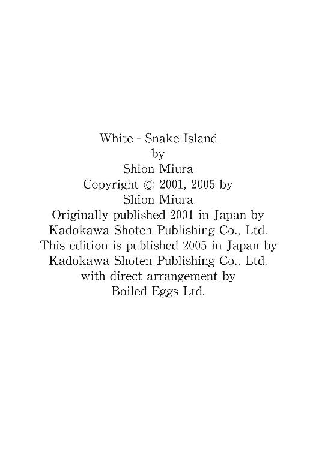
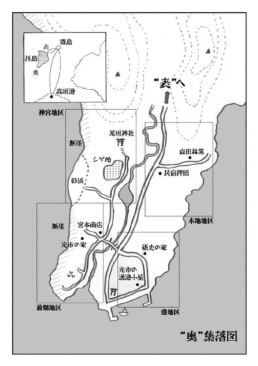

| 白いへび眠る島 | |
| 三浦しをん | |
| KADOKAWA / 角川書店 (2013) | |
白いへび眠る島
三浦しをん

角川ｅ文庫
本作品の全部または一部を無断で複製、転載、配信、送信したり、ホームページ上に転載することを禁止します。また、本作品の内容を無断で改変、改ざん等を行うことも禁止します。
本作品購入時にご承諾いただいた規約により、有償・無償にかかわらず本作品を第三者に譲渡することはできません。
本作品を示すサムネイルなどのイメージ画像は、再ダウンロード時に予告なく変更される場合があります。
本作品は縦書きでレイアウトされています。
また、ご覧になるリーディングシステムにより、表示の差が認められることがあります。


白いへび眠る島
第一章 島に帰る
幼なじみは出迎える──猪との格闘の話──赤いのぼり──屋根から見た集落──不吉な噂
船体に重くぶつかる波が、ゴオンゴオンと背中に振動を伝えてきた。陸が近い。船ごと振りまわされるような渦に揉まれ、雑魚寝の船室で一晩中悪夢を見た。この海はいつも荒ぶっている。島に戻ろうにも、島から出ようにも、天まで持ちあげられたかと思うとたちまち海底に引きずりこまれるように落下する、心もとない小船に身を委ねなければならない。
拝島は人の出入りを喜ばない。
少ない荷物の入ったリュックを肩に引っかけ、前田悟史はデッキに上がった。急速に遠ざかりつつある夜の名残の濡れた風が、寝起きの顔をひんやりとかすめた。朝靄の中を、気の早い海鳥が鳴き交わしながら飛んでいる。船は徐々に速度を落とし、乳白色の闇に向かって汽笛を一度ほとばしらせた。それに答えるかのように、悟史のいる右舷のデッキに薄い朝日が射す。海面に身を乗りだして前方を見やると、しっとりと悟史の頰を湿らせていた靄が晴れ、緑の山々を擁した島影が波間に姿を現したところだった。
たわむ板を渡り、コンクリートの地面に降り立っても、悪夢の続きのように少しふらふらした。島に戻るときは、いつもこうだ。帰省してきたらしい何組かの家族連れが、それぞれの出迎えの人間のほうに、笑みを浮かべて歩み寄っていく。盆休みを前に品物を満載したカートを押した業者が、納品先の商店へのんびりと向かう。昼過ぎの出航まで、時間は果てしなくあるのだ。
船が接岸する前から、悟史は幼なじみの姿を港に認めていた。それでも、まっすぐに駆け寄っていくのも照れくさい気がして、わざとゆっくりと、地面を踏みしめてうつむきがちに歩を進めた。船には幸いにして顔見知りは乗りあわせていなかったし、早朝の港も目的を持った人たちによって活気づき、一人で島に戻った悟史に注目する者はいない。
船から見えた幼なじみは、しゃがみこんで、暖まりはじめたコンクリートに寝そべる野良猫を撫でていた。だが、悟史にはわかっている。きっといま、中川光市は自分の姿を探している。下船がはじまったことを知った彼は、荷物や島民のあいだをかいくぐり、早足でこちらに向かっている。
「悟史！ 悟史！」
悟史の想像をなぞるように、光市の懐かしい呼び声がした。人混みの合間から、日に焼けた光市の顔と、潮にさらされて色が抜け、ぱさぱさに乾燥した髪が見えた。彼はぼんやりと港に佇んでいた悟史に手を振って合図すると、すぐに駆け寄ってきた。数カ月のうちにまた背が伸びた幼なじみは、満面の笑みで悟史の肩を軽く小突いた。
「夏休みに入ったらすぐ帰る、って言ったのはだれだよ」
謝るのも、弁解するのもおかしい気がして、悟史はただ小さく笑ってみせた。
車は港の敷地内に無造作に停められていた。海風に晒されて赤い錆の浮いた古い軽トラックだ。組合が一括購入し、集落ではどの家も同じ型の軽トラックを使っているため、荷台の後ろに「光市」とペンキで書いてあった。
「免許、取ったんだ」
「先月。十八になってすぐ」
光市は得意げにジーンズのポケットから免許証を取りだしてみせた。「高垣の試験場にも行ったんだぜ。悟史のところに寄ろうと思ってたんだけど、船の時間がなあ」
しゃちほこばってこちらを睨みつけている写真を見、免許証を返した。光市は危なげないハンドルさばきで素早く方向転換すると、ウィンカーを点滅させて道に出た。
「悟史は来月だよな。取るの？」
「いや、俺はいまのところ必要ないからね」
手動で窓を下ろし、潮の香りを深く吸いこむ。海に面して並ぶ店や人家は、相変わらず漂白されたようなそっけない風情をしていた。光市は片手でハンドルを操作しながら、煙草に火を点けた。悟史は開いた窓に肘をついて、光市の手慣れた一連の動作を眺めた。
「楽勝だったろ」
「ん？ 免許？」
煙を吐きだして光市は笑った。「実技はね。こっちは中学生のころから走らせてんだ」
「島の山道の感覚で、高垣あたりで走られちゃ困るぜ」
「じっさい、寄島でも、信号ったって三個しかないだろ？ 路上教習の意味がないよ」
拝島には高校がない。もちろん自動車教習所もないから、光市は隣の寄島の高校に通い、寄島で教習を受けたのだ。
「島じゃあ、轢くのも猿か猪ぐらいのものだからいいけどな」
「へえ、猪が道まで出るの」
「近ごろ多いんだよ。このあいだも、宮本商店のオヤジが七沢の峠でバッタリさ」
悟史が灰皿を開けてやると、光市は煙草を持った左手で軽く礼をして、灰を落とした。「車に乗ってりゃいいのに、にらみあったままそろそろと運転席から降りた」
「それで？」
「闘牛よろしく、バーンと開けたドアを後ろから支えて、『さあ来い！』」
「あはは」
「『猪突猛進』って本当らしいな。猪は憤然と突進。オヤジははね飛ばされて尻餅、猪は鼻面をしこたまぶつけてよろよろ退散、ドアは派手に陥没だ」
「宮本さん、無事だったんだ」
「まだ子どもだったんだろう。大人の猪だったらさすがに尻餅ぐらいじゃすまないだろうって、じいちゃんが」
「じいさん元気か？」
「もう、うるさいのなんの。今朝だって、起こされたの三時だぜ。今朝っていうか、夜だよなあ？ 持念兄弟が帰ってくるのに、いつまで寝てる、早く迎えに行け、ってさ。俺だって悟史が帰ってくるのは嬉しいけど、三時は早すぎるだろ」
なんの衒いもなく、光市は「嬉しい」と言った。
悟史が本土の港湾都市、高垣の高校に入学してから三年。一晩船に揺られれば島には帰れるというのに、部活動を理由に、足は故郷から遠のきがちだった。盆暮れの数日しか拝島には戻らない。だが、この幼なじみはいつも変わらぬ態度で悟史を迎えた。まるで、昼の船で高垣まで買い物に行った者に対するように。光市と悟史のあいだでは、時間も距離もまたたくまに溶けだしてしまうかのようで、それは悟史自身にも不思議でならなかった。
茂太じいさんはきっと、「それが持念兄弟というものだ」と言うことだろう。
表の集落を抜けると、道はどんどん険しい山の奥に分け入っていく。拝島は、港のある南の方角から見ると、こんもりとした山のせいもあって、丸い島のように見える。だが実際は、幾重にも重なる山々の続く、やや北西に傾いた細長い島だ。
北に行くほど先細りしていくその姿を、テレビの紀行番組で大陸へ向かう機上から眺めたある作家が、「エメラルド・ドロップ」と表現した。男が漏らしたそんなロマンティックな言葉に、当のなにもないうらさびれた島に住む人間は、夕飯時の茶の間で文字通り噴飯したものだ。しかし、無機質に光を反射する海原で、滴の形をした島の緑が濃く美しいだろうことは、空から自分たちの住んでいる場所を見たことがなくても、容易に想像しえた。
島には集落は二つしかなかった。港のある「表」と、島の北西端、一番細く尖っている部分にある「奥」だ。険しい峠をいくつも越え、「奥」までの道がなんとかすべて舗装されたのは、ここ十五年ほどのことだ。それまでは、表と奥は船で行き来していた。まがりくねる山道を行くよりも、海の道を行くほうが楽で早い。拝島の人間にとって、いまでも船は車よりも身近な乗り物だ。波のたゆたいに慣れることができず、港に着くたびに雲から降り立ったように足を踏みしめる自分を、悟史はだれにも知られたくなかった。
海と山に恵まれ、本土の高垣からも船で一晩。それでも、拝島に静養や休暇を楽しみに訪れる人間はほとんどいなかったし、空港建設の話も持ちあがっては立ち消えていた。過疎化が進んでいるところはどこも、なんとか観光客を集めようと躍起になっているのに、拝島だけは緩やかな時の流れに身を委ねきっているかのようだ。そこには、島の暗黙の力が働いているように感じられた。
夏の日差しを照り返すアスファルトと喧噪の町から戻った悟史は、山の静謐さに居心地の悪さを覚えて身じろいだ。光市は鼻歌を歌いながら、運転に巧みな緩急をつけて山道を進む。窓の外を流れる見知った山々の稜線。道路脇まで迫る繁った木々。谷川の向こうの植林された日当たりの良い斜面。不自然なほどに変化のない、静かな拝島。
悟史は襲いかかった突然の違和感を、カーブでかかる遠心力に任せて故郷の風景に放り投げた。柔らかに澄んでいるように思われるこの島の空気の中に、冷たく固い粒の存在を感じるのは、どうやら悟史だけのようだった。その粒は幼いころから、呼吸とともに悟史の肺にそっと傷をつける。その痛み、そのいたたまれなさを、なんと表現し、だれに訴えたらいいのか。言葉にできない感覚は、存在しないのと同じだ。特にこの島においては。だから悟史は、いつものように違和感をあえて遠ざけた。
あと数日、この島で過ごさなければならないのだ。
梢が次第に低くなり、ようやく光が行き渡りはじめた朝の空が眼前に広がる。道は緩やかな傾斜を描いて、「奥」の集落へと、そして島の北西端の海へと進路を示した。
「起きてる？」
「うん」
悟史は正面に現れた、白く輝く海を見据えたまま応えた。光市がややスピードを緩める。
「十三年ぶりの大祭だろ？ のぼりの数が違う」
光市の指すほうに視線を移す。道の右手、川の向こう岸の山々の稜線に沿って、赤いのぼりがはためいていた。山の緑に映えて禍々しいほどの赤が、薄い青空に向かって火の手を伸ばしている。その山の中腹に、ひときわこんもりと繁った大樹が集まっている場所が見てとれる。荒垣神社の神域の森だ。島の人々はそのご神体を、白蛇様と呼んだり荒神様と呼んだりして、丁重に祀っていた。
「すごいね。『奥』じゅうの家がのぼりを奉納しているんじゃない？」
「じいちゃんが数えたら、三十五、六本はあったって。じいちゃんの目はかすんでるから、合ってるかどうかわからないけど」
前の大祭のとき、悟史も光市も五歳だったはずだ。そのときのことを覚えていてもいいはずだが、不思議な胸のざわめきがわき起こっただけで、なにも思い出せなかった。
「光市、大祭がどんなだったか、覚えてるか？」
「それなんだよ」
光市は首をかしげた。「俺もこのあいだから思い出そうとしてるんだけど、さっぱりさ。前の大祭のとき、俺たちなにしてたんだろうな」
「特に祭りと関係なく、遊びほうけてたのかな」
「そんなところだろう」
それに、と光市は言葉を続けた。
「今回は、信一さんへの代替わりの祭りでもあるんだ。大祭の中でも特別盛大なんだって」
車は、海に流れこむばかりとなった川沿いの道を、ようやく「奥」の集落へと入った。
「奥」はすぐ背後には山を、前面には大陸へ面した広大な海を持つ集落だ。海と山とのあいだのわずかな土地に三十戸ほどの家々が点在し、百人にも満たぬ人々がのんびりと暮らしていた。
「奥」では小学校も中学校もとうに廃校になり、悟史たちは集落の漁港から毎朝船に乗って、「表」まで送ってもらった。悟史にはそれは苦痛以外のなにものでもなく、しかし苦痛であることが許されない土地柄だった。
光市が、「表」で電気屋を営む谷川さんに話をつけてくれた。毎朝、店に向かう谷川さんの、軽トラックの荷台に便乗できることになったのだ。ためらう悟史を促すと、光市は率先して、溝が刻まれてゴツゴツした荷台に乗りこんだ。晴れている日は運転台にもたれかかり、並んで座る。後ろ向きに運ばれながら、二人で歌ったり話したり、時には喧嘩になって殴りあったりした。雨の日にも、光市は谷川さんの軽トラックで運ばれることを選んでくれた。青いビニールシートをかぶり、揺れる荷台になんとかしゃがみこみながら、わけもなくクスクスと笑いあった。
そういうすべてを捨てて、自分が高垣の高校へ進学することにしたのは、いったいどうしてだったのか。
光市はいつでも、なにも言わないうちから悟史のことをだれよりもわかってくれた。悟史の漠然とした思いを、もしかしたら光市のほうが正確に把握しているのかもしれない。久しぶりに島に戻った悟史の隣で、いまも光市は後込みも気負いもなく車を走らせている。
朝の早い集落は、すでに人が活動している気配に満ちていた。木々に隠れ、対岸の山の中腹にある荒垣神社の、素朴な白木の鳥居が見えた。神社へ続く急な石段の脇あたりで、ちょうど川は小さな淀みを作っている。その相変わらずの澄んだ静けさを前方に確認したとき、光市がクラクションを鳴らした。
山のほうから集落に入ってきた光市のトラックを、畑に野菜を採りに行くところらしい人影が、「あれ」というように振り返って見た。押田のおばちゃんだ。
「おばちゃん、おはよう」
光市が軽トラックを止め、窓から声をかける。
「早いねえ、光ちゃん」
「悟史が帰ってきたんだよ」
おばちゃんは、朝日を跳ね返すフロントガラス越しにトラックの助手席を覗きこみ、
「まあまあ、悟史ちゃん。すっかり大人っぽくなって」
と言った。そして、悟史が挨拶するのもそこそこに、
「ほら、お母さんが首を長くして待ってるでしょう。早く送ってあげて」
と、光市をせかした。
それから悟史の家までの短いあいだ、道ですれ違う人、車、すべてに二人は目礼した。どの人も、「おや、悟史君」という軽い驚きと歓迎の意もあらわに、二人に目礼を返す。
「俺、これだから島はあんまり好きじゃないよ」
ぼやいた悟史を、光市は笑った。
「またすぐに慣れるさ」
すぐに、というのは、滞在する盆の数日のことを言っているのだろうか。それとも、高校を卒業して島に戻ればすぐに、という意味だろうか。悟史はそんなことをぼんやりと考えた。
川の向こう岸に、宮本商店の傾いた看板が見えてきた。ここは集落でただひとつの商店で、食料品から生活雑貨までなんでも扱っている。猪と格闘したという宮本さんが、道に出した縁台に座って煙草をふかしていた。道の右手に沿って流れる川を渡ることなく、橋のたもとで左折すれば、悟史の家はすぐだ。家の前に待ちかねたように母親が立っているのを見て、さすがに懐かしさがこみあげた。
光市がまたも合図のクラクションを鳴らすと、母親が手を振って近寄ってくる。悟史は光市に礼を言うと、膝に抱えたままだったリュックとともに軽トラックから降り立った。
「ただいま」
「おかえり。あんた、船は大丈夫だった？ 酔わなかったの」
「大丈夫だよ」
母親の心配をぞんざいにはねのける。船に弱いということに触れられたくなかったし、光市のいる前で母親に甘やかされ、甘えてしまうのもいやだった。
「光ちゃん、ありがとね」
母親は、軽トラックの運転席に座ったままの光市に声をかける。それで悟史も慌てて振り返った。
「光市、あとで一緒に集落をまわってよ」
「オーケー。見計らってまた来る」
「あら、光ちゃん。一緒に朝ご飯食べていきなさいよ」
母親のすすめに、光市は明るく笑って首を振った。
「一人で食わせるとじいちゃんが拗ねるから」
光市の軽トラックはそのまま、漁師小屋の並ぶ港のほうに消えていった。しばらく家の前に立って待っていると、やがて港をぐるりとまわってきたらしい軽トラックが、海のほうから川沿いの道をこちらに戻ってきた。プアプアと陽気にクラクションを響かせる。光市はそのまま橋を渡って川を越えると、祖父と二人で住む家へ帰っていった。
中学まで過ごした自室はそのままに残され、母親によって掃除の手がくまなく入れられていることがわかる。それでも、長らく空けていた部屋はよそよそしく感じられる。リュックを床に放り、所在なくベッドに腰かけた。風とともに潮の香りが流れこんでくる。悟史は思い立って、海の見える窓から身を乗りだした。
窓の横の外壁には、鎹を大きくしたような金具が打ちこまれている。屋根に上るための足がかりだ。もとは船を上り下りするために使われていたものを、光市と一緒に壁に取りつけた。
悟史の家は、昔は「奥」集落の網元だった。だが、悟史の父親は役場に勤めていて、海に出ることはほとんどなかった。家を改築するのを機に、持っていた最後の小さな漁船も売った。そのときに光市は、船についていた金具をもらったのだ。
茂太とともに改築祝いにやって来た光市は、悟史の新しい部屋をしげしげと見てまわり、外壁に船の金具を取りつけることを提案した。この家の屋根に上れれば、海を見渡せて気持ちがいいよ、と光市は言った。悟史はべとつく潮風など嫌いだったし、船にも思い入れはなかったから、そんなものはつけたくなかった。だが、新しい家を誇りにしている父親に内緒で、無粋な鉄の杭を壁に打ちこむことには魅力を感じた。
悟史と光市は宴の騒ぎに紛れるようにして、苦労して工具で外壁に穴を開け、金具を取りつけた。ひんやりとした鎹を足がかりに、ようやく屋根へ上れたときには、太陽は海に沈もうとしていた。二人は屋根に並んで座り、燃える平原のような海を眺めた。一階の座敷から、祝いに集まった集落の人たちの笑い声が聞こえてきた。
「金具をつけて良かっただろ？」
と、光市はいたずらっぽく笑った。
悟史はそれからすぐに、高垣の高校に通うために島を出た。壁の金具に父親が気づいたのかどうかも知らない。だが、船の遺物は潮風にさらされても錆びることなく、未だに屋根への道筋を作っていた。
体が覚えているままに、悟史は軽々と屋根に上った。さすがにすがすがしく高揚した気分で、悟史は大きく息を吸った。ここからだと、海ばかりでなく集落中を見渡すことができる。
集落の真ん中を、山から海へと流れこむ白蛇川が縦にぶち抜いている。集落には主な道が二本しかない。先ほど悟史たちが通ってきた山から海へ続く、集落を縦断する川沿いの道と、川の真ん中あたりで集落を横断している道だ。あとは、「用のあるところまで通っていたら道ができたから舗装した」といった感じの、細い道がうねうねと通じている。十字に走る主要な道によって四つに分けられるのをいいことに、集落は便宜的に地区割りがしてあった。
海を背にして、山ぎわの上流左側にあたる一帯を「神宮」。ここには、島の氏神である白蛇様を祀る荒垣神社がある。荒神様とも呼ばれるこの氏神に背を向けることは、集落では忌まれており、地理を考える基準も、「荒神様に向かって右、左」だった。山を越えて遥かに「表」まで通じている「奥」集落の縦断路は、荒神様の対岸に当たる川の右側にあった。もちろん川の左側にも、海から荒神様までの道はあるが、それは外の世界とは通じていない。荒神様で行き止まりだ。荒垣神社が名実ともに、集落の一番「奥」に位置していると人々は認識していた。それほど、荒神様は集落で尊ばれ、恐れられていた。光市の軽トラックの窓から見えた赤いのぼりは、悟史の家の屋根からもよく見える。
上流右側にあるのが「木地」。今朝会った押田のおばちゃんは、この「木地」地区に住んでいる。林業が盛んだったころは、まだもう少し家があったそうだが、いまでは三軒しか残っていない。
「地区ごとに代表を立てて話しあうときなど、すぐに役目がまわってきてしまう」
話すのが苦手な森田のじいさんが、そうぼやいているのを、中学生だった悟史は吹きだしそうになりながら聞いた。集落を確実に覆っている過疎の影を、自身にはなんら関係ないと思っていたころのことだ。
下流左側は「前畑」。文字通り、隠居して畑を作っている老人の多い地区だった。「奥」集落では、基本的に二世代同居という習慣がない。子どもに跡を譲ると、親は「前畑」地区に移って隠居生活をする。狭い集落の中で、平穏に暮らすための知恵だろう。親子といえども、互いの生活に過度に干渉するのを避ける。海と山を糧に、地に足のついた生活をしてきた人々の、したたかで自立した合理精神だった。
光市は「前畑」地区に、祖父の茂太と住んでいた。近所は年寄りばかりだから、彼は小さいころから地区のちょっとしたアイドルだった。老人たちが先を争うように菓子を与えたため、光市の乳歯は危機的状況にあったほどだ。見かねた悟史が菓子を食べるのを手伝ったので、光市は本当にアイドル顔負けの真っ白な永久歯を生やすことができた。
悟史の家は、下流右側の「港」にある。現役世代の家が立ち並んでいるため、子どもの声もここでなら聞くことができた。小さな漁港には漁師小屋が立ち並んでいて、その中に光市の小屋もあった。悟史は光市が網のほころびを繕うのを、しゃがみこんでじっと見ているのが好きだった。
幼いころは、決して海を嫌いではなかった。
船にさえ乗らなければ、潮風はいつも心地よく、波は眠りに誘うように静かに寄せた。島を出る直前に悟史の心を満たしていた海への嫌悪は、父親に対する反発心から生まれたものだった。悟史は再び、眼前に広がる海を眺めた。家族と離れて数年を過ごしたいま、中学生だったころのような鋭い気持ちはどこかに行ってしまった。だが、胸の奥に沈殿する得体の知れぬ暗い蠢きはあった。こうして呼吸をしていても、島に対する違和感は完全には消え去らない。悟史は眩しくなってきた海からの反射光に目をすがめると、金具を伝って部屋に戻った。
階下に降り、大きな座敷のある廊下を静かに通り過ぎて居間に入る。海へ向いた居間の窓は大きく開け放たれ、ダイニングテーブルには朝食のしたくができていた。
「日和子は？」
「お祭りの女踊りの練習よ。昨夜から先生の家に佐和ちゃんと詰めてるの。『お兄ちゃんが帰ったらすぐに戻る』って言ってたけど、おおかたあんたの到着にも気づかずに寝てるんでしょ」
「先生」は「表」にある小学校と中学校の先生だ。悟史の家の斜め向かいに住んでいて、妹の日和子と同い年の娘の佐和子がいる。寄島の高校に通うようになってからも、日和子と佐和子は双子の姉妹のように仲が良く、なにをするのも一緒だった。
「どうせ練習なんてしてないよ。あいつら、飽きもせずに夜じゅうしゃべっていられるんだ」
「あんただって、光ちゃんと港からずっとしゃべってきたんでしょ」
「そんなに話すことなんてない」
悟史は電気釜からご飯をよそった。母親が置いてくれたみそ汁をすすり、彼女の視線に気づいて慌てて「いただきます」と付け加える。しばらくは黙ってご飯をかきこみ、正面に座った母親の監督のもとに腹を満たした。
「......親父は？」
常ならば父親は、近づいてくる軽トラックのエンジン音を聞いた時点で、そわそわと居ずまいを正し、もっともらしい威厳をまとって息子の帰還を待ち受けているのだ。それが姿を見せないとは、盆も近づいたこんな日の早朝から一体どこに行ったのかと、悟史は不審に思った。
「昨日から役場に泊まりこんでるのよ」
船を売った父親は、「表」の役場まで車で通っている。それでも、「学校には船で行け」と、車に乗せてくれなかったことを恨めしく思い出しながら箸を置いた。
「なんかあったの」
「あんた、今日はご近所にご挨拶してよ」
母親の言葉は質問に対する答えになっていなかったが、悟史は特に気にもせず、コップにつがれた冷たい麦茶を飲み干した。
「わかってる。さっき光市にも頼んだだろ」
「あんたはホントに光ちゃんに頼りきりなんだから......」
光市はすでに漁にも出ていたし、両親を早くに失ったためか、無邪気に明るいようでいて、一人前の「大人」だった。同じく高校生の悟史としては、その光市と比較されると、自分が酷く「子ども」に思えて恥ずかしい。
「うるせえな」
乱暴に席を立つと、母親が慌てたように言い募った。
「悟史、あんまり遅くなるんじゃないよ」
「なにが」
「だから、挨拶まわり。ちゃっちゃと切りあげて早めに帰りなさい」
普段は近所づきあいについてうるさいほどに説いてみせる母が、こんなことを言うのは初めてだった。
「なんだよ、突然」
悟史は疑念をこめて母親の表情を探ったが、海を見ている横顔からはなにも読みとれなかった。
「最近ちょっと物騒なのよ」
泥棒が来たことすらない、鍵というものがもとからついていない家も多いこの集落で、「物騒」とはどういうことだ。悟史は眉を寄せた。
「......あれが出たの」
母親は声をひそめて言った。「そういう噂がちらほらあって、みんながうちに確かめに来るから、『馬鹿らしい』ってお父さん怒っちゃってね。家にいると煩わしいって、役場に行っちゃったの」
「......あれって」
こちらを向いた母親の白目の部分が、澄んで子どものように青みがかっていた。母親も、日和子もそういう目をしている。それが悟史は好きだった。
「あれはあれよ」
ひそめたままの声音で早口に言った母に、悟史は「まさか」と思い、「そんな馬鹿な」と笑い飛ばそうとして、しかしそうはできずに背筋を這い上る寒気を感じた。いよいよ夏の太陽が本格的に照りつけはじめたというのに、なんだか急に居間が冷えこんだような気がした。
第二章 花は夜ほどよく香る
「光市」号出動する──もう一つの月──黒い人影──悟史、残酷な気分になる──持念兄弟の話──荒太と犬丸──居心地の悪い家──あれの出現
「さとしー、行けそうか？」
開け放したままの玄関から聞こえた光市の声に、悟史は「おう」と答えた。
「ちょっと入ってきてくれ」
濡れた髪もそのままに、悟史は廊下に首を突きだした。「こっちこっち」
二階の悟史の部屋へ向かおうとしていた光市は声に振り向き、座敷から顔を出している悟史のほうへとやってきた。
「風呂入ってたのか」
「うん」
悟史は土産物のつまった段ボールを覗きこんだままうなずいた。近所中に配らなければならないから、土産は先に宅配便で送っておいたのだ。かなりの量がある菓子折を前に、悟史は配る順番を頭の中で組み立てていた。
「昨夜は船で、あんまり寝られなかっただろ？ 配るのは一眠りしてからでもいいんじゃないか」
「いや、大丈夫」
悟史は菓子折をビニール袋に突っ込んだ。光市がさっさと半分持ち、「じゃ、行こう」と先に立つ。
「まわる順番は決まったか」
「『木地』から時計まわりでどうかな」
「『港』に戻って、それから『前畑』『神宮』ね。うん、いいでしょう」
いってきます、と台所の母親に声をかけ、二人は表に出た。暑くなりそうだった。土産を「光市」号の荷台に載せているうちに、悟史の髪の毛は乾きはじめている。
「悟史、土産の中身ってなに？」
「がっつくな。光市のぶんもあるんだから」
「そうじゃねえよ。腐るようなもんだったらまずいだろ」
ああ、と悟史は笑った。
「大丈夫だよ。煎餅とパウンドケーキの詰めあわせだもん」
「はあ？ また変な取りあわせだな」
光市はくわえ煙草で運転席に乗りこみ、エンジンをかけた。
「文句言うな。どっちも高垣のデパートに入ってる菓子だ」
「じいちゃん、煎餅食えるかな」
「おまえが叩き割ってやれよ。それより光市、集落でも堂々と煙草吸ってるのか」
助手席におさまった悟史を横目で見て、光市は笑った。
「いやだねえ、高垣でお上品な生活してる人はこれだから。ここは『拝島』だよ。『水』って言ったらビールが出てくるところだよ」
島の暮らしは外とは違う。島での生活は、高垣のような、さまざまな所からやってきた人が集う街とはまったく別のリズムに支配されている。高垣から見える月は、島で見る月よりも小さく遠く感じられた。だから悟史は、戯れにこう考えたりした。
島は実は、外とはまったく別の、もう一つの「月」に支配されている。その「月」は、高垣などから見える月とは、大きさも周期も違うのだ......。
島には、「掟」とも言うべき独特の生活習慣が数多くある。集落内での濃密な近所づきあいや、荒垣神社の祭り、「持念兄弟」の風習。だから悟史は、たまに島に戻ってくると、忘れていたもう一つの「月」の引力にとらわれたかのように、めまいにも似た違和感を覚える。潮の満ち引きの秩序が乱れるような、体内時計が狂ったような、生物としての混乱だ。生まれ育った場所だというのに、悟史はどうしても拝島の重力にはなじめなかった。違和はいつまでも中和されることなく、悟史は混乱を抱えたまま、里帰りを数日で切りあげて島から離れることになる。
悟史たちがまだ小学生だったころ、山菜を採りに行った山で、佐野のおじさんが足をくじいて動けなくなった。おじさんが戻ってこないことに家の人が気づいたときには、すでに日も落ちかけていた。大騒ぎになり、集落中の男たちが山に入って捜索した。捜索は難航した。おじさんは山菜の在処を秘密にしていたから、だれもおじさんの入った山を知らなかったし、自分を捜す人々の声が聞こえても、おじさんは黙りこくってじっとしていたのだ。
夜も更けてきたころ、ようやくおじさんを見つけたのは、当時光市が飼っていた犬のケンタロウだった。光市の祖父である茂太の話では、喜んだケンタロウに飛びかかられた佐野のおじさんは、「見つかっちまったか」と苦笑いし、「水をくれ」と言ったらしい。茂太の後についていた押田のおじさんが、背負っていたリュックから生ぬるくなった缶ビールを差しだした。
遭難しかけた人間に、普通はビールは渡さないだろうと悟史は思うのだが、島にはそんな考えを持った人間はほとんど皆無だ。三人はその場で即座にビールを飲みだした。ケンタロウの吠える声をたよりにやってきた他の人たちも交え、佐野のおじさんの遭難現場で酒盛りがはじまった。集まった男たちの中で、水筒にアルコールではない飲み物を入れていた者はだれもいなかったそうだ。さんざん飲んで、歩けない佐野のおじさんを担いで千鳥足で戻った捜索隊は、その後しばらく集落の女たちに口をきいてもらえなかった。
悟史は拝島を象徴するこの遭難騒ぎの話を聞くたびに、呆れながらも、輪に入っていけない自分に一抹の寂しさを感じる。
「そうだった......それからしばらく、うちの親父はお袋に弁当作ってもらえなかったんだ」
内心を隠すように冗談めかした悟史の言葉に、光市はうなずいた。
「俺もさあ、あれには腹立ったよ。ケンタロウも連れていっちゃうし、こっちは心細いし心配だしで眠れなかったっていうのにさ。じいちゃんはへべれけで帰ってきて高いびきだもんな」
軽トラックはのろのろと、川沿いの道を上流へ進んだ。
「そういうわけで、この集落に俺の喫煙を責められるような人間はいないの」
光市は「腹が立った」と言いながらも、育った場所のリズムを自然に身につけた。海で船を操り、畑を作って家計を支え、島の大人たちの仲間入りをしていた。だが、「外」の基準に照らせば、彼はまだ高校生なのだ。悟史はうっかり納得しそうになった自分が悔しかった。
「未成年のくせに」
悟史の最後のあがきを、光市は鼻で笑った。
「この島には外の法律は通用しないんだよ。知ってるだろ」
拝島は、外とは違うもう一つの月に支配されている。
「木地」までは車で五分とかからない。朝も通った集落を縦断する道を、今度は川を左手にして山に向かって進む。すぐに、わずかな土地になんとか作った小さな田と、点在する三軒の家が見えてきた。朝に会った押田のおばちゃんと悟史の父親は、はとこだかなんだかの関係にあった。要するに、遠い親戚というわけだ。「水」と言われてビールを出したおじさんと、古い木造の二階建てに住んでいる。
押田家は収入のほとんどを、斜陽産業を通り越して日没後といった感のある林業によっていたが、そのかたわら、時代劇に出てくる旅籠のような家屋を利用して、集落でただ一軒の民宿を経営してもいた。悟史も光市も、宿泊客を見た覚えがあまりない。押田家がなぜいつまでも、観光客も訪れない島で「民宿」を標榜しているのか、考えてみれば謎であった。
「ごめんください」
道に面した硝子戸を開けると、古い家の常で土間は薄暗い。夏の中からやって来た悟史と光市は目が慣れず、咄嗟にはほとんどなにも見えなかった。土間の正面には、二階へと続く急な階段がある。その階段の脇に、四畳半ほどの小さな畳の部屋があった。一人暮らしができなくなった押田のおばあちゃんが、晩年に炬燵に入ってテレビを見ていた部屋だ。光市はおばあちゃんが「前畑」地区で隠居していたころから仲が良かったから、二人はよくその部屋にあがりこんでは一緒にテレビを見、お菓子をもらった。
いま、階段がぎしぎしと鳴っていた。だれかが二階に上がっていっているのだ。薄暗かったが、黒いものが階段の上部に一瞬だけ見え、すぐにきしみは止んだ。
悟史は急いで脇の四畳半を覗いた。テレビのリモコンが卓袱台の上に載っているだけだ。だれかがこの部屋にいて、悟史たちの来訪を知って慌てて二階へと上がっていった。そうとしか考えられなかったが、はたして本当に部屋に人がいたのかどうか、悟史にはうまく気配を探れなかった。
悟史は背後で従者のように菓子折を捧げ持っている光市を見た。光市の表情は、いつもとは違い、硬かった。
「......だれか、いたよな」
悟史はおずおずと確認した。自分の見たものが現実のものかそうでないのか、昔からあまり確信がもてない。悟史の囁きに、光市は黙ってうなずいた。
そのときようやく、奥の台所から通じるのれんをかき分け、押田のおばちゃんが土間に出てきた。
「あれ、悟史ちゃん」
「こんにちは」
声が強張っている悟史をフォローするように、気を取り直した光市が明るく尋ねた。
「おばちゃん、いまさあ、だれかお客さんいるの？」
「まあ、どうして？」
おばちゃんは前掛けで手を拭った。
「だれか二階に上がっていったみたいだよ」
「お客なんかいないわよ。お盆のときに外の人を泊めるわけないじゃない。しかも今年は大祭なんだから」
あっけらかんと言って、おばちゃんはふと表情を改めた。「もしかしたら、おばあちゃんが『帰って』きたのかもねえ。光ちゃんや悟史ちゃんのこと、とっても可愛がってたもの」
盆が控えているせいなのか、おばちゃんはしみじみと思い出を追うような表情をする。悟史と光市はそれ以上の追及もできずに、顔を見合わせた。
「泥棒だったんじゃないだろうな」
「光市、おまえちょっと二階を見てこいよ」
「悟史が行けよ。親戚の家だろ」
「遠縁だってば」
ひそひそと小突きあう二人を、おばちゃんは「仲がいいねえ」と笑った。悟史はその言葉で少し冷静さを取り戻し、来訪の目的を思い出した。
「おばちゃん、これ、高垣土産」
光市の手から受け取った菓子折を差しだす。
「まあまあ、気を使ってもらっちゃって悪いわねえ」
と言いつつおばちゃんはさっさと菓子折を受け取った。「悟史ちゃんは夏休みはいつまで島にいられるの」
「部活があるから......盆が終わったらすぐ向こうに帰ります」
「もうちょっといられないの？ お母さんも寂しがるでしょう。光ちゃんだって、ねえ」
かたわらに立っていた光市は、「べつに」というように肩をすくめ、
「じゃ、おばちゃん、また来るわ」
と硝子戸を開けた。悟史も慌てて、おばちゃんに会釈して後に続く。
外に出るととたんに、蟬の声と熱気が押し寄せた。道が白く光っている。
「光市、なんか怒ってるのか」
「いいや」
「おい、あの人影はなんだったんだよ。おばちゃんに注意しなくていいのか？」
「島外から親戚でも来てるのかもしれないし。盆だからおおっぴらに泊めてないだけで、客かもしれないだろ」
なにか別のことに気を取られているらしい光市は、取りつく島もない。「次は森田だろ？ 車、ここに置いたまま行こうか」
荷台から菓子折を一つ取りだして、道をさらに奥へと歩きはじめる。悟史はしかたなく黙って後に続き、ふと、「あれが出たの」と言った母親の声を思い出して、押田の家を振り返った。硝子戸は夏の太陽を弾き返して黒くぬめり、中を見通すことはできなかった。
森田家は山のすぐ手前の、離れがあるような大きな家だった。林業一本で食べていて、集落には「森田製材所」で働いている人もいる。だだっ広い敷地内には、漫然とトラックや乗用車が停められている。庭の一隅にある犬小屋の前で、シロが盛大に尾を振っていた。
「久しぶりだなあ、シロ。元気だったか」
シロは、仕事に行く森田の人々と一緒に山に入る賢い犬だ。悟史のことをちゃんと覚えているらしく、かがんだ悟史の胸元に鼻面を押しつけてきた。光市が尻尾に触れても嫌な顔一つ見せない。しばらく二人で犬と戯れていると、庭に面した窓が開いた。
「悟史、帰ってたのか」
森田の跡取り息子、陽介だった。悟史たちとは六つ年が離れているため、一緒に学校に通うことはなかったが、集落で数少ない子ども同士、遊んだり喧嘩したりした兄貴分だ。
本当は、悟史か光市のどちらかが、陽介と持念兄弟になるはずだった。陽介には、持念兄弟になりうるような年の近い子どもがおらず、彼はずっと一人だったのだ。しかし、悟史と光市は同じ年に相次いで生まれた。持念兄弟はできれば年が近いほうが良いとされていたから、大人たちは協議の結果、悟史と光市を持念兄弟にした。陽介はまた長いあいだ、持念兄弟になるべき男の子どもが生まれてくるのを待たねばならなかった。
「『電気屋』にはもう寄ったか？」
「電気屋」というのは、悟史たちを学校まで送ってくれていた谷川さんの家のことだ。陽介は谷川家に生まれた大地という男の子と、持念兄弟になった。大地はまだ五歳だ。ずいぶん年が離れていたが、ようやく持念兄弟を持てた嬉しさからか、陽介は本当の兄弟以上に大地を可愛がっていた。
「まだなんだ。これ、高垣土産」
「サンキュ。どうだ、向こうは。やっぱり都会はいいんだろうなぁ」
陽介は菓子折を受け取り、代わりに煙草を差しだした。悟史は遠慮し、光市は一本抜き取って、陽介と自分の煙草に火を点けた。
「どうかな。島は島で、静かでいいよ」
悟史は当たり障りのない受け答えをし、さりげなく話題をそらした。「大地君、大きくなっただろうね」
「チビのくせに、なかなかかしこいんだぜ。なあ、光市」
「うん。悪戯ざかりでさ。このあいだもふざけて佐和ちゃんのスカートをはいちゃって、おかしかったんだ」
先生の家は「電気屋」の隣だから、きっと佐和子も弟のように可愛がっているのだろう。自分が島にいないあいだにも、ここでは変わりない時の流れと、日々の生活がある。その当たり前のことに、悟史はなんだか残酷な気分がこみあげた。
「そういえば、真次さんは高垣で就職してるんだよね。都会と言っても狭い街なのに、会わないなあ」
拝島は山がちで、人の住める土地が少ない。産業も、漁業や林業のかたわら、田んぼや畑を細々と作るくらいだ。だから、昔から島には長男しか残らない習わしだった。次男以下は、島外に出る。高垣の親戚を頼って就職したり、もっと遠くの都市に出る者もあった。陽介の弟の真次も、高校を卒業してすぐに島を出た。最初は親戚のやっている製紙工場に勤めていたが、すぐにふらふらし、いまでは家にもあまり連絡を入れていないということを、島じゅうの人間がなんとなく知っていた。
「ああ......あいつももう大人の男だ。適当にやってるんだろう」
陽介はきまり悪げに言うと、
「じゃ、これありがとな。大地に会ってやってくれよ」
と立ちあがって、部屋の奥に入っていってしまった。
「......どうしてあんなこと言うんだ」
光市が低い声で言った。悟史も言ってしまってから後味の悪い思いをしていたが、光市に指摘されるのは癪だった。
「べつに、思いついたことを言っただけだよ」
光市は黙ったまま煙草を吸いきり、勝手知ったるという様子で森田家の玄関を開けると、下駄箱の上に置いてあった灰皿で火を消した。
「さて、と。『港』に戻って、先生の家や『電気屋』に行こうか」
最前までの気まずい雰囲気も、煙草の煙とともに消え失せたとばかりに、光市は森田の敷地内から道に戻っていく。悟史の中の醜い嫉妬のようなもの、疎外感、島への相反した思い。そういう、悟史自身にとってもうまく整理しきれていない感情を、光市がなにがしか感じ取ったのは確かなようだった。悟史をそれ以上責めもせず、おおらかに振る舞う光市に、悟史はもう馴染みとなった安堵と憤りを覚えた。
軽トラックで「港」地区に戻り、悟史の家の周辺をまわった。「電気屋」で大地としばらくアニメを見る。夏休みということもあってか、昼間からさまざまなアニメが続けて放映されていた。高垣で同年代の人間とばかり生活していた悟史にとって、集落の子どもの相手をするのは久しぶりだ。夏の昼間からアニメを見るというのも、懐かしい時間の過ごしかただった。島にいたころは光市と一緒に、よく日和子や佐和子の相手をしてやったのに。結局、ひとしきり大地と楽しんでアニメに見入り、先生の家に行くころには昼になっていた。
「こんにちはー」
勝手口に立つと、ガタガタと椅子を引く音がして、妹の日和子と先生の娘の佐和子が走り寄ってきた。
「お兄ちゃん、おかえり！」
「日和子、おまえ相変わらず先生の家に入り浸って......」
台所を覗きこむと、テーブルにはそうめんがゆであげられている。「昼飯まで食わせてもらってんのか。家はすぐ前なんだから、帰ってこい」
「いいのよ、悟史にいさん」
佐和子がニコニコと助け船を出した。「女踊りがうまくできなくて、日和ちゃんにつきあってもらってるのは私なんだから。待ってて、いま、父さんを呼んでくる」
居間のほうへと向かった佐和子を見ていた光市が、一つため息をついた。
「なあ、日和ちゃん。佐和ちゃんて、相変わらず......？」
日和子は少し悟史をうかがい、
「うん、相変わらず。どこがいいんだか知らないけど」
と言った。「怒りっぽいしさ、けっこう神経質なところもあるかと思えば、さっさと独り決めして実行しちゃうこともあるし......私ならいやだけどな」
ぶつぶつと言う日和子が、だれのことを言っているのか悟史はなんとなくわかっていたが、聞こえないふりをした。いままでも、聞こえないふりをして、知らん顔を通してきたし、悟史としてはこのまま事態が進展しないことを願うのみだった。
やや頰を紅潮させた佐和子が、父親を連れて勝手口に戻ってきた。
「悟史君、久しぶりだね。高垣の学校はどう」
変わらぬ柔和な笑顔を浮かべ、先生はＴシャツ姿で声をかけてきた。庭いじりをしていたのか、手には植え替え用の小さなシャベルを持っている。
「楽しいです」
「それはよかったね。もう三年生だろう。進路は考えているの」
「いえ......部活ばかりしているし、どうかな」
微妙な話題に触れられて、悟史はやや口ごもった。先生はそれを素早く察知したらしく、
「上がって佐和子たちと昼を食べていきなさい」
と勧めた。光市はさすがに先生の前で煙草は吸えず、ぶらぶらと足もとの石ころを蹴っていたが、その言葉にふと顔を上げた。
「先生、悟史には俺の家で飯食ってもらおうと思ってんだ」
「いいよ、光市。俺、家で食べますから」
妹への意地も手伝い、後半は先生に向けて言った。
「じいちゃんが、もう用意してるからさ。まあ、うちで食ってくれよ」
なおも悟史を誘う光市に、先生は「そうか」とあっさりと退いた。
「持念兄弟のあいだに割りこむのは、御法度だからね。そういうことなら悟史君、光市君の家でごちそうになるといいよ。茂太じいさんも楽しみにしてるだろうし」
さっさとテーブルのそうめんに戻った日和子が、
「お兄ちゃん、明日は楽しみにしててね。佐和ちゃんと、完璧な踊りを見せてあげるから」
と言った。
「あまりお邪魔せずに、早く家に帰れよ」
さほど説得力がないな、と思いつつ、悟史はたまに会う妹が本当のところ可愛くてしかたがない。ついついもっともらしく兄貴面し、先生の家を辞した。佐和子がわざわざ家の前まで送りに出てくる。悟史は佐和子となにを話せばいいのか見当もつかず、ぶっきらぼうに会釈して光市の軽トラックに乗りこんだ。
軽トラックが橋を渡り、「前畑」地区にさしかかったところで、佐和子はようやく家に入った。それをバックミラーで確認した光市がつぶやく。
「どうすんの、悟史」
「どうするって、なにが」
「いろいろさ、いろいろ」
悟史は答えられずにむっつりと黙りこんだ。光市は、家の脇の砂利が敷かれたスペースに軽トラックを乗り入れる。
「じいちゃーん、悟史が来たぞ」
古ぼけた小さな家の、廊下の硝子戸が開いた。座椅子をこちらに回転させた茂太が、早く上がってこいとばかりに、傲然と顎をしゃくってみせた。
光市の家は、いつでもふわりと線香の匂いがする。茂太が朝夕熱心に仏壇に向かうせいだ。島の家にはたいがい仏壇があるが、いったいなにを拝んでいるのかはよくわからなかった。島に寺はない。隣の寄島の坊さんが、年に一度、七月にやってきて供養する。実のところ、葬式のときすらも完全な仏式とは言えなかった。荒垣神社が中心になって、集落の人間の手で執り行われる。その後の供養は寄島の寺に頼むのだが、神社が送りだした人の魂が、仏の世界に辿り着けているのかどうか定かでない。死者も混乱しているだろうと思われるのだが、島の人間は笑って、「まあ、昔からこうやっているから」とあまり気にしていなかった。悟史も、坊さんの来ない葬式をさしておかしいとも思っていなかったが、高垣に出てからは、どうやら島の風習にはいろいろと変わったところがあるらしいと自覚した。
いまでは悟史も、なんとなくわかっていた。拝島は荒垣神社に支配されている。「奥」集落のみならず、「表」の人々の尊敬と畏怖をも集めている神社に、「支配」という表現はおかしいかもしれない。しかし、島のしきたりや儀式の大部分を司っている神社に、人々がなんらかの形で絡め取られているのは確かだった。取ってつけたような仏壇や仏式の供養も、比較的新しい時代に外との交流を通して取り入れたものに違いなく、本質的な部分で、ここの人間は太古の昔から荒垣神社を信奉してきたのだ。
光市の家までは、波の音も届かない。そのかわり、蟬の声が濃厚に降り注いでいた。荒垣神社の神域の森が近いのだ。年寄りばかりが住むこの地区は、人の気配が感じられずひっそりとしている。自然の音だけでは、空間を埋めることはできない。「港」地区にはあった空気の流れとでも言うべきものが、ここにはない。
「『前畑』地区は静かだね」
悟史は出された麦茶を飲んで、一息ついた。昨夜からの移動に続けて、午前中に川の右側にある地区をまわったことが、かなりの疲労として蓄積されている。そのことに改めて気がついた。
「半分棺桶に入ってるようなジジババばかり住んでるんだ。にぎやかだったらかえって不気味だろう」
茂太が揚げたてのコロッケを持って、台所から慎重に居間に入ってきた。彼は年老いて人間がまるくなるどころか、どんどん毒舌に磨きがかかるクチだった。悟史はコロッケが山盛りにされた大皿を受け取り、最前から卓袱台の上に載せられている、これまた山盛りのそうめんを眺めた。
「......そうめんとコロッケなの？」
「好きだろう、コロッケ」
汗を拭きながら、茂太がどっこいしょと畳に腰を下ろした。
「うん。いただきます」
中川家では、食べたいものを取りあわせなど考えずに食べているらしい。光市が、冷えた缶ビールをそれぞれに配った。
「明日は祭りを見るんだろう」
茂太が麵をすすりながら言った。この老人は、「高垣はどうだ」などということは聞かない。悟史は、光市の祖父ということを抜きにしても、茂太じいさんのことが好きだった。
「見ないと日和子にどやされるよ」
「そうだ、今年の女踊りは日和ちゃんと佐和ちゃんだったな」
茂太の言葉に、ほとんど一息にコロッケを口に入れた光市がうなずいた。
「ちょうど大祭の年に若い人の番になって、白蛇様も喜ぶだろ」
「どうかなあ」
悟史はコロッケに穴を開け、そこに醬油を染みこませながら疑問を呈した。
「佐和ちゃんはともかく、日和子が不安だ。あいつ、ちゃんと大役を果たせるのかな」
「なに、大丈夫だろう。女の子はなんだかんだと遊んでいるようで、ちゃんと稽古を覚えているものさ」
茂太じいさんは箸を置いた。
「じいちゃん、もう食わんのか」
「年寄りはそう食えん。それより、悟史がくれた土産を食べたい」
光市は心配そうにしながらも、黙って台所へ立った。悟史はしばらく迷っていたが、やがてどうしても恐怖と秘密を抱えきれなくなった。
「じいさん。朝、お袋から聞いたんだけど、あれが出たって......」
「なに、本当か」
茂太は知らなかったのだと思うと、悟史はとたんに言うべきではなかったと後悔の念にかられた。
「最近はめっきり足腰が弱って、港に行ってないからわからんが......光市も特にそんな話はしとらんかったがな」
「わからないんだ。ただ、うちのオヤジは噂にうんざりして、役場に逃げているって」
「ふうむ」
茂太は、卓袱台に落ちたコロッケの衣を指先で集めながら考えこんだ。「大祭の前だ。神域も不安定になっているから、ありえない話ではないが......だが、荒太もいるのに、そんなことが？」
最後のほうは、ほとんど独り言になっていた。悟史はそれをなんとか耳で拾い取り、怪訝な思いがした。荒太とは、神宮家の次男の名だ。神宮を継ぐのは長男の信一のはずで、今年の大祭の眼目も信一への代替わりにある。どうしてここで荒太の名が出るのか。だが、なによりも心をざわめかせたのは、茂太が「あれ」の存在を端から疑っていないということだった。
「ちょっと、じいさん。俺、本当に怖くなってきたよ。なんで頭っから『いる』っていうことを前提に考えるんだ。......『あれ』って、ホントにいるの？」
「なにを言っておるんだ。あれが出た、と言ったのは悟史だろう」
それに、と茂太は人の悪い笑みを浮かべた。「祭りの夜、凪いだ海を渡って届く、あれの声をよく聞いたものさ。神域に近づくことができず、鎮められて歯嚙みしている音がゴオンゴオンと響いておった」
からかわれているのだと思って、悟史はなにげない風を装った。だが実際のところ、動悸がし、掌にはじっとりと脂汗がにじんでいた。
突然、台所のほうから硬い物で金属を殴りつけているような、鈍い音が聞こえた。悟史は飛びあがり、茂太も飲もうとしていたビールを喉に詰まらせた。
「なんの音だ、あれは！」
茂太が、ビールが気管に入ってしまったらしく苦しげにうめく。胸元を押さえて深呼吸していた悟史は、ようやく音の正体に思い当たった。
「煎餅を割ってるんだ、たぶん」
「せんべい？」
悟史が立ちあがって台所を覗くと、はたして、ステンレスの調理台の上に載せた煎餅を、光市が拳で叩き割っているところだった。
「おう、悟史。これ、固いよ」
「じいさんにはパウンドケーキにしとけ。食わせる前に心臓発作で死んじゃうぞ」
悟史の心臓も、まだ痛いほどはねまわっていた。
なんだか酷く腹が重かった。だれかを探しているような、だれかが探しているような、落ち着かない気持ちでとにかく足を踏みだした。ふと、生臭いにおいが漂い、指先で腹に触れるとぬるりと湿った。泥水がついているのかと手を持ちあげてよく目を凝らすと、どうやらそれは血液のようで、慌てて見下ろした腹からは、ゼリー状の内臓らしき物体がはみだしていた。どうしたらいいのか途方に暮れて、見上げた空の一角がたしかに白く光っている。とにかくあそこまで行こう、あの空の下に会いたい人が、会わなければならない人がいるのだと、それだけを自分に信じこませて動きだした。湿った服が膚にはりつく感触が気になったが、血が流れだしていることを意識したくなかったから、だれに会いたいのかもはっきりわからぬままに、ただやみくもに歩いた。
「起きないか」
「うん、疲れてるみたいだ」
茂太と光市の声を遠くに聞きながら、どうにも腹から胸にかけての圧迫感に耐えきれずに身をよじった。身体のすぐ脇で、なにかがどさりと畳に落ちる音がした。驚いて目を開けると、光市が覗きこんでいた。
「あ、起きた」
悟史の上にかがみこむようにして、光市は布巾で熱心に悟史のＴシャツの胸元をぬぐっていた。
「ごめん。俺、ビールこぼした」
「はあ？」
悟史が寝ぼけた頭で、首だけを持ちあげて見ると、たしかに胸元の布が濡れている。身体の左側には、座布団が落ちていた。
「もしかしてこの座布団、俺の上に乗っけてた？」
「うん。腹が冷えるといけないと思ってさ」
おかげでなんだか嫌な夢を見た。悟史はため息をついて、身体を起こした。
「着替えるか？」
「いいよ。これぐらいすぐに乾く」
濡れた布を確かめ、ついでに指先に触れた固い物を引っぱりだした。
「ちゃんと持念石を持っててくれてるんだ」
光市の嬉しそうな声に照れくさくなって、当たり前だろ、とぶっきらぼうにつぶやいた。細めの銀の鎖に、丸く平べったい透明の石がぶらさがっている。石の内部には、文字とも模様ともつかぬ白銀の線が細かく刻みこまれていた。
持念石といって、荒垣神社の裏手の浜でしか取れない石だった。無骨な火山岩のような黒い石を、真ん中から綺麗に二つに割ると、透明の石が内包されている。割るときの衝撃で、水晶のように透明な石に細かいヒビが入る。これが、白銀の線の正体だった。黒い石から内部の透明な部分だけを念入りにくりぬいていき、磨くと、まったく同じヒビ割れの軌跡をもった二枚の丸い石ができる。持念兄弟は、この同じヒビ割れの仕方をした持念石を分け持ち、終生肌身離さず身につける決まりになっていた。
持念兄弟を持てるのは、島に残る立場にある長男だけに限られた。持念兄弟はある意味では、本当の兄弟よりも濃い間柄にある。物理的にも精神的にも兄弟よりも近しく過ごし、助けあう。例外的に、神宮家の人間は長男でも持念兄弟を持たなかった。どうしてなのか、と幼いころ尋ねた悟史に、信一は自信に満ちた笑みを見せて言ったものだ。
「神宮の人間は、『持念兄弟』に守ってもらう必要がないからさ。一人でも、この島でやっていける」
茂太が手を伸ばしてきたので、悟史は首から鎖を外して持念石を見せた。光市も同じように、下げていた持念石を祖父の手に渡す。
「おまえたちの持念石はいい石だ。くもりがないし、ヒビの入りかたもぴったり一致している」
「対になる二つは、どれも一致しているもんなんだろ？」
光市が身を乗りだして茂太の手の中の二つの石を見比べる。
「いや、それはそう言われているだけで、ここまで見事に対称にヒビが入っているのも珍しいよ」
茂太の言葉に、二人はなんだか誇らしい気分になってにやにやと笑った。
「おまえたちは父親同士も持念兄弟だった。筋金入りだな」
茂太は寂しい笑いを浮かべ、懐かしそうに手の中で撫でていた石をそれぞれに返した。この持念石は、光市の父親が原石を選び、丁寧に細工したものだと聞いたことがあった。
「じいさん、俺が寝てるとき、持念兄弟の話をしてた？」
「いや、してなかったな」
茂太は光市に確認を取るように言い、光市は怪訝そうに悟史に聞いた。
「なんで？」
「......なんか、そんな夢を見た気がした」
「悟史はじいちゃんの持念兄弟の話が好きだもんな。俺なんて耳タコだけど」
いつのまにか食器が片づけられていた卓袱台の上を拭き、光市は悟史の隣に、壁へ身を預けて座った。「持念兄弟のつながりなんて、ちっとも信じてないくせにさ」
珍しく光市の愚痴のようなものを耳にして、悟史はびっくりして隣の友人を見た。
「そんなことないよ。そりゃあ、じいさんの話はちょっと眉唾かもしれないと思うけど」
「失礼な。本当の話だ」
茂太は背筋を伸ばして厳かに言った。
「召集令状が来て、俺と持念兄弟の勝利は、一緒に本土の高垣港まで出ていった......」
拝島から行くほうが、大陸へは断然近いのだが、軍隊という硬直した組織では現地集合というわけにもいかないらしい。茂太と勝利は、わざわざ高垣まで船で行き、そこでわけがわからぬままに配属先を告げられて、護送船団に詰めこまれた。
「あのさ」
と光市が口を挟んだ。
「俺、前から疑問だったんだけど、戦争のときって、パスポートとかはどうするの？」
「あほか、おまえは」
茂太は孫の言葉を一蹴した。
「我が物顔で勝手によその国に行くんだから、パスポートなんて持つわけないだろ」
そんな洒落た物を持って洋行してみたいもんだ、と茂太はぶつぶつ言い、先を続けた。
二人は同じく大陸にたどりついたものの、広大な大地にとまどっているうちに、まったく別々の方面にやらされた。それがどういう基準によるものだったのかは、いまにいたるまでわからない。ただ、茂太は高垣にいた上官に気に入られていた。あるいは運だけでなく、そういうことも関係していたのかもしれない。
自分がいったい、大陸のどのあたりにいるかも正確にはわからなかった。ましてや、勝利が大陸のどこに行ったのかも。ただ、別れ際に握った手の熱さと、「無事に帰れよ、茂太」と言ったときの表情が、いつまでも脳裏に残っていた。
南のほうでは激戦が繰り広げられていると、断片的な情報が流れてくる。茂太自身にとっても、死は身近なものだった。乾燥した大陸の気候になじめず、戦闘のあった夜に起きだして水を飲む。明くる朝見ると、水場には死体がたくさん浮いていた。茂太は次第に、コツをつかんだ。目の前の事象にはなるべく心を動かさないこと。まったく別のことを考えながら、要領よく身体を動かすこと。茂太は拝島のことを考え、この大陸の空の下、どこかにいる持念兄弟のことを考えた。そうすると、ともすれば止まってしまいがちになる手足が、また緩やかに活動をはじめるような気がした。
ある晩、茂太はこんな夢を見た。仲間と一緒に雑魚寝で野営しているかたわらに、ふと気づくと勝利が立っているのだ。どうしたんだろう、あいつ、毛布もないのかなと思い、「勝利、こっちに来い。一緒に寝よう」と横たわったまま夢うつつで声をかけると、勝利は近づいてきて、茂太のそばにしゃがみこんだ。
「俺ね、もう帰ろうと思う」
「帰るったっておまえ、俺だって帰りたいけどどうやって」
まさか勝利は脱走兵にでもなるつもりかと、驚いて茂太は身を起こそうとした。勝利は茂太の左肩にそっと触れ、押し戻すようにすると、シーッと人差し指を立てて笑った。
「しげちゃん、俺たちは『持念兄弟』だ。いつだってお互いのことを想ってるし、いつだって相手を守っている。そうだろ？」
「ああ、そうだよ」
茂太はなんだか喉に熱い物がこみあげてきたが、必死に飲み下して言葉を振り絞った。そしてまばたきをするのもためらわれるくらい一心に、幼なじみの顔を見つめた。
「しげちゃん、俺の心があんたに伝わるといいと思って、こうしてやって来たんだよ」
勝利はそう言うと、満足そうに一つ息を吐き、現れたときと同じ唐突さで立ちあがった。彼はそのまま茂太のほうを振り返らずに、眠っている仲間の身体を器用に避けて、闇の中へと消えた。
茂太は物も言わずに飛び起きた。毛布がまくれあがって埃が立ち、仲間が迷惑そうになにかつぶやいて寝返りを打った。そこには異国の夜があてどなく広がっているだけで、もちろん勝利が来るはずもなかった。茂太はしごく現実的な思考回路しか持ちあわせていない男だったが、戦地のことでもあり、相手が持念兄弟として特別な友人だったこともあって、どうしても胸騒ぎを抑えることができなかった。
やがて茂太は召集解除になり、高垣港に戻ってきた。そこでの身体検査で、茂太の左肩にしこりが見つかった。そういえば、たまに熱を持つことがあったが、元来が無骨な海の男だったから、特に注意を払っていなかった。すぐに簡単な切開手術が行われ、茂太の左肩から石灰質の丸い固まりが出てきた。
「持念石......！」
さすがの茂太も、摘出され洗浄された物体を見て息を吞んだ。丸くてやや平べったい形状が、持念石そっくりだったのだ。茂太は大陸での夢を思い返し、半ばは覚悟を決めた。あの夢の中で、勝利が触れたのは確かに茂太の左肩だったと記憶は告げていた。暗闇の中だったというのに、勝利の表情は明確に見てとれた。声も確かな抑揚を持って聞こえた。だが、夢というにははっきりとした情景の中で、勝利が着ていたものがなんだったか、どんな姿だったかは、まるで思い出せなかったのだ。
さては、「魂の能く日に千里を行く」とはこのことかと、茂太は暗澹たる思いで高垣から拝島へと戻った。集落の人間はみな、茂太の帰還を喜び、それは勝利の老いた両親とて例外ではなかった。茂太はもちろん、夢の話など言いだせるはずもなく、戦場では勝利の報はなにも聞かなかったと言い、ひとまずは「便りの無いのは良い知らせ」と、勝利の両親を安心させた。勝利の母親は、戦場から届いたという息子の手紙を見せてくれた。
戦地からの手紙は、厳重な検閲を通って届く。何個も検印が押されたその葉書には、懐かしい勝利の字で細々としたためられていた。
茂太は、「自分は元気でやっている」「故郷のみんなに変わりはないか」などと書き記された勝利の手紙に目を走らせた。そうして最後に、「自分はもちろん、最期まで軍人の本分を全うするつもりです。しかし、もし生きて帰ることができたら、自分がいなかったあいだに郷里で起こったこと、また、自分が大陸で見聞きした珍しいことどもを、ともに語りあいましょう」と書いてある部分に及んで、不覚にも涙が迸りでた。それを勝利の母親に見られないように、茂太は人目を避けてささやかな宴会に沸く家から出た。
勝利は、「もう帰ろうと思う」と言った。だとしたら、彼はこの拝島に、すでに戻ってきているのだろうか。語りあいたい、と茂太は思った。生まれたときから一緒にいて、ともに遊び、笑いあった友だちと、もう一度話がしたい。煙草の箱に収めた石灰質の固まりを取りだし、その永遠の友情の証を見つめながら、茂太はそればかりを思った。
茂太は再度召集され、幸いにも内地で終戦を迎えた。勝利が大陸のどこでどうやって死んだのか、ついに正確なことはわからなかった。勝利の両親は悲嘆のうちに相次いで病死し、茂太の夢にももう二度と、あの晩のような持念兄弟の訪いは起こらなかった。だが、勝利は言ったのだ。持念兄弟はいつでも、どこでも、相手を想い、見守っている、と。
耳にタコだと言っていたわりには、光市はしんみりと鼻をすすった。悟史は「うーん」と腕を組む。
「何回聞いても興味深い話だよ。『菊花の約』と『八犬伝』を足して二で割ったような......」
「ええい、うるさい。せいぜい茶化せばいい」
茂太はぷりぷりと怒ってみせた。「最近の者はそうやって持念兄弟のつながりを馬鹿にするが、拝島では古来、この手の話はたくさんある。悟史もせいぜい、ピンチのときには光市に泣きつくがいいわい」
齢七十を超えるじいさんが「ピンチ」などと言うのがおかしくて、悟史と光市は笑った。
「それにしても不思議だね。『菊花の約』にしても、その元ネタになったとされている中国の話にしても、死んで魂が千里を駆けたと言っても、ただ闇雲に駆けたわけじゃないのに」
「なんだよ、それ。どういうこと？」
庭先にやってきた近所の白猫を見つけ、光市は網戸を開けながら聞いた。
「どちらの話も、死んだ義兄弟が魂になって会いに来たという筋だけど......魂を走らせた人物は、会いたい人がどこにいるのかを知っているんだ。知っていて、そこに会いに行く。だけど、じいさんの話の場合、勝利さんもじいさんも、お互いの居場所をはっきりとは知らなかったんだよね？」
「少なくとも、俺は勝利がどこにいるのかは知らんかったなあ。あの状況じゃあ、勝利だって、俺がどこに配属されたか知る由もなかっただろう」
「それでも、勝利さんの魂はじいさんを探し当てて会いに来た。ある意味、『菊花の約』よりもすごい、究極の『義兄弟』話だよ」
「それが持念兄弟というものだ」
と、茂太は満足そうに、お得意の文句を吐いた。
「ありゃあ、なんだかちょっと、雲行きが怪しいかも」
抱きあげていた猫を庭に放して、光市は空を見上げた。「あとは『前畑』の数軒と、神宮さんのところだろう？ 悟史、早いところまわっちまおう」
光市の言葉に頷いて、悟史は立ちあがった。
「じいさん、ごちそうさまでした」
「ふん、暗くなる前に家に帰れよ」
悟史は少しドキリとした。それが、幼いころから言われ続けている日常的な注意の範疇に収まるものなのか、「あれ」の出現が噂されている、そのことをふまえた上でのものなのか、判断がつきかねた。ただ、「うん」とだけ言って、光市とともに表に出る。荒垣神社の上空が、まだ雲に覆われきらずにほんのりと白く光っている。夕立の前触れか、海のほうからなま暖かい風が吹き寄せてきた。
引き留めようとする「前畑」地区のおばあちゃんたちを、天候を理由に振り切った。
「前畑」地区から「神宮」地区の荒垣神社まで、川の左側を通っている細い道を歩く。宮本商店は、「前畑」と「神宮」の境目、白蛇川にかかる橋の左側のたもとにある。集落の人々は、橋の右側のたもと、「港」と「木地」の境目にあたる横断路と主要な縦断路の交わる十字路を「大十字」、その対岸である橋の左側、宮本商店のある十字路を「小十字」と呼び分けていた。
朝に宮本商店のおじさんが座っていた縁台は、すでにしまいこまれていた。開け放された表から覗くと、宮本が茶の間で寝そべって高校野球を見ている。
所狭しと商品の置かれた土間に踏み入れ、「宮本さん」と声をかけたところで、光市が派手にバケツにつまずき、前を歩いていた悟史の背中にのしかかってきた。
「あぶねっ」
二人は洗剤の山を崩しながら土間に倒れこんだ。
「いってぇ」
「悪い、悟史。大丈夫か」
体の大きな光市に押しつぶされる恰好になった悟史を、光市がＴシャツの首のあたりをつかんで慌てて引き起こす。
「気をつけろよ光市。あ、土産がつぶれた」
腹の下敷きになった箱を拾いあげ、ちょっと振ってみる。光市が洗剤を積み直しながら、
「すみません、宮本さん」
と謝ると、音に驚いてテレビの前で身を起こし、薄暗い土間のほうを見透かそうとしていた宮本は、強張った顔をほころばせた。
「なんだ、おまえたちか。後ろですげぇ音がするから、また猫でも入ってきたのかと思ったぞ」
うそだ、と咄嗟に悟史は思った。宮本は妙に怯えた表情をしていた。猫が入ってきたと思ったら、すぐに爆竹を投げつけるくらいはする男だ。宮本は動揺を取りつくろうように、つっかけを履いて土間まで降りてきた。潰れた土産を渡すのをためらう悟史に、
「食えりゃあいいよ、わざわざすまんね」
と愛想良く言い、コーラ味のガムを一つずつくれた。
「どう思う？」
店の前を流れる川を見ながら、光市に尋ねる。目を凝らすと、小さな魚が群れをなして泳いでいた。曇ってきた空を映して、水は暗い色をしている。
「借金取りでも来るのかねえ」
光市はのんびりと言い、もらったガムを膨らませた。空気を吹き入れていた部分を、舌で細工し器用にふさぐ。顔の半分ほどもある風船になったガムを手にとって、眼下の川にそっと放りこんだ。黒い風船は流れにのって緩やかに、海を目指して漕ぎ出ていった。小さいころによくやった遊びだ。草の葉の舟などは、悟史たちは作らなかった。もっぱら、風船ガムを流す。白やピンクや青や黒、色とりどりの風船ガム。ガムは新種のクラゲのように、沖に浮かぶブイのように、水に流されていく。自然界にはあり得ぬ質感をもった風船が、水に漂うのはなんだか淫靡な光景で、悟史はこの遊びが好きだった。
悟史もまだ味が残っているにもかかわらず、風船を作って川に流した。
「腕は落ちていないな」
楽しげに言う光市に、「こんなのに腕もなにもあるか」と悟史も笑った。
挨拶まわりも残すところ、荒垣神社の神域に住む神宮家のみになった。二人は連れだって、川の上流を目指して歩いていった。
「神宮」地区には、ほとんど家はない。年寄りが住んでいる家が「小十字」寄りにぽつぽつとあるほかは、畑も田もなく、山を背後にした小さな草原があるのみだ。道も、どこに通じているわけでもない。ただ荒垣神社に行くためだけの道だ。細く、途中からは舗装もきちんとされていない。対岸には、午前中にまわった「木地」地区が見えている。川幅も六、七メートルといったところで、すぐに泳いで渡ることもできる。それでも、「神宮」地区は神域にふさわしい厳かな静寂を漂わせていた。このあたりの川は深く澄んだ淀みを作っており、水音もあまりしなかった。
荒垣神社の手前には、ひときわ繁った藪がある。ここは禁足地だった。拝島の山という山を知り尽くしている古老ですら、集落にあるこの藪には入ったことがないだろう。「シゲ地」と呼ばれているこの禁忌の深い藪は、昼でも薄暗く、奥を覗きこむこともかなわぬほどだった。
シゲ地のすぐ手前には、左手に連なる山を抜ける細い道があった。獣道と言ってもおかしくないほど、木々が枝を張り、石や土塊が顔を出している悪路だ。この道を通って山を越えると、持念石が取れる荒垣神社の裏手の浜に出られる。山に囲まれた「奥」集落は、港のあたり以外はほとんど海まで断崖絶壁になっているが、そこだけは美しい白い砂浜だった。海で泳いで遊ぶということを、この集落の人間は好んでやろうとしなかった。海は仕事場であり、すぐそこにある、うんざりするほど当たり前のものだからだ。だが、子どもたちは違った。中学生になっても、悟史も光市も集落の子どもたちと一緒になって、よく浜まで道をかき分けていって、泳いで遊んだ。
神社までの道を、なんとなく無口になって歩いていた悟史は、ふとそんなことを思い出した。
「いまでも浜まで行くのか？」
横目で確認した獣道は、どこが浜へ通じているのかもわからないほど、木や草が生い茂るままになっているようだった。
「うーん、たまにだな。いまは海で遊ぶのは日和ちゃんと佐和ちゃんぐらいだから。そのときは俺も一緒についていって遊ぶけどな」
「陽介さんは？」
「陽ちゃんはもう遊ばないなあ」
光市は笑った。「たまに大地がくっついてくるんだけど、あいつ、海を怖がるんだよ。砂が足の下で動くのが嫌みたいだ」
集落も、悟史が子どもだったときよりもさらに、人口が少なくなっている。もうあの浜までの道が消えてしまうほどなのか、と悟史は道から視線をそらした。
「明日、久しぶりに浜に行ってみようか」
光市が明るく言う。
「だって、大祭だろう」
「なんだかんだで暇な時間はあるよ。せっかくだから行ってみよう」
独り決めして、光市は足早にシゲ地の前を通り過ぎた。「俺、シゲ地はちょっと苦手だよ」
俺もだ、と悟史は思い、ふと、なにかが脳裏に引っかかっていることに気づいた。いつだったかも、シゲ地は苦手だと光市は言った。そして悟史は、なにかを見たのだ。なにを、どこで。
シゲ地で？
そんな馬鹿な、と悟史は一蹴した。シゲ地に入るわけがない。ここに入ると祟られると言い伝えられている。大昔に島を荒らしまわっていた魔物を、荒垣神社のご神体である白蛇様が征伐し、シゲ地に祀って鎮めた。そんな伝説を信じているわけではないが、進んで足を踏み入れたくもない。いまだって、そそくさとシゲ地の前を通り過ぎた光市の後を追って、悟史も早足になっているくらいなのだから。
稜線に立つ赤いのぼりを見上げてから、同じく鮮やかな赤い一の鳥居をくぐる。苔の生えた石段に足をかけると、降り注いでいた蟬の声がふいに止んだ。一瞬、耳が聞こえなくなったのかと錯覚するほどの静けさが襲う。肺が処理しきれぬほどに、空気の組成が濃密になった気がした。喉に鉄の味がこみあげた。
光市の気配を後ろに感じながら、踏みしめるように一段ずつ社へ向かう。石段沿いには年輪を重ねた神木の杉。一本一本に真新しい注連縄が巻かれている。その奥は、手つかずの鬱蒼とした森だった。五十段ほど上るだけだというのに、木陰になっているせいか気温が下がった。息が少し切れたが、不快な汗をかくことはない。川沿いの道を歩いているときに膚にまとわりついた、海からの湿った風さえもどこかに蒸発してしまったほどだ。
石段を上りきったところに、小さな白木の鳥居がある。その右手には集落で一番大きな杉の木がある。杉の根本に置かれた、くぼみのある石に水がたまっているのも、悟史の記憶のままだった。
鳥居の正面にある素朴な本殿は、古い集会所といった外観だ。そっけなく置かれた賽銭箱に、ジーンズに入っていた小銭を適当に投げ入れ手を合わせる。賽銭箱の後ろから靴を脱いで本殿に上がれるようになっており、ここで集落の寄り合いなどが開かれる。奥にご神体の菱形の鏡が祀られているが、特に隠されているわけでもなく、神宮家の当主誠一郎が磨いているのを見たこともあった。
地味で小さな神社だが、大昔にはここの神職の卜占の結果を聞きに、時の権力者がわざわざ訪れたこともあるそうだ。神社の裏手の浜にやってくる海亀の甲羅を使い、吉凶を占ったと伝えられている。古文書にも載っている伝説によると、この神社は「若者の姿に化身して拝島の娘と交わった、巨大な白い海蛇を神と祀ったのがはじまり」だそうだ。
神職は代々、神宮家が務めている。もちろん神宮家は、白蛇様と島の娘とのあいだに生まれた子どもの子孫とされている。江戸時代までは、神宮家の人間には背中に鱗があると信じられていて、島の人間はそれこそ生き神のように崇めていたそうだ。高垣の図書館でそれらの記述を見たときは、さすがに悟史は笑ってしまった。由緒のある神社というのは知っていたし、拝島の人々がそれを誇りにしていることも充分すぎるほどわかっていたが、「生き神」はないだろうと思った。当然ながら、川で一緒に遊んだ信一に鱗などない。図書館に収められている書物に、自分がよく知っている人間の先祖に「鱗があると信じられていた」と書かれているのは、なんだか変な気分だった。
明日は、ここの本殿で女踊りが奉納される。日和子は無事に踊りとおせるのだろうかと、練習をしているのだかしていないのだかわからない、あっけらかんとした妹を思い浮かべた。
本殿には、大祭に備えて采配する誠一郎の姿があった。大祭の年に当たった集落の氏子のおじさんやおばさんが、本殿の掃除や飾りつけのために忙しく立ち働いていた。一番手前で、漁師の浩介おじさんが、半紙で見事な幾何学模様の切り絵を作っては鴨居からぶらさげている。
「おう、悟史。帰ったのか」
「今朝の船で。お土産、置いてきましたから」
土産を配らなかった家の人もいたので、悟史はちょっと声をひそめた。
「それは、気を使わせたな」
おじさんは笑い、奥へ引っこむと缶ビールを二本持って戻ってきた。悟史と光市は礼を言ってそれを受け取り、誠一郎をはじめとする人々に軽く会釈すると、裏へまわった。
「大祭となると、飾りの量も違うね」
「なんだか明日が楽しみになってきた」
光市はそう言いながら、さっそくプルトップを開けた。「水太りしそうだ」
それならやめておけばいいのにと思いながら、悟史もついつられて缶を開けてしまった。
「今日だけでかなりの水分を摂取した」
「けっこうどの家でも、茶とかビールとか出してくれたし」
「とくに『前畑』。あんなにおばあちゃんたちに物をもらって、いままで光市が太らずにいられたのは奇跡だよ」
「食う以上に動くもん。俺、いつも腹減らしてるからなあ」
二人は本殿の裏手にある家屋の玄関を開けた。
「ごめんください」
神宮家はひっそりと静まり返っている。
「おばさん、いないのかな」
「本殿には神主さんしかいなかったみたいだけど」
「そういえば、明日の主役とも言える信一さんもいなかったな」
二人は顔を見合わせた。
「買い物か？」
「そうかも。明日は接待が大変だろうし」
悟史は最後の一つとなった土産を見、どうしようかと考えた。このまま玄関の上がり端に置いて帰ってもいいが、今日は神社に人の出入りが多いから、だれからの品かすぐにはわからず、混乱するかもしれない。
「出直そうかな」
ぼそりと言った悟史に、光市が「離れをのぞいてみよう」と提案した。
悟史はあまり気が進まなかった。離れには荒太が住んでいる。荒太は悟史たちの二つ上だったから、今年二十歳になるはずだ。だが、年が近かったわりには荒太と遊んだ覚えはなかった。兄貴分の陽介や、神宮信一には遊んでもらったが、信一の弟である荒太の印象は薄い。いつ遊びに誘いに行っても離れで本を読んでいるような、大人しい少年だった。
そう、荒太は幼いころから離れに一人でいることが多かった。さすがに食事は家族と取っているようだったが、本殿のすぐ裏にある母屋には、信一の部屋しかなかった。いま思えば、なんだか不思議な家族だ、と悟史は首をひねった。やはり、荒垣神社の神職ともなると、いろいろうるさいしきたりなどがあるのかもしれない。
光市はもう、離れの濡れ縁にまわっていた。離れと言っても、プレハブなどではない。小さくはあるが、和風の一軒家だった。
「荒太さん、いる？」
光市が思いがけず親しげに声をかけるのを見て、悟史は改めて、島を離れて暮らしている自分を感じた。荒太とあまり接点がないと言っても、それは悟史が小学生のころの話で、荒太は中学から高垣の学校に入ったのだから尚更だろう。荒太は悟史と入れ替わるように、高校を出て島に戻ってきたはずだ。それから後に島でだれと親しくつきあい、どんな生活をしているのか、悟史がよく知らないのも当然と言えば当然のことだった。
風鈴が吊るされた濡れ縁に、青い絽の着物を身につけた荒太が出てきた。荒太は少し顔色が悪いようだった。悟史は正月に戻ったときも、去年の盆も、荒太の姿を見かけなかった。もとから身体が丈夫ではなかったし、そのときもたしか、「神宮さんの荒太君、また具合が悪いらしいわよ」という近所のおばさんのうわさ話を聞いた。高垣に比べると、拝島の夏は朝夕が涼しくずいぶん過ごしやすいと悟史は思っていたが、荒太には夏の暑さも冬の寒さも、等しく負担になるようだった。
「どうした、父さんが本殿にいなかった？」
穏やかにそう言った荒太は、光市の背後の悟史に気づいた。「あれ、悟史君？」
「お久しぶりです」
悟史はぺこりとお辞儀をした。
「すっかり大人っぽくなったね。まあ、僕がよく知っていたのは、まだ小学生だった悟史君だから」
涼しげな容貌が、笑うと華やかな雰囲気に変わる。親愛の光を宿した荒太の黒い瞳が、悟史を正面から見ている。悟史はなんだかいたたまれないような気分になり、不自然に視線を落としたまま、もぞもぞと口上を述べ、手に持っていた土産を差しだした。光市を促してそそくさと帰ろうとするのを、荒太が引き留めた。
「せっかくこんな奥まで来てくれたんだ。上がって休んでいったら？ まだビールも飲み終わってないんだろ？」
荒太の誘いを断ろうと、悟史が口を開きかけたとき、地響きがするほどの雷鳴が轟いた。大きすぎる音に、驚くことも忘れてゆるゆると振り返る。山の奥、稜線に並べられたのぼりの一つが、黒い煙を上げてくすぶっているのが見えた。
「すげえ......雷だよな？」
光市のつぶやきと同時に空が暗くなり、大粒の雨が、乾いた地面を次々に黒く塗りつぶした。ついに雨雲が二人に追いつき、夕立が集落をすっぽりと覆ったのだ。
「ほらね、雨宿りしていくといいよ」
荒太の微笑みを、雷光が青く照らしだした。
二人は急いで濡れ縁から離れに上がりこんだ。所在なく畳に正座し、手に持ったままのぬるくなったビールを飲む。
「荒太さん、具合はどうなの」
光市が廊下の奥に身を乗りだすようにして尋ねると、台所でなにやらやっていた荒太が戻ってきた。
「うん、たいしたことはないんだよ」
荒太は魔法瓶とお茶の用意がされた盆をそれぞれの手に持って、バランスを崩さぬように用心しながら座った。
「言ってくれたら運んだのに」
すばやく盆を支えた光市が言う。急須に湯を注いでいた荒太は、冗談ぽい口調で場を紛らわせようとした。
「いまの場合、身体じゃなくて、問題は運動神経にあるって犬丸なら言うな」
「いぬまる？」
悟史と光市が湯飲みから顔を上げ、異口同音に疑問を呈すると、荒太は意外そうな表情をした。
「光市君もまだ犬丸に会ってなかったっけ？」
じゃあ、紹介しないと、と荒太は奥に声をかけた。
「いぬー、ちょっと来いよ」
廊下をこちらにやってくる足音がして、鴨居に額が隠れるほど長身の男が現れた。男も、夏用の白い着物を着ていた。
「犬って呼ぶなって言ってるだろ。ほれ、つまみ」
男は菓子を盛った皿を畳に置いた。すいません、と会釈しながら、悟史は光市を小突き、光市は「知らねえったら」と小突き返した。
「こいつは僕が高垣にいたころの友人で、犬丸一郎。こちらは島の少年、光市君と悟史君。悟史君は、高垣の高校に行っているんだよね」
はあ、と悟史も光市も気の抜けた相槌をうった。盆の時期、しかも大祭には、無関係の人間を泊めることは歓迎されないはずだ。島外に住んでいる兄弟や親戚の里帰りで島が一杯になるためでもあり、やはり、荒垣神社の祭りという聖なる儀式には、よそ者をあまり入れたくない、という意識の働きのためでもあった。しかし、当の神宮家に客がいたのだ。どういう反応を見せたらいいのか、咄嗟には判断できなかった。その二人に助け船を出すように、荒太が言い添えた。
「犬丸は、いまは大学で民俗芸能を調査していてね。父に特別に許可をもらって、離れに滞在しているんだ」
民俗芸能の調査というのが、具体的にどういうものなのかわからなかったが、二人はなんとなく感心して「へえー」と言った。犬丸は無表情に茶をすすっている。
「いぬ、ビールは持って来なかったのか」
「こいつら、まだ高校生だろう」
犬丸が顔をしかめてみせた。「進んで飲ませてどうする」
島の男三人は笑った。
「ここでは普通のことなんだよ、犬丸」
荒太が代表して説明した。「この島では、ビールなんて水みたいなものなんだ」
「子どもがそんなに酒を飲むのはよくないな」
笑われても、犬丸はさして気にしたふうでもなく、仏頂面のままだった。場の空気がくだけ、光市が皿から菓子を取って食べた。悟史も足を投げだして、雨が吹きつけている濡れ縁を眺める。また激しく雷が鳴った。だが少しずつ、海上に抜けていっているようだ。
「荒太も島では飲むのか」
犬丸の問いに、荒太は首を振った。
「まさか。僕が酒が駄目なのを知ってるだろう。僕はこの島の規格外だからね」
「島で規格外なら、外に出ればいいさ」
「そうだね」
犬丸のつぶやきを受けて、荒太の口元に笑みが浮かんだ。飾り気のない室内に並んで座る着物姿の荒太と犬丸を見ていると、悟史の脳裏にまたなにかが引っかかった。
「犬丸......さん、俺、あなたと会ったことありませんか」
深く考えたわけでもなく、口をついて言葉が出ていた。犬丸はちょっと虚を突かれたようだったが、ゆっくりと煙草をくわえた。
「さあ......俺も二年前までは高垣にいたから、どこかですれ違ったかもしれないが」
「そうだなあ、犬丸さんはなんか迫力があるから、どんな町中でも、すれ違ったら記憶に残ってそうだ」
光市が納得したように頷いた。
二年前？ そんな最近のことではない。
また勝手に脳みそがそんな言葉を紡ぎだし、悟史は慌てて湯飲みに唇をつけた。横に座っている光市を盗み見ると、光市はなぜか、じっと畳の目を凝視していた。
話の接ぎ穂を失って、四人はしばし黙った。雲が薄くなって光が射し、庇から雨だれが落ちる。
「やんできたね......」
荒太がおっとりと言った。湿った空気の中を、濃い花の香が漂った。
「どこかで花が咲いている」
と、光市がひくひくと鼻をうごめかせた。荒太は「ああ」と、ぼんやりと飛ばしていた魂を引き寄せたかのように、我に返ったようだった。
「この山に自生しているくちなしだよ」
荒太は、悟史と光市に茶のおかわりを注いだ。「雨上がりは空気が澄むからかな。よく香っているね。夜も、むせ返るほどのときがある」
悟史はなんとなく犬丸の反応を見たが、彼は相変わらず黙りこくっていた。花の香は一瞬強まっただけで、あとは犬丸の吐く煙草の煙に押しやられてしまった。泊まっている家に漂う花の香りなど、彼にとってはべつにどうでもいいことのようだった。
「そういえば、明日の踊り手は日和ちゃんなんだってね」
荒太がにこやかに尋ねた。
「はい。先生のところの佐和ちゃんと踊るんです」
「その日和ちゃんと佐和ちゃんとやらも、ジネンキョウダイなのか」
犬丸が興味深げに言葉を挟んだ。
「『持念兄弟』は、神宮家以外の『奥』集落の長男同士が結ぶ絆だ」
荒太は湯飲みに視線を落とした。「この二人は持念兄弟だよ。話を聞いてみたら」
へえ、と犬丸が悟史と光市を見比べた。
「お互いの危機を察知したことあるか？ 双子みたいにさ」
外見に似たところなどない悟史と光市は、顔を見合わせて吹きだした。
「ないですよ」
「超能力者じゃないんだから」
荒太は疲れたのか、庭側の廊下との仕切りにある障子の枠に、軽く身をもたせかけた。
「でも、二人は仲がいいよね。小さいころから、うらやましいと思っていた」
「そうかな」
「そこまで仲良くないっスよ」
悟史と光市はなんだか照れて、口々に否定してみせた。荒太が緩やかに息をついて、微笑んだ。
「やっぱり仲がいいよ、本当の兄弟よりも......。僕は子どものとき、どうして自分には持念兄弟がいないのかと、恨めしい気持ちになった。この集落の次男以下は、本当に適当な扱いだからね」
おどけたような口ぶりに、荒太の体調が気になっていた悟史は少し安心した。
「昔は長男とか関係なく、女の子も女の子同士で、みんなそれぞれ持念兄弟がいたらしいぜ」
と光市が言った。「でも、けっこう煩わしいだろ？ 冠婚葬祭は共同で、とか、いろいろさ。結局、島に残る人間以外にはあまり意味のない制度だってことで、長男だけが持念兄弟を持つようになっていったんだって」
茂太に教わったのだろう光市の話を聞いて、悟史はなんだか胸を突かれた。では、自分が光市という持念兄弟を持ったのには、どういう意味があるのだろう。自分はいったい、拝島に戻る意志があるのだろうか。たった数日の帰省ですら、なんやかやと理由をつけて、最少の日数ですませようとしているのに。持念兄弟は島で助けあうための風習だが、悟史には島で暮らす光市を助けることはできない気がした。それなのにこうして持念兄弟でいることが、光市への裏切りのように思えてきて、苦しくなった。
ふと、どうして荒太は島に戻ってきたのだろう、という疑問が湧いた。荒太は特に仕事をしているようにも見えない。だが、島で療養をしなければならないほど、体が悪いということもないようだった。彼の家族は、そんな荒太のことをどう思っているのだろう。考えてみれば、この島の男は、みんな長男で、持念兄弟を持っているのだ。荒太は島を出なければならないはずの次男坊で、神宮家の人間だ。彼は二重の意味で、持念兄弟を持てない。それはつまり、奇しくも荒太自身が言ったとおり、島の「規格外」だということだ。それなのに島にいるなんて、悟史には理解できなかった。悟史が荒太だったら、一度島を出たら最後、戻ろうなどと思わないだろう。
悟史の考えを見透かすように、犬丸が口を開いた。
「どちらにしろ、神宮の人間は持念兄弟を持てないんだろ？」
犬丸に話しかけられ、外の人間に慣れない光市が、緊張して答える。
「はい。どうしてですかねえ」
「人間じゃないからさ」
荒太は笑い、「神宮の人間の背には、鱗があるんだ」と秘密を打ち明けるように、わざとらしくひそめた声で言った。
「俺もその話は、高垣の図書館で読みました。『拝島の伝説』の項でしょ？」
物思いに沈んでいた悟史も、苦笑しながら話に加わった。「そんな話は島にいても聞いたことがなかったな。信一さんの背中にも、鱗なんてなかったし」
悟史は唐突に、でも、荒太さんの背中は見たことがない、と思った。荒太は身体が弱かったから、海や川での水遊びにもあまり参加したことがなかった。一度そう思いついてしまうと、悟史の脳裏には荒太の白いなめらかな背に、銀色の薄い爪のような鱗が生えているところが、ありありと描きだされるのだった。だが、こんな空想をしてしまうのも、
「でもあの本は、けっこう面白かったよね。自分が住んでいるところを、外から眺めるのも新鮮でいいよ」
などと言う荒太が、内側から発光しているかのような風情を醸しだしているからだろう。悟史は雑念を振り払った。
「......雨も上がったし、そろそろ帰ります」
そう言って立ちあがった悟史に、光市も続いた。
集落に夕立を降らせた雲は海の彼方に遠のき、西に傾いてもまだまだ勢いの衰えない夏の日差しが、濡れ縁で眩しく反射していた。
「悟史君、わざわざありがとう。明日、お祭りで会おう」
座敷の端に立って見送る荒太が、着物の袖の中でゆるく腕を組んで言った。犬丸もその背後で軽くうなずく。先に庭に降り立った悟史が礼を言って辞そうとすると、湿った濡れ縁に腰かけてゴム草履を突っかけていた光市がなにか思いついたように、座敷に立っている二人を振り返った。
「犬丸さん、持念兄弟に興味があるみたいだけど、集落の見物はもうしましたか」
「いや、まだだ。祭りの準備で忙しそうだし、荒太もあまり具合が良くないようだったからな」
なにを言いだすのだろう、と不安な面もちの悟史をよそに、光市は無邪気に提案した。
「じゃあ、明日は俺たちと一緒に、この裏の浜に行きませんか。うまくすると、持念石の原石が見つかるかもしれませんよ」
「ああ、ぜひお願いしたいね」
犬丸は興味を示した。
「もちろん、調子が良いようだったら荒太さんも一緒に」
光市はそつなく荒太のことも誘い、「暇そうなときを見計らって、車で迎えに来ますよ」と約束を取りつけた。
祭りの準備が整いつつある本殿を背に石段を下り、シゲ地の前を通って「小十字」まで歩く。悟史は耐えきれなくなって光市に尋ねた。
「どうして急にあの二人を誘ったんだ？」
「いけなかったか」
「いけなくはないけど。なに考えてる？」
光市はしばし黙り、そして慎重にぼつぼつと話した。
「悟史......俺も、犬丸さんに会ったことがあるような気がするんだ」
悟史はびっくりして、横を歩く光市に顔を向けた。
「本当に？ いつ？ 高垣に免許を取りに行ったときかな」
「そんな最近じゃない」
断言した光市に、悟史は心臓が一つ大きく脈打つのを感じた。悟史がなんとなく感じていたことと、同じことを光市も思っている。
「俺もだよ、光市。俺も......なんだかそういう気がした。高垣で会ったんじゃない、ってね」
光市は頷いた。
「なんだか、なにかが起こりそうな気がするんだ。押田さんのところの、黒い人影。祭りの時期に集落の最奥部に入りこんでいる外の人間。それに、島に戻れるはずのない次男坊」
悟史は自分がわくわくしてきたことを感じた。これは小さいころに、光市とよくやった遊びだ。島のほんの少しの変化をかぎつけ、なにかの前兆ではないかと二人で想像しては盛りあがるのだ。昨日までなかった小石が橋の欄干に載っているのを見つけては、対策本部だと秘密の基地を作り、庭に出るためのサンダルがなくなったら、同じ物を前から使用していた「前畑」地区のおばあちゃんを尾行した。
要するに、暇を暇と認識できずに遊びに変えていたのだ。基地づくりに熱中しているうちに、肝心の小石は川に落ちたのかいつのまにか欄干からなくなっていたし、尾行していたはずのおばあちゃんの家でアニメを見て帰ったら、サンダルは茂太がケンタロウの宝の隠し場所から奪い返していた。
これはその延長だ。はたして本当に以前、犬丸に会ったことがあるのかどうか、はっきりしたことはわからなかった。それでも、悟史と光市はなんとなく同じ部分に引っかかりを覚えている。真実がどうであろうと、その感覚で「遊ぶ」ことに決めたのだ。
方針と方向性の一致を確認できたことに、二人は満足した。だから「小十字」で、
「じゃあ、今日はどうもありがとう」
「おう、また明日な。誘いに行くから、日和ちゃんと佐和ちゃんに声かけといて」
と、あっさりと手を振って二手に分かれた。
悟史は、夕立のせいでわずかに濁った川を見ながら橋を渡り、「港」地区に入ったところで、「あれ」のことを思い出した。「あれ」のことを光市になにも聞かなかったし、言わなかった。その話をするのがためらわれたからであり、母親の言葉をどこかで本気にしていなかったからでもあった。自分と光市が遊ぶように、母もなにかの「遊び」をしているのかもしれない。悟史は益体もなくそんなことを考えてみた。
夕闇が迫っている。山の影が集落を覆いはじめている。悟史は見えてきた家の明かりに向かって、機械的に足を動かした。
悟史が玄関に入ると、ちょうど妹が洗面所にいる気配がした。
「もうさあ、ずっと足袋履いてると、足が蒸れて臭くなるんだよねー」
と、妹は台所にいるらしい母親に向かって訴えていた。それに対する母親の返事は聞こえなかった。悟史はちょっと玄関に立ちすくむ。妹が笑いの混じった声で、
「お母さんどうしてそんなに冷たいの。あたしを産んだ人なのに、どうしてそんなに冷たいの。あたしの足がちょっと臭くなったぐらいで」
と、歌うように言った。悟史は呆れて、突っかけていたゴム草履を脱ぐと、「ただいま」と家に上がった。
「あ、お兄ちゃん。おかえり」
妹がひょいと廊下に顔を出した。「お母さん、お兄ちゃん帰ってきたよ」
「日和子、おまえもう高校生だろ。足が臭いとか言うのやめろよ。俺のほうが恥ずかしいよ」
「だって、一日中、練習したんだよ？ 汗もかいたしさ」
日和子はショートヘアのよく似合う、可愛らしい顔立ちをしている。黙っていれば高垣にもあまりいないほどの美少女なのに、と悟史はため息をついた。
「だいたい、お兄ちゃんは女がなにを言おうが、全然どうでもいい人じゃない」
「......なんだ、それ。どういう意味だよ」
「べっつにー」
日和子はかがんで、風呂場で洗ったらしい足を拭いた。この妹は本当に、たまに殺したくなるぐらい憎たらしいなと思いつつ、悟史は居間に入った。日和子が後ろからついてくる。居間には父親がいて、ソファーに座って新聞を読んでいた。新聞を下ろした父親と目があった。
「おかえり」
と二人は同時に言い、動揺して、
「ただいま」
と、やはり同時に言った。日和子が吹きだして、台所に入っていく。悟史は神経質に、テーブルの上のティッシュの箱の位置を直し、椅子に腰かけた。新聞を畳んでソファーに置いた父親が、ごそごそと棚を漁って一升瓶を持ってくる。
「飲むか」
この島の人間は口を開けばこれだ、と思いつつ、断る理由もなくて「うん」と言った。父親は島の銘酒「白蛇」を湯飲みにつぎわけた。
「元気だったか」
「うん」
「学校どうだ」
「楽しいよ」
「おまえ、もうちょっと早く帰ってこい。祭りの手伝いだってできる年なんだ」
「うん」
「うん、うんって、いつも返事だけで、ちっとも帰ってこないじゃないか。学費払ってんのは俺だぞ。好き勝手して高垣で遊ばせるために払ってんじゃないぞ」
悟史はうんざりとして、湯飲みの酒を呷った。それを見て父親も自分の湯飲みを空にし、新たに注ぎ足す。悟史はまた湯飲みになみなみとたたえられた酒を見つめた。酒は蛍光灯の明かりを映し、小さな白い蛇がとぐろを巻いて蠢いているかのようだ。
「それで、ちゃんとお母さんが言ったとおりに、挨拶にまわったのか」
「ああ」
「光市君に礼を言わないと」
「俺がもう言ったよ」
「当然だ。だが、お父さんからも明日礼を言う」
勝手にしろよ、と思ったが、黙っていた。そのとき母親が、
「はいはい、できたわよ」
と言って、テーブルの真ん中に天ぷらとフライが載った大皿を置いた。今日は揚げ物ばかり食べている。
「......すごい取りあわせだ」
悟史が思わずつぶやくと、サラダを持ってきた妹が笑った。
「中身は同じ。野菜はもちろん、イカでしょ、エビ......あと、光ちゃんが持ってきてくれた魚」
「光市、魚もくれたのか」
「うん。今朝早く、お兄ちゃんを迎えに行く前にうちに寄って、置いていってくれたんだって」
「そうなのよ。お母さん、つい、さっきあんたに言うの忘れちゃって。明日よくお礼を言っておいて」
そういえば、茂太に夜中に起こされたと言っていた。きっと、「表」の港に迎えに来る前に漁に出て、寝ている魚を無理やり獲ってきたのだろう。今日一日、集落中をまわるのにつきあわせ、しかしそのあいだ、光市は悟史を気づかう言葉しか言わなかった。きっと悟史よりも疲れて、眠かったにちがいないのに。
「まあ、そういうわけで、天ぷらとフライと、中身は同じでも二通りの味覚を楽しめます」
日和子は得意げに言って、ご飯を茶碗に盛大によそった。
「お父さんはご飯は後でいいよね。お兄ちゃんは？」
「いま食べる」
悟史は妹から茶碗を、母親からはミョウガのみそ汁の入った椀を受け取った。高校の寮では、こうはいかない。冷めはじめているご飯を自分でよそい、量だけが自慢のおかずで食べる。友人たちとの生活は楽しかったが、やはり故郷に帰るとくつろげる気がした。それでも、悟史は島に戻る決心がつかずにいる。久しぶりにすべての椅子が埋まった明るい食卓で、悟史はどこか宙に浮いているような、心もとない自分を感じた。
「明日は、佐和ちゃんは黒い着物、私は赤い着物を着るんだよ」
日和子がうきうきした様子で言った。天ぷらにはたっぷりと天つゆを絡め、フライにはしっかりとソースを染みこませている。夕飯の献立が揚げ物ばかりになったのも、きっとこの妹の希望によるものだろう。その華奢な体を、別の星の生き物であるかのように眺め、悟史も魚のフライを皿に取った。
「佐和ちゃんは色が白いでしょ？ もう、とっても綺麗なんだよ。楽しみにしてて」
確かに佐和子なら、日本人形のように可憐な踊り手になるだろう。
「着物はいいとして、肝心の踊りはどうなんだ」
「ばっちりよ、ばっちり」
日和子はなんだか上滑ったような声で言った。悟史は肩をすくめ、しばらくは黙って食事に集中した。
「そうだ、光市が明日、一緒に浜へ行こうって言ってたぞ。佐和ちゃんも誘ってさ。荒太さんも行くかもしれない」
悟史はなんとなく、両親の前では犬丸の名前を出さなかった。それは犬丸に感じたうさんくささのためもあったが、しかしなによりも、祭りの期間によそ者を入れた荒太が、責められることにでもなったらという危惧が大きかったからだ。現に、父親は荒太の名前を聞いただけでも、いい顔をしなかった。
「神宮さんのところも困っているだろう。次男坊がいつまでも島にいたんじゃあ、集落の者にしめしがつかない」
「荒太さんは体が弱いのよ。神宮さんが許可したことを、そんなふうに言うもんじゃないわ」
母親が、自分の夫をやんわりとたしなめた。日和子は父親の言葉には取りあわず、さっさと空いた皿を重ねた。
「明日は私たち、昼過ぎまでは暇なんだ。佐和ちゃんに電話しておくね」
妹が弾んだ足取りで台所に入っていったのを機に、これ以上の長居は無用と、悟史も椅子から立ちあがった。
「いなくてもいい者が島に居座り、いなければならない者が帰ってこない」
父親は苦々しげに吐き捨てると、自分の妻に向かって茶碗を突きだした。母親は、「はいはい」と笑って茶碗に飯をよそい、眼で悟史に避難勧告を出す。悟史は勧めにしたがって、静かに居間から退避した。
暗い廊下は磨きこまれ、裸足の足の裏にひんやりとした感触を伝えた。さざ波一つない、澄んだ湖水の上に浮かんでいるようだ。ふと足もとを見下ろすと、透明な薄い膜を隔てて真っ暗な空間が広がっているように見えた。覗きこんでいる自分の顔が、膜に映っている。いや、膜を対称線にして、もう一人の自分がこちらを見下ろしている。そんな馬鹿なと思ったとたん、映っていた自分の姿は消え失せた。かわりに、黒い虚無の底から足もとをめがけ、なにか凶暴な気配が襲いかかってくる。驚いて飛び退くと同時に、背後の廊下の奥から、白い光の流れが押し寄せた。それは床下に広がっている闇をなめらかに切り裂きながら泳ぎ、悟史に向かってきた邪悪な気配を押し包むと、そのまま玄関のほうへとうねりながら去っていった。
「なあに、お兄ちゃん。電気もつけないで」
気がつくと、廊下は蛍光灯の白い光に照らしだされていた。台所から顔を出した妹が、怪訝そうにこちらを見ている。
「お兄ちゃんはこの家にあんまり慣れてないんだから。暗いままだと危ないよ」
「......ああ」
未だに夢の中にいる気分で、足に力を入れてみる。廊下はしっかりとした堅さを保ち、その下に広がっていた真っ暗な空間の存在など、もはや微塵も感じさせない。廊下の表面は綺麗に磨かれてはいたが、とても顔が映るほどではなかった。悟史は震える膝に力を入れ、不安を妹に悟られないようにして階段を上った。姿は見えない。気配だけだ。だが、悟史にはわかった。なにか不穏なものが、この集落を覆い尽くそうとしている。いや、もしかしたら、それは悟史にだけ感じ取れるものなのかもしれなかった。木々が梢を擦りあわせ、集落を囲む山から低い轟きが沸き起こっている。どす黒いなにものかが、確かに集落の中を跋扈していた。
幼いころから悟史は、不思議なものを見た。光市たちと港で花火をしているときに、沖に浮かんで揺れた青白い炎。巨大な月が山の稜線から半分だけのぞき、その明るさで集落中が青く照らしだされて眠られぬ夜。もちろん、居合わせた光市には水平線の炎が見えなかったし、同じ部屋で布団を並べて寝ていた母親と妹も、部屋を浸食する月光には気づかずに、安らかな寝息を立てていた。
荒垣神社の神木から次々に舞い落ちる、薄紅色の花びらも見た。それは地面に触れる寸前に、体の周囲で溶けていく粉雪のように消えた。強い夏の日差しを避けて入った木陰の、湿った石の裏で絡みあっていたたくさんの小さな白い蛇。蛇たちは淡く発光しながら、球状になって草の葉の上をうごめいていた。細く白い体が各々のリズムで脈打つことによって、球全体が見知らぬ動物の消化器官のように蠕動する。じっと見つめていると、ポツポツと思いがけぬ場所に点在している蛇の赤い目が浮きあがってきて、滲んだ血のようなそれにドキリとさせられた。
悟史はしゃがみこんだまま、動けずにいた。自分がいま見ているものがなんなのかわからなかったが、とにかく息を殺してじっとしていた。蛇でできた密やかな球は、本来なら見てはならないもののような気がしたからだ。その不可思議な絡みあいは、悟史の理解を超えたなにものかのための行為のように感じられた。山の深い部分に隠されている、崇高な秘密のにおいがした。光市が、遊びの途中で姿の見えなくなった悟史を探し当てるまで、皮膚の細胞が空気に溶けこむほどに静かに呼吸した。自分の内と外とを隔てる薄い膜が溶けだし、肉がこの体の形を保てなくなり、血がゆっくりと拡散し骨が崩れる。周囲の空気と同じ密度になるまで息をひそめ、遠い山の木の葉擦れの音、蝶が耳元をかすめて飛んだ、その音までも聞きながら、蛇たちの儀式をそっと見つめる。
すぐ間近で光市の声が自分を呼んだ。応えて背後を振り仰ぐと、逆光になった少年の影が眼底に黒くくっきりと焼きつけられる。目を眇めて、眩しい太陽から逃げるように再び木陰に向き直ったとき、蛇の球はもうどこにもなかった。一瞬のうちに、不思議な球は消えてしまったのだ。蛇たちはちりぢりになって逃げたのだろうか。それとも、絡みあったまま霧散してしまったのだろうか。
光市は、悟史の足もとに蛇などいなかったと言い、「またおまえは『あっちの世界』を見たんだな」と笑った。
悟史は親にすら、自分の見てきたものを語ったことはなかった。境界がとろけだしそうな悟史に、確固たるラインを教えるのはいつも光市の役目だった。光市はいつもはっきりと、「俺には見えない」「なんとなく気配は感じる」と、判断を下した。それが正しいのかどうかは悟史には問題ではなかった。この島で、限られた世界で暮らしていくうえで、自分の目のほかにもう一つの判断基準を必要としたというだけだ。
悟史は、光市の見るものと己れに見えるものとをすり合わせることによって、世界の姿を作りあげていった。そうやって、悟史には見えていた不確かなもろもろが、それぞれ収まりのよいところに落ち着くと、拝島は悟史の中で固くまとまり、人は人でしかなく、神社は神社でしかなく、木陰は木陰以外のなにものでもなくなり、悟史は安心して、ひそめていた息を吐きだしたのだった。
いったいいつから、自分は「不思議」を見るようになり、それはいつごろまで続いたのだろうか。改めて思い起こそうとしても、一番最初になにを見たのか、ぼんやりとして判然としなかった。子ども心にはなにが見えようが見えまいが不思議でもなんでもなく、ごく普通に認識の俎上に上がってきたものとして処理していたのかもしれない。
不思議なものが見えていたのは、せいぜい小学生のころまでで、その後は蝶のはばたきの音を聞くこともなかったし、発光する白い生き物を見ることもなかった。中学校に上がるころに、悟史と光市は持念兄弟の縁を正式にお披露目し、石をそれぞれ分け持った。「不思議」が、悟史の身のまわりから潮が引くように消えていったのも、ちょうどそのころのことだ。
高垣で生活するようになって改めて感じたことだが、島は悟史の皮膚を刺激する。痛点が肥大するような、毛穴という毛穴が開いてそこから細い風が体に流れこんでくるような、そんなヒリヒリとして息苦しい感覚が、島にいると悟史を襲うのだ。島の空気が、悟史の神経を鋭敏にする。
大祭を控えての高揚した雰囲気が、久しぶりに帰郷した悟史には濃密すぎたのかもしれない。暗闇から襲いかかってきた暗い気配と、それをなぎ倒し飲みこんでいった白く細い光の流れ。いまたしかに見たものが、現実なのか単なるイメージの奔流なのか。おのれの目が映しだす外界をあまり信用していない悟史は、自分だけでは判断できなかった。
実家の部屋にはベッドと机しかない。高垣に出るときに細々としたものは処分してしまったし、ポスターなどを貼る趣味もなかったから、素っ気ないものだった。悟史は荷物を開け、持ってきた単語ノートを広げた。一日に覚えると決めてあるぶんを律儀に頭に詰めこむと、もうすることがなくなった。寮だったら、だれかしらが部屋を行き来し、毎晩のようになにか騒動が起きる。それに比べると、島の夜は世界が終わった後のように、静かにゆっくりと更けていく。悟史はもう、中学までの自分が、どうやってこの長く静かな夜をやり過ごしていたのか、うまく思い出せなかった。
机の横にある窓からは港が見える。夜の海に、一つ、二つと漁り火が漂っていた。明日は大祭で、殺生は忌まれる日だ。日付が変わる前に漁をする人たちがいるようだった。光市も海に出ているのだろうか。べた凪ぎなのか、海は黒々として波頭が一つも見えない。漁り火を反射した海面のみが、ぬめるように重く蠢いている。
リュックから覗いていた弓道の雑誌を手に取った。ページをめくりながら、やはりいい弓が欲しいと思い、すぐに、分にそぐわぬ弓を持ってもしかたがないかと思い直して苦笑した。
「お風呂がわいたよ」
階下から母親の呼ぶ声がした。「はい」とそれに応えて、なんだかこそばゆい気分になった。しばらく離れていた家に戻っても、自分の家のような気がしない。家族は悟史がいないあいだも、一人の欠員を抱えたまま、しかしなにも変わらずにこの家で生活を続けていた。そこに悟史が戻ってきても、一人分の空洞は、悟史本人よりも小さすぎるか大きすぎるかして、悟史はうまくその空間に入りこむことができない。居心地悪く身をちぢこめているか、不必要に空いたスペースにおずおずと手足を伸ばして転がるかしかないのだ。
血を分けた家族ですらも、生活をともにしないでいれば、気がついたときには速度の違う時の流れにたやすく乗ってしまっている。それに比べると、光市という友人の存在は、ずっと淡泊かつ近しいものだった。いくら年月や距離を隔てようと、二人は会った瞬間から再び友人に戻れる。喧嘩をしても、また悟史が島に戻ってくるときには、光市は当たり前のように港に迎えに立っているのだ。
高垣にいるとき、悟史は光市のことをたまに思い出す。今夜、この窓から海を見て光市のことを考えたように。どこにいようと、目の前にいない友だちを悟史が思うときにたどる道は、同じ深度、同じ精神的距離を保っていた。まるで死者を思うように通い慣れた記憶の回路をくぐり、時間も距離も関係なく、淡々とした懐かしさをともなって、いまは会えぬ友を思い返すのだ。
おかしなものだ。離れていても家族のことはめったに思い出さないし、思うときはもっと圧倒的な体温や感情をともなうのに。何十年か先に光市が死んでしまって、もうどうやっても悟史を港に迎えに来られなくなったとしたら、そのときにはなにを思うのだろう。やはりいまと変わらずに、淡々と友だちを思うのだろうか。それとも、この世で会えないとなったらまた別の感情がこみあげて、「淡々と」どころではなくなるのだろうか。
風呂の用意をして階下に戻ると、父親は座敷の大型テレビをつけっぱなしにして、いびきをかいて寝ていた。父が役場に詰めているのは、あれが出たという噂に怯え、「奥」集落から離れていたいと思っているからではないか、と悟史は疑っていた。だが、こうして大の字に伸びて眠っている父親を見ると、やはり噂は噂に過ぎないのだと思えてくる。安心して気が抜けた反面、父に対する理不尽な怒りが体に満ちて、悟史は足音も高く座敷の横の廊下を通り過ぎた。
台所の大鍋からは、煮物の良い香りが漂っている。母親と妹は、明日の祭りの打ち上げの準備に忙しく立ち働いていた。妹が真剣な横顔を見せ、唐揚げにするらしい鶏肉に下味をつけていた。吸い物の出汁を取っていた母親が、悟史の姿に気づく。
「風呂、先に入っていいの」
「どうぞ。疲れたでしょ。今日は早くやすみなさい」
母親は鍋から目を離し、優しく微笑む。日和子は鶏肉の脂で汚れた手を丁寧に洗うと、冷蔵庫から出した麦茶をコップについで飲み干した。
「あっつい。今日はちっとも風がないね」
「お祭りの前後はそういう日が多いのよ。海も凪いで漁には向いているんだけれど」
「何隻か海に出ていた」
悟史の言葉に、母親は頷いた。
「さっき、港の俊子さんが来てそう言っていたわ。光ちゃんも出ているみたい。今日は大活躍ね」
日和子は台所の窓から海を望み、
「ああ、みんな港に戻りはじめているわ」
と言った。日付を気にしなければならない今夜の漁を、漁師たちは欲張らずに早めに切りあげたのだろう。光市にかかる負担を思っていた悟史は少しホッとして、風呂場に向かった。
風呂場は二面が大きな窓になっており、前面の窓は海に向かって張りだしていて開放感がある。悟史にはその開放感はただただ気恥ずかしいものだったが、父親はこの家を建てるにあたって、風呂の設計にはずいぶん力を入れ、これを気に入っていた。湯船の脇の窓は白蛇川の流れに向かっていて、すぐ外は適当にコンクリートを流しただけの、家の駐車スペースだ。父親の車が停められているが、まだ広々とした余裕がある。しかし、風呂場から漏れる明かりで見てみると、以前はそっけなかったその場所に、バケツやらスコップやらと一緒に鉢植えがいくつか置かれていた。
悟史は泡だった髪の毛をシャワーで洗い流しながら、母親がはじめた趣味だろうかと小さな緑の葉を眺めた。海から近いこの場所では、ひ弱な観賞用の植物はすぐに風にやられてしまう。それに、見渡す限りまわりを緑に囲まれているこの土地で、どうしてわざわざ鉢植えの草木を育てる必要があるのかもわからなかった。
たしかにあの二人の子のはずであり、彼らに育てられたというのに、悟史は両親との共通点をあまり見いだせずにいた。外見はともかく、考え方や趣味などがあまりにも違いすぎた。中学生のころはそれが腹立たしく、言葉の通じないことに苛々させられたが、高校に入って家を出てしまえば、違和の存在も特に問題ではなくなった。ただ、「違う」ということによる多少の空しさが残った。それが親子だけでなく、人間同士のあいだにはどこにでも生じる常識的な範囲の誤差なのか、それとも自分に起因するなにか決定的に異質な部分があるためなのか、悟史にはわからなかった。妹は端で見ているかぎりでは、悟史ほどには親や周囲の大人、そして拝島自体に違和感を覚えていないようだった。それも、ここ三年はほとんど会っていないのだから、まったく勝手な悟史の推測にすぎなかったが。かといって、光市にそれとなく聞く、ということもできなかった。彼にはすでに両親がない。そんな甘ったれたことを聞いてどうする、と悟史は自分を忌々しく思った。
光市の父親が海で行方不明になったとき、「あれの仕業にちがいない」とみんなが噂しあった。しかし、それは諦めの表明であり、自分の中を整理して決着をつけさせるための方便だった。目撃者のいない海上のこと、彼がどういう状況に陥ったのか、だれも真実を知りようがなかったからだ。波に飲まれて白骨となったいまも海中を漂っているのか、実はどこかに漂着して元気にやっているのか。
「あれ」は海と山を行き来していると伝えられる化け物で、その名前を口にするのも忌まれていた。悟史も「あれ」を正確にはなんというのか、知らなかった。たぶんこんな名前なのだろうというものはなんとなく見当がついていたが、だれかに確かめたことはなかった。なにしろ、口に出しても文字で書いても禍があると言われているのだ。島の人間はみんな、いつのまにかなんとなく「あれ」の存在と名前を知る。
あれは漁に出た人間を襲うこともあるし、集落まで侵入してきて禍をもたらすこともあると言われていた。海面に映った人の影にひそみ、一瞬のうちに漁船から海に引きずりこむ。一緒に乗っていた仲間が振り返ったときには、もう船には誰もいなかった、ということもあったそうだ。
集落に侵入したあれには、しばらくはだれも気がつかない。月のない夜に海から上がってきたあれは、狙い定めた人間の目から体内に入る。あれは金色の目をしていて、遭遇したらすぐに目をそらせばいいのだが、たいがいの人間はその光に魅入られてしまう。あれは見つめあった目からその人の中に入る。家人も気がつかない。でもあれは確実に内部から人を食う。ある日、すべてを食い尽くしたあれが、忽然と姿を現す。驚く家人をよそに、あれは悠々と海へと去っていき、残されるのは餌食になった人が着ていた衣服のみだ。たったいままでその人の形をして周囲の人と談笑していたというのに、はらりと床の上に崩れ落ちた衣服には、もうなんの温もりもない。まるで何十年も簞笥の奥に放りこまれていたように、冷えてしけった黴の臭いがする。
そういう伝説は、島では子どもたちに絶対的な威力があった。悪戯をすると、あれが来て食われてしまうぞと脅された。実はお母さんの中にはあれがいるのよ、そんなに悪いことをするなら、あんたもついでに食べてしまいましょう。そう言われると、どの子も「そんなわけはない」と思いつつも怖くなって、そのときばかりは言いつけを聞いてしまうのだった。
これまでの経験と現実的判断に即して結論づければ、もちろん、光市の父親は海で死んだのだ。だが、光市の父親を知るだれもが、彼がどこかで生きていてくれることを願っていた。時間が経ち、いよいよ絶望的な事実を認めねばならないときに、大人たちは言った。「あれの仕業だ」と。古くから島に言い伝えられている化け物に海で遭遇し、根っからの漁師であったあの男は食われたのだ、と。
光市だけはその言葉に頷かなかった。小学生になったばかりだった光市は、「表」にある学校から船で帰ってくると、そのままずっと港にいるようになった。心配した大人たちが、なんとかなだめすかして「港」にある悟史の家に連れてきても、海のほうばかり見ていた。悟史も幼いながらも、光市とおもちゃで遊ぼうとしたり、ゲームをしようと持ちかけてみたりした。光市は、「うん、いいよ」と言うのだが、いつのまにか遊ぶ手が止まり、目の前にいる友だちのことを忘れて、港を出入りする漁船を見ているのだった。夕方になって茂太が迎えに来るまで、光市は海のそばから離れようとしなかった。
悟史はやがて、光市に「遊ぼう」と言わなくなった。ただ、ぼんやりとしている光市の隣にいて、自分の遊びをした。光市はもう自分とは遊ばないのだろうかと思うと悲しかった。友だちが自分を見ないことが悲しかったし、呼んでも気づかないほど遠くに行ってしまうことが悲しかった。
ある夕方、悟史は光市と並んで防波堤に座り、白蛇川からいままさに海へと泳ぎ出ようとしている、なにかぬるりとした流線型の黒い物体の背を眺めていた。あの姿は光市には見えるだろうかと考えていると、光市が突然、かたわらに悟史がいることに初めて気がついたかのように、
「悟史」
とためらいがちに呼びかけた。悟史が河口から光市のほうに視線を向けると、光市は言ったのだ。
「もう帰ろうか」
と。次の日から、光市は港で一日の大半を過ごすことはしなくなった。これまでどおりに、悟史たちと集落中を駆けまわって遊んだ。光市が時間をかけて、自分の中で、自分に納得がいくように父親のことを受け入れたことが、悟史にはわかった。
シャワーだけで済ませようとしたが、タイルの目まで綺麗に掃除された浴室の床を見て、気持ちが動いた。浴槽の蓋を開けてみると、透明な湯がたっぷりと張られている。蒸し暑い夏の夜に湯船につかるのも面倒だったが、忙しい中を母親が風呂掃除まで完璧にこなして自分の帰省に備えてくれたのかと思うと、入らないわけにもいかなくなった。
ややぬるめの湯につかって体を伸ばしてしまうと、自然にまぶたがおりてきた。浴槽の縁に後頭部を乗せ、体から力を抜くと腕が浮く。ホルマリン漬けの死体のようになって、浮力にまかせてしばらく腕を遊ばせていた。呼吸することによって水面に起こる小さな波の音が、天井に反響する。
目を閉じていると、洞窟の中にいるような錯覚に捕らわれた。この見通しの良い風呂が嫌で、悟史は中学生のころ、電気を点けずに入浴していたときがあった。暗闇の中で風呂に入るのは、なんとも不安をかき立てられる行為だった。裸で冷たいタイルを踏みしめ、手探りで体を洗い、底の見えぬ浴槽に足を入れ体を沈める。どうしても耐えきれずに、途中で湯から上がって電気を点けたことも何度もあったほどだ。浴室の音の反響が、不安の原因だ。空間の奥行きをうまく認識できなくなり、よるべない気分になるのだ。
かたわらの窓の外でバケツが転がる音がして、悟史はびくりとして目を開け、身を起こした。おおかた猫でもいるのだろうと闇に目をこらす。バケツの倒れた地面の付近を見渡すが、小動物の気配はない。おかしいなと思ってふと視線を上げると、あれが立ってこちらを見ていた。
浴室の光が届くぎりぎりのところに、あれは静かにたたずんでいた。背後の漆黒にとろけて、体の輪郭ははっきりとはわからない。浴室の明かりに照らしだされ、顔面だけが闇に浮かびあがって見える。悟史は叫び声も上げられずに、その異形のものとガラスを隔てて向きあった。
墨を塗ったように黒光りする顔には、大きな金色の目が無表情に光り、口には鋭い牙が互い違いに上下に突きだしている。四方に逆立った固そうな髪の毛は長く白く、夜に向かって放電しているかのようだ。その髪の毛のあいだから、耳なのか角なのか、赤い小さな三角形のものが二つ、炎のように突きだしている。
馬鹿な、あれは伝説の中の化け物だ。光市の父親のときだって、本当はあれの存在なんてだれも信じてはいなかった。頭ではそう思っていても、幼いころから聞かされてきた島の化け物を目の当たりにして、悟史は凍りついた。言い伝えられているとおりの姿だった。条件反射に近い恐怖心が悟史の体を凍結させ、氷に漬かってでもいるかのように、指先すらぴくりとも動かない。これが現実の光景なのか、いつもどおりの「不思議」なのか、どちらが自分にとって幸せなのだろうと、ほんの少し冷静さを残した脳みそが考えていた。
窓の外にいるあれはゆっくりと闇から一歩こちらへ踏みだした。闇に溶けていた体が、電気の光に晒されることで凝固したかのように、しっかりと露わになる。顔に比して異様に細い腕と足は、蜂の胴のような縞模様だった。あれは顔だけはこちらに向けたまま、体をゆるりと海のほうへ向けた。目は正面から悟史を見据えたまま、あれはぎこちなくゆらゆらと二、三歩進む。そして、側面の窓の死角に入りそうなところで、あれは最後まで視線を悟史に残しつつ、ようやく顔も進行方向である海のほうへとまわした。
悟史はしばらく、あれのいなくなった側面の窓に向きあったままだった。だがふいに、海に面したほうの窓から、あれがこちらを覗いていたら、という恐怖に襲われ、ついに悲鳴が喉まで押し寄せた。荒い息をつくことで、なんとか声を上げるのだけは抑え、もうだいぶん冷めてしまった湯の中で意を決して体を動かす。
気力を振り絞って海側の窓を見ると、そこにはただ暗闇が広がっているだけだった。遠くに小さく、あれの後ろ髪だろうか、白いものがちらりと見えたが、それもすぐに闇に消えた。悟史は深く息を吐いて湯の中に沈みこみ、ついで勢いよく湯船から上がると、体を拭くのもそこそこに寝間着がわりのＴシャツとズボンを身につけた。風呂場の引き戸を乱暴に開けて廊下に走り出、水滴をまき散らしながら裸足のまま三和土に下り、玄関の戸を開ける。相変わらず外は熱帯夜で、空気は重く凝っている。沈澱したようなくちなしの香りが鼻先をかすめた。外灯に邪魔されて、その向こうに広がる暗闇に目が順応しない。夜を見通すことはできなかった。
「お兄ちゃん、どうしたの」
台所から顔を出した妹が、背後で驚いたように言った。
「......なんでもない」
悟史はかろうじて平静を装うと、急いで玄関の戸を閉めた。閉めた瞬間、あれは港に行ったのではないだろうかと気がつき、光市のことが心配になった。それでも、いま、外に広がっている濃厚な暗がりに出ていく勇気はなかった。あれがどこに潜んでいるかもわからないのだ。父親に言おうか、という思いも一瞬湧いたが、もしも自分の目がおかしかったのだとしたらと思うと、それもできなかった。悟史は「不思議」については、神経質すぎるほどに注意を払ってきた。それでなくとも、悟史が船に弱いということが、父親は気に入らないのだ。これ以上、島で「異端」だと思われることが辛かった。
不審そうな妹の視線にあえて気づかぬ振りをしながら、悟史は密かに後ろ手で玄関の鍵をかけた。この戸に鍵がかけられたのなど、今夜が初めてだろう。悟史はそのまま、表情を変えずに「おやすみ」と言い捨てると、階段を上がって自室に戻った。
ベッドに腰かけても、まだ心臓が痛いほど体中に血液を送り続けていた。窓を閉め、カーテンをきっちりと引く。部屋にはすぐに海からの湿気と昼間の熱の余韻が籠もり、普段はつけないクーラーのスイッチを入れた。あれはきっとなにかの見間違いだ。疲れのせいで、また目がおかしくなったのだと思いつつ、ベッドに横たわった。しかし、光市の安否が気になって寝つかれない。時計を見ると、そろそろ日付が変わるころだった。電話をしようにも、茂太はもう寝てしまっているだろう。光市が家にいてくれれば不安は解消するのだが、いなかった場合、茂太を起こしてしまうだけでなく、もうほかに悟史の不安を宥める手段はなにひとつなくなってしまうのだ。しばらくゴロゴロと煩悶していたが、「ああ」とタオルケットをはねのけて起きあがった。
床に置かれている埃をかぶった子機を取りあげ、指が覚えている番号を押す。かなりのコールの末に、
「だれだ」
と不機嫌そうな茂太の声が聞こえた。
「ごめん、じいさん。悟史だけど」
「なんだ、こんな夜中に。光市なら漁に行って、今夜は港の小屋だぞ」
茂太はあっさりと悟史の不安の上をなぞってみせた。
「そう......ちょっと明日のことで聞きたいことがあったんだけど、しかたない。起こしてごめん」
悟史はなんとか言いつくろうと、電話を切った。指先が冷たかった。港の漁師小屋には電話がない。これで、光市と連絡を取る手段は断たれた。集落は静かだった。
「俺が漁師小屋まで行けばいいんだ」
そうつぶやいてみたが、体は動かなかった。光市が自分の立場だったらどうするだろう、と考えた。たぶん光市なら、夜の闇をものともせずに、さっさと悟史のところに駆けつける。そして、「いま、すげえもん見ちまったんだ」と興奮して報告するのだろう。
悟史は祈るように指を組みあわせ、そこに額を伏せた。ふと気がついて、風呂に行く前に机の上に置いた、鎖につながれた持念石を取りあげる。持念石は相変わらず澄みわたり、風にそよぐ薄い雲のような白い線をたなびかせていた。石を眺めているうちに、なぜだか神宮荒太に電話してみようと思い立った。
電気を煌々と灯しながら、父親の書斎まで廊下を伝う。改築のとき、「書斎」というものがなぜ必要なのかと、父親以外の人間はみんないぶかしがった。現にいま、書斎はただの物置と化している。悟史は壁に肩を擦りつけるようにして足早に進んだ。目的のドアまでたどり着くと、閉め切られて空気の淀んだ部屋の本棚から、島の電話番号帳を探しだす。案の定、神宮家には「神社」「自宅」のほかにもう一つ、なにも記載のない番号があった。
暗記した番号を自室の子機にもどかしく叩きつけ、呼び出し音を数える。六回目で「はい」と荒太の声がした。
「荒太さん！」
ほとんど叫び声のようになった。電話の向こうで荒太は一瞬沈黙した。彼の中で、声と記憶が眠気を振り払いながら結びあわされようとしているのが感じられる。しかし悟史はそれを待ってはいられなかった。
「前田悟史です」
素早く名乗ると、「ああ」と荒太の声が柔らかくなった。
「どうしたの。明日......あ、もう今日か、浜に行く時間が決まった？」
「いえ、そうじゃないんです。あの......」
そこで悟史は、自分がなにをどう言えばいいのか、まったく考えていなかったことに気がついた。数年ぶりに会った、そう親しいわけでもない荒太に、いったいなにをどう説明し、なにが聞きたかったのか。悟史は急にしどろもどろになった。
「なんでもないです。すいません、こんな夜中に」
じゃあ、と電話を切ろうと耳から離した子機から、「悟史君」と荒太の声がした。慌てて耳元に機械を戻す。
「なにかあったから電話してきたんだろ。言ってみてよ」
悟史は激しく逡巡した。そのあいだ、荒太はじっと黙っていた。電話の向こうの彼の気配があまりにも静かだったので、悟史は荒太が寝てしまったのではないかと不安になった。
「......荒太さん」
「うん」
すぐに穏やかな返事が返ってくる。悟史はそれに引きずられるように話しだした。
「俺......さっき風呂場で、あれを見たんです」
荒太は驚かなかったし、笑いもしなかった。
「あれを......？ 変だな」
「変」とはどういう意味なのか。この世にいるはずのないものを見る悟史の頭が変だということなのか、それとも、神域である島にやすやすとあれの侵入を許すはずがない、という神宮家の人間としての思いが言わせたことなのか。悟史はやはり言うべきではなかったという後悔と、なにかわかるかもしれないという淡い期待にも似たときめきで、動悸が激しくなり、眩暈がするほどだった。
「悟史君、それはどんな姿をしていた？」
「どんなって......伝説どおりでした。黒い顔に白い髪。金色に光る目に赤い耳。俺......寝ぼけていたのかもしれないけど、でもあれは風呂場の外に置いてあったバケツをひっくり返したんです」
「バケツをねえ」
荒太は声に少し笑いを滲ませた。やはり信じてもらえないのかと、必死に状況を言い募ろうとして、悟史はふと気がついた。いままでいろいろな種類の「不思議」を見たが、それらはどれもとても静謐な現象だった。たいがいは音もなく現れ、音もなく消えた。消えた後に、存在の痕跡を残すこともなかった。バケツを蹴倒す「不思議」など......。
「もしかして......だれかの悪戯」
悟史は呆然とつぶやいた。本当なら、一番にその可能性に思い当たってしかるべきだろう。だが悟史は「不思議」に慣らされていたし、自分の見るものの虚実を判別することに自信がなかったから、すっかり動転してしまっていた。
「わからないけど、その可能性も否定できないね」
と荒太は言った。「でも、あまり趣味のいい悪戯とも思えない。大祭の前で島じゅうにひずみができているときに、わざわざそんな刺激的な悪戯をしなくてもよさそうなものを」
言葉の後半のほうは、半ば荒太の独り言のようだった。「ひずみ」とはなんのことだろうと思っていると、荒太の声が明るく言った。
「でも、どうして僕のところに電話を？」
「あ......光市はいま、港の小屋に行っているんです。あれも海のほうへ向かったから、心配になって」
質問の答えにはなっていない気がしたが、ほかに言いようがなかった。心配になり、気がついたときにはなんとなく荒太に連絡してしまっていたのだから。
「それなら、犬丸がちょうど港に漁を見に行ってるから、電話してみようか」
「電話？ 漁師小屋に電話はないですよ」
荒太は笑った。
「悟史君、ここに文明の利器、携帯電話があるんだよ」
悟史は虚を突かれた。
「携帯が通じるようになったんですか」
「山の上に電波塔が建ったの、気づかなかった？ ああ、集落からだとちょっと死角になるかな。海からはよく見えるよ。沿岸なら無線がわりにちょうどいいらしい。利用してるのはほとんど漁師さんだね......あ、犬丸」
荒太は空いているほうの耳に自分の携帯電話を押し当て、犬丸の携帯電話を呼びだしたようだ。
「そっち、なんか変わったことあった？ そう。光市君いる？ ああ、それならいいんだ。じゃあな」
もしもし、悟史君？ と荒太が呼びかけた。
「はい」
「大丈夫だよ。光市君は酒を飲んで、いま、犬丸の目の前で寝てるって」
「そうですか。ありがとうございます」
悟史は安堵のため息をついた。「遅くにすみませんでした」
「かまわないよ。あれのことは僕もちょっと気になる。明日、また浜で」
「もう今日ですよ」
「そうだった」
電話を切ると、悟史は大きく息を吐いた。部屋はクーラーで寒いほどに冷やされていたが、どうしても窓を開ける気にはならない。悟史は部屋の電気も点けたままタオルケットにくるまった。ずっと掌に包みこんだままだった持念石をいつもどおりに首から下げ、体を丸めるとようやく眠りに落ちていった。
第三章 空にもっとも近い場所
少女たち──浜辺の会議──見えるものと見えないもの──眠る蛇──神宮家の兄弟──友情と猜疑心──シゲ地──再びあれの出現
「玄関の鍵を閉めたの、悟史？」
朝食の席で、母親がそう切りだした。悟史は、朝早くに鍵を開けておくつもりが、すっかり寝過ごしてしまった自分に内心で舌打ちをする。
「母さんが昨日、最近物騒だって言ってたんだぜ」
「それでも、鍵なんてかけたらご近所にどうしたんだろうって思われるでしょ。ここは高垣とは違うのよ」
「物騒って？」
日和子が怪訝そうな顔をしたところで、表から聞き慣れたクラクションの音がした。
「おーい、浜に行くぞー」
「光ちゃんだ」
日和子は濡れた手を拭うと、玄関に駆けだしていった。悟史も後に続く。母親が、ようやく起きてきた父親に朝食を世話してやりながら、
「日和子と佐和ちゃんは準備があるから、昼過ぎには戻るようにしてちょうだい」
と言った。
表には光市の軽トラックが停まり、日和子と佐和子は荷台に乗りこもうとしているところだった。佐和子が玄関から出てきた悟史に気づき、「おはよう」と声をかけてくる。
「おはよう。佐和ちゃん、助手席じゃなくていいのか」
「うん。私、荷台のほうが好きよ」
佐和子はそう言って、日和子とくすくすと笑いあう。それなら、と悟史は助手席にまわり、煙草をふかしている光市に「おはよ」と声をかけた。
「昨日の夜も漁だったんだろ？ 大丈夫か」
「すっげぇよく寝た。でも二日酔い」
光市は「つかまってろよ」と荷台に声をかけ、なめらかに車を発進させた。
「犬丸さんは？ 昨夜、一緒だったんだろ」
「朝起きたらいなかった。神社に帰ったんだろう......って、なんで悟史が知ってるんだ？」
「......後で話す」
だれかの悪戯かもしれないとしても、得体の知れないものが集落に出現したというのに、犬丸は一人で夜道を戻ったらしい。荒太も、危ないから今日は小屋に泊まれ、ぐらいは友人に言っても良さそうなものだ。やはり悟史の言ったことを、荒太は信用していないのかもしれない。親身になって対応してくれたと昨夜は思えたが、実際は、「こいつ寝ぼけてるな」ぐらいにしか考えていなかったのかもしれない。
それも当然か、と悟史は思った。こうして朝の光の中、いつもどおりの一日がはじまろうとしている集落の風景を見ていると、悟史ですら昨日の夜の出来事はすべて夢だったような気がしてくる。
光市は橋を渡り、「小十字」で車を停めると、宮本商店の脇にある自動販売機でペットボトルの茶を買ってきた。
「まわし飲みでいいよな」
そう言いつつ、よほど気分が悪かったらしい。さっそく蓋を開け、喉を鳴らして茶を飲んだ。
水分を補給して少し頰に血の気が戻ると、光市はいつものように陽気に話しだした。
「昨夜は大漁だったからさ。みんなかなりいい気分になって飲みまくったんだよ。俺、朝飯も食べる気がしなかった」
再び走りだす軽トラックの荷台から、日和子が運転席の窓に身を乗りだしてきた。
「日和ちゃん、あぶねえぞ」
光市が横目で怒鳴る。
「大丈夫。ねえ、光ちゃん。佐和ちゃんがお弁当作ってきてくれたって」
悟史が窓から顔を出して荷台を振り返ると、佐和子が保冷ボックスを掲げてみせた。光市は、
「嬉しいなあ」
と言いながら、片手で日和子の頭を荷台のほうに押し戻した。「俺、すでに腹が減りはじめてたんだ」
シゲ地の前で、荒太と犬丸が待っていた。光市が家を出る前に連絡しておいたのだろう。二人は昨日と違ってＴシャツとジーンズ姿だ。日よけがわりとしてなのか、荒太は首に白いタオルを巻いていた。
「おはよう」
悟史が助手席を譲ろうとするよりも早く、彼らはさっさと荷台に上がり、少女たちに挨拶をした。
車はシゲ地の手前を左折し、山に入っていく。伸び放題の枝がフロントガラスを打ち、悪路にタイヤが跳ねた。荷台から妹たちの明るい悲鳴が聞こえる。どうやら佐和子が転がったらしい。
「立って、運転台の後ろにつかまっていたほうが安定がいいかもな」
悟史の言葉に、光市は首を振った。
「いや、枝で目でも払ったら大変だから」
それもそうか、と悟史が後ろの様子をうかがうと、日和子と佐和子は荷台の縁につかまり、肩を寄せあってけらけらと笑っていた。それに向かいあうように座り、荒太と犬丸も楽しそうに振動に身を委ねている。上下左右に揺さぶられるのにもめげず、日和子が話しかけた。
「荒太さん、最近は具合いいの？」
「うん、おかげさまで。まあ、普段も特に具合が悪いわけでもないんだけどね」
「え？ だって、全然外に出ないじゃない」
「そうでもないよ。夜中に散歩したり」
「なあに、それ。変なの」
日和子は笑い飛ばした。悟史は「夜中の散歩」という言葉で、また昨日のあれの姿を思い出してしまった。なんだったのだろう、と反芻し、もしかしたら自分を除く集落の人間が、悟史のことをからかおうとしているのではないかと邪推した。そう考えれば、この軽トラックに乗っている人間のすべてがあやしく感じられる。光市だって、昨夜は漁だったなどと言って、実はあれの扮装をして悟史を驚かせて楽しんでいたのではないか。そんな埒もない想像をしては、被害妄想の海に沈んでいく。
「舌かんだ」
日和子の声がして、光市が笑った。
「こんな揺れの中でしゃべるからだ。浜に着くまで黙ってないと」
「そんなことじゃあ、今日の祭りが思いやられるな」
悟史も気を取り直して妹をからかう。
「大丈夫だもん」
さすがに日和子も懲りたのか、むくれた声音を最後に荷台はしばし静かになった。
車はガタガタと揺れながら、だんだんと高みを目指す。澄んだ水色の空が近い。
「いい眺めだ」
と犬丸が言った。車は山の頂まで登り詰め、木々の合間から集落が一望の下に見渡せた。
日の光を弾いてきらめく、白蛇川の銀色の流れ。緑の濃い田んぼ、土の色が香るような畑と、黒光りする家々の屋根。よく手入れされた漁船が、今日は全隻係留されている港。空を斜めに区切るように水平線を伸ばす広大な海。
「美しいな」
犬丸はぽつりとつぶやいた。
「ここが一番空に近い」
荒太の声に混じった、少し誇らしげな色合いを、悟史は不思議なものとして聞いた。長男ではないのに集落にいる荒太を、人々がどう見ているのか、彼も気づいているはずだ。それでも、荒太はこの集落に愛着を持っているのだろうか。だから、ここに留まっているのだろうか。悟史は荒太が、自分と同じように、この集落への違和感を覚えているものと思っていた。だが、それは「仲間」が欲しかった悟史が勝手にそう感じただけの、都合のいい幻想だったのかもしれない。荒太はいまの立場にも、集落にも、なんの不安も不満もないのかもしれない。
悟史はこみあげる孤絶感を抑えようとした。そういうことに敏感すぎる己れを恥じた。人と違って当たり前なのだし、周囲との齟齬を感じるのもおかしなことではない。悟史は必死に自分にそう言いきかせる。しかし、どうやっても不安の渦は次々に生まれた。
だがそれでは、この目だけに映る「不思議」はなんなのだ。風呂場で見たあれはなんなのだ。安定した生活が保障され、自分を好いてくれる女の子もいるのに、故郷に戻ることをためらう俺はなんなのだ......。
情けなさで泣きそうになりながら、悟史は目を閉じた。光市はくわえ煙草でハンドルを操り、調子っぱずれな鼻歌を歌っていた。
浜までの斜面は、海風のせいで木々もまばらだ。乾燥した葛折りの道を、車は一息に走り下りた。鋭角に曲がるたびに、タイヤが嚙む地面に細かい砂が増えてくる。やがて眼前に海が開け、入り江に広がる白い砂浜が見えた。砂が深くならない場所で、軽トラックは停まる。日和子と佐和子が歓声を上げて荷台から飛び降り、波打ち際へと走っていった。
悟史と光市も車から降りる。
「波もないし、今日は海水浴日和だ」
光市が目を眇めた。白い砂浜には、海草やら異国の文字が書かれた洗剤の容器やらが散乱していた。
「あんまり遊びに来てないんだな」
悟史はそれらを見て言った。この浜によく来ていたときは、まずは白い浜への漂着物を片づけた。自分たちの縄張りを、できるだけ綺麗に保ちたかったからだ。毎朝毎朝、海に入る前に浜のゴミを拾って燃やすと、さすがに何日か後には海草と新たな漂着物を手早く拾うだけですむようになる。浜までの荒れ放題の道と、この浜の漂着物の多さと砂の表面の固まり具合から、島にいる光市たちが、もうあまり浜には来ていないことがよくわかった。
日和子と佐和子は木綿のワンピースを着ていたが、あっというまに渚まで駆け寄ると、服のまま海へと入っていった。
「おい、あれ......」
弁当の入った保冷箱を抱え、荷台から下り立った犬丸は驚いたような声をあげた。
「ああ、いいんだよ」
荒太が笑った。「島の人間は、水着なんて着ないんだ。服のまま泳いで、あとで川で潮を洗い流す」
「入水かと思ったぞ」
犬丸はやれやれと首を振り、箱を岩陰に置いた。悟史と光市は着ていたシャツを砂浜に放り投げ、ゴム草履も脱ぎ散らかして海に向かう。
午前中の海水は、まだ内部まで温められていなかった。海面だけが膜のようにぬるく、その下はひんやりと冷たい。歯を食いしばって一気に海に突入し、体をすべて水に浸けてしまうと、もう冷たさは感じなくなった。
「久しぶりだ」
悟史は仰向けに波に浮かんだ。強くなりつつある日差しが、心地よく胸と腹にふりそそぐ。光市はかたわらでのんびりと犬かきをしている。
「引き潮だから、すぐに足がついちゃうな。どこまででも歩いて行けそうだ」
「うん......」
漂いながら、悟史は目を閉じる。瞼の裏側が真っ赤に燃えていた。顔にかかったしぶきを舐めると、記憶にある海の味よりも塩辛かった。
「海って、しょっぱいよな......いつも、舐めてみて思い出すんだ。ああ、海水はこんなにしょっぱいものだったんだっけ、って」
悟史のその言葉は、ほとんど毎日海に出ている光市にはうまく伝わらなかった。ふーん、そうかなあという実感の伴わない返事がかえってくる。悟史は「そうだよ」と言った。
「注射の痛みと似てると思うんだ。注射も、針が肌に触れる瞬間になって、『ああそうだ。こういう痛みだった』ってやっと思い出すんだよ」
「それなら俺もなんとなくわかる」
と、光市は真剣な面もちで言った。「俺の中で注射は、『たいしたことのない痛み』ということになってるんだ。ところが、針が刺さったとたんに俺はいつも飛びあがりそうになるのさ。あれは、痛みの量としてはたいしたことないかもしれないけど、質としては最低なんだ」
悟史は、「痛みの量と質か」と笑い、背伸びしてなんとか海底の砂の上に立つと、浜のほうを見た。流れに任せて身を運ばせた結果、かなり沖まで引きずられていた。浜へ向かってゆっくりと戻りだす悟史の後を、光市もついてくる。日和子と佐和子が波打ち際に座り、足もとのなにかを熱心に見ていた。二人に歩み寄った犬丸もかがんで覗きこむ。波のしぶきのあいだを通し、妹たちの笑い声が夢の中の音のようにくぐもって聞こえた。荒太は相変わらず岩陰のところから動いていない。岩にもたれて座り、海のほうをぼんやりと眺めている。
水面は湖のように平板で、澄んでいる。足もとの砂の細かい粒までが見える。ただ、こうして沖まで流されたように、静かな海面の下では、いつもどおりに波のうねりが渦巻いている。無言の圧倒的な引力は、悟史をどこかに連れ去ろうとしているかのようだ。
「光市......」
「ん？」
「俺、昨日の夜、久しぶりに『不思議』を見たよ」
光市が驚いたように、悟史を見た。力強く水を搔いていた腕を止め、波に浮かぶ。
「しばらく見えてなかったんだろう？ どうしたの」
「わからない。いままでも、本当は見えていたのかも。俺がそれを勝手に『現実』として処理していたから、気づかなかっただけで」
なにしろ、光市がその場にいて、現実の光景か「不思議」かを判断してくれないかぎり、悟史にはそれらはすべて現実に見えているのだから。しかし光市はそれには賛同しなかった。
「それはないと思うな。悟史、たしかに中学ぐらいから見なくなっていたよ」
光市は再び浜を目指して泳ぎだした。「なんでいまなんだろう。大祭の時期に島にいることと、なにか関係があるのかな」
水の中で、二人がそれぞれ首から下げている持念石が、ゆらゆらと漂った。
「それで、なにが見えたんだ？」
光市の問いに、悟史はためらった。このまま話していけば、自分の臆病と卑怯が明らかになってしまう。だが、隠しておくこともまた、苦しくて悟史にはできなかった。
「家の廊下で......なにか暗い気配が襲いかかってきた。それはすぐに、白い光に押し流されていった」
悟史が「不思議」を語るとき、声はいつも自然と乾いた。預言者のように、ビジョンを淡々と言語に置き換えていく。光市は「うん」と言った。彼はいつも「うん」と言う。ほかに余計な言葉はいっさい言わない。悟史が感情を交えずに「事実」だけを述べるように、彼も感想を語らないし、さらに詳しく情景を説明してくれと要求したりもしない。悟史が「見て」いるときに居合わせて、「光市には見える？」と聞かれたときだけ、「見える」「見えない」と自分の目が認識した世界について語る。
いまも悟史は、光市がなにも聞いてこないのを良いことに、廊下で見た「不思議」のみで話を打ち切ることもできた。それに、あれのことを話せば、光市は父親のことを思い出さずにはいられないだろう。しかし、悟史は友だちに対して二重に不誠実だった自分を自覚していたので、それを告白したかった。
「その後、風呂に入っていたら、窓の外にあれがいた」
光市は珍しく、「うん」とは言わなかった。サッと顔をこわばらせ、
「浜に上がろう」
と言った。海であれの話をすることは忌まれていた。血の臭いをかぎつけて鱶が集うように、あれは恐怖心に寄ってくる。縁起をかつぐ漁師のしきたりが、光市の身には染みこんでいる。悟史にしても、あえて験の悪いことをしようという気はなかった。海は油断がならない。
「海にいてあれを見たときは」
と茂太はよく、声をひそめて忠告したものだ。「決して自分が『見た』ことを奴に気づかせないことだ。怯えず、騒がず、いないものとして扱うといい」
いつもは茂太の言うことに素直にうなずく光市が、そのときは黙りこくっていた。茂太の言葉は、いつも茂太が好んで語る、島についての一般的な言い伝えや昔話に属するものだった。光市は祖父がするたいていの話に、熱心に耳を傾ける。だが、あれの話には神経質になった。
光市は、すべてをあれのせいにして、父親の死を無理やり納得する方法を良しとしなかった。
彼の父親にとって、海での死は突然襲いかかったものだったかもしれない。だが、息子の光市にとっては、父親の死は緩慢なものだった。長い不在が、長い時間をかけて、光市の中で「死」という形になった。具体的になんの形もなかったものに、大変な時間と精神力とを費やして、光市は「死」という肉付けをほどこしたのだ。
光市はきっと、腐乱していても魚に食い荒らされていてもいいから、父親の肉体が欲しいと願ったことだろう。あるいは骨の一片でもよかったかもしれない。だが、その願いはかなえられなかった。彼の父親は嵐の海で船とともに忽然と姿を消し、そのまま二度と、親しい人たちのもとに戻らなかった。
悟史は、光市があれに複雑な思いを抱いていることも、ほかの人間以上にあれの話題に敏感に反応することも、当然だと思った。だから、おとなしく口を閉ざし、浜を目指して黙々と泳いだ。
浜辺にある大きな平たい岩に横たわって、日和子と佐和子はワンピースを乾かしていた。両腕を広げ、線対称になって目を閉じる二人は、顔立ちこそ違うが双子の姉妹のようだ。同じ水を飲み、同じものを見て大半の時間をともに過ごすと、だれでもこうなるのだろうか。魂が似た雰囲気を持つようになり、黙って視線を交わしたときに、お互いの瞳に同じ光を見いだすようになるのだろうか。
悟史は妹たちの横を通り過ぎながら少し考え、いや、それは違うなという答えを導きだした。砂の上に散らかしたゴム草履に足を突っ込み、脱ぎ捨ててあったシャツで軽く体を拭うと袖に腕を通す。それでいくと、集落の人間はたいがい仲が良くなければならないし、持念兄弟など特にそうあるべき間柄だ。だが実際には、狭いからこそなおさらに、集落の中の人間関係はそれなりの好悪を孕んで展開されており、持念兄弟の縁を結んだ者同士が、特別に仲がいいということもそうそう無いのだった。そう思えば、この小さな空間内にたまたま同じ時期に生まれ落ち、なおかつ深い部分で共感しあえる相手を得られた自分や妹は、とても運のいい人間なのかもしれない。
水の抵抗を感じ続けた体は、ほどよい疲労感に浸されている。先に歩いていた光市が、荒太の座っている岩陰からペットボトルを取りあげ、うまそうに茶を飲んだ。近づいた悟史に、そのペットボトルを放ってよこす。悟史も潮でひりつく喉を湿らせた。ずいぶん高いところから、激しい日差しが降り注いでいる。白い砂浜の照り返しがまぶしくて、目を細めた。入り江になっている端、ちょうど荒垣神社のある山の崖下にあたる場所で、犬丸がうつむきがちに歩いているのが見えた。煙草を吸いながら、ときどき立ち止まって波打ち際を覗きこんだりしている。
「なにしてんの、犬丸さん」
光市が、軽トラックから取ってきた煙草に火をつけながら荒太に聞いた。
「さっき日和子ちゃんたちが、ヤドカリを見ていたみたいだ。浅瀬の生き物に興味を持ったんじゃないの」
「荒太さんたちは泳がないんですか。だいぶ水温も上がってきたけど」
悟史の問いに、荒太は首を振った。
「僕は遠慮しておく。犬丸は......あいつ、泳げるのかな」
荒太たちの行っていた高垣の高校にはプールがなかったのだろうか、と悟史はちょっと怪訝に思った。しかし光市が、
「さあ、昨夜の話をしてくれ」
と言って荒太のそばの砂の上にどさりと腰を下ろしたので、小さな疑問もそこまでになった。悟史も光市の隣に、海を背にして座りこむ。三人は、岩にもたれていた荒太を頂点とする三角形を形作った。悟史は持っていたペットボトルの尻をかたわらの砂に埋め、安定するように立たせた。
あれの出現を光市に語りながら、「これは違う」と悟史は初めて確信した。自分の見た「不思議」を言葉で表現するときに常に伴う、痺れた熱のようなものが感じられなかったのだ。「不思議」を言葉に置き換えて光市に伝えようとするとき、頭の芯が熱く凝り、そこになにかが憑依したようになる。唇が勝手に動き、悟史の感情を度外視した淡々とした言葉が紡がれるのだ。しかし、昨晩の様子を語る言葉は単なる「説明」になり、脳髄はなめらかに澄んだままだった。
それを証すかのように、ひととおり出来事を聞き終わった光市は言った。
「だれかの悪ふざけじゃないかな」
「いつもの『不思議』だとは思わないのか」
悟史がわざとふてくされたように言うと、光市は慌てた。
「悟史を信じないわけじゃないよ。ただ、話を聞いていて、『不思議』とはなにか違う気がしたんだ」
「悟史君も意地が悪いね」
それまで黙っていた荒太が、笑って悟史をたしなめた。「昨日、僕たちのあいだでも、『悪戯だ』という話は出たじゃないか」
「光市に話したら、改めて確信が持てましたよ。昨夜の『あれ』は現実の、実体を持った人間だ」
悟史も苦笑して白状した。光市は悟史にからかわれたことと、悟史が見たものを自分に言うよりも先に荒太に話していたことに、憮然とした面もちを見せる。悟史が黙りこんだ光市に許しを乞い、言いにくいことをもう一つ白状しようとしたとき、背後から声がかかった。
「悪戯だとして、一体だれがそんなことをしたんだ？」
悟史と光市は竦みあがって振り返った。犬丸が悠然と二人の脇を過ぎ、荒太の隣に腰を下ろす。荒太は驚く二人を面白そうに眺め、隣の犬丸をちらりと見て言った。
「だれが悪戯の犯人かは、さして重要じゃない」
「でも......なんで悟史の家に？」
光市は気遣わしげに悟史と荒太の顔を見比べた。「悟史は昨日、島に帰ってきたばかりだ。悪戯の標的になる理由がわからない」
「なんか恨みを買うようなことしたかな」
悟史は真剣に、前回島に戻った正月のときのことなどを思い起こそうとした。
「悟史君を狙ったとは限らないさ。前田の家の人間なら、だれでも良かったのかもしれない」
平たい岩の上で日和子と佐和子が動く気配がした。悟史が振り返ると、二人は計ったように息を合わせて体を反転させ、今度は岩の上に腹這いになった。腕に顔を乗せ、集まっている悟史たちを見る。
「もう泳がないの？」
佐和子がおずおずと聞いてくる。
「一休みしてるんだ」
と光市が答えた。佐和子は体を温められて眠いのか、「ふうん」とそのまま岩に頰を押しつけた。日和子が膝から下を折り曲げて空に向かって突きだし、ぶらぶらと揺らしながら、好奇心に目を輝かせた。
「なんの話してるの。悪だくみの相談？」
「どちらかと言えば、被害者救済の相談だ」
と悟史はいなした。
「ねえ、日和ちゃん。最近、なにか家で変わったことはなかった？」
荒太の問いかけに、日和子はきょとんとした。
「なにそれ。別にないと思うけど」
「ふうん。じゃあ、単なる覗きというわけではないのかな」
犬丸がぼそりと言ったので、悟史と光市はハッとして顔を上げた。
「覗きか......」
と悟史は腕を組み、
「そんなことする奴は集落にはいないよ」
と光市はちょっとむきになって反駁した。しかし、犬丸は平然としたものだ。
「普通、風呂場の外に得体の知れない人間が現れたら、覗きを疑ってみるものだろう」
「だとしたら一番怪しいのは、大祭の時期に島にいる部外者ということになる」
悟史は犬丸の飄々とした態度に当てこするように言った。犬丸が新たな煙草をくわえた唇だけで笑い、荒太は困ったような顔をした。
「まだ覗きだと決まったわけじゃないんだ。アリバイがある人にまで突っかかるのはよせよ」
光市が慌ててとりなそうとした。
「酔っぱらって寝てたくせに、なんでそう言い切れるんだよ」
悟史の言葉は、最後には力を失った。光市があれを悪戯のネタにするわけがない。悟史は自分が、疑心暗鬼になりすぎていることに気がついた。だれかが、「不思議」を見る悟史の、人とは違う部分を暴こうとしているのではないか、という被害妄想に絡め取られてしまっていた。
「ごめん。俺......」
自分が情けなくなった。光市を信じずに、一体だれを信じると言うのだ。
「覗きだなんて軽率なことを言うもんじゃないよ」
荒太が犬丸を軽く睨んだ。「日和子ちゃんだっているんだ。いい気分はしない」
そして気を取り直したように、
「少し話を整理しよう」
と言った。視線に促されて、少女たちも岩の上から下りてくる。佐和子が作ってきた弁当を保冷ボックスから出して砂の上に広げ、悟史たちはそれを囲むようにして岩陰に車座になった。
「まず、さっきも言ったけど、『あれ』の恰好をして悟史君を驚かせたのはだれなのか。これは、あんまり重要じゃない」
荒太の言葉に、光市はちょっと不服そうな顔をしたが、黙っていた。
「そんなことをした目的はなんなのか。それがわかれば、自然に悪戯の犯人もわかるはずだ」
「目的って......荒太さんは、やっぱり集落の人間のしわざだと思ってるんですか」
悟史は心持ち声をひそめた。佐和子が不安そうに、隣で健啖ぶりを発揮している日和子を見る。
「まあ、若干の例外はあるけれど」
と、荒太は犬丸を視線で指し、言葉を続けた。「この時期に島にいるのは、島民と、なんらかの形で血縁関係にある人間だけのはずだからね。第一、あれを利用するなんていうのは、島に関係のない人は思いつかないだろう」
「......それに、ただ覗きをするためだけに、あれの扮装をするような物好きも、島にはいない」
と、光市がつぶやいた。
「なにかの示威行為かな」
悟史の言葉に荒太はうなずき、握り飯を頰ばっていた光市はたじろいで悟史を見た。
「違う。辞書を引け」
悟史は囁き、焼きトウモロコシに手を伸ばす。日和子が首をひねった。
「うちになにか脅しをかけたところで、事態が展開を見せるとでも思ってるのかしら」
「きみのお父さんは、昔ながらの島の伝統を保持していこうという人たちの中心人物だよ」
荒太はそう言って目を伏せた。
「それならば、神社がその筆頭なんじゃないですか？」
嫌味としてではなく、悟史は事実として淡々と述べた。荒太がうなずく。
「たしかにね。でも一点だけ、君のお父さんと僕の父親で見解が違うところがある」
神社のある山でとんびが高く鳴き、宙に円を描いた。
「それが僕の存在だよ」
荒太の言わんとするところは、なんとなくわかった。島では、長男以外の者の権利はなにひとつ認められていない。島に住むことも、島の土地を相続することも、漁業権も畑も。すべては長男だけに許された特権だ。過疎の村ではたいていは歓迎されているはずの外部の者の移住も、もちろん拝島では皆無だった。
悟史の父親は、それを旧弊で閉鎖的な制度とは思っていなかった。平地の少ない島で生きていくための、昔からの有用な知恵だと言った。たしかに、子どもは少なくなっている。しかし、四十代の人間が集落を支えているいまの段階で旧来の風習を変えるのは、時期尚早にすぎると彼は考えているようだった。
悟史はトウモロコシの芯を浜の奥に放り投げた。
「神宮さんは、長男以外の人間も島に残るべきだと？」
「希望する者は、だれでも残ればいいと父は言っている」
「荒太さんは島に残りたいの」
「......どうかな」
荒太の押し殺したようなつぶやきを、悟史は自分の発した言葉のように聞いた。荒太は気を取り直したように、一人一人の顔を順に見た。
「ただの悪戯だったならそれでいいんだ。でも、この集落の中に、なにかを訴えようとしている人間がいるのも、確かな気がする。動きがあるとしたら、親戚連中も戻ってきている大祭の前後だろう」
惑わされないでくれ、と荒太は言った。「僕は兄に、無事に神主の座を継いでもらいたいと思っているんだ。今夜の大祭でなにかが起こっては困る」
「それは私たちだって同じよ」
日和子が勢いこんで言った。「せっかく踊りを猛特訓したのに、祭りが失敗に終わりでもしたら悔しいもん」
「頑張ったんだから、白蛇様に喜んでもらえる祭りにしたいわ」
佐和子が微笑んだ。その微笑みを直視したくなくて、悟史はうつむいた。
「神さまなんていないよ」
という荒太の声がした。驚いて顔を上げると、荒太はちょっとたじろぎ、「なに？」というように視線で問う。悟史は光市や佐和子の表情を窺ったが、荒太の言葉はだれの耳にも届いていないようだった。空耳だったのか、と強張っていた肩から力が抜けた。
「そろそろ、日和ちゃんと佐和ちゃんは準備しないといけないだろ」
煙草に移す火を手で風から守りながら、光市が立ちあがる。緊張と興奮の入り交じった面もちで、女の子二人も立ちあがった。空になった弁当箱をみんなで手早く片づけ、浜の奥に停めた軽トラックに向かう。悟史はゴム草履を履いた足の指のあいだに小石が挟まったので歩みを止め、身をかがめて石を払い落とした。
「そういえば、持念石を見せてもらっていない」
のんびりと車に向かっていた犬丸が背後でつぶやいた。
「あ、そうか。見せるって約束したんでしたね」
光市が運転席のドアを開けながら、困ったな、というように悟史を見ていた。日和子と佐和子はすでにトラックの荷台に乗りこんでいる。すぐ前を歩いていた荒太が、すまなそうに悟史を振り返った。
「僕は持念石のことはよくわからないんだ」
「じゃあ、俺が犬丸さんを案内しますよ」
悟史は請けあい、こちらの成り行きをうかがっている光市に、「先に日和子たちを送って、また迎えに来てくれよ」
と言った。光市は安堵した表情で、「すぐに戻ってくる」と、女の子たちを荷台に乗せた軽トラックを運転して、山道を去っていった。
浜辺に残った三人は、しばし気まずいような沈黙の中にいた。
「あの......じゃあ、持念石の原石を探してみますか？ さっき犬丸さんが散歩していた、あの崖の下あたりにあるんだけど」
悟史がおずおずと提案し、先に立って歩こうとすると、荒太が、
「悟史君」
と呼びかけた。塩素まじりの水をたたえた水槽に隔てられたみたいに、その声はどこか奇妙に歪んで届く。なんだか背筋が凍るような気分で悟史が振り返ると、荒太はいつもどおりの穏やかな眼差しで悟史を見ていた。
「きみ、『見える』し『聞こえる』人だったんだね」
なんのことかわからずにあっけにとられている悟史に構わず、荒太は言葉を続ける。「そうなのかなとは思っていたんだけど、さっきは油断した」
僕の言葉を聞いただろう。荒太はひそやかにそう言い、悟史は唐突に理解した。
「さっきの声......！ やっぱり荒太さんだったのか」
「神さまなんていない」と言った。島じゅうの者が崇めている、聖なる白蛇を祀る荒垣神社の息子が。
犬丸が笑った。
「見せてやれよ、荒太。この悩める少年に」
「からかうのはよせ、犬丸」
荒太はかたわらの犬丸をたしなめると、悟史に視線を戻した。「そんなに警戒しないでくれ」
悟史は怯えた猫のように、注意深く二人を観察した。早く光市が戻ってきてくれるといいと思った。
「きみを脅そうというわけじゃない。協力してほしいんだ」
悟史は黙って眼前の男二人を睨みつけていたが、ややあって唇を開いた。
「あんたたち、なんなんだ？ 本当に高校時代の友だち？」
荒太と犬丸は顔を見合わせて笑った。
「そうじゃなければ、なんだと思うんだ」
「僕よりも見えるし聞こえるのかもしれないね。なんだか気が立っているみたいだ」
「それぐらいのほうが心強くていいんだろう」
「まあね」
荒太は悟史に向き直ると、有無を言わせぬ微笑を浮かべた。
「ついてきてくれ、悟史君。この島の守り神の実状を見せてあげるよ」
二人に前後を挟まれるようにして浜辺を歩いた。ゴム草履を履いていても、めりこむ足にまといつく砂が灼けそうに熱い。悟史は顎を伝った汗を拭いながら、前を行く荒太のタオルが巻かれた首もとを見、後をついてくる犬丸の乱れのない足音に耳をそばだてる。
「いぬ」
荒太が振り向かずに犬丸を呼び、悟史の背後を歩いていた犬丸が顔を上げるのがわかった。悟史はただでさえ毛羽立っていた神経をなおさら尖らせて、波音の合間に前後でかわされる会話を拾いあげた。
「兄は神事を無事にやりとげられると思うか」
「どうかな。まあ、あいつに神力がないのだけは確かだろう」
「やってもらわないと困る。力を貸してくれ」
「島の少年たちで充分なんじゃないか」
犬丸は煙草をくわえたようだ。潮の香りとともに、火を移されたばかりの煙草の、まだ角張っている匂いが漂った。
「彼らだけでは心配だ。なにかあったときに、僕の手がまわせるかわからない」
なんの話が取り交わされているのかわからず、悟史はこめかみを硬直させたまま歩いた。背後で犬丸が煙を細く吐きだす気配がした。
「わかった。おまえの望むようにしてやる。俺は昔っから、神宮家の『鱗付き』の頼みには弱いんだ」
三人は神社のある山の陰に入った。神域の裏手にあたるだけあって、ねばついた夏の日差しもここでは澄んで感じられる。砂はだんだんと岩場に変わった。神社の裏から一気に海まで続く、ゴツゴツとした崖の裾が波に洗われている。
「あそこだよ」
言って荒太は、潮が渦巻いている絶壁のくぼみを指差した。とまどう悟史をよそに、さっさと岩場を伝い、崖下を進む。背後から犬丸に軽く肩を押され、なぜこんなことにと思いながら、悟史も岩に足をかけた。白く泡を孕んだ波が、砂にまみれた足を舐めては引いていく。慎重に足もとを確かめながら進む。崖ぞいに浜辺から遠ざかるほどに、海水は深度を増し、いまやジーンズの膝までが濡れていた。複雑に入り組んだ岩のせいで波にはうねりがあったが、なぜか足を掬われることもなく、迷いのない荒太の足取りをたどることができた。
ようやく到達した崖のくぼみの、胸ぐらいの高さにあたる部分には洞窟が口を開けていた。荒太は、
「手を切らないようにね」
と言いながら、洞窟の縁に手をかけ、岩の出っ張りを蹴って反動をつけると、ほとんど腕の力だけで自身の体を穴の中に引きあげた。悟史は深くため息をついた。荒太のことを体が弱く家に籠もりがちだと思ってきた集落の人間は、全員彼の見てくれに騙されていたのだ。ここまできて引き返すわけにはいかず、犬丸の無言の圧力にも負けて、悟史も岩に手をかけた。
「頭、気をつけろ」
伸びあがった反動で洞窟の天井に頭をぶつけそうになり、犬丸の言葉に慌てて首を竦める。なんとか上半身を洞窟に突っ込むと、あとは這いずるようにして内部に侵入した。中で待っていた荒太が、
「こっちだ」
と四つん這いで進む。天井は低く、入り口からの光はすぐに届かなくなった。内部には勾配があるようで、少しずつ坂道を這い上る。じっとりと湿った岩が掌に食いこんだ。
「犬丸さんは？」
後ろから続く気配がなく、悟史は心配になって言った。前を行く荒太の息づかいだけが、この狭い暗闇の中の心もとない標だ。
「犬丸はここには入って来られない」
「閉所恐怖症？」
横柄な男の思わぬ弱点かと思うと、声が自然と笑ってしまう。荒太も笑った。
「まあ、そんなものかもね」
急に圧迫感がなくなったのを感じ、周囲を見まわす。天井がドームのように高く開けていた。ほんのりと明かりが射し、広場のようになっている。荒太は細い道から台状に広がる大広間のような空間へとよじ登った。悟史も後に続く。
「島にこんな洞窟があったなんて......」
潮が満ちると、入り口は水に没してしまう。ここまでの洞窟内の道にも海水が満ちるのだろうが、この広間が水に浸されることはないらしい。岩は乾いていて、どこかに地上に通じる穴でもあるのか、空気も澱んではおらず、皮膚を心地よくすべりぬけていく。
「あれを見て」
荒太が広間の奥の岩壁を示した。岩には注連縄が張ってあったらしい形跡がある。ほとんど朽ちかけて、腐った藁の繊維が足もとに散らばっていた。
「十三年前の大祭のときのものだよ」
荒太は身をかがめて、藁を拾った。「僕が手伝って、父がやった。今年は、兄が新しい注連縄をここにかけなければならない」
注連縄のかけられた岩には、わずかな裂け目があった。荒太がそれを優しく指でなぞる。
「ここを覗いてごらん」
悟史はためらいつつも、岩に近寄った。どこからか明かりが射しているとは言っても、洞窟内のことだ。物を見るには薄暗い。一体なにがと思いながら、悟史は岩の裂け目に顔を押しつけるようにして覗きこんだ。何度か目を瞬かせて焦点を合わせる。
「持念石......」
悟史は息を吞んだ。岩壁の中では、大人の一抱え分はあろうかと思われる巨大な持念石が発光していた。美しく研磨されたあとの、透明で内部に白濁の帯を抱いた持念石が、岩の中に埋まっているのだ。
「よく見てくれ」
荒太の言葉に、悟史はますます顔を押しつけ目を凝らす。持念石独特の白線と見えたものが、生き物のように雄大なうねりをもって石の中に収まっている。
「あ......」
悟史は気がついて、声を上げた。巨大な持念石の中で眠っているもの。それは、島の守り神、荒垣神社が祀っている伝説の白蛇だった。
「わかった？ 太古の昔に島の娘と契った白蛇は、とっくに永遠の眠りについている。ここにあるのは抜け殻だ。魂はすでにどこかへ還っている」
荒太の声が洞窟の広間に反響した。「祭りの日にも、この神は依りついてはこない。もう天地のどこにも存在していないんだ。僕たち神宮家の人間は、ずっと前から、いもしない神を神として崇め続けている。この蛇の化石が、島を守るわけがない」
じゃあ、「あれ」は？ 悟史は混乱した頭で考えた。シゲ地に封じられているあれを抑えているのは、一体なんの力なのだ。荒神様がただの白蛇の化石だとすると、未だにあれを封じていられるのはなぜなのか。それとも、あれすらもただの伝説なのか？
「どうも誤解があるようだね」
と、荒太は笑った。「シゲ地に封じられているのは、あれじゃない」
「じゃあ、なにが？」
悟史の質問には答えず、荒太は岩に寄りかかった。背に触れるひんやりとした感触を楽しむように目を閉じる。
「あれは、まだまだ強大な力を持っている。神宮家は本当は、白蛇を祀るために存在するんじゃない。シゲ地に封じられているものを鎮め、あれから島を守るためにあるのさ」
荒太の声が遠くなる。代わりに、遠く水平線から押し寄せる波の音が耳を覆った。そうだ、潮は引くだけ引いたら、あとはひたひたと満ち寄せてくる。この洞窟に通じる道も、水に浸される。早くここから出なければ。だが、荒太は動こうとしない。
「協力してくれるね、悟史君」
荒太は悟史の瞳を見つめて言った。その目が、巨大な持念石の発する青白い光を弾き、赤く光った。
「僕はこの島を出たいんだ。君にもわかるだろう」
悟史は荒太の凝視から逃れる術もなく、身を竦ませていた。まるで荒太は白蛇の化身だった。遠い昔にこの島にやってきた荒神。島の娘と契って子をなし、島で好き放題をしていた魔物を封じて平和をもたらしたとされる守り神。優美な外見とそれに見合わぬ神力。荒太はまさしく、白い蛇のようだった。
悟史は糸で操られたようにうなずきそうになって、慌てて踏みとどまった。
「どうして俺なんです？」
足の甲を、冷たい海水がひたひたと撫でていく。この広間まで潮が侵入してきた形跡はなかったというのに。
「脅さないでください」
悟史は気力を振り絞って言った。「俺はただ、知りたいだけなんだ」
荒太がふと笑った気配がした。岩から身を離した彼の目は、普段どおり、黒く静かに悟史を見ていた。波の音が遠くなり、広間は再び乾いた。海水が浸食したことなどかつて一度もなかったかのように、小さな砂の粒がさらさらと、わずかな風に吹かれてかそけき音を立てた。
「きみには『力』があるからだ」
荒太は穏やかに言った。「手伝ってくれ。素晴らしい大祭になるように」
悟史は否とも応とも言えずに、大変な精神力を振り絞って、なんとかまぶたを下ろす。荒太の声が、くちなしの香りのようにじんわりと脳髄に染みこんだ。
「シゲ地になにが封じられているのか、特別に教えてあげよう」
ゴオンゴオンと海鳴りの音がする。まわりは深い緑に覆われていて、柔らかく湿った苔の上に裸足で立っていた。ここはどこだろう、どこか山の中にでも迷いこんでしまったのかと思い、しかし空気は集落の匂いを内包していると感じた。そうだ。この風景に見覚えがある。ここに、以前も来たことがある。そうして思い当たった場所に愕然となった。
シゲ地。
どういうわけか、シゲ地に足を踏み入れてしまったらしい。鬱蒼と繁った木々には鳥すらも寄りつかぬのか、森は静寂に沈みこんでいた。目に染みるほどに濃い緑は美しく、葉の隙間から漏れこぼれる日差しも温かいのに、悲しいほどに寂しくて寒い場所だった。だれにも見つからぬうちに、はやくこの禁忌の地から出なければならない。出口とおぼしきほうへと身を翻しかけたとき、海鳴りの音がやんだ。
「あんたには私が見えるかい」
ふいに背後で声がした。恐る恐る振り返ると、注連縄の巻かれた白い岩の上に、見知らぬ人が座っていた。逆光で顔はよくわからない。男なのか女なのかもわからない。姿形は光に溶けるように輪郭が曖昧だったし、声も確かに聞こえているのに判別がつかなかった。なぜシゲ地に入りこんでいる人間がいるのか、まずそれがわからない。
「見えるんだね。よかった、ずいぶん待たされた」
岩の上から手招きされた。引き寄せられるように、シゲ地の深部へ分け入っていく。その人物は身を乗りだすようにして、こちらを見下ろした。
「神宮家の子だね。まだ小さい。だけど、そういうものだ。私の声を聞くものは、ずいぶん小さいうちからここへ来る」
表情は見えなかったが、笑ったようだった。
「そして憎らしいことに、私の姿を見てもちっとも怯える気配がないのさ」
たしかに、怖いとは思わなかった。だから相手の笑いの気配に応えて、こちらもちょっと笑ってみせた。
「ああ、よかった。私はおまえが気に入ったよ。これでおまえが死ぬまでのあいだ、退屈せずにすむかもしれない」
岩の上から伸ばされた手に、自分も手を伸ばす。視界に入った自分の手が、まだほんの幼児の大きさしかないことに驚いた。驚いたと同時に、乱反射する光で眩惑されていた視野が開ける。岩の上に座っていたのは......。
「犬丸さん？」
そのとたん、思考をはね飛ばされた。軽い衝撃を感じ、気がつくと幼児の体から弾きだされていた。その小さな男の子の顔は、神宮荒太の幼いころのものだった。
「荒太さん、駄目だ。魔物の手なんか取っちゃ駄目だ！」
必死に叫んだが、荒太はにっこりと笑って、差しのべられた犬丸の手を握る。
「子ども、おまえはなにか余計なものを一緒に連れこんだね。ここは私が静かな眠りを楽しむための場所。禁忌を破る身の程知らずは一体だれだ？」
吠えるような声がし、犬丸の視線が周囲の木々を焼いた。だが、悟史は荒太の中から弾き飛ばされるままに、軌道から外れた人工衛星のように急速に、シゲ地から、荒太と犬丸から、遠ざかっていった。
「悟史、おい悟史。大丈夫か」
光市の声に目を開けると、とたんに太陽が眼球を射した。腕をかざして、なんとか像を結ぼうと努力する。
ようやく露出の合った瞳に、心配そうに覗きこむ光市の姿が浮きだした。
「なんだ......俺、どうしたんだ」
身を起こそうとするのを押しとどめる手があった。額にひんやりとしたタオルを載せられる。
「日射病だ。まだ横になっていたほうがいいよ」
「荒太さん......ここ、洞窟？」
荒太は首をかしげて笑った。
「寝ぼけてるのか？ ここは浜だ。急に倒れるから驚いたよ」
砂を踏む音がして、悟史の顔に影が落ちた。犬丸が見下ろしていた。
「早く涼しいところに連れていったほうがよさそうだぞ」
「じゃあ、荷台に移しましょう。担ぐから、犬丸さん手伝ってください」
光市が慌てたように言った。光市と犬丸の手が自分を持ちあげようとしていることに気がつき、悟史はようやく我に返った。
「ちょっと待って。もう大丈夫だ。起きられるよ」
言葉を証すように、自力で砂の上に起きあがって頭を振る。気分は悪くなかった。悟史は膝の上に落ちたタオルを拾い、礼を言って荒太に返すと、用心しながらもしっかりと立ちあがった。
「平気か？」
光市の問いかけにうなずいてみせる。時刻は午後の早い時間だろう。太陽がほとんど動いていない。光市は日和子たちを送ると、すぐにとって返してきたようだ。荒太に促されて、一行は軽トラックへと向かった。
「すみませんでした、犬丸さん。結局、持念石を見せられなくて」
「いや、かまわないよ」
悟史の謝罪に、犬丸は煙草の煙を吐きだしながら言った。「高垣に帰る前に、また時間があったら案内してもらうさ」
遠慮する悟史を助手席に押しこめ、犬丸と荒太は来たときと同じように荷台に乗った。
山道を戻りながら、どこまでが夢だったのか、悟史は冷静に選り分けようと苦心した。夢と現実を混同して、おかしなことを口走りそうだ。いつものように、悟史の認識の境界線はメルトダウンを起こしていた。悟史はきつく目を閉じて息を吐いた。ハンドルを握っていた光市が、そんな悟史をちらりと見た。
「大丈夫だ、悟史」
光市は荷台の二人に聞こえないよう、小声で囁いた。「全部、俺が聞いてやる。見たもの、聞いたこと、全部話せよ。そうして二人で考えよう。一体なにが『現実』なのか」
荒垣神社の赤い一の鳥居の手前で、光市は軽トラックを停めた。
「また後で会おう」
「しばらく家で横になっていろ」
と口々に言って、荒太と犬丸は地面に降り立った。悟史はそれに会釈する。光市が車を集落のほうに向けてＵターンさせる。そのとき、バックミラーに映る人影に気づいた。神社の階段を下りてきたのは、神宮信一だった。
信一は荒太の姿に気づくと、足を止めた。
「どこへ行っていたんだ」
「浜ですよ」
「泳いだのか」
「いいえ」
信一は鳥居をくぐって道路に出てくる。兄弟は道の上ですれ違った。悟史は二人のあいだに漂う緊張感に、思わず運転席の光市をうかがった。光市はエンジンを切り、煙草をふかしながら、鏡の中のやりとりをしっかりと見ている。一度は荒太の脇を通り過ぎた信一が、耐えかねたように背後の荒太に向き直った。開いた窓から、信一の苛立ったような声が入ってくる。
「今日は大祭なんだ。家から離れないようにしてくれ」
鳥居をくぐろうとしていた荒太が、ため息をついて信一を振り返った。
「大丈夫ですよ、兄さん。あなたはちゃんと神事をこなせる」
信一はちらりと、悟史たちの乗っている軽トラックのほうに視線を向けた。
「とにかく、今日はここにいるようにしろ。父さんも心配していた」
「はい」
荒太は、従順さを装っているのがありありとわかる様子で、話を打ち切った。悟史は、神宮家の兄弟の思わぬ険悪さに、なんとも居心地の悪い気分でミラーから目をそらした。
停まっている軽トラックの脇を通り過ぎるとき、信一は中の人間を確認するように横目で覗き、
「やあ、悟史。帰ってたんだな」
と、なにごともなかったような笑顔を見せた。
「うん......久しぶりだね、信一さん」
「えらく他人行儀だな」
信一はどこか皮肉っぽく言った。「今日は日和子ちゃんが踊るだろう。楽しみだね」
そして、光市にも「じゃあ、また後で」と手を上げると、シゲ地の前を通り、「前畑」に借りている神宮家の駐車場のほうへ歩いていった。
信一を見送ってから、悟史と光市がもう一度バックミラーに目をやると、鳥居の前には荒太たちの姿はすでになく、犬丸が吸ったのだろうか、煙草の煙がわずかに白くたゆたっているだけだった。
悟史と光市は軽トラックを道ばたに停めたまま、神社の前の白蛇川の淀みに飛びこむ。川の水は海とは比べ物にならないほどに冷たく、固かった。
夏になると、淀みの下流側は石を組みあげて作った堰でふさがれる。堰き止められて流れはますます緩やかになり、泳ぐのにちょうどいい深さが保たれていた。二メートルほどの水深がある淀みは、底まで見通せるほど澄み渡っている。水底から、色のついた石がきらりきらりと合図をよこす。悟史はそれに誘われるように、息を止めて水に潜った。服や髪の毛についていた塩水が、ナメクジの粘液のようにぬらりとした質感を伴って真水に溶けだしていく。頭皮に染みいる水の冷たさが、混乱をきたしていた悟史の脳髄を覚醒させた。堰の石の狭間に集う小さな川魚を眺めていると、時間を忘れる。息が続かなくなって水面を目指した。
川から上がり、灼けたコンクリートの護岸に腰を下ろす。同じように川の流れに身を晒していた光市が、水遊びをやめた悟史に気づき、隣に並んで座った。
「神宮さんの兄弟って、あんなによそよそしかったかな」
悟史はつい先ほど覚えた違和感を、おずおずと口にした。光市が軽く肩をすくめる。
「ガキのころは気づかなかったけど、わりとお互いに牽制しあってるかもね。俺には兄弟がいないからわからないけど、ライバル心は当然あるもんだろう」
「俺にも男の兄弟はいないから、なんとも言えないけど......」
競争心というよりも、互いを忌避しあっているような、妙な距離感だった。だが考えてみれば、この島においては、成人した男兄弟がともに住んでいるということ自体が、特殊なのだ。比較すべき対象を見いだせず、悟史の違和感は宙にぶら下がったままになった。
しばらくは、夏の風が皮膚から水滴をさらっていくのを、黙って感じ取っていた。やがて、体温を奪われてさすがに少し肌寒さを感じるほどになったころ、悟史は川面を見たまま早口で切りだした。
「あれを見た話をしたとき、言えなかったことがあるんだ......。あれは、うちの裏手から来たんだと思う。風呂場の横を通って、港のほうへ走っていった」
光市は悟史の話を聞くときの常で、「うん」と言い、「それが？」と首をかしげた。
「......俺は、光市が港にいることを知っていた。すぐに光市のところに行かなきゃと思った。化け物が出歩いているから、気をつけろって言いに行くべきだと思った。急がなければ、港で光市たちがあの化け物に襲われるかもしれないと思った」
悟史は唇を嚙んだ。そして、うめくように言葉を押しだす。
「でも、足が動かなかったんだ。玄関の外の暗闇を見たら、もう身が竦んでしまって駄目だった」
「そんなことを気にしてたのか」
光市は呆れたように笑った。「悟史はいつでも、ちょっと生真面目に考えすぎだよ。あれは偽物だったし、俺はこうして無事だった。心配してくれたのは嬉しいけど、そんなに気に病むことじゃないだろ」
悟史は首を振った。
「光市だったら、きっと俺のところまで来ただろう。俺は、自分の臆病さが恥ずかしい。しかも、もしかしたら悪戯の主は光市なんじゃないかとまで疑ったんだ」
「俺だって、あれを見たら肝を潰して、そのまま布団を被って寝ちまうよ」
光市はさばさばと言った。「それに、俺の家に電話をしてくれただろ。じいちゃんが今朝、『なんだかえらく焦っていたみたいだが、どうしたんだ』ってぶつぶつ言ってた」
それだけで充分だよ、と目で言う光市に、悟史は小さくうなずいた。友人の優しさに比して、なんて自分は卑屈なのだと悲しくなった。悟史には基準がない。目で見たものを判断する基準もなければ、どこでなにをして生きたいのかを定める指針もなかった。好悪の針すら、自分の中では曖昧に微少に振れるだけだ。そんな自分が絶対的な信頼をおいている友人にすらも、悟史は誠実を尽くせない。尽くそうとする己れの心を体が裏切り、呆然とするばかりでいつだって実行には移せないままだ。
持念兄弟はお互いの危機を助ける、と茂太は言ったが、本当だろうか。いつだって助けられるばかりで、悟史が光市を支えられる日が来るとは思えなかった。
「俺は持念兄弟を持つべきじゃなかった」
悟史はずっと思っていたことを、ついに言葉にした。光市はじっと川面を見ている。
赤ん坊のころにわけのわからない宗教に入れられたみたいなものだ。自分の意志や考え方とは違う戒律に絡め取られて、それでも破戒の罪悪感だけは人並み以上に襲いかかってくる。もちろん、光市という友人は大切だった。だが持念兄弟ではなくても、集落の中で悟史は光市と仲良くなっただろう。その友情に、集落内の互助機能的な持念兄弟の概念が入りこんでくることに、悟史は息苦しさを覚えるのだ。
「たとえば、俺の持念兄弟が陽介さんだったとしても」
と光市は川を見たまま言った。「俺はきっと、悟史と一番仲良くなったよ」
悟史だってそうだ。いままさに、そのことを思っていたのだから。光市は考え考え、ゆっくりと言葉を紡いだ。
「悟史は、島に戻りたくないんだね」
悟史の中で渦巻いていた雑多な感情が、その光市の言葉で一点に凝集するかのようだった。
「そう、かな......」
それでも悟史は、最終的な結論を導きだすのが恐ろしいような気がしたので、返事を濁した。長男なのに島を出た人間の話を、少なくとも悟史は聞いたことがなかった。それは故郷も家族も捨てることのように、悟史には思えた。
「そうなんじゃないのかな。だって悟史、言っただろ。『高垣へ帰る』って」
「言ったっけ」
驚いて、悟史は光市の表情を窺った。光市は相変わらず、悟史を見ようとはしなかった。
「言ったよ。昨日、押田のおばちゃんの家で。俺はそれを聞いて、悟史にとっては帰る場所はこの島じゃないんだなと思い知らされた」
そりゃあ、だれだって高垣のほうがいいよな、と光市は鼻をすする。そんな、なんの気なしに言った言葉を光市が気にしているとは思わず、悟史は困った。だが、無意識の言葉だったと言えば、光市はなおさらいじけるのだろう。
「べつにまだ、島を出ると決心したわけじゃないよ。ただ、この島は俺にはちょっと住みづらいだけだ」
この狭い世界で暮らしても、いつかは破綻が訪れるような気がする。いまでさえ、船に酔うこと、「不思議」を見ることで、神経をすり減らしているというのに。
「俺は悟史がうらやましい」
と光市はつぶやいた。「いつだって島の外へ行ける。気が向いたときに、島に戻って来られる。自由だもんな」
「本格的に島を出るとなったら、父さんだって黙ってはいないよ。島にはもう戻れないかもしれない」
それに、自由と言ったら光市のほうが自由の身だ。身内は茂太じいさんだけで、うるさく言う親はすでにいない。どこへ行こうと、なにをしようと、光市は自由だ。それこそ、島をふらりと出て、また舞い戻ることだって可能ではないか。
だが、悟史が遠回しにそう言うと、光市は苦笑して首を振った。
「それは違う、悟史。仮に俺が島を出たとしても、それは自由なんかじゃない。ただ、孤独なだけだ」
悟史は痛みを覚えて息を吞んだ。
「逃げだしたい場所があって、でもそこにはいつまでも待っててくれる人がいる。その二つの条件があって初めて、人はそこから逃れることに自由を感じられるんだ」
光市の言いたいことはわかった。わかったが、自分のこととして感じることは不可能だった。光市の言う自由を満たすための最低条件を、悟史は確かに持っていたから。
「具合はどう？」
二人のあいだに落ちた沈黙と断絶を振り払うように、光市は話題を変えた。
「うん、川の水で冷えたらすっきりした」
悟史も話に乗り、そして背後のシゲ地を気にして声をひそめた。「また、よくわからないものを見たんだ」
「どうしたんだろうな、おまえ」
光市は面白そうに肩を揺らす。「なんだか『不思議』を見る力が増幅されてるみたいだ」
「俺は怖いんだ......あの二人が」
悟史の瞳に真剣な光を見いだし、光市も表情を改めた。
「二人って、荒太さんと犬丸さんのこと？」
「ほかにだれがいるんだよ。光市、荒垣神社の海側の崖下に、洞窟があることを知ってるか」
「いや、知らない。漁でも神社の下あたりにはあまり近づかないことになってるし......。よく見たことがないからわからないけど、あのへんは岩がごつごつしているから、洞窟の入り口も、もしかしたら紛れてあるのかもしれないな」
「光市が日和子たちを送ってるあいだ、俺は二人に洞窟へ連れていかれた」
「ちょっと待てよ」
光市が掌を立てるようにして悟史の言葉を押しとどめた。「俺が日和ちゃんたちを送って浜に戻るまで、せいぜい十五分ぐらいしかかかってないはずだ。浜の入り口から崖まで行って、どのへんにあるのか知らないが、さらに崖づたいに洞窟まで行くのは無理な気がするけど」
俺が戻ったときには、悟史はすでに浜の入り口あたりで倒れていたし、と光市は付け加えた。悟史は意識を失ってのびていた自分が恥ずかしくなり、ちょっと赤面した。
「日射病って荒太さんは言ったけど、そうじゃない。どちらかと言うと、俺はただ眠っていただけのような気がする」
現に、日差しにやられたときのような気持ちの悪さも頭痛も、なにもなかったのだ。
「じいちゃんが言ってた。いまの神主さんのおばさんにあたる人が、不思議な夢をよく見る人だったって。予知夢を見たり、夢に誘われて夜中にふらふらと集落を歩いたりしていたらしいよ」
「夢遊病じゃないか」
「うん。でも、白蛇様がなにかを訴えているんだろう、って、集落の人はふらふらしているその人を見かけても、声はかけずにいたらしい。川に落ちたりしないように、遠巻きに見守るしきたりだったんだって」
光市は、のどかなものだよね、と笑った。「その人は、たいがいは夢うつつのまま集落の端に行って、そこで踊りを踊ったらしい。ほら、今日の祭りで日和ちゃんたちが踊る、あれだよ。それで、白蛇様の魂を鎮めていたんじゃないかな」
「光市。荒太さんは、『神さまなんていない』と俺に言った。ずっと前からいなかった、って」
光市はぎょっとしたように悟史を見た。
「駄目だよ、悟史。ここは神域だ。そんなことを言ったら罰が当たるかもしれない」
「荒太さんは俺に、『協力してほしい』とも言った。俺になにをさせる気だろう。そもそも、荒太さんは信用できるのか？」
悟史は怯える光市を無視して不安を言い募った。背後のシゲ地の木が風に騒いでいる。太陽が大きな白い雲に隠された。日が突然翳ったことに蟬たちも驚いたのか、うるさいほどだった鳴き声が一瞬やんだ。
「信用って言ったって......」
光市が戸惑ったように視線をさまよわせた。「わからねえよ。それほど親しい間柄じゃない。ただ、信用がおけないほどの悪人は、集落にいないだろう」
そのはずの集落で、なにやら陰湿な対立の構造ができあがっているのかもしれない。「あれ」の扮装をして人を脅かす悪質な悪戯といい、集落は見た目ほど穏やかではないようだ。
「光市はシゲ地が苦手だと言っていたよね」
「得意な人間はいないだろう。薄気味悪いし」
「俺たち、シゲ地に入ったことがあっただろう」
「まさか」
「いや、あったよ。俺、さっき夢を見たときに思い出した」
「やめてくれよ、悟史」
光市はほとんど懇願する調子になって言った。「そんなことを言って、だれかに聞かれたら大目玉どころじゃすまないぜ」
「大丈夫だ。だれもいないよ」
「シゲ地はすぐ後ろだぞ」
「シゲ地なんてただの藪だろ。平気だよ」
「馬鹿、ただの藪なもんか。ぬっぺりして白い岩があったじゃないか。あの岩であれを封じてるに決まってる」
「ほらね」
と悟史はニヤニヤした。「やっぱり光市もシゲ地に入ったんだ。俺と一緒に」
「あれ......？」
光市も、自分で自分の言ったことに驚いたようだった。「そう、みたいだな。なんか俺、記憶あるよ......まいったな」
悟史は光市に肩を寄せるようにして、ひそひそとしゃべった。
「前回の大祭のとき、なにをしていたんだっけ、って話しただろう。考えていたんだけど、俺たち、なにもしていなかった。あの日の夜は、熱を出して寝こんでいたよ」
「熱......ああ、そういえば、小さいときに悟史と俺、すごい熱を出したよな」
光市は難しい顔をして、薄れかけていた記憶をたどった。「たしかあの後から、悟史は『不思議』を見るようになったんだ」
「そうだっけ？」
その因果関係については思い出せていなかったので、悟史は驚いた。
「そうだよ。『子どものときにこんなすごい熱を出したりすると、この世のものじゃないものが見える力が備わることがある』って、じいちゃんが俺を心配した。俺には幸か不幸かそういう力は現れなかったけど」
光市はふと表情を曇らせた。「俺に悟史みたいな力が備わらなかったかわりに、父さんは死んだのかな。やっぱり、あれに殺されたのか？ 俺がシゲ地に入ったせいで」
「そんなはずはない」
悟史はきっぱりと言った。「光市のお父さんが遭難したのは、大祭があった年から三年は経っていた。そんなに時機を逸した祟りがあるもんか」
それに、シゲ地に封じられているのはあれではない、と荒太は言った。その言葉を証すかのように、先ほどの夢のような映像の中で、シゲ地にいたのは犬丸だった。
シゲ地の主が犬丸の姿をしていたのは、無意識を映像化する際の悟史の脚色だとしても、シゲ地が完全に神宮家の支配下に置かれているのは確かのようだ。幼い荒太は、「シゲ地に封じられているもの」と対等の関係、契約を結んだように見えた。脅かし、脅かされるのではなく、お互いに呼びあうように。
「俺たちはなんとなく、シゲ地にはあれが封じられていると思ってたけど、考えてみればそれはおかしい」
悟史は濡れたシャツを絞り、掌に受けた水滴に指先を浸して、乾いたコンクリートに図を描いた。鳥居のマークの下には白蛇様を略して「白」の字を、その隣の「シゲ地」の下には「？」を指先で描く。図を覗きこんだ光市の髪の毛の先から、ちょうど「シゲ地」の上に水が滴り落ちて黒い染みを作った。
「シゲ地は『？』か......。じゃあ、あれはどこにいるんだ？」
「あれは神社の力の外にいる」
悟史は指先でさらりと海岸線を描くと、その外側に「○」を描いた。あれの名は書くのも忌まれている。
「そう考えないと、島に良くないことが起きたときに、あれの仕業だ、と未だに囁かれるわけがわからなくなる。もし仮に、シゲ地に封じられているのが本当にあれなんだとしたら、封じているはずの神社の手落ち、ということになってもおかしくないはずだ。あれが勝手に出まわって、島の人に不幸をもたらしたんだからね。でも、そういう話にはならない。だれも、神社の過失を責めたりはしない」
「そういえばそうだ。俺たちはなんとなく、あれは普段は海にいて、たまに島にやってきて悪さをするものだと思ってるよな」
光市は納得したように、島の外に描かれた「○」印を眺めた。
「たぶん、長い時間が経つうちに、伝説が変化していったんだよ。シゲ地に封じられている『なにか』と『あれ』が混同されたんだ。あれのほうが島の人間にとってはインパクトがあってわかりやすかったから、だんだんごっちゃになっちゃったんだろう」
「そうだとしたら、シゲ地にはなにがいるんだ？ 俺たちはたしかに十三年前、封印石っぽい白い岩をシゲ地で見たぜ？」
光市と悟史の視線は、コンクリートの上の「シゲ地」の文字に注がれる。それはすでに乾きはじめ、ただの薄茶色の線に変わりつつあった。悟史はもやもやとした考えを、慎重に言葉にした。
「島の人間は、神社のご神体を『白蛇様』と呼んだり、『荒神様』と呼んだりする。でも、この二つは名前が違うことが示しているとおり、実は全然べつのものなんじゃないかな」
悟史は夢の中で白蛇様を見た。持念石の中で発光している、化石になった白い蛇を。悟史は、そのことは光市には告げずにいることにした。夢か現実かも定かではないし、島での実際の生活にもなにもかかわりのないことだ。島には神社があり、人々はそこに祀られている白蛇様にお参りし、祭りを執り行う。それだけで充分なのだから。
「そうか......、シゲ地に封じられているのが『荒神様』だってことか」
「あくまでも伝説の解釈の話だけどね」
悟史は苦笑した。「でも、そう考えれば矛盾はない。神という字がつくからには、封じられ、神として祀られて鎮められている魔物なんだろうと思う」
高垣の図書館には、もしかしたら荒垣神社の古文書の写しがあるかもしれないが、拝島にいたのでは詳しいことは調べようがない。だが、この推測でほぼ間違いないだろうと悟史は思った。「シゲ地に封じられているものを鎮め、あれから島を守る」という、洞窟の中での荒太の言葉もすんなりと意味が通ってくる。
洞窟の中で、荒太を白蛇の化身みたいだと思ったが、荒太は「荒神様」とも手を取りあっているのだ。海からやってきた白蛇様と、もとから島にいた荒神様とが、荒太という器を得て反響しあい、融合しているようなものだ。彼の存在が、二種類の荒ぶる神をそのまま体現している。そうして「あれ」に対峙してきたおかげで、いままで島は平穏を保ってきたのだ。
水で描かれた図は跡形もなく消えてしまった。光市が首をかしげる。
「どっちにしろ、シゲ地もあれも、神宮さんのところの管轄だろう？」
「そうだね。神社が司っている伝説の世界の話だね」
「それなのにあれの恰好をするなんて、恐れを知らない悪戯をする奴がいるもんだな。祟りというのはナンセンスとしても、神宮さんの機嫌を損ねるのは、島では充分まずいことだと思うんだけど」
光市の言葉に、悟史は身を乗りだした。
「ここからが人の領域の話さ。誰かが、神宮家やうちの親父みたいな島の支配的な勢力に、抗議の声を上げているんだ。伝説も祟りも関係ない、日常の暮らしの中の問題でね」
先ほどから悟史の脳裏を、なにかがちくちくと刺している。この騒動を解く鍵が、背後のシゲ地にひそんでいる気がする。
雲が太陽の下を通過した。強い日差しが戻り、乾燥しかけていた肌を刺激する。
「十三年前の大祭の日に、俺たちはシゲ地でなにを見た？」
そのとき突然、光市が悟史の腕を痛いほどにつかんだ。びっくりして隣の光市を見、その視線を追った先には......またしてもあれがいた。対岸の「木地」地区の川の土手に、昨夜風呂場で見たのと同じあれが立っていた。ただ、昼の光の中で見るそれはややはりぼてめいていて、夜に見た不吉な光沢はなかった。白い髪がざっと風になびく。背後のシゲ地の木々が、触手を伸ばすようにうなりをあげて枝を揺らした。
「あんたはだれだ！ なんの目的があってこんなことをする！」
悟史は立ちあがって怒鳴った。光市がなにも言わず、淀みに飛びこんだ。あれは素早く身を翻し、土手の下に消えた。悟史も急いで水に飛びこむ。冷たさと興奮で心臓が痛かった。先に光市が対岸に上がり、悟史もすぐに後に続いた。光市はすでに土手を駆け下りていたが、もうあたりには人影は見えない。左手の奥に、「木地」集落の屋根が垣間見えた。ここはちょうど「港」と「木地」の狭間あたりで、人家のない場所だ。手入れのあまりされていない草の茂った畑があり、その向こうはすぐに山だ。山に入られてしまったら、もう探しようがない。時間はかかっても、山づたいに集落のどの地区にも下りることはできる。
「くっそ。逃げ足が速いな」
光市が毒づいた。乾いた道の上に、ポツポツと水滴が落ちる。
「さっきから服が乾く間がないぞ」
悟史も忌々しい思いで言い、掌で顔を拭った。「なんでこんな昼間に現れた？」
がさごそと、かたわらの畑で音がした。二人はつま先から髪の毛の先まで緊張して身構える。草だらけの畑から、トマトの入ったざるを持った押田のおばちゃんが、蒼白な顔で現れた。
「おばちゃん！」
押田のおばちゃんは「ヒェッ」と小さく叫び、目の前にいるのが悟史と光市だと気づくと、へなへなとその場に座りこんでしまった。トマトがざるから落ちて道に転がる。二人は慌ててかがみこんだ。
「大丈夫か、おばちゃん。どうした」
光市がおばちゃんの肩に手をかける。悟史は手早くトマトを拾い集めてざるに戻し、道ばたの草の上に置いた。
「い、いま、見たんだよ。あれだった......」
おばちゃんは震える声で言った。「畑でトマトを採っていたら、だれかが脇の道を走り抜ける音がしたの。だれかしら、と思って草のあいだからひょいと顔を覗かせたら......」
「あれだったんだね」
おばちゃんががくがくと頷く。
「どっちへ行った」
ええ？ とおばちゃんは悟史と光市を見た。
「まさかあんたたち、追いかけるつもりじゃないでしょうね。危ないよ」
「いいから。どっちへ行った」
光市が畳みかけるように問う。おばちゃんを揺すぶらんばかりの勢いだ。悟史も必死になっていた。
「おばちゃん、あれはだれかの扮装だよ。本当のあれなわけがない。危ないことなんてないから、どっちに行ったか教えてくれ」
おばちゃんは二人の剣幕に飲まれたようになって、震える指先を上げて「あっち」と山のほうを指した。二人は脱兎のごとく駆けだして、山沿いの舗装もされていない細い道を走りながら木々のあいだを覗きこんだが、やはりもう気配は感じられなかった。
「駄目か......」
そこで二人は、怯えるおばちゃんを道に放りだしてきたことを思い出した。またもや走って畑のほうに戻る途中で、
「おい」
と悟史は光市に呼びかけた。「まさか、あの扮装をおばちゃんがしてたんじゃないだろうな」
「さとしぃ」
光市は呆れたように振り返った。「おまえ、なんだか性格悪くなってるぞ」
「信じられるものがなんなのか、わからなくなってきたから」
悟史は苦笑し、冗談ぽく言ってみせた。そして真顔に戻って、
「だけどさ。おばちゃんが出てくるまでに、畑の草むらの中で被り物を取って、着替える時間は充分あったと思わないか」
と言った。「あれの装束は、わらでもかぶせておけば当座は隠せる」
「あのな、悟史。一つ重大なことを忘れている」
「なんだ」
「あの小太りの押田のおばちゃんが、あんな身軽に土手から駆け下りられると思うか？」
「わからないじゃないか。もしかしたらおばちゃんは、学生のころ器械体操部だったかもしれない」
「ないない。まず体型からして違った。瘦せてる人間を太ってみせかけることはできても、逆は難しいぞ。肉を削ぐわけにいかないんだから」
確かに、動揺していてはっきり見たわけではないが、全体的なイメージとしては、おばちゃんのような小太りの体型ではなかった。
「ちがうか、やっぱり」
畑の脇の道には、心配そうにこちらを見ているおばちゃんの姿があった。光市が、「ほれみろ」というように悟史の脇腹を肘で突いた。
光市はシゲ地の前に一人で戻るのは嫌だと言った。軽トラックは後で神社に行ったときに乗って帰ればいいと強硬に主張する。悟史もさすがに、冷たい淀みの水を再び泳いで渡る気にはならず、押田のおばちゃんを家の前まで送ると、二人して川沿いの道を「港」地区まで歩いて戻った。
「大十字」側の橋のたもとで、悟史は光市と別れた。祭りのはじまりを合図する神社の太鼓が鳴ったら、またここで落ちあおうと約束する。
「噂、広まると思うか？」
「そりゃあ、広まるだろう。押田のおばちゃんが見たんだもん」
「それが『あいつ』の目的かな」
「わからないけど......」
光市は言葉を濁した。悟史にもわかった。荒太が望んでいた「なにごともない大祭」には、どうやらなりそうもないということが。
「荒太さんは『惑わされるな』と言った。でも、いくら俺たちが惑わされないように気をつけても、限度はあるよな」
光市がため息をつく。いや......、と悟史は思った。
「冷静さを少しでも保っていれば、見えてくるものがあるかもしれない」
「どうするんだ、悟史。荒太さんを信じるのか」
「まだわからないよ。でもそれを見極めるためにも、俺たちは荒太さんが言うように、あれに惑わされないようにしよう」
「そうだな」
光市はうなずいた。「じゃあ、また後で。俺も、シゲ地でなにを見たのか、ガキのころのことをなるべく思い出すようにするから」
「うん、後でね」
悟史は橋を渡る光市に背を向けた。忙しくなる。踊り手である妹の支度の手伝いもしなければならないし、風呂に入って体を温め、祭りのために着替えもしなければならない。そしてなにより、この夏の悟史には、考えなければならないこと、思い出すべきことが山ほどあるのだった。
第四章 百年後の祭りの日
祭りのはじまり──白蛇神楽──死者たちは島をめざす──兄弟の確執──沈黙のうちに列は行く──よみがえる記憶──女踊りと海の物の怪
悟史の家の台所には、先生の奥さんをはじめ、「港」地区の女たちが集まり、今夜の宴に向けて準備に大わらわだった。
「お母さん、今日、俺は浴衣でいいんでしょ」
濡れた服のままで台所に顔を出すと、おばちゃんたちが一斉に作業の手を止めて悟史を見た。
「あら、あらあら、悟史君。いい男になったじゃないの」
「そうでしょー。昨日うちに来てくれたとき、おばさんドキドキしちゃったわよ」
「なんであんたそんなに濡れてんの」
「光ちゃんと一緒に川に行ったんでしょ」
「そうよ。『港』の法被を着てね」
かしましいおばちゃん連中の好き勝手なおしゃべりの合間から、なんとか母親の返事を拾いあげる。悟史はぺこりと会釈して台所から逃れようとしたが、ふと思いつき、数歩戻っておばちゃんたちに声をかけた。
「押田のおばちゃんて、学生のとき部活はなんだった？」
「演劇部よ。どうして？」
押田のおばちゃんとは同級生だった節代おばさんが、吸い物の味を調えながら言った。
「演劇部......」
節代おばさんの問いかけに答えることもできず、今度こそ悟史はその場を離れた。
「浴衣は座敷に出しておいてあるのを着て」
母親の言葉が後ろから追いかけてきた。
座敷では、日和子と佐和子が浴衣姿で、双方の父親たちの監督のもと、踊りの総ざらえをやっていた。
「はい、そこで日和子は太刀を、佐和ちゃんは長刀を持つ」
「え、ちょっと待ってよ。一拍早いんじゃない」
日和子が父親の指示に異議を唱え、先生はお囃子の入ったテープを止めた。
「日和子、おまえはすぐに踊りを止めるけど、本番では本物のお囃子でやるんだぞ。ブツッと切って、はいまたそこから、というようにやり直しはきかないんだぞ」
父親は、上半身は着物、下半身はスウェットのズボン、という間抜けな恰好で腕を組んだ。袴を着けるのはまだ早いと、上しか着付けてもらえなかったのだろう。
「だって、お父さんの指示がおかしいんだもん。変なままやっちゃって、間違えて踊るのは私たちなんだからね」
ねえ、佐和ちゃん、と日和子は佐和子に同意を求め、佐和子は困ったように微笑んだ。
「地区によって、少しずつ振り付けが違うから......どうかしら、おじいさん」
佐和子が意見を求めたのは、「港」地区の長老、漁師の追浜三郎だった。三郎は兄二人を戦争で亡くし、高垣にいたのを島に呼び戻されたという、ここでは珍しい人だった。悟史たちの祖父ぐらいの年齢の「港」の漁師たちは、たまに悟史たちですらなにを言っているのかわからないほど漁師言葉が板につき、荒っぽい気性の人が多いのだが、三郎は違った。彼は家業を継ぐことになるとは露ほども思っていなかったから、漁師言葉も「頑張って覚えた」ぐらいで、陸ではあまり荒っぽさは出ないのだった。
「そうだな......日和ちゃんが正しい。ここはチャンチャン、チャで刀を取り、半回転で振りかざす、が『港』流だ」
「ほーらね」
日和子は勝ち誇ったように言い、
「女踊りに余計な口を出すな、正隆」
という三郎の言葉に、悟史の父親は小さくなった。
「失礼します」
と悟史は声をかけて、座敷に入った。
「おお、悟史。元気そうだな。昨日は俺は畑に出てたもんで、せっかく来てくれたのに会えなかった」
三郎がニコニコと声をかけてくる。彼は小さいころから悟史を可愛がってくれた。三郎は高垣の旧制高校に通っていたので、悟史の遠い先輩でもある。悟史は三郎に挨拶を返し、座敷の隅に置いてあった浴衣を手に取った。
「おじいさん、後で浴衣を着付けてください」
「おお。風呂から出たら呼びなさい」
悟史は日和子と佐和子に「がんばれよ」と目配せして、風呂場に向かった。昨夜のことはあまり考えないようにして、ブラインドを下ろしてシャワーを浴びる。先ほどの押田のおばちゃんの態度を反芻しながら脱衣所で熱を冷ました後、三郎に頼んでぴしりと浴衣を着せてもらった。
「おじいさんは、島に戻ってくるのが嫌じゃなかった？」
髪の毛を乾かしながら、悟史は三郎に聞いた。うちわでのんびりと風を送ってくれていた三郎が、「そうだなあ」と遠い目をする。
「あんまり昔のことでよく覚えてないが、愉快だと思った記憶はないかな」
「それなのに戻ってきたの？」
「親も年を取っていたし、我が儘は言えなかった」
三郎はうちわの手を止めた。「それに、結婚相手も決まっていた。すぐ上の兄貴の嫁さんだ」
「え、おばあさんて、お兄さんの奥さんだったの」
悟史は驚いて、数年前に亡くなった人の面影を思い浮かべた。
「そうだよ。知らなかったのか」
三郎は笑った。「あのころには、そういう話はよくあったよ。好きあって結婚するいまじゃあ、信じられないかもしれないが」
三郎には子どもがいなかった。追浜家は三郎の一番上の兄が遺した子どもが跡を継いでいる。三郎と妻は、長兄の未亡人とその子どもに、なんとなく遠慮があったのかもしれない。
「どうした、高垣で好きな子でもできたか」
三郎の言葉に首を振った。
「そんなんじゃないよ。ただ、迷ってる」
「そう深刻になることもない」
三郎は面白そうに言った。「時代は変わったよ。必要以上に島にこだわることはない」
電話が鳴った。母親は手が放せないだろうと廊下に出てみると、先生の奥さんが勝手知ったるで受話器を取ってくれたところだった。
「はい、前田でございます。あら、森田さん。はい、杉本です。前田さんはいま手が放せなくて......え？」
奥さんの表情が曇った。「なんておっしゃいましたの？」
あれが出たという噂は予想通り、集落中を駆けめぐっていた。その話を聞いて、日和子と佐和子は顔を見合わせ、悟史の父親は渋い顔をした。
「おまえも光市君と一緒に見たそうだな。どんなだった」
「どんなって......」
悟史は困惑した。「確かにあれの姿をしてはいたけど」
「どうも夏に入ったころから、そんな情報がちらほらと寄せられてはいたんだが......」
「神宮さんはなんと言ってるんだい」
先生が穏やかに悟史の父親に問う。
「いや、それとなくうかがってはみたんだが、デマだろうと笑うばかりで」
「それはそうだろうね」
先生は苦笑いした。「まさか、あれの実在を信じる人もいるまい」
そうなのか、と悟史は思った。悟史は昨夜、風呂場の外にあれを見たときには、てっきり本物かと思ってしまったが、やはりだれでも、まずは悪戯だと疑うのが当然らしい。相当「向こう側」の世界に毒されているなと、一人、照れ笑いをせざるをえなかった。
「しかし、大祭の日に合わせたように噂が広がるとはな」
悟史の父親の渋い表情は晴れない。「今日は信一さんが跡を継ぐ、大切な日だ。まさか、噂の出所は神宮の次男坊じゃないだろうな」
「そんなことを軽々しく言うもんじゃない」
三郎がぴしゃりと言った。「俺はあの兄弟が小さいころからよく知っている。荒太は、いつでも兄を守り立てようとしている、けなげな子だよ」
荒太がけなげ？ それは少し違うのではないかと思ったが、黙っていた。
「とにかく、表面で起こることに惑わされないようにすることだ」
三郎は期せずして荒太と同じことを言った。「今日は十三年に一度の大祭。神域、いや、島全体を安定させるための重要な祭りの日だからな」
むっつりと動かない父親たちに代わり、日和子と佐和子が力強くうなずいてみせた。
午後三時。祭りのはじまりを告げる太鼓が、神社から鳴り響いてきた。
悟史は、三郎に着せてもらった白地に黒い模様の描かれた浴衣に、「港」地区の黒い法被を羽織ると、白木の下駄をつっかけて家を出た。川を渡って、「小十字」で光市を待つ。ほどなくして、光市と茂太が現れた。二人とも紺色の浴衣に、「前畑」地区の白い法被を着ている。
「広まってるな」
「ああ、光市のほうにも噂がまわってきた？」
「なんじゃい、あれは。祭りの日に胸くそ悪い」
茂太が悪態をついた。同感だった。荒垣神社の祭りには、屋台も立たない。テキ屋もさすがに拝島まではやってこないのだ。だが、そのぶん集落の人間の手で盛りあげようと、食べ物や酒を準備したり、本殿を飾りつけたりと、みんなで協力して一晩中楽しく過ごすのが毎年のことだった。特に、今年は儀式的にも重要な大祭の年だ。日和子と佐和子のように、大役をになった者は一生懸命に稽古に打ちこんで、この日を迎えている。それが、集落中が不気味な噂に覆われているのでは、心底から楽しい気分にはなれそうにもなかった。
悟史はやや歩調を緩め、光市の浴衣の袖を引く。
「気になることを聞いたんだ。押田のおばちゃんは、演劇部だったらしい」
光市は呆気に取られたように言葉を失い、次の瞬間小さく吹きだした。
「おいおい、本当か？ なんだか胡散臭い雲行きになってきたなあ」
だが悟史は、真面目な表情を崩さなかった。
「やっぱりだれだって、実際にあれの姿を見たら、まずはだれかの悪戯だと疑うだろう？ 変なものを見ちゃう俺は別として」
悟史の言葉から自嘲の臭いを敏感に嗅ぎ取って、光市は肩を竦めた。
「だれでもあれを見たら驚くさ」
「でも、真っ昼間だったんだよ？ 遠目にもはりぼてじみていたのに、あんなに怯えてみせるなんて、押田のおばちゃんはかなり怪しいと思う」
もしかして、と悟史は前を行く茂太をはばかって声をひそめた。「俺が『不思議』を見ることに気づいてるんじゃないかな。それでカマをかけようとしたんだとしたら？」
「そんなわけない」
光市は、悟史を力づけるように強く言った。「本当におばちゃんが犯人、もしくは犯人の一味だったとしても......俺たちの前に『あれ』が現れたのは」
光市は芝居がかった調子で指を立ててみせる。「一、話を広めるのに目撃者が必要だった。二、それが前田家の人間である必要があった。それだけさ」
「すごいな、光市」
悟史は素直に言った。光市の言葉は、霧を払う涼しい風のように悟史の心に届く。
「なにをのんびりしてる。祭りがはじまっちまうぞ」
二人がやや遅れていることに気がついた茂太が、大きく手招きしていた。
川沿いを神社のほうへ向かうと、お囃子の音が聞こえてきた。集落で楽器の得意な者が、三味線や太鼓や横笛、笙や篳篥まで持ち寄って、出し物に合わせて演奏する。たとえばクライマックスの女踊りでは、三味線が流麗かつダイナミックな伴奏をつけるが、はじめのほうの神楽では、三味線は使われない。笛と太鼓だけで素朴だが力強い味を出す。そうやって、島の成り立ちの神話、神と人との関係を軸に神社の歴史を再現するのだ。
神社にはすでに人が集まりはじめているようだった。最初は「白蛇神楽」という出し物だ。悟史と光市はこの神楽が大好きで、小さいころから祭りの日はそそくさと神社に出かけた。祭りはゆっくりと進行するので、日が沈まないうちは好きな出し物だけ見て、また家に帰ってのんびりすることもできるのだった。
「今年の白蛇様はだれがやるの」
悟史の問いに、光市は跳ねるようにして神社の階段を上りながら答えた。
「荒太さんだよ。知らなかったのか」
なんだかどきりとした。荒太が白蛇の役をやるという。恐ろしいような、見てみたいような、複雑な気持ちだった。
「大祭の年は、神宮家の身内の人間が一番目の出し物をやると決まってる」
茂太が説明した。「おまえたちは、前の大祭のときはまだ小さかったからあまりよく覚えていないのか」
「そのことなんだけどさあ、じいちゃん」
光市が階段を上り詰めたところで、悟史と茂太を待ちながら声をかけてきた。「俺たち、大祭のときの記憶があんまりないんだよ。なんでかなあ、って考えて、そういえば熱を出して寝込んでたような気がするって結論になったんだけど、そうだった？」
茂太は階段の中腹で膝に手をついて一休みしながら、ちょっと考えた。
「そう......そうそう。おまえたちときたら、大祭で忙しい中、そろいもそろって高熱を出したんだ。あのときの熱は、さすがに俺も肝を冷やしたぞ」
茂太は何度もうなずいた。「悟史の父親がえらく心配して、うちの息子が船を出して、二人で寄島まで医者を呼びに行ったほどだった。無事に治ってホッとしたもんだ。ま、光市のおつむは完全に無事ってわけでもなかったが、悟史はあの熱でかえって造りがよくなったんじゃないか」
「じいちゃんはいつでも一言二言多いんだよ」
光市は茂太の悪口を軽く笑い飛ばし、悟史に「やっぱりな」と目配せした。悟史もうなずく。
「そうだ、あのころはまだ、あいつも生きていたんだな」
茂太は急にしんみりとなって言った。「十三年ていうのは、長いもんだなあ。俺が生きてきた時間に比べればアッというまのことだと高をくくっていたが、そうでもない。あのころ生きていたのに、いまはもういない人間のなんと多いことか」
祭りは島の歴史をたどるだけではない。そこにいない人間のことに思いを馳せる道しるべにもなる。悟史は茂太の肩を軽く叩き、階段を上ろうと促した。
神社の境内はにぎわっていた。見知った顔もあるが、島外から里帰りしてきたのか、見知らぬ顔の人も多い。みんな、これからはじまる祭りへの期待に表情が輝いている。そういえば、今日は死んだ人も島に戻ってくる日だったな、と悟史は思った。
日はまだまだ高いが、境内のそこここに篝火の用意もできあがっていて、祭りの準備は万全のようだった。白蛇神楽は人気があるので、すでに本殿の見物席は一杯だった。三方を開け放たれた本殿のまわりにも、入りきれなかった人が集いはじめている。
「じいさん、つめてもらって本殿に上がったら？」
悟史の勧めに、茂太は首を振った。
「どうせ薄い座布団だろう。あれのほうがかえって足腰にきつい」
茂太の姿に気づいた集落の人たちが、ざわざわとつめて、本殿前に特等の立ち見スペースを空けてくれた。後ろのほうでは、小柄な茂太はなにも見えない。嬉しそうに礼を言い、挨拶を交わしながら、茂太は空けてもらった前方のスペースに入っていった。
「すいません、ありがとう」
光市も祖父に代わって礼を言い、「よかった、よかった」と後方の木にもたれていた悟史のところに戻ってきた。
「光市も一緒に前で見せてもらえばよかったのに」
「俺みたいにでかいのが前にいたら、みんなに怒られるよ」
そのとき、澄んだ笛の音が空間を切り裂いた。本殿の舞台の左右に並んで座っていた笛方や太鼓方が、おのおの緊張の面もちで楽器に手を伸ばす。笛方の一番手がひとしきり主題を吹き終えると、それに和するように、ゆっくりとしたテンポで後の人間が楽器を奏ではじめた。いよいよ神楽のはじまりだ。
舞台奥だけが、開け放されていない。松の描かれた襖があり、後ろが控え室になっている。いま、その襖がサッと開き、襖の裏に垂らされていた真っ赤な布が、ふわりと舞台のほうに膨らむようにして風をはらんだ。
激しい太鼓の音に合わせ、赤い布をくぐって大蛇が舞台に登場した。観客のあいだから拍手がわき起こる。大人の胴ほども太さのある、詰め物をした光沢のある白い布でできた大蛇だ。顎と腹から棒が突きだしていて、三人の男たちがそれを持って操る。蛇の全長は五、六メートルもあるだろうか。登場の瞬間は、舞台がいっぱいになるほどの巨大さに、いつでも圧倒された。蛇がくねるたびに、目と舌が赤くちらちらと光る。狭い舞台で本当に生きているかのように、音に合わせて作り物の蛇は蠢く。前のほうで、「こわい」と言って小さな子どもが泣きだし、ちょっとした笑いのさざ波が起こった。
「大丈夫だ、あれは神さまだよ」
と子どもをなだめる声がする。
白蛇神楽は、白蛇様がまだ海にいたころのことを表現したものだと言われている。海底に見立てられた空間で、蛇はひとしきり荒々しく、嵐の晩の波のようにうねった。見物人からかけ声がかかる。蛇を操っている人間への励ましの声だ。それに応えるかのように、踊りはますます白熱した。蛇は舞台やや後方で、ぐるぐると激しく回転しはじめ、とぐろを巻く。再び襖が音もなく開き、赤い布がゆらゆらと揺らめいた。怪しい生き物の気配を滲ませた赤が禍々しい。拍子木の音を契機に、激しかった太鼓がぴたりと止んだ。
またも笛の音が響いた。最初は音を音とすら認識できないほどにかぼそく澄んで。それが次第に鋭さを増し、やがて咽ぶように旋律を奏ではじめる。音色に合わせてまわる蛇を遣う男たちの、素足が床板をこする音が規律正しく響く。鼓が鳴った。蛇がとぐろを解いて、するすると赤い幕の向こうへ消えていく。すると、その後には菱形の地紋が織りこまれた、純白の直衣を着た荒太が立っていた。いつ、幕の後ろから出てきたのかわからなかった。まさしく、蛇が人の姿に化身したとしか思えない演出だ。毎年、この場面では神の出現の見事さに驚かされるが、今年は特に、布の揺れからも、蛇のとぐろの合間からも、白蛇様の登場をうかがうことができなかったため、人々の口から感嘆と驚愕の声が漏れた。
面はつけない。ただ、額に白い布を巻き、その端を両耳のあたりで肩まで垂らしている。左手には榊の枝。その枝を緩やかに打ち振るいながら、荒太は舞いはじめた。
荒太の素足は法則性を持って踏みだされ、それに合わせて身体は緩慢に回転する。動きはごく限られたものだった。それにもかかわらず、榊の枝を持った手が伸ばされ、天を、地を、観客の頭上を、指し示すたびに、榊の葉から光の粒子のようなものが散って、空気が清涼になっていくかのように感じられるのだった。
悟史は呼吸すら忘れたようになって、舞台を見つめた。悟史だけではない。舞台を取り囲むすべての人々が、金縛りにあったように身じろぎひとつしなかった。子どもの声も上がらない。蟬は鳴きやんでいる。荒太は衣擦れの音ひとつさせずに舞っている。空間にひずみができている。舞台上の音が歪んで、悟史たちのもとまで音として届かない。お囃子は続いているのだが、空気をわずかに揺らす振動としてしか感知できない。振動は心地よく悟史の身体を包む。たゆたうような感覚のまま、荒太の持つ榊の枝の軌跡だけを目で追っている。そこから照射される澄んだ気配に、身を委ねている。
ふと、悟史は目を疑った。舞台上が切り取られたように真っ黒なのだ。よく目を凝らせば、笛を吹いたり鼓を打ったりしている人々の姿がぼんやりと見える。舞う荒太の白い装束もゆらゆらとよぎる。暗いけれども、見ることができる。しかしそれはまるで、煤けた硝子片をかざして日蝕を見るときのような光景だった。
なにかが舞台上に凝っている。いつもはうるさいほどなのに、蟬は相変わらず沈黙を守っている。少し傾きかけた太陽が、それでも激しい光熱をほぼ頭頂部に降り注ぐ。悟史はなんとか舞台から視線を引き剝がし、うつむいた。神木の梢が風に煽られたかのように急に揺らいだのを、地面に落ちる影の動きで知った。だが境内は静寂に支配されたままだ。突風の吹く音などしなかった。こめかみを汗がつたい、顎の先から白く乾いた地面に落ちた。地面に小さな黒いしみができ、それはすぐに茶色く乾いた。
悟史は不安になって顔を上げ、前方の見物客たちをうかがった。みんな、しわぶきひとつ立てずに舞台を凝視している。ブラックホールに吸いこまれる小惑星のように、神社の境内にぽっかりと出現した虚無から目をそらそうとしない。悟史も再び、暗く澱んだ気配の満ちる舞台から視線をはずせなくなった。もはや榊の枝を振るうぐらいではほどけないほど、凝った闇の濃度は高くなっている。集落中のあちこちから、そして荒太の舞いを凝視する人々の黒目から、澱んだ気配が引っぱりだされて舞台上に集中し、搔き集められているかのようだ。
「おい」
悟史は思わず、かたわらの光市に声をかけた。光市も舞台に魂を抜かれたように無反応だったらどうしよう、と動悸がわずかに激しくなる。
「なに？」
のんびりとした声が上がり、光市がこちらを振り返ったのがわかった。悟史がほっとして、ようやく舞台の呪縛から逃れ、光市のほうを向くのと同時に、鼓が高く打たれ、合わせて荒太が床板をドンと強く踏み鳴らした。
音につられて二人が舞台に視線を戻すと、いままでの静けさが噓のように、荒太は舞台の四隅をめぐって鼓に合わせて床を踏んでいた。
「あ......」
悟史は声を上げかけ、慌てて息を吞んだ。
荒太が足を踏み鳴らすたびに、その振動に払われるようにして、舞台上に凝っていた闇が散じていく。霧のように細かくなった闇は、荒太が榊の枝で宙を撫でるように一振りすると、静電気に吸い寄せられる埃みたいに、びっしりと榊の葉に付着した。
最後に荒太が舞台の中央部に戻ってひとしきり舞い、仕上げとばかりにやはり床板を鳴らすと、舞台は完全に元通りの明度を取り戻し、無事に時空間に固定されたように見えた。
見物客のあいだから、拍手と歓声が一斉に上がる。口々に荒太の舞いを褒め称え、境内は興奮をはらんだざわめきに満たされた。荒太はにこりともせずに観客に向かって軽く一礼し、囃子方にも会釈すると、榊の枝を手にしたまま赤い幕の内側にするりと姿を消した。
清々しい気配が満ちた舞台上には、今度は「電気屋」の大地が現れた。やはり菱形の地紋のついた白い着物姿で、「前畑」地区のおばあさんたちからのご祝儀である色とりどりの飾り紐を首から下げている。大地は大勢の観客のやんやの声援に応えるように、小さな車のついた可愛らしい張り子の犬を引きずって、踊りだか遊戯だかわからぬ芸を披露した。
「さっきはどうかしたのか、悟史」
大地の奮闘ぶりに、さかんに拍手を送りながら、光市がさりげなく聞いてきた。舞台上の明るい子供踊りを見ていると、楽しい祭りに水を差すのもどうかと思われてきて、悟史は「なんでもない」と首を振った。
本殿の奥、神宮家の母屋の縁側に、小さな人だかりができた。法被を着た祭り当番の氏子たちが集まっている。舞いを終え、湯を浴びてさっぱりとしたらしい荒太が家から出てきた。
悟史と光市は舞台から離れ、荒太のほうに向かった。半袖の白いシャツとジーンズに着替えた荒太は、舞いに使った榊の枝をまだ手に持っていた。氏子たちは無言で荒太を取り囲んでいる。浩介が新聞紙にライターで火をつけ、手にしていた松明にそれを移した。松脂の匂いが鼻をかすめる。
荒太が枝を松明の火にかざすと、生木であるはずの榊はあっけなく燃えあがり地面に落ちた。枝はすぐに黒い灰になる。氏子たちのあいだから、安堵の吐息が漏れた。
「ご苦労さん」
浩介がまず声を上げ、火種にした新聞紙を慌てて足もとに投げ捨て、踏みつけた。ほかの氏子たちも、口々に荒太をねぎらう。
「いやあ、いい舞いだったよ」
「祭りの幕開けにふさわしい」
母屋の座敷からは、白蛇を遣った男たちの笑い声が聞こえてきた。祝い酒を振る舞われているらしい。
「さあ、あんたも座敷で一休みしなさい」
荒太は浩介の勧めになにか答えようとして、悟史たちの姿に気がついたようだった。
「やあ、見てくれていたね」
荒太の視線を追って、氏子たちが一斉に悟史と光市を振り返った。邪魔をするなと言わんばかりの大人たちの視線に、二人は思わず数歩後じさった。荒太はおかまいなしに、悟史たちのほうに歩み寄ってくる。
「荒太、清めの酒を飲みなさい」
浩介が少し強い調子で言った。荒太はしかたないというようにため息をつき、足を止めた。
「酒はあまり......」
「一口でいい」
浩介が無言で指示し、氏子の一人が素早く座敷から酒の入った杯を持ってきた。荒太はそれを受け取り、一息にあおる。運ぶあいだに大方がこぼれていたようだったが、それでも荒太にはきつかったのか、化学反応のように首筋が赤く染まった。
「おまえは本当に酒に弱いな」
漁師の浩介は揶揄して笑い、「さあ、気を引き締めていこう」と氏子たちを散会させた。浩介はそのまま、境内のあちこちにある篝火に、松明の火を移しはじめる。
荒太はやれやれと頭を振り、手にしていた杯を縁側から座敷の端にこっそりと押し戻した。そしてようやく、今度こそ悟史たちのもとにやってくる。
「まいったな。飲めないって言ってるのに」
荒太は掌で確かめるように首筋に触れながら、困惑した笑みを浮かべてみせた。
「荒太さん、すごかったよ。いつ練習してたの」
光市が朗らかに言う。
「生まれたときから見ていれば、自然と覚えてしまうものだよ」
荒太はまだちょっと首筋を気にしながら、境内のほうを見た。「犬丸を見なかった？」
ちょうど子供踊りが終わったのだろう。盛大な拍手がわき起こり、すぐに舞台裏の控えの間から、陽介に手を引かれた大地がやってきた。
「光ちゃん」
幼児は紅潮した頰で声をかけてくる。
「かっこよかったぞ、大地」
光市が兄貴分らしく重々しく言うと、大地は照れたのかもじもじとした。陽介が自分のことのように誇らしげに笑った。座敷から大地を呼ぶ大人たちの声がする。陽介は、「また後でな」と目で合図し、大地とともに座敷に入っていった。
無事に舞台を終えた大地を歓迎する男たちの声を背に、悟史たちは境内のほうに戻った。舞台の次の出し物までは少し間があるらしい。境内に溢れていた見物客たちの姿がまばらになっていた。白蛇神楽と子供踊りを見て、日が沈むまでは家に戻る者もいるし、境内の片隅でふるまわれる祝い酒を飲む者もいる。母屋の座敷に上がりこんでご飯を食べる者もいれば、次の出し物に向けて準備に余念のない者もいる。
茂太の姿は、と探すと、いつのまにかやってきていた「港」の三郎と、さっそく祝い酒を飲んでいた。その横では、押田のおじさんが祝い酒を一息に飲み干し、まわりからやんやの喝采を受けていた。光市は、「じいちゃん、飲み過ぎるなよ」と律儀に声をかける。悟史はきょろきょろと境内を見まわした。
「あ、犬丸さんいましたよ」
犬丸は神木に背を預けるようにして煙草を吸っていたが、荒太の姿に気づき、身を起こす。
「発疹が出てるぞ」
犬丸の言葉に、悟史がかたわらの荒太を見ると、確かに首筋に親指の頭ほどの赤い斑紋がいくつも浮きでていた。
「大丈夫ですか？」
「うん」
と荒太は苦笑した。「酒を飲んだから」
「じんましんが出るほど酒が駄目なんだ」
光市は半ば感心したように言った。犬丸は煙草を篝火用に組まれた木のあいだにねじこんで消すと、荒太の発疹をしげしげと観察する。
「このまま消えるか？」
「ちょっとしか飲んでないから平気だろう」
三人の視線を断ち切るように、荒太は木陰に移動した。「暑いね」
蟬の声が頭上から降り注ぐ。悟史もぼんやりとしゃがみこんだ。神域の木々のあいだを風が通る。そのときだけは、肌に覆いついている膜のような熱気が払われるのだった。
「祝い酒をもらってきたら」
荒太が気をまわしたが、光市は首を振った。
「軽トラをこの下に置きっぱなしなんだ。後で移動しないと」
「飲酒運転なんていつものことだろ」
と悟史が茶化すと、光市は真面目に、
「今日はじいちゃんを乗せるかもしれないから」
と言った。
四人はそのまましばらく、周囲でざわめく人々の気配を感じていた。いよいよ祭りのはじまった高揚感。だれもが、一晩中続く祭りのために、いまはまだ興奮をなるべく抑えようとしている。そのための、この間延びした時間が心地よかった。なにかが沸きあがってくる。地下で、みんなの腹の底で、マグマのようなものが蠢いている。それこそがもしかしたら、遠い昔にこの島にやってきたという、白い大蛇なのかもしれなかった。
悟史は目を閉じて、洞窟の岩の中の白い蛇を思った。巨大な蛇の化石に、いまはもうなんの力もない、と荒太は言ったが、果たして本当にそうなのだろうか。蛇はちょうど荒垣神社の真下にあたる位置で、静かな眠りについていた。淡く発光しながら、島を守るかのように。
あれは夢の中の出来事だったのか。あれが夢だというのなら、先ほどの荒太の舞いも、こうして木陰で光市たちと黙って座っているいまも、すべてが夢であってもおかしくないような気がした。
神木の陰に座りこんで、篝火に熱された空気が揺らめく境内の人々を眺める。悟史はふと、自分がもうとうの昔に死んでいるような気がした。今日は百年後の祭りの日で、魂になった自分は、光市や茂太や親しい人たちの魂とともに、村に還ってきた。境内に集まる、見知った顔と見知らぬ顔。生者と死者。
そんなことを考えながら、汗ばんだ掌になにげなく視線を落とすと、掌を透かして下の地面が見えた。転がった小石が、乾燥した土に濃い影を落としているのが見えた。どういうことだろう、やはり俺は死人だったのだろうかとぼんやりと思い、いや、この身体は小さな粒の寄り集まりでできているのだから、その粒の隙間から地面が見えたとしてもおかしいことはない、と考え直した。
悟史は肉体を透かして地面を見るのに疲れ、視線を雲ひとつない夏の空に逃した。
「この島にいると突然、目の倍率っていうのかなあ、そういうのがおかしくなるんだよ。耳もそうだ。聞こえる周波数が、急にずれるときがある」
「また、なんか見えたのか？」
光市は、悟史の唐突なつぶやきにも驚くことなく、神木に肩胛骨を引っかけるようにしてしゃがみこみながら、煙草の煙を吐いた。
「いいや......」
悟史はそのときまさに、境内の人混みの中に消える光市の父親の後ろ姿を見ていたのだが、表情を変えずにそう答えた。「なにも」
かたわらに荒太と犬丸がいたことに思い至ったが、二人はなにも聞こえていなかったかのように、悟史たちからは少し離れた所に立っていた。荒太の眼差しは、ちょうど悟史が見ていたあたりの人混みの上をなぞっていた。彼は自分の頰に当たる悟史の視線に気づき、ゆっくりと瞳をめぐらせて悟史を見、またゆっくりと、今度は本殿の舞台へと視線をそらした。
舞台には再び演じ手が登場していた。舞台中央に、鬼の面をつけて蓑を着た人物が座っている。境内に散っていた人々が舞台の前に集まりはじめる。囃子方が座に腰を下ろし、鼓がぽんと一つ鳴らされた。
赤い幕の後ろから、水色の直衣を着た神主姿の信一が現れた。これから一年の吉凶を判じるため、鬼と問答するのだ。その滑稽味のある問答を、集落の人々は好んだ。
舞台前に集まる人々をよそに、ほどよいところで祝い酒を切りあげた茂太と三郎が、悟史たちのほうにやってきた。
「おうおう、もうだれているのか」
「酒を飲んできたらどうだ」
老人たちは口々に言い、おかしくもないのに笑った。
「じいちゃん、ほどほどにしとけよ。俺は介抱しないからね」
光市の言葉を聞き流し、茂太は神宮家の次男坊に声をかけた。
「荒太、さっきの舞いは良かったぞ」
「ありがとうございます」
と荒太は言い、目で微笑んだ。
「たいしたもんだ。あれほどの舞いは、なかなか見られんよ」
芸事にはうるさい三郎も、感心したようにしきりに頷いている。そして、はたとなにかに気がついて悟史に言った。
「忘れていた。悟史、おまえ日和子と佐和子を迎えに行ってやりなさい」
「え、なんで？」
「なんでもなにも、もうすぐ女踊りの番だろう。若衆が迎えに行くしきたりだ」
「へえ、そうなんだ」
光市は感心したように言った。
「おまえたち、なんにも知らないんだなあ」
茂太は呆れ顔だ。「毎年、食うほかはボケーッと祭りの日を過ごしているからだ」
「だって、ここ何年も女踊りっておばちゃんたちがやってたじゃない」
「あれも、若衆が迎えに行ってたの？」
悟史の疑問には、三郎があっさりと答えた。
「いいや。旦那が行っていたな」
「若くないじゃん。どこがしきたりなんだよ」
光市がボソッと言った。「ま、いいや。それなら悟史、俺の軽トラで行こう」
悟史は、さっさと鳥居をくぐって境内から出ていく光市を追おうとして、ちょっと足を止めた。
「茂太じいさん」
「早く行け」
「うん、あのさ......戦争のときに、じいさんの夢枕に立った友だちは......」
「勝利だ」
「勝利さんは、どんな様子をしていた？」
茂太は白くなった眉毛を上げた。
「なんだ、突然」
だが、黙って答えを待っている悟史の姿に、茂太は記憶をたどる目をした。
「どんなって......普通だったぞ。島にいたときとおんなじふうだった」
「穏やかだった？」
「そうだな。静かで穏やかだった」
茂太の目元の皺が、笑いの輪郭に沿って深くなった。
「そう......」
悟史はどこか安心した気持ちになった。茂太に言うつもりはなかった。だが、いまや悟史は確信していた。光市の父親も、大祭の年にようやくこの島に還ってくることができたのだ。静かに、穏やかに。
階段のほうから、光市が呼ぶ声がする。荒太の横を通り過ぎるとき、一瞬だけ深く視線が交差した。
誰かと世界を共有しているかもしれない。その思いは、悟史に思いがけないほどの心強さと高揚とをもたらした。だが、「荒太さんも見た？」とは聞かなかった。せっかくの淡い夢が破られるのがいやで、用心深くなった。信一と鬼との問答がはじまり、悟史は人々の笑いのどよめきを背に受けて神社を後にした。
道路に下りると、光市は軽トラックのエンジンをふかして待っていた。
悟史の目がなにを見ようとも受け入れてくれる友だちは、
「見ろよ、あの海の上の雲」
と言った。真っ白い入道雲が、盛大に膨らんでいた。飛び交っている海鳥がその上で、砂鉄のように黒く、集まったり散じたりする。傾きかけた日差しは未だに強い。それでも、山からの風に変わりはじめた午後の空気の流れの中に、悟史はわずかな冷気を感じた。
今日を境にして、確かに集落の夏は終わるのだ。
軽トラックが橋を渡り、「港」地区へ入ると、悟史の家の前で迎えを待っている少女たちの姿が見えた。日和子と佐和子は、日傘がわりに一本の大きな黒い雨傘を差し、陽炎の揺らめく埃っぽい道に立っている。それぞれ豪華な振り袖を着て、炎天下に身を寄せあって黒い影の中に収まっている少女たちの姿は、熱帯の密林に生える毒々しいキノコのようにも、砂漠に埋もれかけた荘厳な偶像のようにも見えた。
「お兄ちゃん、遅いよ」
日和子は差していた雨傘を上下させて抗議する。
「俺たちは大急ぎで来たよ。元凶は『港』のおじいさんだ」
悟史と光市は助手席から下りて、少女たちの姿をまじまじと見つめた。二人は暑いというのにしっかりと振り袖を着込み、薄く化粧もしていた。日和子は昇りゆく太陽に照らされて咲き乱れる花のような赤い着物、佐和子は精霊が飛翔する満天の星空のような黒い着物。
光市はとても素直に、「綺麗だなあ」と感嘆してみせた。
「ところで、どうして雨傘を差してるの」
日和子と佐和子はくすくすと笑った。
「これが一番大きな傘だったから」
少女たちは、日に当たったら死んでしまう土中の生き物のように、肩を寄せて律儀に影の中に留まっていた。傘の柄を軸とした線対称の双子みたいに、息を合わせて移動する。
「いよいよなのね。緊張するわ」
「さあ、神社に連れていって」
連れていってと言われても、と悟史は少し困惑した。そんな悟史を日和子がせっつく。
「荷台に乗せて。助手席には一人しか乗れないし、座って帯が崩れちゃうといけないから」
しかし、着物を着ていたのでは荷台に上がることができない。
「しょうがないな」
悟史はあたりを見まわし、家のガレージにあった空の黄色いビールケースを持ってきて、荷台の横に伏せた。そしてケースの上に乗り、「ほら」と言った。
「なに、『ほら』って」
日和子が雨傘の下から、不審そうに見上げてくる。
「荷台に担ぎあげてやる」
「お兄ちゃんじゃあ不安だなあ」
「じゃあ、私から上げてもらうね」
ぶつぶつという日和子を置いて、佐和子が傘の下から出た。狭いビールケースの上に、ほとんど抱きあうようにして悟史と向かいあう。至近距離で見る佐和子の瞳は、着物と同じように夜の色をしていた。普段は大人しい彼女の中に垣間見える、年相応の輝きとほの暗く揺れる情念とのせめぎあいに、悟史はどこを見ていいのかわからず視線をそらした。
「重いと思うけど」
恥ずかしそうな佐和子の言葉に、悟史は帯を崩さぬように注意して腿のあたりに腕をまわし、抱きあげた。佐和子が支えを求めるように、悟史の肩に手を置く。一つに結ばれた真っ直ぐな黒髪が、誘いかけるように悟史の頰へ静かに流れ落ちた。
佐和子は悟史の肩に置いた手にうまく力をかけると、荷台に乗り移った。
「悟史にいさん、大丈夫だった？」
「うん。軽いね、佐和ちゃん」
悟史はふわりとした感触にちょっと瞠目しながら言い、妹に視線を移した。
「日和子は重そうだな」
「重くても、それは着物のせいだから」
日和子は明るく開き直ると、荷台から身を乗りだす佐和子に傘を手渡した。佐和子が傘を差しかけて日陰を作ってくれる。日和子のことも同じようにして抱きあげると、妹は身をよじるようにして笑った。
「うひゃひゃ、くすぐったい」
「ばか、いいからはやく荷台に移れ」
日和子も荷台に上がると、少女たちはまたも離れられない一対の生き物のように、雨傘の下に寄り添った。
「さあ、出発」
日和子の号令の下に、笑って様子を眺めていた光市が運転席に戻った。悟史もビールケースを荷台に積み、助手席に乗りこむ。
「ちゃんと摑まったか」
光市が問うと、カタカタと荷台を移動する下駄の音がして、「いいよ」と日和子が合図した。運転台の後ろに摑まり、荷台に立ったまま運ばれるつもりらしい。
光市はなめらかに軽トラックを発進させた。港へ向かう緩やかなカーブを曲がり、海沿いの漁師小屋の立ち並ぶ道を行く。左手に停泊している漁船が見えてすぐに、穏やかに午後の日差しを反射する海が開けた。
「気持ちいい」
荷台で歓声が上がる。開け放ったままの窓から、潮の香りが通り抜けた。
「凪いでいるね」
悟史の言葉に、光市もちらりと海のほうを見た。
「祭りの時期はだいたい毎年、海が穏やかだよ」
そういえば、悟史の母親もそう言っていた。鏡のように静かな海の表面に、ふわりと舞い降り、あるいは海底からぽこりと顔を出す魂たち。それはすべるように海面を進み、みんな拝島を目指すのだろうか。
悟史はふとそんなことを想像した。
車は白蛇川に行き当たると、右折して川沿いの道を上流へ進み、再び「大十字」に出ると、川を渡ってさらに上流の荒垣神社を目指した。宮本商店のおじさんが、ちょうど法被を着て表に出てきたのが見えた。日のあるうちの一番の盛りあがりである女踊りに合わせて、集落中の人が動きだしていた。
軽トラックが神社の下に着き、悟史が荷台から下ろしたビールケースを足場にして日和子たちを担ぎ下ろしていると、境内から不穏なざわめきが聞こえてきた。光市が眉を寄せる。
「なんだろう」
神域の空気が不吉に動揺している。悟史は嫌な予感に突き動かされて、軽トラックのそばから離れた。
「後からゆっくり来て」
着物の裾に足を取られる少女たちを置いて、悟史と光市は神社の階段を駆けのぼった。
本殿の舞台はすでに無人になっていた。境内のあちこちで、集落の人々がひそひそとしゃべっている。先ほどの荒太の舞いによって生みだされた清涼な空気は、早くも濁りはじめているようだ。篝火が、すり寄ってくる暗い気を払うように揺れ動いている。
悟史は茂太と三郎の姿を探した。神社を離れているあいだに、なにが起こったのか知りたかった。だが、女踊りに合わせて神社にやってきた人々は思いのほか多く、眉を寄せて囁きあう群集の中に、信頼のおける老人たちの姿を見つけることができない。
悟史は、言いようのない焦りに突き動かされている自分を感じた。なぜだか不安でたまらない。
この境内の異様な雰囲気の原因はなんなのか、少しでも情報を集めようと目を凝らして、悟史は人々が手に持っている紙切れに気がついた。
「なんだ、あれ。みんななにを持ってるんだ」
悟史のつぶやきに、光市はそばにいた人の手元をひょいと覗きこみ、
「ああ、鬼との問答の最後に、舞台から配るお札だよ」
と言った。ようやく階段を上りきった日和子と佐和子が、鳥居をくぐって境内に姿を現した。
「なにかあったの」
佐和子が声をひそめた。わからない、と悟史が首を振ったとき、三郎と茂太が人混みの中からやってきた。
「待っていたぞ。さ、早く舞台の前に行きなさい」
三郎が本殿のほうへ少女たちを導く。次の出し物の主役の晴れやかな姿に、人垣が割れてホッとしたような励ましの声が上がった。
茂太が、悟史と光市にそっと耳打ちした。
「問答の最後で撒かれる札の中に、中傷ビラが混じっていた」
顔を見合わせる悟史と光市に、茂太は「ほれ」と浴衣の袂から白い紙切れを出してみせた。悟史は手渡された紙に目を落とした。島のどの家にも貼ってある荒垣神社の札。それと同じような大きさの紙には、護符の文字のかわりに、「神宮家の長男には鱗などない」と毛筆でしたためてあった。
「なんだこりゃ」
紙を覗きこんだ光市が顔をしかめた。「だれの字だろうな」
悟史は、犬丸が荒太のことを「神宮家の『鱗付き』」と呼んだことを思い出した。夢かうつつかわからぬ浜辺で、犬丸はあのときたしかにそう言った。吐き気のような嫌な予感がますます募った。信一も、こんな得体の知れぬビラが自分の撒く札の中に混じっていて、良い気分はしないだろう。
「じいさん、荒太さんはどこ？」
悟史の剣幕にたじろいだように、茂太は首を振った。悟史はビラを茂太に返すと、神宮家の母屋のほうに向かって身を翻す。光市が慌てて後を追った。
先ほどまでにぎわっていた母屋の座敷には、人の気配がなかった。
「荒太さん！」
縁側の横にある玄関から顔を突っ込み、名前を呼ぶ。しばしの間を置いてから、「前畑」に住む老婦が玄関に顔を出した。
「荒太さんはここにはいないよ」
座敷の後かたづけをしていたらしく、手には布巾を持っている。
「どこにいるか知ってる？」
「姿を見ていないねえ」
彼女も問答の最後に起こった騒動は聞き及んでいるのだろう。困ったように首をかしげた。
「ありがとう」
悟史はすぐに、母屋よりも奥にある離れに足を向けた。
離れの玄関の引き戸は閉まっていた。開けようと格子に手をかけたところで、離れの裏手に人の気配を感じた。
「行ってみよう」
光市が声をひそめて促した。離れの裏には神域の森が迫っている。その森もすぐに途切れ、昼に遊んだ浜辺の断崖へとつながっているはずだ。だが、すぐ眼前の足もとには海が広がっているというのに、そこは薄暗くて閉ざされた場所だった。境内から運ばれてくるざわめきのために、海鳴りも聞こえない。鬱蒼と繁る木々によって視界もさえぎられ、水平線はおろか空さえも葉の合間からしか見えない。広大な樹海のただ中に取り残されたように、離れはぽつんと、外界のあらゆる刺激からも隔離されて建っている。
そうだ、ちょうどこの下に、白い蛇の死骸が横たわっているのだ。
白蛇様は、この島を守ってくれるだろうか？ そんなことを唐突に思い、悟史は自分がおかしくなった。いままで、守り神である白蛇に祈ったことなどなかったし、ましてやそんなものが実在するなどと思ったこともなかった。それなのに、習慣はまるで通い慣れた家までの道のりのようにこの身に染みついている。
困ったときには荒垣神社に行って、白蛇様にお参りする。
悪戯をすると、あれがさらいに来るぞと脅されてしかられる。
馬鹿みたいだ、と悟史は思った。高垣で三年間生活し、本土の友だちとずっとつきあってきた。いまでは島には戻りたくないと思っているほどなのに、結局は「白蛇様」などと考えてしまう自分が哀れなようでおかしかった。
集落で起こっている混乱の原因も、結局のところ人為的なものに間違いはないはずなのに、悟史は必要以上に動揺し、戸惑わずにはいられない。
「だって、見えちゃうんだもんなぁ」
この島のあちこちに、位相のずれが生じている。凪いだ海を渡って、なにか禍々しいものが島に入りこもうとうかがっている。それが悟史の皮膚には刺すように感じられるのだ。
不安定になっている島の綻びを、十三年に一度きっちりと結び直すのが大祭の役割だ。綻びのせいで人々がざわめいているのか、なにものかの蠢きによって綻びが生じたのか、どちらが先なのかわからない。ただはっきりしているのは、動揺してはいけないということだ。
荒太も言った。「惑わされてはいけない」と。綻びは胸の内の疑念や不信からその触手を伸ばす。島の異変は不安を養分に激しさを増していく。そのたびに、悟史のまわりにある膜が薄くなる。透ける膜を通して、見なくてもいいもの、見えるはずのないものが、こちら側に姿を現す。悟史は惑わされたくなかった。見えるものは見える。見えないものは見えない。そういう世界で安定していたかった。
だから大祭によって、島が堅い地盤の上に固定されることを切実に願う。なにものかが、まわりくどいやり方でなにかを訴えようとしている。見えない、感じないが故のその振る舞いに、悟史は嫌悪を覚える。どういう事情があろうとも、いまそんなことをすべきではないのだ。彼らの行為が、不安定な島をますます敏感なものにさせていることに、彼らはまったく気づいていない。
荒太のことが心配だった。彼を信じ切れぬ心がある一方で、彼のすべてに過剰に共感している自分がいることを、悟史は認めざるをえなかった。
考えごとをしていたせいで、わずかに歩調の鈍った悟史より、数歩先を行っていた光市が、振り向いて人差し指を唇の前に立ててみせた。悟史が目で問うと、その人差し指で離れの裏手を示した。二人は離れの壁に身を寄せて、そっと建物の裏を覗きこんだ。
神域の森の木が大きく枝を張りだしている。日の当たらぬ地面はじめじめと湿っている。そこに、神宮家の兄弟が立っていた。立っているというよりも、神官の装束をまとったままの信一が、いままさに荒太を離れの壁に押しつけたところだった。悟史はその光景に既視感を覚え、眉を寄せて記憶を探ろうとする。だが、なにも思い出せないでいるうちに、襟元を摑まれてわずかに顔を歪めた荒太が、静かに言った。
「いいかげんにしてください」
「いいかげんにしてほしいのは俺のほうだ」
信一は怒りを隠さずに強く荒太の体を揺さぶった。
「あんなことをしてなんになる。どうしておまえは、島の秩序を乱すようなことばかりするんだ」
「僕じゃない」
「おまえじゃないならだれなんだ！」
信一は怒鳴った。「どうして島に戻った。どうして大祭で、おまえがこれみよがしに神楽を舞うんだ」
信一の目は血走って、ほとんど泣いているかのように見えた。悟史と光市は全身の毛穴を閉じて気配を殺し、眼前の修羅場に釘付けになっていた。沈黙が流れた。信一の言葉に対する荒太の返答は、いつまでたっても聞こえてこなかった。
「そんなにおかしいか」
やがて、信一が吐き捨てるように言った。荒太を摑んでいた手を放す。
「なにも持たずに生まれた俺を、馬鹿にするのはそんなに楽しいか」
荒太が顔を上げた。
「馬鹿になんて」
「じゃあどうしてこんなことになる！」
信一が荒太の顔のすぐ脇の壁に拳を叩きつけた。「本当におまえがあのビラとはなにも関係なかったとして、だがああいうものが撒かれるというのは、おまえの態度に優越感を感じ取る人間がいるということなんじゃないのか。神宮の次男は神職に対して色気を持っている、と解釈する人間がいるということなんじゃないのか」
荒太は目を伏せて口を閉ざした。海からの風が、木々の梢を激しく揺らす。一陣の風が過ぎると、植物の呼吸で蒸されたような濃厚な空気に、くちなしの甘い香りが混ざっていることがありありとわかった。
信一は荒太から顔を背けた。
「おまえだってわかっていたはずだ。おまえが島に残ったら、こうなることぐらいわかっていたはずだ。みんなが、おまえのほうが神職に向いていると思うことぐらい......。そしてよりにもよって、大祭の日にこの混乱だ。満足か。こうなるとわかっていて、島に残ったんだろう」
「そんなことはありません」
荒太は相変わらず感情をうかがわせない響きで言った。「兄さん、落ち着いてください。荒垣神社の神職を継ぐのは兄さんだ。島の人はみんな、それを認めているし望んでいます」
「おまえは俺のことが嫌いだろう」
荒太は軽く肩をすくめた。
「なにを子どもみたいなことを」
「だが俺もおまえが嫌いだ」
信一は言い捨てると、荒太のそばから離れた。信一が自分たちのいるほうに向かってきたので、悟史と光市は慌てたが、いまさらどうしようもなかった。角をまわりこんだところで、離れの側壁に並んで立っている二人に気づき、信一はギョッとしたように一瞬足をとめたが、すぐに気を取り直すと、睨むように一瞥して境内のほうに歩み去った。
悟史と光市がその後ろ姿を見送っていると、背後からひょいと顔を出した荒太が、なにごともなかったかのような声で、「あれ」と言った。
「もしかしていまの、聞いてた？」
悟史と光市は荒太を振り返り、気まずく無言でうなずいた。
「恥ずかしいな。兄さんも感情を素直に表に出す人だから」
荒太はちっとも恥ずかしがっていない様子であっさりと言った。「そろそろ女踊りがはじまるころだろう」
荒太は境内へと促したが、悟史と光市は応じなかった。起伏に乏しい荒太の表情から、なんとかその内面を読みとろうと試みる。
「荒太さん......その、大丈夫？」
光市がおずおずと聞いた。
「大丈夫だよ。ただの兄弟喧嘩だ」
とてもそうとは思えなかった。なにか深刻な行き違いがあるように悟史には見えた。なんでもないことのように笑う荒太。だが、その心までが微笑みで満ちているわけではないはずだ。
荒太の心がなにを感じているのか、彼がなにを見てなにを求めているのか。そういえば幼いころから感じ取れたためしがなかった、と悟史は思い出した。荒太とはあまり遊ぶこともなかった。信一や陽介にくっついて川で遊ぶときも、港で釣りをするときも、山で秘密基地を作るときも、荒太はほとんど遊びの輪の中には入ってこなかった。たまに悟史たちのそばまで寄ってくることがあっても、にこにこしながら見ているだけで、遊びに参加しようとはしなかった。
シゲ地の前の淀みでじゃれあっていると、荒太がどこからともなく姿を現す。悟史や光市が、「一緒に泳ごう」とか「魚がいるよ」とか誘っても、荒太は黙って首を振るのだ。やがては、悟史たちと一緒に遊んでいた信一が苛立ったように、「あんまり日に当たると良くないから、おまえはもう帰れ」と言うのが常だった。荒太はそんな信一の言葉に、いつも素直にうなずいて従った。
「ちょっと変な兄弟なんだよ」
荒太は硬直した沈黙をほぐすように茶化して言った。「兄さんは、俺が兄さんを恨んでいると思っている。憎んでいると思っているんだ」
「どうして？」と光市は言い、「そうなんじゃないの？」と悟史は言った。光市が驚いたように悟史を見、荒太は苦笑した。
「まずは悟史君の疑問に答えるけど、僕は兄さんを憎んでなんかないよ」
悟史は赤くなってうつむいた。
「だってさ。荒太さんはいつだって、俺たちと遊ばなかっただろ。あれは、信一さんに良い感情を持ってなかったからじゃないの」
「違うよ」
荒太は静かに言った。先ほど信一と対峙していたときと同じくらい静かに。悟史はなおも食い下がった。
「俺たちが小さいころ、信一さんは荒太さんを避けていたように俺には思えるけど」
「確かに兄さんは、遊んでいるときに僕がそばに行くと、『帰れ』と言った。でもそれは、僕を気づかってのことだ」
そうだろうか、と言い募ろうとした悟史を制して、荒太は続けた。
「僕は小さいころ、あまり表に出たくなかったんだ。兄さんや悟史君たちが遊んでいるのを見て、楽しそうだなと羨ましかったけど、でも一緒に遊びたいとは思わなかった」
どうして、と問うことはできなかった。荒太の瞳は澄んで穏やかだった。だがそれは、すべての問いかけも歩み寄りも拒絶している穏やかさだった。悟史と光市にはそれがわかったから、黙って荒太の次の言葉を待った。
「これは光市君の質問の答えになると思うけど、兄さんは小さいころ一度だけ、僕を酷く泣かせたことがある。兄さんが僕をいじめたのは、そのとき一度きりだ」
荒太は懐かしむように目を細めた。「だけど兄さんは、そのことで僕が兄さんを恨んでいると思いこんでいる。そんなわけがあるかい？ 普通ありえないだろう。兄弟は喧嘩をしたり、いじめたりするものだよ。幼いころのそんなことで、ずっと一緒に暮らしている自分の兄を恨む人間なんているわけない」
荒太の話には、「普通はありえない」ことがいくつもある、と悟史は思った。
まず、信一が荒太をいじめたことが、一度しかないというのが信じられない。悟史は日和子を数え切れないほどいじめて泣かせた。「普通」の兄弟なんてそんなものだろう。
もしも、本当に信一が荒太をいじめたことが一度しかなかったとして、そのことを弟がいまでも恨みに思っていると信じているという信一も「普通」ではない。荒太の言うとおり、「普通」は子どものころのたった一度の喧嘩で、その後十年以上も弟が自分に恨みを抱いているなどと考えたりはしない。
それでも、恨まれている、と信一がいつまでも思いこんでいるのは、そのたった一度の兄弟喧嘩がよほど「普通」のものではなかったためか、兄弟喧嘩の相手が「普通」でなかったためではないのか。
「普通ではないこと」がいっぱいありすぎて、なにが普通でなにが普通でないのか、悟史にはわからなくなった。
突然、「なんだかよくわからんが」と、悟史の心情を代弁するような声がして、かたわらの離れの窓から犬丸が顔を出した。
「話は終わったのか」
「ああ、終わったよ」
荒太の言葉に犬丸はうなずくと、窓から引っこんだ。そしてすぐに、離れの玄関を開けて出てくる。
「さっきから太鼓の音がする」
確かに、境内では女踊りのはじまりを告げる太鼓が鳴っている。「兄弟喧嘩に巻きこまれて、この家に閉じこめられたまま女踊りを見逃すんじゃないかと、俺は気が気じゃなかった」
犬丸は率先して境内に向かった。荒太は苦笑し、悟史たちのそばを通り過ぎて犬丸の後を追った。そして、まだ動けずにいる二人を振り返り、
「さあ行こう」
と微笑んでみせた。蜃気楼の宮殿を目指して出立を促す、砂漠の道案内人のように。
悟史は歩いていく荒太の後ろ姿を眺めた。清めの酒のせいで首筋に浮きでていた発疹は綺麗に消え、元通りの肌になっている。神宮家の鱗。悟史はどうしても脳裏に引っかかるその言葉について考えた。
「神宮家の長男には鱗などない」
当たり前だ。信一には鱗なんかない。高垣の図書館で見た拝島の伝説を思い出した。荒垣神社の宮司を代々つとめてきた神宮家の人間には、鱗があると言い伝えられ、島の人々の畏怖と尊敬を集めている......。そんな話など、島の生活の中であまり聞いたことがなかった。神宮家の人間を前にして、鱗の話などできないからだろうし、なによりも、誠一郎にも信一にも、もちろん鱗などないからだ。
だが、「鱗付き」であることが、本当に荒垣神社の神職たる「力」の証なのだとしたら？
馬鹿げたことだ、と悟史は考えを払い落とすように首を振った。荒太にも鱗などない。しかしそうは思っても、目の前の荒太のなめらかな首筋を、悟史はどうしても探るように見てしまうのだった。
本殿の前では誠一郎が、振り袖姿の日和子と佐和子に、厳かに刀と長刀を授けていた。祝詞を唱えながら、信一が榊の枝を振っている。先ほどの激情など噓のようだ。そういう点では、この人たちは確かに兄弟だ、と悟史は思った。
ついいましがたまでの不穏な雰囲気などなかったかのごとく、集落の人間たちは沈黙と静穏のもとに儀式の進行を見守っている。刀と長刀をそれぞれ手にした日和子と佐和子は、誠一郎と信一に一礼する。かたわらに控えていた浩介が、信一から榊の枝を受け取り、かわりに色紙の短冊をぶらさげた七夕かざりのような笹を手渡す。信一はそれを掲げ持って歩きだした。日和子と佐和子はその後に続き、境内に集っていた人々も順に緩やかな列を作って連なった。
「なんだ、この舞台で踊るんじゃないのか」
怪訝そうな犬丸に、荒太が説明した。
「それは夜が更けてからなんだ。日のあるうちは、集落の祠やらをまわって、踊りを奉納する」
「へえ......」
犬丸は物珍しそうに呟いた。「あの笹はなんだ？」
「さあ、どんな意味があるのかな。昔からの決まりごとなんだろう。神さまへの挨拶とか合図みたいなものだね」
なるほど、と犬丸は頷いた。鳥居をくぐって境内から出ていこうとしている列を追いかけて、「そうそう」と荒太は付け加えた。
「この女踊りの奉納の列に加わっているときは、あまりしゃべってはいけないんだ」
「それも『掟』か？」
わざとらしく古めかしい言葉で尋ねる犬丸に、「そうだよ」と荒太は重々しく答えた。
「世界は理由の定かでない決まりごとで成り立っている」
奉納に随行する人々は、葬列のように粛々と進んだ。
鮮やかな色紙をつけた緑の枝を持った男。きらびやかな振り袖を纏って、きらきらと日差しを反射する武器を手にした二人の女。その後に無言で付き従う無彩色の浴衣を身につけた人々の群れ。のどかな風景の中、乾燥した道を進む静かな列は、上空から眺めるとずいぶんおかしなものに見えるのだろう。烏が嘲笑うように鳴いて頭上を横切り、山のほうへと飛んでいく。
それでも人々は、自分のすぐ前の足もとに目を落としたままだ。悟史もしきたりどおり黙ったまま、先ほどの離れの裏での出来事を反芻していた。
川の流れの音が変わったことで、淀みの脇を歩いていることに気づいた。顔を上げると、右手には鬱蒼としたシゲ地の森がある。悟史は、一枚一枚の葉にも意志が宿っているかのように揺らめき、蠢いている森の木々を眺めた。そのとき、唐突に、天啓のように、記憶の襞の奥に光が当たった。
「あ！」
と悟史が声を上げるのと、かたわらを歩いていた光市が「思い出した！」と叫ぶのとは、ほとんど同時だった。すぐ前を歩いていた荒太と犬丸が、びっくりしたように振り返った。人々をかきわけて、前方から茂太が姿を現す。
「こら！ おまえたち」
茂太は声をひそめて悟史と光市の頭をはたいた。「しゃべっちゃいかん！」
悟史と光市は慌てて口を手で塞ぎ、こくこくとうなずいてみせた。茂太は肩をいからせたまま、また列の前方へ戻っていく。荒太も困惑したような笑みを浮かべてみせ、また元通り前を向いて歩きだす。悟史と光市はまだ口を塞いだまま、お互いの目を見交わした。
十三年前の大祭の日。シゲ地に入りこんでなにを見たのか、ついに二人は思い出したのだった。
列はシゲ地の前を通り過ぎ、「前畑」地区を抜けると橋を渡り、「港」地区に入った。悟史の家の前では、父親と先生が待ち受けていて、黙って列に加わった。列に加わるべく待っている人は、集落のいたる所にいた。だが、女たちは宴の準備で忙しいのか、あまり姿を見せていなかった。
たいそうな人数になっても、列は静かに進んでいった。悟史たちは最後尾に近いところを歩いていた。列は、港へと至る緩やかなカーブをひそやかな水の流れのように滑ると、防波堤のあたりで止まった。
漁師小屋のあいだに隠れるようにして、草に埋もれた小さな祠があった。列の中ほどにいた囃子方が、三味線の調弦を無言ではじめる。人々は海を背に、祠のまわりに半円形を描いて集った。コンクリートの防波堤に寄りかかったり、よじ登って座ったりして、場所を確保する。
信一が、持っていた笹の枝を祠のかたわらに立てかけた。それをなんとなくの契機にして、人々がざわざわと小声で会話を交わしだす。犬丸が目で問いかけてきたので、悟史は説明した。
「あの笹が神職にある者の手から離れたら、しゃべってもいいんですよ」
「掟か」
「掟です」
悟史は真面目な顔を作って答え、肩を竦めた。「おかしいと思いますか？」
「いいや」
犬丸は、祠の前で榊を振り、御神酒を捧げる神宮親子を眺めた。「祭りとはそういうものなんだろう」
三味線を持った囃子方が、手早く調弦を終えたと見てとると、誠一郎と信一は脇に退いた。祠の前に日和子と佐和子が進みでる。一礼した二人は、手にしていた武器をおもむろに構えた。波音の合間を縫いあわせるように、三味線の響きが空気を震わせる。人々は今度は決まりごとによってではなく押し黙り、踊り手に注目した。
三味線はゆっくりとしたテンポで旋律を奏でた。囃子方の一人が、掌に収まる大きさの、椀状の金属の楽器を両手に持っている。それを打ちあわせ、擦りあわせることによって拍子を取るのだ。
音楽がはじまると、祠を取り囲む人の輪が思いのほか狭まった。悟史と光市は、親しい少女たちの踊りをよく見るために防波堤によじ登ると、その上に立った。
振り返れば、きらきらと輝く夏の海だ。悟史は目を細めて水平線の彼方を眺め、視線をそばに引き戻してぎくりとした。波間に、たくさんの黒い頭が見え隠れしていた。最初はブイかと思ったが、それはあちらにもこちらにも、ほとんど無数に浮いているのだった。黒い頭たちは島を取り囲むように、港を遠巻きにうかがうように、波に漂っている。確かに見えているのに、質感がわからなかった。濡れた髪の毛が頭皮に張り付いているようにも見えたし、つるりとした鉄の球のようにも見えたし、ぬめりを帯びたゴム鞠のようにも見えた。しかし目を凝らすと、向こう側の青い空が透けて見えるようでもあったし、蜃気楼のようにゆらゆらと揺らめくなにかを内包しているようにも見えた。
ぎこちない動きで、悟史は顔を正面に戻した。祠に注目している人々の後頭部が並んでいる。動悸が激しく、掌に嫌な汗をかいていた。穏やかな夏の午後。波のない静かな海。なにかが、無防備になった拝島を包囲し、隙あらば上陸しようと狙っている。
「目を合わせてはいけないよ」
荒太の声がした。驚いて声のしたほうを見る。荒太は、悟史の立っている防波堤に寄りかかり、祠のほうを眺めていた。悟史の位置からは、荒太の頭頂部と右耳のあたりが見える。荒太は前方を見据えたまま言った。
「あれはまだ入ってはこられない。目を合わせずに、無視しているんだ」
光市も犬丸も、周囲の人間はだれも、突然しゃべりだした荒太を気にした様子を見せない。また、自分にだけ荒太の声が聞こえているのだろうか。それとも、幻視と幻聴が酷くなっただけのことなのだろうか。悟史は自分の見た得体の知れないものと、自分自身とを信じられなくなって不安になり、動揺した。
荒太が防波堤の上の悟史を振り仰いだ。
「大丈夫だよ」
悟史は、確かに荒太の唇が動くのを見、声を聞いた。悟史の隣に立っていた光市が、荒太の言葉を聞いて悟史を覗きこんできた。
「どうしたんだ、悟史。また具合が悪いのか」
いや、と悟史は引きつるような顔の筋肉を動かして、なんとか答えた。荒太が言い添える。
「緊張してるんだろう」
「おまえが緊張したってしょうがないだろ」
光市は悟史の強ばった表情を、妹を見守る兄の心配ゆえだと誤解したらしい。悟史の肩を元気づけるように軽く叩く。悟史は「うん」と笑って見せた。荒太はそんな悟史の顔にじっと視線を当て、わずかに唇の端を持ちあげた。
「大丈夫だよ、悟史君」
荒太はもう一度、そう言った。犬丸がちらりと悟史を見上げてから、防波堤越しに海に目をやった。彼はそのまま表情を変えることなく、また祠のほうに向き直る。
強い日差しの照り返しの中、女踊りがはじまった。
女踊りには歌詞がついている。三味線を弾きながら、囃子方の中でも渋い美声で知られる「港」の杉原さんが、朗々と歌った。
楠の梢に月がかかり、いよいよ仇を討つ時がきた。
海への道をひた走り、息をひそめてあれを待とう。
そういう意味の歌詞だ。古い言葉だし、悟史の耳には間延びしたように感じられる旋律に乗って歌われるので、正確なところはわからない。だが毎年聴いているうちに、そういうようなことを歌っているのだとなんとなくわかるようになった。どうして仇討ちの歌なのか、それに合わせてどうして振り袖姿の女性が踊るのかはわからないが、悟史はこの歌と踊りが好きだった。哀切に流れすぎず、かといって勇ましいというのでもない。淡々と、「そこで私は刀をかざし」と歌うのが、祭りの日にふさわしいような気がした。
日和子と佐和子は、音に合わせてきびきびと踊った。日和子は時にキレが良すぎるきらいはあったが、悟史が危惧していたようなこともなく、見事に振り付けを覚え、若々しく踊っていた。佐和子は生まれ持った資質があるのか、反らせた指先にいたるまで、身のこなしのすべてが完全に意志の統率下にあるのをうかがわせる踊りだった。
なによりも素晴らしいのは、ほとんど生まれたときから一緒にいるだけあって、二人の息がぴたりと合っていることだった。分身のように寸分違わず同じ振りをしてみせたかと思うと、鏡に映った影のように対称に動いてみせる。そうかと思うと、互いの個性を主張するかのように、各々が目が覚めるような新鮮な動きをして、手に持った武器をゆっくりと打ちあわせるのだった。
「なかなか上手だ」
いつのまにか近くに来ていた茂太が、満足そうにつぶやいた。手拍子を打ち、しきりにかけ声をかけている三郎は、愛情に満ちた眼差しで二人の動きを追っている。
悟史も同感だった。日和子と佐和子が袖を振り、くるりとまわり、刀と長刀を交差させて足を踏みだすたびに、そこから明るさが迸りでるようだった。人々は歓声を上げ、熱情は興奮となって島を覆う。小さな祠から同心円状に、温度も湿度も関係ない、純度の高い清浄な空気が島じゅうに振りまかれていく。
「すごいや、日和ちゃん、佐和ちゃん」
光市が隣で、興奮したように飛び跳ねた。荒太が犬丸となにか言葉を交わし、楽しそうに笑うのが見えた。人々の表情が輝いている。悟史も二人の踊りに心を引き寄せられていた。
曲が終わると、集まった人々の中から拍手とねぎらいの声が起こった。おばちゃんたちが駆け寄って、日和子と佐和子の懐にご祝儀を入れる。少女たちはほてった頰をして、高揚した気持ちのままにきゃらきゃらと笑った。大役を無事にこなした解放感と、満ちたりた思いに浸っている。
悟史と光市は防波堤から飛び降りて、人々に囲まれている二人のほうに走っていった。
「うまかったよ、二人とも」
「見直したな」
声をかけると、佐和子は照れたようにうつむき、日和子は誇らしそうに胸を張った。
しばらく興奮さめやらぬ様子でざわめいていた人々は、信一が再び笹を手に持つと、指揮者を見つめるオーケストラの団員のように、即座に熱気を身の内に収めた。日和子と佐和子は懐から取りだしたハンカチで汗を拭っていたが、慌てて祠のそばに立てかけてあった黒い雨傘を差した。
「それを差して歩いてたのか」
悟史が声をひそめて問うと、日和子は笑って頷いた。少女たちは傘の下に身を寄せあうと、足音を立てずに信一の後ろについた。再び、無言の列が動きだす。
呆れたように黒い傘を見送った悟史と光市は、また、列の後方について歩きだした。列は港を通り過ぎて川沿いの道に出ると、上流に向かって進んだ。
「木地」地区はちょうど山の影に覆われる時刻で、ひんやりと涼しかった。先ほどあれを追いかけたのが噓のように、押田のおばちゃんの畑には、のどかにとんぼが遊んでいた。
女踊りの列は民宿の前を通り過ぎ、陽介の家の裏手にまわった。森田林業の作業場から、木で作ったおもちゃの車を手にした大地と、子守がすっかり板についた陽介が出てくる。陽介に言い含められていたのか、大地は神妙に口を結び、先頭を行く振り袖姿の日和子と佐和子を物珍しそうに目で追った。
陽介の家の裏手には集落の墓地がある。土葬をしていたころの墓地と、火葬になってから新しく整地された墓地が、集落の一番奥に並んでいた。土葬時代の墓地は、ただの打ち捨てられた草原のように見える。腐って変色した卒塔婆や墓標がわりの倒れかかった杭が、柔らかい土から突きでている。彼岸や命日に供える榊の枝が、そのまま根付いて生えてもいる。
悟史は、この野放図な土葬墓地が好きだった。茂太が、ただの草地から難なく家族や先祖を埋葬した場所を探し当て、さっさと線香を上げるのを、いつも頼もしい思いで見ていたものだ。その場所が、はたして正しく、茂太の両親を埋葬した地点なのか、それは疑わしかった。だが茂太が、「ここが俺の親父を埋めた場所だ」と言うのなら、そうなのだろうという気がした。
土葬の墓地では、すべてが混じりあい、ただの土になっていく。茂太に、「穴に落ちるから気をつけろ」と注意されるたびに、悟史と光市はくすくすと笑いあったものだ。肉体が分解されるときに出るガスのせいなのか、妙にふかふかと柔らかくなった土を踏みしめるたびに、墓穴に落ちて溶けかかった先祖と対面する光景を思い描いた。もちろん、もう骨すらも跡形もなく土になってしまっているだろうと頭ではわかっていたが、その想像はいつだって、ゾッとするようなおかしいような、妙な気分を引き起こすのだった。
その隣にできた新しい墓地は、きちんと整地され、玉砂利が敷き詰められていた。墓石も整然と立ち並び、家の墓がどこなのかよくわからない、などという事態は起こり得ない。それでも、悟史はなんとなく、新しい墓は空虚な気がするのだった。ほとんどの墓石の下には、まだなにも入っていない。先祖の肉体は古い墓地のほうでとうに土に変わってしまっていたし、火葬になってから死んだ者の骨が、からんと寂しげに収められているだけだ。
光市の父親が海で姿を消したのは、新しい墓地ができあがってからのことだ。しかしもちろん、中川家の墓は空っぽだった。茂太は息子の名前の刻まれた新しい墓石を見るたびに、やるせないようなため息をつく。茂太は死んだらこの墓の下に入ることになるが、息子の骨はそこにはないのだった。
何百年もかけて重厚に敷き詰められた、死者たちでできたあたたかい土。その上に横たわることは、茂太にはもはや許されていないのだ。空っぽの石の下に収まるしかない、と茂太は投げやりに言う。
悟史は、死んでからのことなど、どうなっても、どこに埋められようと捨てられようとどうでもいいと思うが、それでもやはり、古い墓地のうさんくささといい加減さが好きだった。墓参のたびに、埋葬の日のことを思い起こして記憶を辿らなければならない曖昧さは、死者を思うときの気持ちとも似ているような気がした。集落の人々もそう思うのだろう。古い墓地の一角にある祠を、新しい墓地に移動しようと言う者はいなかった。
一行は、古い墓地の祠の前で止まった。墓地そのものと同じように、祠も朽ち果てている。信一は柔らかい土に笹を刺した。草に足を取られないようにゴザが敷かれ、その上で日和子と佐和子は再び踊る体勢に入った。三味線の弦を調整する音が山に響く。さすがに日が翳りつつあった。
墓地にはいつも、冷たい風が吹いている。
にぎやかに集い、女踊りの見物をしようとする人々の輪から少し離れ、悟史と光市は墓地の外縁の草地に腰を下ろした。三味線の音が流れだす。人々の背に隠れて、日和子たちの姿は見えなかったが、時々、振りまわされる刀がきらりきらりと隙間からのぞいた。
「あいつ、豪快に踊るよなあ。ホントに性格が出る」
「スカッとしていいよ。みんなも夢中になってる」
光市は、「吸うか」と煙草の箱を差しだした。悟史はしばしためらった末、振りだされた一本を抜き取った。
「寮では吸うの？」
「いや......、いちおう部活やってるし。飲み会のときぐらいかな」
「弓だっけ。見てみたい。持ってこなかったのか？」
「けっこうかさばるんだよ。もちろん毎日引いたほうがいいんだけど」
悟史は火をもらい、久しぶりに煙を肺に取りこんだ。やや明度の落ちた空に、白い煙がまっすぐに昇っていく。光市の吐きだす煙が、同じように上空を目指した。
「なあ、さっき俺、思い出したんだ」
悟史が切りだすと、光市もうなずいた。
「俺も......たぶん、同じときの話をしてると思うんだけど」
二人は顔を見合わせた。悟史は、指先で挟んだ煙草が灰を長く伸ばしているのに気づき、青々とした草の上にトンと落とした。
「十三年前の大祭の日......」
「シゲ地で俺たちが見たのは」
二人は期せずして声を合わせて言った。
「兄弟喧嘩だ」
どちらが先に言いだしたのかは、いまとなっては思い出せない。だが十三年前の夏の日に、悟史と光市が子どもらしい好奇心に負けて、禁忌の地に足を踏み入れたのは確かだった。
「こんなに静かなのは、ちょっと苦手だな」
いつでも集落中を元気に駆けまわって、悪戯をしては大人たちに怒られている光市が、落ち着かない様子であたりをうかがう。
川の音も、蟬の声も鳥のはばたきも聞こえない。シゲ地の濃い緑が、幼い二人を包みこんでいた。
「やめるのか？」
悟史は、絶対にありえないと思いながらも、光市に問う。案の定、光市は、
「行くに決まってる」
と、すぐに弱気の影を振り払った。
柔らかくゴム草履を受け止める苔の生えた土を踏みしめ、しっかりと手を握りあって、悟史と光市はシゲ地の奥を目指す。
頭上は厚い木々の重なりで覆われていたが、不思議とあたりは明るかった。空間に満ちたなにかが、青白い光を燐粉のように振りまいている。悟史はそれを最初は、木漏れ日に照らしだされた埃だろうと思ったが、見上げると空が見えないほどに葉が重なりあっているのだった。
「夜光虫がいる......」
光市が、発光する空気を指先でかき混ぜながらつぶやいた。それなら、悟史も見たことがあった。夏の夜の海をぼんやりと明るく光らせるプランクトン。窓から見える海が青白く輝くたびに、悟史は怯えて泣いた。外界が昨日と少しでも違うと、悟史は極度に不安になった。そして、子どもにとって世界は、毎日のように昨日とは異なる姿を見せる恐ろしい魔物なのだった。
少しの変化にもすぐに鋭敏に反応する息子に、悟史の母親は辛抱強く理を教えた。あれは刺激を受けると光るプランクトン。夏の夜に発生しやすくて、あれが出ると魚があまり獲れないのよ、と。それでもあらゆることにおののいて反応せざるをえない悟史に、彼女はとうとう音を上げた。
「あなただけが特別じゃないのよ、悟史。お母さんにもわからない不思議なことは世の中にいっぱいあって、だからそんなに不安になることないの。わからないこと、昨日と違うことがあるのが普通なんだから」
だがその言葉は、悟史にはなんの慰めにもならなかった。大人たちは、まったく現実に恐怖を抱いていないように見えた。悟史の経験値では処理しきれない新しい出来事、見知らぬ現象は、こんなに悟史を苦しめ、混乱させているというのに。毎日のように悟史に襲いかかる外界は、彼にとっては恐怖の源以外のなにものでもなかった。
「不思議」を見るようになってからのほうが、楽になったと言えるかもしれない。悟史は諦めたのだ。自分を取り巻く「現実」を認識し、処理しようという努力を放棄した。見えるもの、聞こえるものをすべてそのまま受け入れた。その代わりに、母親に恐怖や混乱を伝えることもしなくなった。悟史はじっと一人で、自分を取り巻くものを見つめ続けた。
光市がいなかったら、悟史は放流管のないダムみたいに溢れだし、激流で世界を押し流してしまうことになっていたかもしれなかった。
まだ「不思議」を見ないころのことだったから、悟史は「夜光虫」という光市の言葉に怯えた。夜の海を光らせる不吉な生き物。その小さな生き物がシゲ地の空中に漂っているなんて、考えるだけでも恐ろしかった。鼻や口から夜光虫が侵入して、腹が白く内部から発光するさまを想像し、悟史はつないでいないほうの手で口元を押さえた。
そんな悟史の態度を見て、光市は明るく笑った。
「大丈夫だよ、悟史。夜光虫は毒もないし、刺したりもしない。ただ光るだけなんだって」
シゲ地は湿度が低いのか、ひんやりとした感触の空気だった。それでも、体温の高い互いの掌のあいだで、じっとりと汗が滲んでいる。光市は悟史の手をしっかりと握りしめた。
「一度、すぐ近くで夜光虫を見たよ。夜、父さんの船に乗せてもらったんだ。夜光虫のいる海に手を入れると、きらきら光って楽しいんだぜ」
小さな虫が充満している海に手を浸す人間がいるなんて、悟史には信じられなかった。悟史の驚きと尊敬の眼差しに気を良くして、光市は詳しく様子を話した。
「寄島の縁日で買った、光る腕輪の中身を出して遊んだだろ？ あれに手を入れたような感じだった。熱くないのに、明るいんだ」
「すげえ」
「すげえだろ」
海にいるはずの夜光虫が、昼間の空気に漂うはずがない。だが子どもだった二人は、空気がほの青く光っているシゲ地の不可思議な現象を、夜光虫のせいだと納得した。はじめの恐怖心も薄らぎ、ためらわずにもっと奥に進んだ。
肺を凍りつかせるほどにシゲ地の気配が澄み渡る。とうとう二人は、禁忌の地の最奥までやってきた。青白く発光する空気はますます濃度を高くしている。なんの物音も聞こえない。気圧が変化して耳がおかしくなったかのように、すべての音が遮断されている。
木々で囲まれた青い空間に、注連縄の張られた白い岩があった。木の幹とは明らかに違う色彩に驚き、悟史と光市は木陰からそっと岩を見た。たとえ注連縄がなかったとしても、その大岩が神々しく特別なものだということはわかっただろう。幼い二人は、ついに世界の秘密を発見したかのように興奮に頰を火照らせ、握った手で合図を送りあった。
言葉を交わすことなく、そろりそろりと岩に近づいていく。なんだか笑いがこみあげてきて、互いの体を肩で押しあった。見つけだした秘密への期待はもちろんのこと、静寂を保ったまま行動するということ自体が、幼い二人に笑いの発作を起こさせるのだった。
間近で見る大岩は、白くてなめらかだった。それでも、わずかな窪みには苔が生え、溜まった落ち葉が土に変わった部分からは、細い苗木が青い芽を吹いていた。岩はさまざまな緑を身に纏いつかせながらも、全体としては白く、神々しさを損なうことなく地面から生えていた。
いったいいつからこの場所にあるのか、それはまさに「生えた」としか言いようのない姿だった。あたりには、この岩のような白い石などかけらもなく、ただ大岩だけが、木と土でできたシゲ地の中で異彩を放っていた。
おそるおそる岩に掌を押しつけると、ほんのりと温かかった。悟史と光市は顔を見合わせ、ゆっくりと岩に頰を寄せてみた。目を閉じて耳を当てると、じゅわじゅわとなにかが岩の中を流れているような音がした。水のようにさらりとしたものではない。かといって、血液のように力強い流れでもない。そのときは悟史も光市もわからなかったが、いま考えてみると、「リンパ液」という言葉が浮かぶ。水ではない、とろりとした無色の流れ。
しばらく静かに、無機物から聞こえてくる音に耳を澄ませていると、その音の合間にすすり泣きが聞こえることに気がついた。悟史と光市は顔を上げ、急に怖くなって岩から身を離した。
岩の中にだれか閉じこめられているのかと思った瞬間、ここが禁域であったことを思い出す。自分たち以外の生き物の気配を感じ取り、禁忌が禁忌として作用しはじめる。恐怖は二人のあいだを高速で伝染しあい、増幅されて渦を巻く。はち切れそうになった感情が、汗となってこめかみを伝った。
岩から離れようと全身の筋肉に力が入ったそのとき、耳が聞き慣れた声を拾い、それと同時にすすり泣きの主にも思い当たった。震える足で体を前に進めさせ、岩の後ろをそっと覗きこむ。
そこには、神宮家の兄弟がいた。
祭りのためのおろしたての浴衣を着て、荒太はしゃがみこんで泣いていた。その後ろには信一が立っている。悟史と光市は、常ならぬ様子の二人の姿を、背後から隠れ見る形になった。
悟史と光市にとって、信一は明るくて頼れる兄のような存在だった。集落でその日になにをして遊ぶかは、すべて信一が決定権を持っており、それに異議を唱える者はだれもいなかった。信一の決めることに間違いはなく、いつだって楽しくて、日が沈むのが悔しいほどだったからだ。
だが、弟の背後に立っている信一は、いつもの信一ではなかった。表情は見えなかったが、その体から発散される怒りにも似た暗く激しい波動は、悟史と光市を竦ませるのに充分なものだった。
荒太もまた、常とは違っていた。大人しい彼は、いつも内気そうに微笑むばかりで、荒太が泣くなどという場面を、悟史も光市も見たことがなかったのだ。
「取れた？ お兄ちゃん」
荒太がしゃくりあげながら言うのを、信一は冷たく黙殺した。荒太が小さな指先で、自分の首筋を触るのが見えた。またひとしきり、ひそやかな泣き声が続いた。
「俺はもう知らないよ」
信一が突き放したように言った。信一に置き去りにされると思ったのか、荒太が慌てて立ちあがる。
「待って、待ってお兄ちゃん」
悟史と光市は岩陰に身を寄せたが、必死になっている荒太はこちらには気づいていなかった。
「どうしておまえなんだよ」
信一は、泣いている弟のつむじを見下ろした。「シゲ地には入っちゃいけないって、父さんも言っていたのに、おまえ、前からよくここに来ていただろう」
荒太はうつむいて、「だって」と言った。
「『だって』、なんだよ！」
信一が大声を上げたので、荒太はもとより、悟史と光市もびくりと飛びあがった。
「『だって呼ばれたから』？ おまえは自分が呼ばれたって言いたいのか」
信一が手を上げて、荒太の首筋のあたりを摑んだ。
「痛い、痛い」
荒太は叫んで、涙を流す。
「我慢しろよ。そんなもんが生えてたらおまえも困るだろ。俺が取ってやるよ」
泣いている弟に、信一は怖いほど優しく押し殺した声で言った。荒太の泣き声が高まる。悟史と光市は二人のあいだに割って入ることもできず、ただただ驚愕して岩陰に立ち竦んでいた。
この兄弟はいったい、禁忌の土地でなにをしているのだろう。なんの話をしているのだろう。ふだんは優しく、陰など感じられない信一の思いもよらない鬱屈した振る舞いと、物静かな荒太の哀れな泣き声に、悟史と光市は戸惑うばかりだった。
ふと視線を感じてかたわらの大岩を見上げた。青白く霞んだ岩の上に、だれかが座っていた。悟史たちにとっては見上げるほどの大岩に、どうやって上ったのか。表情も姿形もはっきりとは見えない。だが、夢の中で見知らぬ人に会ったときのように、意識を集中させると岩の上の人物の輪郭ははっきりと凝固していく。目は朧気にしか姿を映しださないのに、頭の中でイメージが像を結ぶ。
自分たちと神宮家の兄弟以外に、シゲ地に入りこんでいる人がまだほかにもいる。悟史は拍子抜けした気分になり、よく顔を見ようとした。その人物も、岩の後ろを覗き見していた悟史と光市を、黙って見下ろしている。やがて、岩の上に座っているその人は、神宮家の兄弟のほうに視線を移した。悟史と光市も、その視線の動きに導かれるように、再び岩の後ろを覗きこむ。
荒太は力つきたように、地面に座って泣いていた。その荒太の浴衣の背に、じんわりと赤い染みが滲んでいることに気がついたとき、悟史と光市は猛然とその場から逃げ去っていた。静謐な青白い空間に滲む赤が、二人の恐怖心を煽った。信一を止めようとは思わなかったし、泣いている荒太を助けようとはもっと思わなかった。この場から一刻も早く離れなければいけない。頭と体のすべてを、そればかりが占めていた。
後ろを見ずにひたすらに駆けた。つないだ手は離れてしまっていたが、お互いの息づかいだけは感じていた。先ほどまでは静かに二人を包んでいた空間が、いまでは見知らぬ底知れぬ恐ろしい「シゲ地」に変わっていた。どちらに走れば元の道に出られるのかもわからないまま、悟史と光市は必死に走った。
突然視界が開け、見慣れた淀みの前に転がるように飛びでても、二人の心臓は激しく鼓動を打っていた。物も言わずに、堅いアスファルトを蹴って走り続ける。川沿いの道を無我夢中で走り抜け、「小十字」を右手に折れて「前畑」地区に入った。相変わらず後ろを振り向くことはできなかった。梢を揺らすシゲ地の木々を見るのも恐ろしかった。
庭の木につながれていたケンタロウが、駆けこんできた二人の姿を見て盛大に尻尾を振ったが、悟史と光市は脇目も振らずに玄関に飛びこみ、戸を閉めた。物音に気づいた光市の父親が、居間からひょいと顔を出し、
「暑いから開けとけ」
と言った。その声に安心して、悟史と光市はへなへなと土間に座りこんでしまった。そのまま肩で息をする。突然大量に取りこまれた空気に、肺が対応しきれない。激しくむせた。土間にしたたり落ちる汗の粒を見ているうちに、なんだか気が遠くなってきた。
「どうしたんだ、おまえたち。またなんか悪さして逃げてきたのか？」
笑いを含んだ声でからかいながら、光市の父親が玄関に出てくる。それでもなにも言えずに肩を喘がせている子どもたちの頭に、大きな手を優しく乗せる。しゃがんだ彼は、心配そうに言った。
「走ってきたからかな。二人ともなんだか熱いぞ」
「犬丸さんに以前会ったことがあると思ったのは、シゲ地での記憶のせいだったのかな」
悟史は、焦点の合っていない映写機が映しだしたような、ぼんやりとした記憶を追った。
「そうみたいだ」
と、光市は煙草の火を見つめながら言った。「あの岩の上には確かになにかがいた。顔はよく見えなかったけど、気配がした。昨日犬丸さんに会ったとき、十三年前に感じたのと同じ気配が波みたいに押し寄せて、すっかり固まりついていた俺の中の記憶を揺さぶったんだと思う」
いったい犬丸はなにものなのか。悟史と光市が十三年前の記憶に脚色を加え、犬丸の気配をシゲ地で感じたと勘違いしているだけなのか。答えは出ないとわかっていたが、二人はしばらく黙って、幼い日に体験した幻のような空間と出来事をもう一度なぞった。
「本当にあれは、ただの兄弟喧嘩だったのかな」
光市はそうつぶやき、指を焦げつかせそうなほど短くなった煙草を、あわてて草に押しつけて消した。悟史もゆっくりと吸った一本を、柔らかい墓地の土に突っ込んで消す。
「信一さんが荒太さんのことを、殴ってた？」
悟史は首をかしげた。打擲してはいなかったように思える。
「つねってた、かな？」
だが言葉にしてみると、それともなにか違うような気がした。あのとき、人の訪れぬ空間で繰り広げられていた一種異様な光景は、いまや鮮やかに脳裏によみがえっていた。
光市は二本目の煙草に火をつけた。悟史も勧められたが、久しぶりの煙草がよく効いて、少し頭がくらくらしたから断った。
光市はうまそうに煙草をふかし、「ああ」と小さく声を上げた。
「むしってた、んじゃないかな」
そしてすぐに、「むしるって、なにをだよなあ」と自分の言った言葉をおかしそうに笑い飛ばす。だが悟史は、勢いよく光市のほうに体を向けた。
「むしってた。それだよ。信一さんはむしってたんだよ」
「......なにを」
悟史の剣幕に怖じ気づきながら、光市が聞き返す。悟史は少し口をつぐみ、やがて意を決して言った。
「うろこ」
光市のくわえていた煙草から、ぽろりと灰が落ちた。しばしの沈黙ののち、光市は笑いを炸裂させた。
「さ、悟史、それ本気で言ってるのか」
光市は身をよじるようにして笑った。光市の口からこぼれた煙草をつまみあげ、悟史はふてくされて膝を抱える。光市は慌てて言葉を足した。
「だってさ......、それは『伝説』なんだろ？」
「そうだよ。だけど、伝説だからってまったくの作り話とは限らないだろ。光市は俺が見る『不思議』の話を、ちゃんと笑わずに聞いてくれるじゃないか。それとどう違うんだよ」
それとも、俺の話を聞くときも、心の中では笑ってるのか？
悟史の心中を察したのか、光市は笑いを収めて真面目に言った。
「違うよ」
「なにが」
「悟史の話とは違うよ」
悟史は顔を上げて光市を見た。光市は悟史の指から、煙草を取り返す。それは火種まで落としてしまっていたから、光市はもう一度ライターから火を移した。
「悟史の話は、悟史が見たり聞いたりした話だろう？ だから俺もそれを、悟史が見たもの、聞いたものとして納得してる。おまえが見たというならそれは『見えた』んだろうし、聞いたというならそれは『聞こえた』んだ」
悟史は頑なになっていた自分の心が、少し和らいで落ち着くのを感じた。
「でも」
と光市は続けた。「鱗のことは、言ってみれば単なる噂話だろ？ 憶測でそんなことを言うのは俺は嫌だよ」
悟史は、光市らしい馬鹿正直さに苦笑した。
女踊りが終わったらしい。人の輪がわずかに崩れはじめている。信一が荒太を呼び寄せ、なにかを指示しているのを眺めながら、悟史は口を開いた。
「光市は、荒太さんの背中に鱗がないのを見たことある？」
光市はしばらく黙って記憶を探っていたが、
「......いや、ないな」
と、ついに観念して言った。
「俺もないんだ。荒太さんと一緒に泳いだ記憶もないし、風呂に入った記憶もない。ついでに上半身裸になったところも見たことない」
狭い集落で子どものころからともに育ったのに、考えてみれば奇妙なことだ。光市は「うーん」と唸り、悩みだしてしまった。悟史は笑って、光市の背を叩く。
「憶測じゃないけど、途方もない推測だよな。もちろん、だれにも話さない。ただ、俺が行き当たった考えはこうだ、って、光市には言っておきたかっただけだ」
光市はうなずいた。一度は笑って払い落とされてしまった悟史の考えが、光市の中でもう一度真剣に吟味されていることが、悟史にはわかった。光市はいつも、悟史の話を聞いて、それを自分の中できちんと咀嚼しようとしてくれる。再び火種を宿した光市の煙草を見ながら、悟史はそんなことを思った。
第五章 一番最初に聴いた音
悟史、父親と喧嘩する──夜の屋根──みたびあれの出現──山道の追跡劇──裏返った集落──海を行く──襲撃と戦い──彼方からの帰還
太陽がようやく山の向こうに隠れ、集落は薄闇に覆われはじめた。海はまだ日差しを反射していたが、その色もうっすらと赤く染まりだしている。集落に下りてきていた鳥たちが、山へと帰っていく。
女踊りを見物していた人々は、ちりぢりになって墓地から歩きだした。これから悟史の家で女踊りの打ち上げの宴がある。女踊りは大祭の終わりにもう一度、今度は本殿の舞台で行われるが、深夜になるので、その前に集落の人を招いて夕飯などを振る舞うのだ。
悟史と光市は腰を上げ、家路についた。茂太と三郎にも声をかけ、一緒に悟史の家のほうに向かう。途中、墓地の出口のあたりで陽介と大地に会った。大地は父親が迎えに来ており、祭りの雰囲気にはしゃいで疲れたのか、抱かれてうとうとと眠っていた。
「『電気屋』さんも、うちに来てくださいよ」
通りがかった悟史の父親に誘われて、大地を抱いた谷川はにこやかにうなずく。
「いやあ、今年の女踊りは上手だし楽しかったね」
先生もあちこちで人々に打ち上げの案内をしている。悟史は手持ちぶさたそうに立っている陽介に声をかけた。
「陽介さんも来るでしょ？」
大地を見送っていた陽介は、ちょっと困ったように首を振った。
「行きたいんだが、俺は神社に戻るよ」
「ええー。どうして」
光市が不満そうに言う。
「信一が代替わりの儀式に臨むだろう。見ていてやりたいんだ」
陽介は信一とずっと同級生だった。友だちの大切な晴れ舞台だ。悟史は納得してうなずいた。
「じゃあ、儀式が終わったらぜひ顔を出してください。信一さんも忙しいだろうけど、誘ってみて」
「わかった。後で行くよ」
陽介は手を挙げ、墓地から出てきた信一のほうに歩み去っていった。
荒太と犬丸は、信一たちと一緒に墓地から出てきた。
「荒太さんも神社に帰るの？」
光市の問いに、荒太はうなずいた。
「夜の女踊りの前に、兄さんの儀式があるからね。犬丸はどうする？」
「俺も一緒に神社に戻る」
犬丸は立ち止まって煙草に火を移しながら答える。悟史は犬丸と並ぶような形になり、前を行く光市と荒太について黙々と歩いた。
白蛇川の流れに沿うように、悟史のかたわらを白く細い煙草の煙が漂う。悟史は隣を歩く犬丸の横顔を盗み見た。対岸のシゲ地の黒い森を背景にして、犬丸の銜えた煙草の火が、ぽつりと赤く浮きあがっていた。
楽しそうに話しながら、ひそひそと噂を囁きあいながら、悟史たちを追い越していく集落の人々。見慣れない存在であるはずの犬丸を振り返る者は一人もいない。煙草の煙は海に届く前に、空気に溶けこむように緩やかに拡散していった。
だれも犬丸に注意を払わないのは、「神宮家の客」に対する遠慮があるからか。島外から帰省しただれかの親戚だと思っているからか。それとも、彼らには犬丸の姿が見えていないからなのか。悟史は思い出したばかりのシゲ地での記憶を、飽きずに脳裏で転がした。
「民俗芸能の調査をすると言っていたけど、カメラは必要ないんですか？」
「必要ない」
手ぶらの犬丸は口元だけで静かに笑う。「わかってるんだろう？」
それからは会話もなく、「大十字」で二手に分かれた。後でまた会おう、と言って、荒太と犬丸は橋を渡っていった。
客を迎え、悟史の家の台所は活気づいていた。
「ただいま」
履き物で溢れかえった玄関で、なんとか下駄を脱ぐ。小麦粉まみれの手をした悟史の母親が顔を出した。
「おかえり。光ちゃん、お世話になってるわね。今日はいっぱい食べていって」
返事をする間もなく、母親はまた台所に引っこんだ。台所からは、近所のおばちゃんたちの笑い声が聞こえてくる。
悟史たちが座敷に入ると、もうビールが開けられ、宴会がはじまっていた。茂太と三郎が座布団を勧められている。日和子と佐和子の姿を探すと、座敷の隅の壁に寄りかかり、足を投げだして座っていた。まだ着物を脱ぐわけにもいかず、ぐったりと消耗している様子だ。
「おつかれさん」
声をかけて悟史と光市が隣に座ると、二人は目だけを上げた。
「ああ、お兄ちゃん。本当に疲れたよ」
日和子が大げさにため息をついてみせる。
「まだ終わってないもんね」
佐和子が珍しく、肩を竦めて嘆息した。光市は、座敷にぐるりと並べられた長机に載っている料理に手を伸ばす。
「食っておけよ。この唐揚げ、まだ熱々でおいしいよ」
「帯で締めつけられて、あんまり食欲ないの」
佐和子は暑かったのがよほど堪えたのか、元気がなかった。日和子がむくりと身を起こす。
「私は食べる。おなかがすいた」
そして取り皿に、まずは佐和子の好物や食べやすい果物などを載せ、佐和子に渡してやる。
「ありがとう、日和ちゃん」
佐和子も姿勢を正して、渡された箸と皿を素直に手にした。日和子は自分のぶんの料理を皿に山盛りに取り分けた。悟史はビールの栓を抜き、光市と自分のコップに注ぐ。
「お兄ちゃん、私にもビール」
「夜もまた踊るんだぞ」
「汗かいちゃったんだもん。ビール」
しかたなく、妹の差しだすコップにもつぐ。佐和子は首を振ったので、光市が近くの机に置いてあった冷たい麦茶の入ったポットを持ってきた。四人はそれぞれの飲み物を手に、小さく乾杯をする。
「ねえ、境内の騒ぎはなんだったの」
踊っていたせいで情報の入らなかった日和子が、声をひそめて聞いてきた。四人はなんとなく額を突きあわせるようにして固まり、ぼそぼそとしゃべった。周囲は酒が程良くまわり、次々に運ばれてくる料理に浮かれて騒がしかったが、用心するに越したことはない。
「どうも、だれかが中傷ビラを撒いたらしいんだ」
「中傷ビラって？」
「信一さんは荒垣神社の神職にふさわしくないってことさ」
「馬鹿みたい」
と日和子は眉を上げた。「信一さんは真面目だし、なによりも神主を継ぐって言ってるんだから、いいじゃない。どこも後継者不足に悩んでるのに、貴重よ、ああいう人」
悟史は妹の物言いに若干の皮肉の色を感じ取った。
「なんか、棘があるな」
「そんなことないよ」
日和子は笑った。「ただ、私にはよくわからないだけ」
「日和子は島を出たいのか？」
「私？ 一度は出てみたい気もするけど、結局島にいると思うよ。ここが好きだもん」
「きっと、信一さんも島が好きなのよ」
佐和子がひっそりと言った。日和子は佐和子をちらりと見て、「そうね」と言った。
「佐和ちゃんはどうするの？ って言っても、まだ高校生になったばっかりだもんな」
明るく聞く光市に、佐和子は柔らかく微笑んでみせた。
「......私はたぶん、島を出るわ。お父さんにも、そういうふうに言ってあるの」
悟史は、佐和子の言葉を少しの驚きとともに、羨ましいような気持ちで聞いた。
「寂しいなあ」
と、光市はイカゲソを嚙みちぎりながら言った。「日和ちゃん、仲良くしようね」
「光ちゃんは高垣に免許取りに行くだけでも、心細くなって茂太おじいちゃんのところに電話してくるくらいだもんね」
日和子はそう言ってからかった。
「俺、知らない土地で一人なの嫌なんだよね」
広大な海では平気で一人で漁をしているくせに、光市は人の多い街などで一人になることを嫌う。
悟史は、「慣れれば平気になるよ」と言おうとしてやめた。光市は、悟史が島には戻らないことを前提に、いまの会話をしていた。だとしたら、悟史に言えることはなにもなかった。
「それにしても、だれがビラなんて撒いたのかしら」
佐和子は冷たい麦茶を飲んで少し気分が良くなったのか、煮物の野菜を食べながら言った。
「問答のときは、境内にも母屋のほうにも人がいっぱいいたからな」
光市が二本目のビールを開けた。
「光市、おまえ飲んでいいのか」
「そうか、忘れてた。でももう飲んじゃったからいいや。ビールだからすぐ抜けるだろう」
「本当に荒太さんは、信一さんに思うところはないのかしら」
日和子の言葉に、悟史と光市は困って顔を見合わせた。
「恨んでいないとは言えないかも」
光市がぼそっとつぶやいたので、悟史は慌てて肘で光市の脇腹をつついた。折良く佐和子の母親が廊下から顔を出したので、不穏な言葉が少女たちに届くことはなかった。
「お料理は足りてる？」
悟史たちの前の机にあった料理は、見事に四人の腹に収められていた。佐和子の母親は笑って、おにぎりが盛られた大皿を差しだした。
「はい。足りないんじゃないかと思って、作っておいたの」
「ありがとう」
歓声を上げて光市が皿を受け取った。
「二人の踊りが見られなくて残念だわ」
「とても上手でしたよ」
悟史が代表して報告した。「夜に神社で見たら？」
「そうね。でも、お父さんがビデオも撮ってるのよ。今度日和ちゃんも見に来てね」
少女たちは照れくさそうに笑っていた。佐和子の母親が、心配そうに声をひそめた。
「昼間のあれのこと、噂になっていた？」
ビラのこともあり、話は集落中に伝わっているだろう。
「神宮さんへの遠慮もあるのか、表面上はまだあんまり。でも、みんな知ってると思います」
悟史の言葉に、佐和子の母親はため息をついた。
「なんだか変な大祭になったわねえ。信一さんが後を継ぐ大事な年だっていうのに。無事に終わってくれればいいけれど」
四人はうなずいた。悟史は海に浮かんでいた不気味な黒い頭たちを思い出した。ビールが急に生臭くなったような気がした。
「悟史」
呼び声に顔を上げると、父親が手招きしていた。気が進まなかったが、しかたなく立ちあがって座敷を横断する。
「なに」
「おまえ、高校出たらどうするか決めてるのか」
どうしていまそんなことを、と悟史は忌々しく思った。
「佐和ちゃんは、もう大学に行くと決めているそうだぞ」
父親の隣に座っていた先生が、「ごめんね」と目で謝った。余計な話をする、と心の中で毒づきながら、悟史はそっけなく言った。
「行ってもいいの」
三郎が心配そうにこちらを見ている。茂太は煙草をふかしていたが、聞き耳を立てているのがわかった。
「別にかまわんが、行かないんなら、役場の採用要項を......」
「俺、島には戻らないと思うから」
悟史は、場面にそぐわぬ話題とその内容に焦れ、急に胸にこみあげた激情を淡々と吐きだした。父親は虚を突かれたように口を開けたまま言葉をとぎれさせ、口を閉じ、グラスに入ったビールを呷った。そして無言のまま威嚇するように立ちあがる。悟史は、自分の背がいつのまにか父より高くなっていたことに、改めて気づいた。
慌てて、先生と三郎が両脇から悟史の父親の法被の裾を摑んだ。突然立ちあがった父親と、睨みあっている悟史に座敷中の視線が集まる。隅のほうで、光市が不安げに腰を上げるのが見えた。
「後でよく話しあえばいい」
三郎がそう言って父親をなだめた。
「そうですよ。今日決めなければならないことじゃないんだ。進学するとなったら、島に戻るのはまだ何年か先の話だから」
先生も言葉を足し、目で悟史に「行け」と合図した。
「台所を手伝ってくるよ」
悟史はさっさと座敷から出た。背中を追ってくる人々の視線が鬱陶しかった。
足音も荒く廊下を歩き、台所を覗くと、洗い物をしていた母親がこちらを振り向いた。息子の表情を見て、すぐになにかを感じ取ったらしい。
「また喧嘩したんでしょう。お父さんのことは放っておけばいいのに」
「先に話を振ってきたのはあっちだ」
「悟史、あんたは白黒はっきりつけようとしすぎるんじゃないの。曖昧に流しておけばいいこともあるでしょう」
母親は持っていた菜箸から手を離した。「未だに子どもみたいに、『どうして、どうして』って聞いているようなものよ」
悟史はカッと頭に血が上ったが、台所にいるおばちゃんたちの耳目が自分に集中している。気まずく押し黙ったまま、その場を離れた。頰が熱かった。世界が単純に割り切れるものではないことぐらい、「不思議」を見るということを引きあいに出すまでもなく、悟史にもわかっていた。それでも悟史は、「見える」「見えない」と、はっきりとした判断を求めてしまう。白蛇川の「向こう側」と「こちら側」のように、線で左右をきっぱりと分かたないと落ち着かない。両者を隔てる線は細ければ細いほど良く、かつ、両者が決して混じりあわないほどに境界部分がはっきりしているのが良い。大陸を流れる河のように幅が広く融通が利いたり、犬丸の吐きだす煙のように薄く空気に溶けてしまうようでは、悟史にとっては境界としての意味を成さないのだった。
そうやって、物事のすべてをきっぱりと割り切って捉えようとする性質が、自分自身の首を絞めていく。過敏になって、自分が線の左側にいるのか右側にいるのかを、いつも確かめていないと安心できない。母親が言ったのは、そういうことだ。
ため息をついて、階段に一歩足をかけたとき、背後から光市に呼び止められた。
「大丈夫か、悟史」
「いつものことだよ」
心配して座敷から出てきたのであろう光市に、悟史はつっけんどんに答えた。
「俺さ、神社に軽トラを取りに行くけど、悟史も行くか？ 後でまた、日和ちゃんたちを神社に送るときに必要だろ？」
「行かない」
悟史は素っ気なく言い捨て、そのまま階段を上った。上りきったところで、光市が玄関を静かに開閉する音がした。途端に、幼なじみに当たった自分が腹立たしくなる。悟史は自分の部屋に入り、電気を点けて海側の窓から身を乗りだした。光市の白い法被が、ちょうど「大十字」に差しかかろうとしているところだった。声をかけるのもためらわれ、悟史は窓の外の金具に取りつき、屋根に上がった。
海は暗く、昼間に浮いていた不気味な頭が、いまも漂っているのかどうかわからない。悟史は膝を抱えるようにして屋根に座りこんだ。見上げると星が瞬いていた。そのまま目を凝らしていたら、気持ちが悪いほど無数の星が姿を現してくるのは知っていたから、悟史は慌てて膝に顔を伏せる。星など見たくなかったし、静かな波の音も聴いていたくはなかった。
拝島が悟史に与えるすべての穏やかなものから、遠ざかっていたかった。
しばらくそのままうずくまっていると、光市の軽トラックの音が近づいてきた。顔を上げると、ヘッドライトがちょうど、悟史の家の前を照らしたところだった。車から降り立った光市は、屋根に座っている悟史を見分けたようだった。
「真っ暗でなにも見えないだろ？」
光市は先ほどまでの気まずい空気などなかったかのように、地面から声をかけてくる。悟史は、いつまでも拗ねている自分が照れくさくなった。
「上がってこいよ」
悟史の呼びかけに応え、光市はすぐに家の中に姿を消す。階段を上がる規則正しい音を、悟史は屋根の縁に腰かけ、足をぶらぶら揺らしながら追っていた。悟史の部屋のドアを開ける音がして、光市が窓からひょいと顔を出した。
「この金具、まだ錆びてなかったんだ。とっくにぼろぼろになってると思ってた」
光市は感心したように言い、すぐに金具に手をかけて身軽に屋根に上ってきた。「ああ、すごい星だな」
声につられるように、悟史ももう一度空を見上げる。目が慣れてくるとたくさんの星が浮きだしてくる夜空は、悟史にとってはやはり、美しいというよりも恐ろしく気持ちの悪いものだった。だが、隣に座った光市は飽きる様子もなく星を眺めている。光市は毎晩、降るほどの星の下、潮騒を聞いて眠っているはずなのに。
悟史のそんな思いに気がついたのか、光市はようやく星を見るのをやめた。
「島にいると、改めて夜に空を見ることなんてしないんだ」
光市は浴衣の袖を探り、くしゃくしゃになった煙草を取りだす。「どこにいても同じだね」
島にいても、高垣にいても。光市が言いたかったことを正確に感じ取り、悟史はうなずいた。
「俺はやっぱり、島を出ると思う。ここで暮らしていくことはできそうにないよ」
光市は悟史の言葉を、「不思議」について聞くときのように、ただ、「うん」とだけ言って受け止めた。そして、ちょっと明るい調子で付け加えた。
「でも、俺たちは『持念兄弟』なんだから、俺の葬式はおまえが出せよ」
「茂太じいさんみたいなこと言うなあ」
悟史は苦笑し、「俺のほうが先に死ぬかもしれないだろ」と返した。
「ま、どっちにしろ何十年も先の話だ。それまでのあいだ、悟史は年に何回か島に戻ってくる。結局、いまとなんにも変わらないや」
悟史も、「不思議」を聞くような気分で、「うん」と言った。
悟史も光市も、毎晩星空を見上げたりなどしないだろう。それでもたまに、こうして一緒に夜の屋根の上に座っていたことを思い出す。部屋で一人で過ごしているときに。さあ寝ようと目を閉じたときに。そのことを思うと、悟史はなんだか、寂しいような気分になった。嬉しくて温かい大切なことがあると、寂しい気分になるんだ、と悟史は初めて気がついた。
海は凪いでいて、風もない。もう話すこともなく、二人はぼんやりと屋根に座っていた。急に、遠く背後からざわめきと怒声が聞こえてきた。怪訝に思って振り向くと、神域の森のあたりの闇で、松明の明かりが激しく揺れている。
「なにかあったのかな」
悟史は屋根に立ちあがり、背伸びをして「神宮」地区の様子を見晴るかそうとしたが、真っ暗でなにもわからない。空に開いた小さな穴からだれかが息を吹き入れているような、生暖かい風がぬるりと体を撫でていく。
「行ってみよう」
光市はさっさと屋根から下りはじめた。悟史も急いで後に続く。部屋に戻り、階段を駆け下りてそのまま玄関に行こうとしたとき、悟史が通りかかるのを見越していたように廊下の電話が鳴った。焦る心を無理やり静めて、しかたなく受話器を取る。
「はい、前田です」
「悟史君」
妙に雑音の入った、電気信号そのままのような荒太の声がした。悟史はなんとはなしに身を震わせた。
「急いで『木地』のほうに行って。いま、神社にあれが出た」
荒太は走りながら携帯電話からかけてきているのか、呼吸の音がわずかに悟史の耳元をかすめた。荒太の背後では人々の怒号のような声が聞こえている。神社は相当に混乱しているようだ。
「淀みに飛びこんだ。僕といぬが追ってるから、早く」
悟史は受話器を叩きつけるように置いた。すでに玄関で下駄を履いて待っていた光市に叫ぶ。
「光市！ 車出して、早く！」
風は再びやんでいた。だが代わりに、重く動かない生臭い空気が満ちている。くちなしの香りも、どろどろとした汚濁に絡め取られ、いまは無惨に地面に打ち伏している。海のほうを見やると、黒い靄のようなものが立ちこめていた。
「なんだ、あれ......」
空を見上げても、あんなに輝いていたはずの星が一つも見えない。大きな暗幕で覆われたように、ただ真っ暗な、距離も深さも定かでない空間が広がっている。
拝島が急激に揺らぎ、不安定になっている。なにかが島ににじり寄ってきている。
相変わらず賑やかな座敷の喧噪を背に、慌ただしく軽トラックに乗りこみ、猛スピードで「木地」に向かった。車の中で、光市に電話の内容を手早く説明する。昼間にあれを見失った、「木地」側の淀みのほとりに到着するまで、一分ほどしかかからなかった。だが軽トラックのライトは、空しくだれもいない道を照らすだけだ。対岸には荒垣神社の松明の明かりが見える。
「さっき車を取りに行ったとき、なにか変わったことはなかった？」
助手席に座った悟史の問いに、光市は首を振った。
「なにもないと思うけど、わからない。俺は神社までは行かなかったんだ。軽トラックは神社の下に停めてあったから」
スピードを落とし注意して進むと、押田の家の前あたりを、淀みを渡ったのかびしょぬれになった荒太と犬丸が走っていた。
「荒太さん！」
軽トラックに気がついた二人が駆け寄ってくる。
「追いかけて、光市君」
荒太は荷台に乗りこみながら言った。「あれはこのへんに停まっていた軽トラックに乗って逃げた。『表』に行く気だ」
「『表』に？ どうする気だろう」
光市が首をかしげる。悟史は腕時計を確かめた。
「船だ。十時の船に乗って、島を出る気かもしれない」
「振り落とされないでよ」
光市は荷台の荒太と犬丸に声をかけ、猛然とアクセルを踏んだ。「奥」集落から飛びだし、真っ暗な山道を軽トラックは疾走する。
やがて、曲がりくねった道の先に、前を行く車のライトが見えだした。
「ふふん、俺を振りきれるわけないんだって」
光市が余裕の表情で緩急自在に自分の軽トラックを操る。「こっちは何千回とこの道を通ってるんだぜ。どこのどいつか知らないが、絶対に逃がさない」
悟史ははたと気づいて、前方を凝視している光市を見た。
「......飲酒運転」
「いいんだよ。ちょっと酒が入ったほうが快調だから大丈夫」
そんなわけがあるだろうかと思ったが、光市の集中を妨げるのも危険な気がして、悟史は黙った。
両者の距離は徐々に狭まりつつあった。
「もう少しだ」
悟史がつぶやく。自然と体に力が入った。だが光市は焦ることなく、油断せず的確にハンドルを切る。
「ここまで俺に追いつかせないなんて、あの軽トラを運転してる奴も、相当この道を走り慣れてるよ」
と、光市が言った。「こっちは四人乗ってるし......」
悟史は荷台が静かなことに気づき、心配になって窓から顔を出して後ろを見た。
「近づいてきたね」
荒太は荷台の縁に身を預け、前方を凝視しながら言った。そして、「危ないから」と、悟史に顔を引っこめるように手で示した。犬丸はこんな状況になっても煙草をふかしていた。
どこまでいっても自分を貫く人々に囲まれて、悟史はなんだか愉快な気分になってきた。島に押し寄せている不穏な気配についても、いまだけは考えるのをやめようと思った。闇に揺らめく赤い蝶のようなテールランプを見据え、正体不明の軽トラックに追いつくことだけを念じた。
「この先のカーブを曲がったところで止めるぞ」
光市がそう言ったので、悟史はまた荷台を振り返った。
「つかまってください」
光市の軽トラックは、一気に前を行く軽トラックの荷台に迫った。
「宮本商店の軽トラだ！」
光市が小さく叫んだ。悟史も、ヘッドライトに照らしだされた荷台の「宮本」の文字を確認していた。二台の車は連結されたかのように、狭い山道を縦列で走った。
大きく右に弧を描くカーブを曲がりながら、光市は崖がわに設けられた待避スペースに侵入した。舗装されていない、砂利の感触がする。巻きあげられた小石が車体の下に激しくぶつかる音がした。左側は沢へと続く急な斜面だ。明かりは相変わらずヘッドライトだけ。だが光市はひるむことなく、短い距離を速度を上げて突進した。外側から、前を行く車を追い越しにかかる。すぐ右手の道路では、ほとんど車体をこすりあわせるようにして、宮本商店の軽トラックが必死に走っている。
悪路と重量という負荷にもめげず、光市の軽トラックはついに宮本商店の軽トラックの前に出た。そのままハンドルを切って、アスファルトの道に乗りあげる。すぐに光市はハザードランプを点滅させ、後続車が諦めたかのように少しスピードを落としたのを確認して、車を停めた。
宮本商店の軽トラックも、車間距離を保って停車した。追い越していくこともかなわない細い道だ。真っ暗な山の中、ヘッドライトで局地的に地面が明るく照らしだされている。荷台から荒太と犬丸が飛び降り、宮本商店の軽トラックに走り寄った。悟史と光市も慌てて後を追う。
宮本商店のおじさんが、大人しく運転席から下りてきた。
「......どういうことですか」
荒太が珍しく、怒りをはらんだ声音で言った。悟史は手をかざして、宮本の軽トラックのヘッドライトをさえぎった。宮本は逆光の中うなだれていたが、やがて少し怯えたように言い訳した。
「俺は真次に頼まれたんだ」
「真次さんって、森田の次男の？」
光市が素っ頓狂な声を上げる。「だって真次さんは、島に帰ってきてないだろ？」
宮本はなおもためらっていたが、山道で取り囲まれていてはしかたがないと観念したのだろう。
「帰ってきてるんだよ。あれの扮装をしていたのは真次だ」
と、吐き捨てるように語った。
そうすると、あれが出るという噂が立ちはじめたころから、真次は集落内に潜伏していたことになる。陽介には普段と変わった様子はなかった。信一を支持している陽介は、弟があれの恰好をして大祭をかき乱すことなど良しとしないはずだ。真次は森田家にはいられないだろう。では一体どこに？ 悟史はなにかが脳裏を引っかくのを感じた。民宿の階段をきしませた黒い影......。
「もしかして、押田のおばちゃんの家？」
「そのとおり」
宮本は疲れたように軽トラックに寄りかかった。「あそこの夫婦は、小さいころから真次を可愛がっていたからな。協力してやる気になったんだろう」
真次の企みの目的がなんなのかは、宮本の話を聞いただけではまったく見えてこなかった。光市が、
「じゃあ、宮本さんはなんで協力することにしたの」
と当然の質問をする。
「俺はその......、しょうがなくっていうか、なんていうか」
宮本は魂そのものを吐きだすように大きく息をつき、耳を搔いた。「なあ、俺だってこんな、神宮さんのところに喧嘩を売るような真似、するのはよせって真次に言ったんだ。だけどあいつは聞く耳もたねえ。俺は脅されて手伝わされたようなもんだよ」
「だから、どうして手伝ったんです？」
荒太の静かすぎる声に、宮本はすっかり竦みあがった。
「俺は、たまに高垣に商品の仕入れに行くたびに、うちのに内緒で賭事をやっててね。町金にちょっと借金がある」
「ええ！」
悟史と光市は驚いて宮本の顔を見た。宮本は、「もうほとんど返したよ」と唸った。
「よく行っていたパチンコ屋が、ちょうど真次のバイト先だったんだ。借金のことを知られちまって、祭りのときにこっそり島に帰るから協力しろって言われた。押田の家に匿ってもらうにしても、食料はうちから買うしかない。その家に暮らす人数が増えたら、俺にはすぐにわかる。手っ取り早く最初から俺を仲間に引きこんでおこうと思ったんだろう」
うちのかみさんには内緒にしておいてくれよ、と宮本は情けない顔で懇願した。しかたないなあ、というように光市は首を振った。
「いいけど......借金は大丈夫なの」
「大丈夫だ！ だから......な、頼む」
「ビラを撒いたのも宮本のおじさんだったんですか」
悟史が聞く。
「いや、それはたぶん、押田のおやじさんだろう」
悟史は境内にいた顔ぶれを思い出した。その中には、たしかに押田のおじさんがいた。すると、やはり淀みであれを見たときの、押田のおばちゃんの怯えようも演技だったのだろう。悟史は続けて問う。
「それで真次さんは、いまどこにいるんです？」
「あいつは集落に残ったよ」
秘密を暴露して、どこかホッとしたような様子を見せていた宮本は、その質問にもあっさりと答えた。「俺は真次に言われて、囮として軽トラックを走らせただけなんだ」
悟史と光市は顔を見合わせる。荒太がいつも通りの穏やかさに戻って言った。
「宮本さん。今度のことは、集落の人たちには黙っています。だけど、もう二度とこんなことはしないでください」
「このことを神宮さんに話すかい？」
心細げな宮本を安心させるように、荒太はほんの少し笑みを浮かべてみせた。
「今回に限り、父にも兄にも秘密にしておきますよ。それも真次の出方次第ですが。さあ、集落に戻って、彼を探すのを手伝ってください」
宮本は肩の荷が下りたと言わんばかりに、そそくさと自分の軽トラックのドアを開けた。そのとき、山鳴りの音がして、一同はハッとあたりを見まわした。真っ暗でなにも見えないが、かたわらの木の梢は揺れてはいないようだ。遠くで山崩れが起こる地響きがした。
「集落のほうだ」
光市が表情を強ばらせた。「そう大きくはないと思うけど、どこだろう」
「地盤が緩んでいるところがあったのか」
悟史の問いに、光市は首を振った。
「そんなことはないと思う。雨といっても、最近では昨日の夕立ぐらいだ」
荒太は目を閉じ、気配を探るようにうつむいていたが、すぐに顔を上げると言った。
「集落に戻ろう。もしかしたら、真次がなにかしたのかもしれない」
宮本は、いよいよ自分の立場が危うくなってきたと感じたのか、
「俺はなんにも知らない。聞いてなかったんだ」
と、悟史たちに必死に言い募る。だが、だれも宮本の言葉など聞いていなかった。荒太は無表情な一瞥で宮本を黙らせ、悟史に向き直った。
「来てくれるかい、悟史君。君の力が必要だ」
悟史はうなずいた。光市はもう、軽トラックに乗りこんでいる。
「急ごう！」
「光市、いいのか？ なんか危険なのかもしれないよ」
不気味に海で蠢いていた影。昨日の晩、悟史の家の廊下で襲いかかってきた邪悪なもの。悟史はそんな「不思議」を思い起こして言った。光市は悟史の心配を笑い飛ばす。
「この軽トラをだれが運転するんだよ。俺たちは持念兄弟だぜ？ なにがあっても大丈夫だって」
「よし、行こう。悟史君は荷台に乗ってくれ」
荒太が光市の隣に乗りこんだ。助手席の窓から、呆然としている宮本に声をかける。
「宮本さんは、このまま急いで『表』まで走ってください。今夜は集落に戻っては駄目だ」
「どうして」
と、宮本はたじろいだ。
「島がとても不安定になっています。戻るのは明日、日が昇ってからにしてください。絶対ですよ」
荒太は念を押した。
二台は後退し、待避用のスペースで、それぞれの方向に車を向けた。光市がクラクションを鳴らして、車を発進させる。悟史は荷台の縁につかまりながら、高速で流れていく闇を眺めた。カーブを曲がるとき、「表」のほうに走り去っていく軽トラックの、赤いテールランプが鬼火のように滲んで消えるのが見えた。
「だれかが海に出たんだ」
一緒に荷台に乗っていた犬丸がつぶやいた。「荒太は待っていろと言ったのに、あの兄貴も、相当頭に血が上っていたからな」
悟史は犬丸を振り向き、深呼吸すると思い切って聞いた。
「あなたは一体、なにものなんです？」
「荒太の高校時代の友人、という説明で納得しないのはおまえだけだ」
煙草をくわえた犬丸は、低くくぐもるような声で言った。悟史はなにも言葉を紡げなくなった。荷台の縁にぴったりと背中を貼りつかせて、犬丸を凝視する。軽トラックはなめらかに山道を走っている。道路の感触がない。まるで氷の上を滑っているかのようだ。樹影も見えないほどの闇に沈んでいる。沢の音が、地下を流れているかのようにかすかに聞こえる。悟史たちを追いかけてくるおどろおどろしいざわめきのようだ。
悟史は一刻たりとも、この得体の知れぬ男と一緒にいたくなかった。荷台から飛び降りてしまいたい衝動にかられた。
荒太が助手席の窓から荷台に向けて怒鳴った。
「いぬ、悟史君をからかうなよ」
犬丸は肩を竦め、口元に笑みを刻んで煙草に火を点けた。
「犬って呼ぶなよ、ご主人様」
犬丸は点けたばかりの煙草を、悟史のすぐ目の前の空間に突きだした。じゅっと鈍い音がして、ゴムを焼いたようないがらっぽい刺激臭が鼻をかすめる。犬丸は煙草を引っこめ、何食わぬ顔でそれを吸った。
「な......なに、いまの。なにがいたんですか？」
悟史は震える声で言った。「......烏？」
「こんな夜に、烏が飛ぶか？」
犬丸は鼻で笑い、煙を細く吐きだした。「これからは常識は通用しない。海や山から這いでてきたもので、集落はいっぱいになってるはずだ」
悟史は軽い恐慌に陥った。
あれの恰好をした真次が、儀式の最中に神社を荒らしたからだろうか。確かに、屋根にいたときから島の異変は感じられた。だが悟史は、こうしてこの騒動の真相がわかってきたからには、異変も収束するだろうと楽観的に考えていたのだ。ところが事態はどんどん悪くなっている。悟史の鼻先にまで、なにかが蠢き、忍び寄ってきている。
闇の中で悟史の恐怖心が伝わったのか、犬丸はため息をついて、宥めるようにひらひらと掌を振る。
「落ち着けって。烏だよ。いまのは烏」
「噓だ」
悟史に断言されて、犬丸はうんざりと言った。
「なんだ、おまえは。なんて言ったら納得して大人しくなるんだ」
納得などできない。なんと言われても。悟史は軽トラックの脇を流れる暗闇を見つめた。住み慣れた島のありふれた夜が、いまやまったく異質なものへと変容していた。宮本は大丈夫だろうか。荒太が「表」に行かせたのだから、それが安全なのだろうと思いながらも心配だった。
ヘッドライトの明かりは、瞬く間に闇に侵食されていく。自分が前に進んでいるのか、止まっているのか、それすらもわからなくなり頭がくらくらとした。
くちなしの花が、力を振り絞るかのように強く香っている。
悟史はあたりに神経を配るのに疲れ、運転台に背をもたれかけさせて荷台に座りこんだ。犬丸が隣で同じように、脚を投げだして座っている。荒太の案内と光市の運転にすべてを委ねきって、集落へと運ばれていく。
「犬丸さんは、シゲ地に封じられている荒神様なんじゃないの？」
悟史は冗談に紛らわせるように言った。「俺の夢の中で、犬丸さんはシゲ地にいましたよ」
「夢の話だろう？」
覆い被さってくるように底知れぬ闇を見たまま、犬丸は答えた。悟史はため息をつく。
「荒神様だったら、こんなわけのわからない騒動を、ピタリと鎮めてくれるだろうになあ、なんて思っただけです」
犬丸が少し笑った気配がした。
「誤解があるみたいだな、島の少年。カミサマはなんにもしてくれない。ただ見ているだけなのさ」
黒いヤモリの手のようなものが、荷台の縁にぺたりとかけられた。ざわざわと無数の手が軽トラックに取りつき、白い車体が黒く変わっていく。疾走する車に、なにかがたくさんすがりつき、よじ登ろうと集まっている。数が多すぎて、姿は判然としない。黒い闇そのものが覆い尽くそうとしているように見えた。カシ、カシと爪で金属を擦るような音が聞こえる。
悟史は為す術もなく呆然とした。
「こんな得体の知れないものが島を徘徊しても、まだカミサマは見てるだけ？」
「持念石をかざしてみろよ。お守りなんだろう」
犬丸がのんびりとアドバイスした。言われたとおり、悟史が浴衣の襟元から石を引っぱりだすと、貼りついていたものたちは一斉に車から離れ、闇の奥に身を遠ざけた。悟史は激烈なまでの石の影響力に驚き、強張っていた肩からようやく力を抜いた。
「それ、効くなあ」
犬丸は感心した面もちで言った。「物の怪もさすがに手が出せないか」
この人は、怖くはないのだろうか。悟史はいぶかしく思い、眉をひそめた。だが、犬丸の変わらぬ態度のおかげで落ち着いたのもたしかだった。
「やっぱりあんた、荒神様なんでしょう」
そう考えてでもいないと、怪異に脳みその処理能力がついていかない。周囲の異様な状況に煽られるように、悟史の思考も現実離れしていく。自然現象や「不思議」を、神や祟りとして崇めて鎮めることで、自分の腹に収めどころを見いだした昔の人の気持ちがわかったような気がした。
道がわずかに下りになっている。もうすぐ「奥」の集落だ、と悟史が思ったとき、荒太が声をかけてきた。
「しっかりつかまって。息をしちゃ駄目だ」
なにかに躓いたような衝撃が軽トラックに伝わった。急に、前方から巨人に押されたような、厚くて弾力のあるゼラチン質の膜を通り抜けようとしているような、抵抗がかかる。背中が圧迫されて苦しい。気圧が変わったのか、耳の底が痛くなった。エンジンが憤然と回転しているのが感じられた。荷台に投げだしていた脚を、車の後方に引っ張られるような感触がして、悟史は慌てて縁に摑まる。泥に車輪を取られたかのように、軽トラックはブルブルと震えた。
しばらくの攻防の末、車はふいにあらゆる抵抗を振り払うと、空気銃の弾みたいにポンと勢いよく集落に飛びこんだ。後方に引っ張ろうとする力が消えて、悟史は背中を運転台にぶつけた。痛みに顔をしかめ、やがておずおずと目を開けた。
黒くぽっかりと口を開いた山道が、だんだん遠ざかっていく。悟史は身を起こし、運転台の後ろに立ちあがった。
集落の中は、いままでの山道の、得体の知れないものたちがひしめく濃厚な闇に比べると、薄墨で描かれた世界といったところだった。薄明かりに照らしだされた見慣れた家々、白蛇川の流れに、ホッと呼吸を再開する。空気は冷たく澄んでいた。先刻までの生臭い風の気配もない。空気の匂いを確認したとたん、馴染みとなったくちなしの香りがうっすらと漂った。
だが、悟史はすぐに異変に気づいた。どの家にも明かりがついていない。
「停電か？」
それにしても静かだ。人の気配がまるでない。みんな、日常のさなかに、ふとどこかに綺麗に消え去ってしまったみたいだ。悟史はゾッとして、あたりを注意深く見渡した。川はいつもどおりのせせらぎを響かせている。しかし、見上げた空には星も月もない。前方に開けている海は、重油をたたえているかのようにどろりとしている。皺のような波が、音も立てずに海面に陰影を作るのが見える。
光源となるものがなにもないのに、集落は半透明な青白い薄明かりの中に沈んでいる。
目に映るすべてのものが少しずつ、悟史の知っている世界とは異なっていた。不器用な神が、悟史の頭の中にある集落の姿を必死に模倣したかのような、作り物の噓臭さが漂っていた。
「みんな、どこに行ったんだ......」
悟史は途方に暮れた思いでつぶやいた。隣で犬丸が立ちあがり、運転台の天井に腕を置いて、海の底のような静寂に支配された集落を眺める。
荒太の指示だろう。車は橋を渡り、神社を目指した。橋を渡る寸前に、悟史は「港」地区の自分の家のほうを見たが、やはりそこも同じように浅薄な闇に沈み、人の気配はなかった。
「見ろよ」
と、犬丸がシゲ地の手前で悟史に声をかけた。左手に伸びていたはずの、浜へと続く細い道が土砂に埋まっていた。
「さっきの山崩れの音はここだな」
シゲ地の森だけは、作り物めいた集落の中で唯一、真の暗黒に染まっていた。どんなに高性能の望遠鏡を使っても、見ることのできない宇宙の暗黒物質のように。普段は恐ろしさしか感じないシゲ地の、変わらない姿に悟史はいまだけは安堵を覚えたほどだった。
軽トラックは赤い鳥居のそばで停まった。悟史と犬丸は荷台から飛び降りる。
「どういうことだろう。ここは本当に『奥』の集落なのか？」
運転席から降りてきた光市が不安そうに言った。わからない、と悟史は首を振る。
「集落であって、集落じゃない」
助手席から降り立った荒太が、寒そうに濡れたシャツをつまんだ。確かに、真夏の夜にしては空気がひんやりとしている。
「大祭の前で神域が不安定になっているところへ、いろいろな騒動が持ちあがったから、集落を支えていた位相がずれてしまったんだ」
悟史と光市が首をかしげるのを見て、荒太は楽しそうに笑った。
「僕にもうまく説明できないけど、本来なら大祭で鎮められるはずの海や山のものたちが、集落の中に入りこんでしまったってことかな。それで、くるりと集落を裏返してしまったんだ」
荒太はちょっと黙り、言い添えた。「......風船羊羹ってあるだろう」
話題が飛んだことに咄嗟についていけず、悟史と光市は一瞬の空白の後にうなずいた。
「あの薄い膜みたいなゴムに、楊枝でちょっと穴を開けると、つるりとゴムが剝けて羊羹が出てくるよね？ あんな感じだよ。普段の集落は、きっちりと覆われたゴムの上にある。ところが、小さな穴が開いてしまって、普段は押さえこまれているもう一つの集落が、いまこうして顔を出しているんだ」
「みんなはどこに行ったの？ 無事なのか」
光市が掠れた声で問う。
「朝までに穴を塞いで、新たな膜を張れればね」
荒太は悟史たちを見まわして言った。
「だから、協力してほしい」
否と言えるはずもなかった。荒太の言葉に従う以外に、この薄明の世界で悟史と光市にできることなど、なにもないのだから。
荒垣神社の境内にも、人の気配はまったくなかった。ただ、篝火だけが赤々と、夕方に境内を後にしたときと同じように燃えている。冷気はいまや肌を刺すほどになっており、悟史と光市は火に手をかざした。
荒太と犬丸は濡れた服を着替えるために、離れに入っていった。悟史と光市は、やはり人気のない母屋の脇に立ち、二人を待った。
「こんなに静かだと、なんだか体中の皮膚から音を聞いたり物を見たりできそうだ」
光市が、偽物の集落にひそんでこちらをうかがっている物の怪たちを憚るように、小声で言った。「悟史が『不思議』を見るときって、こんな感じなのかな」
「毛穴の一個一個が、神経まで達するほどの筒になってる感じかなあ」
悟史は腕をこすりながら言った。「それにしても、なんだか寒いね。鳥肌が立ってる」
ぼそぼそと喋っていると、だれもいないと思っていた母屋の玄関の引き戸が少しだけ開き、
「悟史と光市かい？」
という籠もった声が聞こえた。二人は反射的に体を寄せあい、家屋から後退した。
「だ、だれだ！」
悟史が声をかけると、引き戸が勢いよく開けられた。
「真次だよ。森田真次だ」
だが、悟史も光市もその言葉を聞いていなかった。玄関に立っていたのは、金色の目が煌々と光るあれだったのだ。
悲鳴が、合成樹脂のような沈黙で固められた集落に響き渡った。悟史と光市の叫び声を聞いて、驚いた荒太と犬丸が離れから飛びでてくる。犬丸はいつもどおりのシャツにジーンズという姿だったが、荒太は白い着物に白い袴を着けていた。
地面に尻餅をついてへたりこんでいた悟史と光市は、目の前のあれが、ほとんど泣きそうな声で、
「おい、しっかりしてくれよ。俺は真次なんだ」
と言うのを聞いた。駆け寄ってきた荒太と犬丸も、その言葉に警戒を解く。
「たしかに、はりぼての面みたいだな」
ようやく冷静さを取り戻した光市が、真っ正面からじっくりとあれを観察して結論づけた。「おい、本当に真次さんなのか？ だったらその忌々しい面を取れよ」
「取れないんだ」
あれは、情けなさそうに身を揉んだ。「くっついちゃったんだ。どうしよう」
「どうしようって......」
悟史はびっくりして、救いを求めるように荒太を見た。荒太はため息をついた。
「どうやら本当に真次みたいだね」
「荒太......」
あれの姿をした真次は、そのとき初めて、かたわらに立っていた荒太の姿に気がついたようだ。「助けてくれ。いったい集落はどうなってるんだ？」
荒太は真次を促し、母屋の縁側に座らせた。犬丸が、腰が抜けたままだった悟史と光市を引き起こしてくれる。悟史と光市は、縁側に座る荒太と真次の前に立った。犬丸は少し離れたところで、いつもと同じようにリラックスして煙草をふかしている。すでに嗅ぎ慣れた匂いがほのかに漂ったのを機に、荒太が口を開いた。
「どうしてこういうことになったんだい」
「わからない」
と、真次は首を振った。恐ろしい顔をしたはりぼての「あれ」が、しょんぼりとうなだれるのは、落ち着いて眺めると滑稽な光景だった。
「代替わりの儀式の最中に神社に踏みこんで、みんなを驚かしてやって......。それから俺は押田の民宿に急いで戻って、時機をうかがっていたんだ。信一さんがなんらかの動きを見せたら、また出ていって儀式を滅茶苦茶にしてやろうと思ってさ。そうしたら急に、山崩れの音がして、気がついたらだれもいなくなっていた」
真次は震え、縞のついた腕で自身を抱きしめるようにした。「俺の扮装も、肌に張りついたみたいに取れなくなってて......」
真次はなにがなんだかわからないながらも、集落を覆う不気味な蠢きを感じ、無我夢中で荒垣神社まで逃げてきた。途中、生き物の気配はまったくなかった。さっきまでは境内にいたはずの集落の人間も、跡形もなく消え失せている。自分は気が触れたのかと怖くなって、無人の神宮家に上がりこみ、玄関を閉ざして隠れていたらしい。
荒太はやれやれと肩を落とした。
「あれの恰好なんてしているから、集落の位相がずれるときに、こちら側の世界に弾かれちゃったんだよ。まあ、ひずみに落ちてしまわなくて、不幸中の幸いだったね」
「荒太、俺、どうなるんだい？ まさか、一生この姿のままなんてことないだろう？」
「そのままだよ、って言いたいところだけど......」
荒太は縋るように見つめてくるあれの姿をした真次を宥めた。「大丈夫だよ。集落をうまく元に戻せば、そのお面もちゃんと外せるようになるはずだ」
「良かった」
真次は安心したように、大きく息を吐いた。
「でも、どうしてあれの恰好をして、騒動を巻き起こしたりしたんだい。集落がこうなってしまったのは、半分以上君の責任だよ」
荒太が真剣な声音で問いつめた。真次は再びうなだれ、ぼそぼそとつぶやいた。
「荒太に神社の後を継いでもらいたかったんだよ」
「僕はそんなことは望んでいない」
荒太のきっぱりとした言葉に、真次は「わかってる」と、消え入りそうな声で言った。
真次の立ち居振る舞いは、なんだかおどおどとしていた。もちろん、「あれ」の面が取れなくなってしまい、動揺しているせいもあるだろう。だが、子どものころの真次は、もっと明るくて快活な印象を与える性格だったはずだ。高垣で働いていると聞いていたが、彼にはあの町があまり合わないのだろう、と悟史は思った。島の人間は、閉ざされた世界の中で濃密に関わりあって生きている。高垣のような都会に出ても、なかなか人間関係になじめない人も多かった。悟史は逆に、高垣のほうが生きやすいと感じたが、真次はそうではないのだろう。
真次は、指先まで縞のついた手を組んで、じっと足もとに視線を落とした姿勢のまま続けた。
「だけど荒太のほうが、信一さんよりも『力』があるよ。信一さんには『力』がないのに、長男だから後を継ぐ。島の決まりだからって......、そんなのは納得がいかない」
「兄さんは後を継ぐと言っている。僕は神社なんか継ぎたいと思わない。真次が口を出すようなことはないだろう」
「でも......『力』が......」
「『力』ってなんだい」
荒太は冷たく言った。真次はその冷たさに煽られたかのように、勢いこんだ。
「ごまかすなよ。俺は高垣の図書館で見た。神宮家の人間には鱗がある、って」
悟史は思わず一歩前に踏みだした。荒太はそんな悟史をちらりと見、また厳しい眼差しを真次に戻した。真次はひるみそうになりながらも、必死に言葉を紡ぐ。
「俺、島のことが懐かしくて、拝島に関する本をいろいろ読んだよ。その中にあったんだ。荒垣神社の宮司には、代々不思議な『力』が備わってる、って。神宮家は、白蛇様の子孫だから」
「それは伝説だよ」
荒太は静かに、子どもに言い聞かせるようにゆっくりと話した。「父だって『力』なんて持ってないだろ。ましてや鱗なんて......兄にもないし、もちろん僕にもないよ」
「噓だ。荒太の背中には鱗があった。俺はガキのときに見たよ」
悟史はドキッとした。光市は、真次を胡散臭そうに眺めている。煙草を吸い終わった犬丸が近づいてきて、荒太の横に、少しあいだを空けて音もなく座った。
荒太は優しく、宥める色合いも露わにして言う。
「真次、夢でも見たんだろう」
「夢じゃない。俺はたしかに......」
真次の言葉は次第に弱くなった。「いや、夢だったのか？ これも夢？ 人のいないこの集落も、俺が見ている夢なのかい？」
「君はそんな馬鹿げた伝説を信じて、こんなことをしたの？」
荒太の声は相変わらず柔らかかった。真次はいまや、面の下で泣きだしているようだった。恐怖と混乱が荒い息に表れ、空気を求めて苦しそうに肩が上下した。鋭い爪のついた指で、もどかしげに面を引っかく。
「そうだよ......。俺は島に戻りたかったのに、親父も兄さんもいい顔をしないんだ。俺は次男だから、島には戻っちゃいけないなんて言う。だったら、戻れるようにしようと思った」
真次は身を震わせた。「神宮家の長男は、神職には向かない、なんの『力』もない男だ、と集落中の人間に知らしめてやろうと思った。そうしたらみんな、荒太が後を継ぐのを当然のことだと認める」
沈黙が落ちた。そのまま力つきたように、真次はなにもしゃべろうとしない。光市がおずおずと後を引き取った。
「神宮家を次男が継げば、長男以外の人間が島に戻るのも許されるようになる、って考えたのか？」
「そうだ」
真次は鼻をすする音をさせながら、頷いてみせた。諮ったわけでもないが、一同は一斉にため息をついた。馬鹿らしい、とは思ったが、真次を笑う気にはなれなかった。真相が明らかになってホッとしたような気が抜けたような、真次に対して腹が立つような哀れさを感じるような、錯綜した気分だった。
「真次さんは、押田さんの所にいたんですよね。宮本さんには借金のことを聞いたけど、押田さんは、どうしてあなたに協力したんですか？」
悟史は気になっていたことを尋ねた。真次はゆるゆると顔を上げ、悟史を見た。
「押田のおじさんとおばさんは、俺のことを小さいころから可愛がってくれていたんだ。今度の計画を話したときも、俺も島に戻れるようになるし、閉鎖的な島もちょっとは拓けて、観光客も来やすい島になるんじゃないか、って乗り気になってくれた」
なるほど、と悟史は納得した。押田のおばちゃんの熱演の理由が、ようやくはっきりとわかった気がした。閑古鳥の鳴く民宿を経営している押田夫妻は、拝島が排他性を捨て、外部の人間を歓迎するようになれば、民宿も少しは賑わうだろうと考えたのだ。そして彼らは、悟史の父親を筆頭とする、次男以下が島に戻ることを頑なに拒否している人々に対して、反旗を翻した。
荒太が淡々と真次を弾劾する。
「長男以外の人の島の居住権については、みんなで相談するべきことだ。こんなやり方は卑怯だと思わないかい」
「ほかに方法を思いつかなかったんだよ。話をしたくても、俺は高垣でぶらぶらしていると思われて、家族も俺が島に戻るのに良い顔をしないんだから」
悟史は、自分も偏見に満ちて、真次のことを陽介に当てこすったのを思い出した。集落の人間の無言の視線と圧力が、島に帰りたがっていた真次を高垣へ弾きだしていたというのに。悟史はいたたまれない思いで視線を落とした。
荒太が細く息を吐いて、頭を一振りした。追及はここまで、ということだろう。彼は柔らかな口調に戻って、真次を力づけた。
「島は変わってきているよ。ここから出たいと思う人間のほうが多いくらいだ。僕や......悟史君のようにね。だから近いうちに、君は島に迎え入れられるはずだ」
真次はわずかな希望に縋るように荒太を見た。
「荒太は、島にいたいと思ったことはないのか。おまえだって、高垣で暮らしていたはずだろう。島が懐かしくなったから、いまここにいるんじゃないのか」
荒太は困ったように微笑んだ。
「残念だけど、島に戻りたいと思ったことはないんだ。ここにいるのも、不本意ながらって感じだ。祭りが終わったら出ていくよ」
荒太の口からはっきりと、彼の今後についてが語られている。悟史はじっと荒太の横顔を見つめた。
「この島は、いつでも僕を拘束する忌まわしい土地だ。もちろん愛着はあるけれど、島の中にいたいとは思わないよ。この祭りが無事に終わったら、きっともうここへは帰らない」
荒太の、なんの気負いも感じられない言葉を聞いて、悟史は幼い日にシゲ地で見た光景を思い浮かべた。荒太にとっては、拝島の神社に生まれたのは、あまり幸福なことではなかったのかもしれない。兄から向けられる妬心。母屋とは完全に隔絶した離れ。
荒太には確かになにか秘密がある、と悟史は思った。彼は家族からすらも忌避され、遠ざけられているようだ。
それでも荒太は、しっかりと前を見ている。荒太の言葉には、「逃げる」という感じがまるでない。荒太は中学生のときから、島とは距離をおいて生活していた。彼は自分にとって最善の道を考えた結果、島から離れることを決意したのだ。荒太は島を憎んではいない。現に、十三年に一度の大祭のために、島にとどまっていた。そして今日が終われば、彼はとうとう自由になるのだ。
俺はどうなのだろう、と悟史は思った。荒太のようにやるべきことをすべてやり、そのうえで自分の道を決めたのだろうか。ただ意地を張って、島は嫌だと言っているだけなのではないだろうか。光市が自由について話したこと。その寂しさを、本当にわかって覚悟して、島を出ると言っているのだろうか。
悟史は自分を、真次と同じだと思った。島に戻りたいと願うにしろ、島から出たいと願うにしろ、けっきょくは同じ次元のことなのだ。自分の要望が聞き届けられないと憤慨し、短気を起こして無理な要求を人々に突きつける。その結果、周囲の人々は振りまわされ、安定を保っていた島は混乱の中で揺れ動く。これでは俺は、ただ子どもなだけだ、と悟史は恥ずかしさに頰を熱くした。
「まあ、いい刺激になるんじゃないか」
犬丸が悟史の気持ちをすくいあげるように言った。「拝島はいいところだが、ここで生まれた人間が窮屈を感じるようなことは、変えていってもいいはずだ。今度の騒動は、そのきっかけになるだろう」
黙ってやりとりを聞いていた光市が、「ところで」と切りだした。
「浜への道が山崩れでふさがってしまっていたけど、あれはどうしてだろう」
「関係があるかわからないけど」
真次がおずおずと言った。「山崩れの音を聞くちょっと前に、信一の車があの道を登っていくのを見た。俺も慌てて後を追おうとしていたところだったんだ」
「勝手なことを......！」
荒太が縁側から立ちあがった。騒動を起こした真次に対しては、あれほど穏やかに接していた荒太が、いまは憤りも露わに、せわしなく悟史たちの前を歩きまわっている。
「大祭は島の守りを固める大切な儀式だっていうのに」
「まあ落ち着けよ」
犬丸が声をかけた。「いずれにせよ、洞窟に行ってみないことにははじまらないんだ」
「兄さんにはよくわかってないんだよ。ただ焦るばかりで、俺の存在の意味をちっともわかろうとしない」
荒太がこんなに感情的になるのを、悟史は初めて見た。犬丸に対して言い募る荒太の指先が、怒りのためか不安のためか、小刻みに震えていた。
「俺たちにできることはあるかな」
光市が荒太にそっと声をかけた。「指示してくれよ。きっと信一さんは大丈夫だ」
荒太はふいを突かれたように足を止めた。
「そうだね」
彼は取り乱したことを後悔したのか、一瞬でいつもどおりの己れを取り戻した。「それじゃあ、はじめようか」
荒太は先に立って歩き、本殿の祭壇から小振りの弓を手に取った。
「梓で作られているんだ。悪いものを祓う力があるから、持っていって」
光市が振り向いた。
「これは悟史が持ってるべきだな」
「俺はへたくそだよ」
悟史は困惑しつつも、荒太から弓を受け取った。「矢はないんですか？」
「ないよ」
と、荒太はあっさりと言う。それではどうしようもないではないか、と悟史は思ったが、黙っていた。
「悟史君と光市君は、浜に行ってほしい。行けば、どうすればいいかはわかると思う」
「浜までの道は塞がっちゃったけど」
光市がおずおずと言う。荒太はこれにもあっさりと指示を出した。
「船でまわりこんでくれ」
「船......」
光市は悟史を気遣わしげにうかがった。悟史はもうなにを要求されても動揺するまいと腹をくくっていたから、「大丈夫だ、と思う」と、光市に頷いてみせた。
「荒太さんはどうするの？」
「僕は、二カ所の祠に行く。夕方に女踊りをしたから、ちょっと働きかければ祠も力を取り戻すと思うんだ」
荒太は境内に生えている榊の木の枝を、剪定用の鋏でぱちんと切った。
「お、俺はどうしたらいい？」
一番後からついてきていた真次が、情けない声をあげた。
「真次には、押田家に戻ってもらう。君は持念石を持っていないし、不安定になっている島をうろつくのは危険だ」
真次はあれの扮装のまま、心細げに黙りこむ。荒太はそれには構わずに、
「時間がない。行こうか」
と言って、さっさと神社の階段を下りた。
光市の軽トラックに乗り、まずは「木地」地区の押田家を目指した。橋を渡り、「大十字」を左に折れて「木地」に向かう。押田の家も電気はすべて消え、民宿の看板が風もないのにカタカタと鳴っているばかりだった。
荒太と真次のみが、軽トラックの荷台から下りた。助手席に座った悟史は、ちらちらと荒太たちのほうをうかがった。硝子戸を開け、荒太が真次をうながす。真次はしかたなさそうに、こわごわと家に入った。
「必ず島を元の位相に戻すから、そうしたら真次は、見つからないように島を出てくれ。今度のことは、だれにも言わないから」
真次はぺこりと頭を下げた。
「ごめんな、荒太。ありがとう」
荒太はちょっと笑顔を見せた。
「元気で、真次。君が島に戻れたとしても、僕はもうここにはいないと思うけれど」
戸も窓も開けては駄目だよ。そう言って荒太はしっかりと硝子戸を閉め、榊の枝を一振りした。あれの恰好をした真次がそれに応えるように、家の中からこちらに向かって手を振った。
荷台に荒太と犬丸を乗せた軽トラックは、「港」地区に入り、悟史の家の前を通る。悟史は自分の家を視界に入れないようにした。すべての窓が暗い家を見たら、そのまま不安に押しつぶされてしまいそうな気がした。
港の祠のある場所で、車は停まった。光市が驚きの声を上げる。夕方には確かにあったはずの祠が、跡形もなく消えてなくなっていた。もとからそこにはなにもなかったかのように、地面には青々とした草が生えてさえいる。
「どこに行っちゃったんだ」
呆然とつぶやいた光市に、荒太は安心させるように言った。
「目くらましをかけられているんだよ」
「じゃあ、墓地のほうの祠も？」
「なくなってしまっているだろうね」
荒太はなんでもないことのように言い、
「さあ、早く浜に行ってくれ。君たちの動きと合わせて、僕もこちらで動くから」
「俺はどうすればいい？」
それまで黙っていた犬丸が問う。
「悟史君たちと一緒に行ってくれ」
「一人で大丈夫か」
「僕はなんとでもできる」
荒太は榊の枝を軽く振るってみせた。悟史は、一人で集落の中を駆けまわるのであろう荒太を想像した。すべての生き物が死に絶えたような静けさの中、墓地の祠に行くのは気分のいいものではないはずだ。だが荒太は、そんなことはまったく意に介していないようだった。
「光市君、軽トラックを貸してもらえるかい」
港に向かう三人の背に、荒太が呼びかけてきた。光市が足を止め、浴衣の袖から取りだしたキーを放り投げる。銀色の輝きが、緩やかな放物線を描いて荒太の掌に収まった。
「言い忘れてたけど、持念石はちゃんと持っている？」
「もちろん」
と、悟史と光市はそれぞれの首から下げていた石を取りだしてかざしてみせた。
「それを、船の舳先と艫にくくりつけるんだ。船から離れるときは、必ず身につけるのを忘れずに」
「わかった」
「気をつけて、荒太さん」
「兄さんを頼むよ」
荒太は祠のあった場所に佇んで、悟史たちを見送っていた。その視線を背に、悟史たちは港に下りた。
係留されている漁船には、どれも黒い油のようなものが付着していた。光市が自分の船に上ってエンジンをかけようとしたが、船はもう大昔にその役割を終えたかのように沈黙を守ったままだった。
「駄目だ、使えないみたい。どうしようか」
光市が、コンクリートの護岸で待つ悟史と犬丸に報告した。
「泳ぐってわけにもいかないし......」
悟史も困って視線をさまよわせた。港の一角、漁船の停まっていない所がある。
「あっちの隅にはなにがある？」
悟史の視線を追った光市が、「ああ」と手を打った。
「そういえば、手こぎのボートが繫がれてるよ。湾内のちょっとした移動に使ってるんだけど、沿岸をまわりこむだけだから、たぶんあれでも大丈夫だ」
光市はそう言ったかと思うと、さっさとコンクリートの桟橋を走っていってしまった。悟史も慌てて後を追う。海面を覗きこんでいた光市が、
「使えそうだ」
と弾んだ声を上げた。
「どうします、犬丸さん」
悟史が泰然と歩み寄ってきた犬丸に問うと、彼は軽く肩を竦めてみせた。
「漕げと言われれば漕ぐよ」
「よっしゃ」
光市が護岸から小さな手こぎ船へと飛び降りた。鈍い水音が響き渡り、船が盛大に揺れた。犬丸が覗きこむ。
「船底を踏み抜くな」
「平気平気」
光市はさっそく、舳先に持念石を結びつけている。悟史も艫を目指して、弓を手に慎重に飛び降りた。光市がしっかりと舳先につかまって、揺れをしのぐ。悟史は船の真ん中に移動して、犬丸のために場所を空けた。光市が、摑まるもののない悟史の胴を、脚で挟んで固定した。
「くすぐったいって」
悟史は身をよじって笑い、
「せめて船縁を摑んでろ」
と光市が言ったところで、犬丸が船に飛び降りてきた。船はぐらぐらと危うく揺れ、かなりの時間を要してようやく安定を取り戻した。悟史が這うようにして船内を移動し、犬丸と場所を替わる。艫に持念石を結びつけた。
海水はどろりと黒く濁っている。光市は船底に置いてあった櫓を水に浸した。
「行こう」
重そうに、櫓を動かして漕ぎだす。船はなんとか海面を滑りだした。
「こんなヘドロの海みたいなところを、よく船が走るな」
犬丸が身を乗りだして海面を眺め、感心したように言った。「これも持念石の力か」
言われて悟史も気づく。船の前後にくくりつけられた持念石は、お互い呼応するように淡く発光して小船を包みこみ、海面を照らしている。すると、照らされた黒い水はそのときだけうねるように船のまわりから退き、透明でさらりとした、いつもの海水に戻るのだった。
それでも、光市の操る櫓は重そうだった。ドロドロとした水が後を引いてからみついている。犬丸と悟史も交替で船を漕ぎ、人工的に作られた港の小さな湾を出ると、島の断崖に沿って荒垣神社の裏手にあたる浜を目指した。
悟史は緊張のために、船に酔っている余裕もなかった。それに、海面は重い水をたたえ、湖のように静かだ。だが、三十分ほど漕いで、ようやく浜のある入り江が見えてきたとき、急に海が荒れはじめた。
「なんだってんだ、いきなり」
波に櫓を取られ、光市が悪態をつく。悟史はぐるぐると目がまわって、船の縁に必死にしがみついているのが精一杯だった。波が小さなボートの腹に激しくぶつかってくる。
「漕ぐのを替わろう」
犬丸が光市から櫓を受け取った。「浜の位置を見失うな」
船は高く持ちあげられたかと思うと、勢いよく海面に叩きつけられる。しぶきがかかり、光市は船底に溜まる水を小さなバケツで汲みだした。潮でしみる目をなんとか開き、位置を確かめる。
「ずいぶん沖に流されてる！」
犬丸は力強く漕いでいたが、それでも船を島から追いやろうとする荒れ狂う波には押されがちだ。内臓をこねくられるようで、耳鳴りがした。悟史はついに吐き気をこらえきれなくなり、湿った船の縁に手を置き、海に顔を突きだした。
海面にはびっしりと、黒い頭が浮いていた。こみあげた吐き気もどこかに行ってしまうほど、悟史の臓腑はすっと冷えた。声も上げられず、ぬらぬらと波間に漂っている頭を見つめる。すると、荒い波に揉まれながら、たくさんの頭が一斉に、こちらを振り向こうとした。
悟史はがばりと身を起こした。光市が驚いて悟史のほうを見る。犬丸も櫓を操りながら、悟史の奇妙な行動を見ていた。
「悟史、気分が悪いんだろ。大丈夫か」
光市が心配そうに聞いてくる。悟史はなんとか口を開いた。
「なんか......この船、よくないものに囲まれてる」
「え？」と、海面を覗こうとした光市を、悟史は、
「見るな！」
と激しく制した。「茂太じいさんがよく言ってるだろ。『決して目を合わせちゃいけない。いないものとして振る舞え』って」
光市がごくりと唾を飲みこんだ。小声で尋ねる。
「あれなの？」
悟史は首を振った。
「あれの姿はないみたいだ。でも、不気味な黒い頭がぬめぬめと無数に浮いて、この船を取り巻いている」
「おい」
と犬丸が声をかけてきた。「なんとか煙草はくわえたんだが、マッチが擦れない。火をつけてくれ」
「こんなときになんだよ、もう」
緊迫感を破られ、光市はぶつぶつ言いながらも、両手がふさがっている犬丸の煙草に、自分のライターで火を点けてやった。
「いつも通りに振る舞ったほうがいいんだろう」
犬丸は悪びれない。「なんか話せよ」
船は、相変わらず木っ端微塵になってしまいそうなほど揺さぶられている。ふうわりと高く持ちあげられたかと思うと、そこから一気に、抱きあげた手を離されるみたいに海面に叩きつけられる。そのたびに、ごつごつとした衝撃が船に乗っている人間を襲った。水は固いものなのだ、と悟史は初めて実感した。島に生まれながら、あまり船に乗りつけていなかった悟史は、荒波が船体をこんなに頑強に弾き返すものだということを知らなかった。
光市は舌を嚙みそうになりながら、悟史に言った。
「いつも思ってたんだけど、佐和ちゃんって綺麗だよな」
悟史は荒れ狂う波の頂点にいることも忘れ、啞然と口を開いた。苦いような波の飛沫が口に入って、なにも言葉を発せないままに慌てて唇をとじあわせる。光市はそんな悟史の表情を見て、急いでつけ足した。
「もちろん、日和ちゃんだって可愛いよ。でも、佐和ちゃんは『可愛い』っていうのとは、なんか違うんだ」
「......どうしていま、そんな話を？」
船は大きく波の谷間に沈みこみ、海水が上からなだれ落ちるように降りかかってくる。悟史は小さなバケツで、機械的に水を汲みだした。
「いや、いつも通りにしたほうがいいって言うから」
「いつもはこんな話はしないだろ」
悟史の指摘に、光市は少し黙った。そして、掌で水を掬いだしながら言った。
「佐和ちゃんは悟史のことが好きだよ......。でも、悟史は佐和ちゃんにちょっと冷たいと思う。どうしてだ？」
そんなことはない、と言おうとして、佐和子とのあいだにいつも一線を引いてしまう自分を自覚した。どうしてだろう、と思った瞬間、佐和子の体に腕をまわしたときに、彼女の瞳に宿っていた光が脳裏に浮かぶ。
清楚な美しさを持った佐和子は、実は案外情念の人なのではないか。生まれたときからそばにいて、それこそ妹と同じように思ってきた佐和子にも、悟史がいままで知らなかった一面がある。そしてその、悟史にとって未知な部分の佐和子が、揺らめきながら悟史に向かってなにかを訴えている。悟史はそのことにひるまずにはいられないのだ。対峙するといつも、怖じ気をふるって逃げだすための、緊張をはらんだ冷たい力がふくらはぎにこもる。
光市は、そんな悟史の思考を読んだみたいに言った。
「俺は、普段は大人しい佐和ちゃんの、ふとした拍子に見せる芯の強さが好きなんだ。執着や未練に似ているほどの、強さが」
光市は掌を振って、付着したヘドロのような海水を払い飛ばした。そして、照れたように手の甲で鼻の頭をこする。
「ほら、出ていった俺の母さんが、そういうタイプだったらしいから。そういう女の人に弱いのかもな」
光市は、いつか島に取り残されるかもしれない。彼の父親がそうだったように。悟史はやりきれない気分になり、無理やり口元に笑みを浮かべた。自分も島を離れようとしているくせに、ほかのだれかが光市を残して島から立ち去ることを考えると、許せないと思ってしまう。離れてもつながっていられるのは悟史だけなのだ。ほかの人間が光市を捨てることなど許されない。ましてやそれが、光市が選んだ人間ならなおさらだ。
「三角関係なのか？」
犬丸が俗っぽい言葉を差し挟んできた。
「そうじゃないよ」
光市が笑って答える。「どっちかっていうと、リレーだな。バトンの受け渡しがうまくいっていないリレーみたいなもの」
波はいつのまにか、少しずつ収まってきていた。悟史はバケツを船の床に置く。気詰まりな沈黙が落ちた。光市が気を取り直したように、「そういえば」と言う。
「悟史の親父さん、なんだって？ 怒ってた？」
なんの話だろう、と悟史は記憶を探り、ようやく、打ち上げの宴の席でのことを思い出した。なんだか遥か遠くの話のようだ。
「怒ってたんだろうなあ。うん。言葉が出ないほど怒ってたよ」
「説得が大変だな」
光市は苦笑した。真次のこともあって、自分が子どものような我が儘を言っているという自覚はあったから、悟史はつい言い訳をした。
「親父は集落の決まりごとそのものだよ。降り積もった雪みたいに、しきたりでカチカチに固まってる。雪は降っているときや、積もりはじめたときは綺麗だけど、ずっと溶け残っているところはとても汚いものだ。足跡やらチリやらで薄黒く汚れてしまってさ」
雪が積もることなどない拝島で暮らしている光市は、目をしばたいて悟史の言葉をしばらく考えていたが、
「でも、積もった雪を掘ったら、中のほうは白いままなんだろ？」
と言った。「きっと、内側には柔らかい雪もあるよ。カチカチの部分をなんとか溶かしてさ。そうするうちに、新しい白い雪が積もるかもしれない。ま、根雪みたいに頑固な部分に手こずらされるとは思うけどさ」
悟史は泣きたいような気分になった。光市はいつでも、表面には惑わされない。「見える」とか「見えない」とかで判断しない。それが悟史を苛立たせもするし、安心させてもくれるのだ。
それから三人はしばらく、まだまだうねっている波を押さえこみ、うまく船を操ることに時間を費やした。
やがて、暗い島影を見つめていた光市が、「浜の位置がわかった」と明るい声を出した。
「あの煙の上っているあたりが神社じゃないかな」
荒太が火を焚いたのか、闇の中を目印のように、白い煙がゆらゆらと立ちのぼっている。犬丸の力漕のおかげで、船は再び沿岸に近づいていた。浅瀬で船底を擦らないように、光市が犬丸から櫓を受け取り、慣れた手つきで船を浜に近づける。仕事がなくなり手持ちぶさたそうにしていた犬丸が、短くなった煙草で悟史の膝を指した。
「その弓はいつ使うつもりなんだ」
悟史は膝の上に置いた弓のことを、すっかり忘れていた。船が浜に近づくにつれて、黒い頭たちがざわざわと、きつく船のまわりを取り囲んできていた。波は鎮まったが、集まったものたちに邪魔されて、櫓は未だに重いままのようだ。海面を漕ぐのと、ごつごつと櫓が黒い頭にぶつかるのと、半々といった状態だ。
悟史は不安定な船の上に立ちあがった。犬丸がその足を両手で支える。矢もないけれど、とりあえず黒い頭の一つに狙いを定め、弓を引いてみた。ひゅるっと弦が鳴り、黒い頭たちは劇的なまでに、狙った一点からいっせいに退いた。光市が驚いたように声を上げる。
「櫓が軽くなった。どんどん弓を鳴らしてみてくれよ」
船がまたなめらかに動きだす。悟史は犬丸に支えてもらいながら、夢中で弓を引いた。ひょう、と弓の音は闇の中に鋭く切りこんでいく。
弓を打ち鳴らし、船のまわりの黒い頭をあらかた遠ざけた悟史は、成果を見届けようと軽い気持ちで海面を覗きこんだ。
「見るな！」
という犬丸の鋭い制止の声を聞いた。黒い頭が退いた後の海面は澄み渡り、船は夜空に浮いているようだ。水が月を映し、丸い金色の光をぼんやりと滲ませている。悟史はその光に吸いこまれるように船縁から身を乗りだした。今夜は月は出ていなかったはずだ、と思った瞬間、海面に揺れている金色の光が二つあることに気がつく。
あれの目だ......！
悟史は悲鳴を上げることも忘れ、金色の輝きに見入っていた。そらさなければならないと頭ではわかっていても、体中の筋肉が言うことをきかない。あれの目も、鏡に映った悟史の像であるかのように、同じく水面からこちらを凝視している。悟史は、合わせ鏡の中に彷徨いこんだ錯覚にとらわれた。自分とあれの境界が、お互いの目から溶けだしていく。体内に侵入され、食い尽くされてしまう。悪夢から逃れるときのように必死になって眼球の奥を動かし、呪縛を振りほどく。天地が逆転したような眩暈に襲われ、悟史の身体はなんの抵抗もなく船縁を越え、海に転落した。
「悟史！」
光市の悲鳴に近い叫び声を聞いたときには、悟史の身体は生ぬるい海水に包まれていた。すべての音が遠くなり、存在を感じさせないほどなめらかになった水が、海の奥へ悟史を引きこもうとする。船を遠巻きにうかがっていた黒い頭が、ざわざわと距離を狭めてくる。近づいてきた黒い髪の毛のようなものが、背後から首筋を撫であげた。必死に海面を目指していた悟史は驚いて手で振り払おうとしたが、それは余計に絡みついた。動揺したために肺から空気が零れてしまい、こめかみが鈍く痛みだす。手に握ったままだった梓の弓を、水の中で夢中で鳴らす。腕に絡みついていた髪の毛が、触手のようにのろのろと退いた。
再び海面を目指して水を搔いた悟史の足首を、ひんやりとした細い指が摑んだ。さして力が入っているわけでもないのに、その指の感触を感じたとき、悟史は自分の心臓の位置がありありとわかるくらいに恐怖した。見なくてもわかっていた。あれの指だ。縞のついたあれの細い指が、いま、悟史の膚に触れているのだ。
今度こそ悟史は海の中で絶叫した。口から飛びでた気泡が海面に上っていく。無茶苦茶に暴れ、なんとかあれの指から逃れようともがいたとき、茂太の言葉が唐突に脳裏に浮かんだ。
「ピンチのときには持念兄弟を呼べ」
悟史の持念石は船の艫に結びつけたままだ。だが、いまをおいてほかに「ピンチ」があるだろうか。肺が焼けつくような痛みを訴えだす。悟史は心の中で幼なじみの名前を連呼した。
海面から青白い光が降りてくる。霞む視界に、こちらに潜ってくる光市の姿が見えた。手には持念石を持っている。発光するその石は、悟史のまわりの海水を祓い清めていく。足首を摑む冷たい指の感触が消えた。同時に、光市が悟史の手首を摑み、ぐいぐいと海面に向けて泳ぎだす。
ようやく空気のただ中に顔を突きだし、悟史は激しく呼吸を再開させた。肺が充血して、送りこまれた空気を体中に行き渡らせるのを感じる。悟史は咳きこみながら笑った。隣で立ち泳ぎをしている光市が、怒ったように言った。
「笑いごとじゃないぞ。海に落ちるなんて、なにボーッとしてるんだよ」
「いや、持念兄弟ってすごいな、と思ってさ」
悟史は波に浮かんでいるのも苦痛なほど疲れている自分に気がつき、ようやく笑いを収めた。「本当に死ぬところだったよ。ありがとう」
「早く上がってこい」
かたわらの船から、犬丸が怒鳴った。「石一個じゃ持たない」
船は、光市の持念石を外した舳先のほうから、黒い頭に侵食されようとしていた。犬丸が、船によじ登ろうとする黒い頭を櫓で一つ一つ叩きつぶしている。
悟史が先に船に上がった。持念石のついた紐をしっかり手に巻きつけた光市が、悟史の尻を押し、船に上がる手伝いをしてくれる。犬丸が、櫓で黒い頭を殴りつけながら、もう片方の手で悟史の襟首を摑み、船に引きあげた。船底に身を投げだすようにして、悟史はようやく海から上がった。重い体をなんとか起こし、船縁から手を差しのべて、今度は光市を引っ張りあげる。
光市は這うようにして舳先ににじり寄ると、持念石を結びつけた。そこまでが限界だった。悟史と光市は、並んで船にへたりこんだ。
気がつくと体中が、血で汚れたみたいに、どす黒い粘液でぬらぬらと汚れていた。髪の毛から滴り落ちる海水も粘り気がある。悟史は顔をしかめた。光市も同じように、生まれたばかりの赤ん坊みたいに血と汚物と粘液にまみれている。
「なんだよ、これ」
光市は頭を振り、掌で頰を擦って嫌そうな顔をした。悟史はため息をついた。
「あれだけ得体の知れないものが充満した海に落ちたからね。無事に船に戻れただけで良しとしないと」
「なんかいたのか？」
光市がきょとんとして問い返したので、悟史は脱力した。
「いるんだ。見えない？」
「見えない」
と、光市は申し訳なさそうに言った。これほど異様な世界にさまよいこんでいるというのに、光市の目は相変わらず「不思議」を映しださないようだった。それなのに状況にちゃんと適応している光市は、もしかしたら肝が据わっているというより、少し鈍いんじゃないか、と思わず悟史はいぶかしんだ。もっと混乱したり怯えたりしてもよさそうなものだ。
「怖くないの、光市」
「怖いし、おかしなことになっているな、とは思うけど」
光市は困ったように鼻の頭を搔いた。「やっぱり見えないんだよなあ、俺には。まあ、なにかいても悟史が教えてくれるから、見えなくても大丈夫だろう」
光市の明るい信頼がこそばゆくて、悟史はなにも答えられずにうつむいた。
持念石を取りつけたことで、船は黒い頭の襲撃も受けず、穏やかに波間を進んだ。犬丸の、
「浜に近づいたぞ」
という言葉を機に、場所を替わった光市が櫓を取る。浜は、潮が満ちて猫の額ほどの大きさになっていた。
「あんなところまで潮がくるわけないんだけど」
と、光市が眉を寄せる。念のため弓を構えていた悟史は、「あっ」と叫んだ。
「信一さんじゃないかな、あれ」
狭くなった浜で、神職の装束をした信一がぼんやりと座りこんでいた。浜に近づいてくる小船を見て、彼はさかんに手を振った。かたわらには信一の黒い乗用車も停まっている。
船は砂を抉り、なんとか浜に乗りあげた。
「信一さん！」
悟史と光市は、荒太の言いつけどおり持念石を各々の首にかけると、砂浜に飛び降りた。飛び降りてみて、びっくりした。いつもと砂の感触が違う。おそるおそる足もとを見ると、浜は砂というよりも細かい珊瑚の欠片のようなものでできていた。珊瑚の死骸のように白い......。
「骨......？」
悟史はぞっとしたが、光市は、
「海で死んだ人の骨かなあ」
と言い、少し慎重な足取りで信一のほうに歩み寄る。光市がだれのことを思ったかわかったので、悟史も黙って後に続いた。
信一は、真新しい注連縄で地面に丸い輪を描き、その中に座っていた。陣取りゲームをして遊んでいる子どものような光景だ。黒い海水は、すぐ近くまでひたひたと押し寄せている。
「信一さん、無事だったんだね」
そう言って光市が、縄でできた輪の中に足を踏み入れようとすると、信一が鋭い声で、
「入らないでくれ」
と言った。「結界を張ってあるんだから」
「結界？」
悟史と光市は顔を見合わせた。ためしに悟史が信一のほうに手を突きだしてみると、信一がわめいた。
「なにをするんだ！ 結界が破れちゃうだろう」
悟史は肩を竦めた。船のもやいを浜に転がっていた岩に結びつけた犬丸が、のんびりとやってきた。
「なんの騒ぎだ？」
「結界が張ってあるらしいですよ。俺たちは内側に入れてもらえないから、あれに食われるしかないみたいだ」
皮肉の満載された悟史の言葉に、光市は困ったように笑ったが、信一は聞こえない振りをした。犬丸がふふん、と鼻を鳴らし、信一と注連縄を交互に眺める。
「まあ、なにはともあれ無事でなによりだ」
犬丸は少し湿ってしまった煙草に、苦労して火を点けた。「注連縄のおかげで命拾いしたな。あいつらに引きこまれていてもおかしくないところだ」
悟史はゾッとして、足もとを舐めるようにうち寄せる黒い波と、遠巻きにこちらをうかがうように海に浮いている黒い頭の群れを見た。悟史はおまじないのように、弓を打ち鳴らした。
信一が、悟史の持つ弓に目を留め、きつい声音で言った。
「荒太の言いつけで来たのか」
「はい。信一さんを心配していましたよ」
「どうだかな」
信一は悟史の言葉を一蹴した。「案外、集落がこんなおかしなことになっているのも、荒太の仕業なんじゃないのか」
あんたの単独行動のせいではないのか、と悟史は憤ったが黙っていた。信一は明らかに、この異様な状況に神経を逆立てている。神社の人間だから、どういうことが起こっているのかは理解しているようだったが、あまり刺激しないほうが良さそうだった。
「とにかく、急ごうぜ」
と、光市が言った。「その注連縄でなにかするんでしょ？ 手伝いますよ」
「おまえたちの手は借りない」
「だって、このままずっとそうしていても、しかたないでしょう」
悟史がいらいらと言った。
「俺が注連縄を締める。荒太の手は借りない」
そう言いながら、信一は注連縄の「結界」の中にどっかりと座りこんだままだった。
「......どうしてそんなに荒太さんを目の敵にするの？」
光市がおずおずと尋ねた。信一は、「決まってるだろう」と吐きだした。
「あいつは普段はふらふらしているくせに、祭りの前になると島に戻ってくる。『力』がある、と親父もちやほやする。神社の雑務をすべてやっているのは俺だ。あいつじゃない」
荒太が家族からちやほやされているとは、悟史には全然思えなかった。荒太が親と話しているところを見たことすらない。神楽が終わったときにも、彼の家族は荒太をねぎらいに現れたりもしなかった。
「そういうことを、もっと荒太さんと話すべきじゃないですか？」
悟史は思わず言っていた。「荒太さんは荒太さんで、なにか信一さんに言いたいことがあるかもしれない。兄弟なんだから、思っていることをぶつけたらいいじゃないですか」
「あいつは帰省したら離れに籠もる。小さいころからそうだった」
信一は憎々しげに笑った。「そして、僕はおまえたちとは違う、っていうムードをぷんぷんさせている。確かにそうだ。俺は荒太なんかとは違う。薄気味の悪いものを見ることなんてないからな」
悟史は触れられたくない部分に話が及んで、胸の痛みを覚えた。光市が信一に食ってかかろうとするのを止め、掠れた声で聞く。
「荒太さんのことが怖いですか？」
「気味が悪い」
信一は心底嫌そうに言った。「あいつの気持ちの悪い鱗を見れば、おまえたちだってそう思うさ」
「鱗？」
光市が眉を寄せた。煙草をくわえたままの犬丸が、悟史の横をすり抜けた。止める間もなく地面に置かれた注連縄を踏み越え、信一の胸元を摑む。次の瞬間、信一の身体は力を失い、へなへなと浜に横たわった。
「なにをしたの！」
悟史は驚いて駆け寄った。光市がのびている信一のかたわらに膝をつき、脈と呼吸を確認する。
「うるさいから黙らせた」
犬丸はなんでもないことのように言った。「まったく、余計な手間をかけさせやがる。神力もないくせに一人で注連縄を締めに行こうなんて、無謀もいいところだ。おかげで集落がブッ飛んじまった」
光市は、乱暴を働いた犬丸を責めなかった。悟史ももう、犬丸がなにものなのかを問うのはやめた。「常識は通用しない」と犬丸は言ったが、それはまさにこの男のための言葉のようだった。彼が何処から、なにを目的にやって来たのか、この状況の下では、聞いても意味がない。ただ、新たに疑問に思うことはあった。
「これは新しい宮司になるための儀式なんでしょう？ あなたと荒太さんが昼間、俺に教えてくれたよね？」
冷たい瞳で信一を見下ろしていた犬丸が、悟史に視線を移した。悟史は少しびくつきながらも、言葉を続ける。
「いまの宮司さんには、神力があるの？」
「ないよ。見りゃあわかるだろ、おまえなら」
「じゃあ、荒太さんが生まれる前には、だれが荒太さんのような役割を果たしたの？」
「おばさんだ......」
犬丸が答える前に、光市がつぶやいた。「ほら、話しただろう。神宮家に夢遊病のおばさんがいたって」
「ああ」
と、悟史はうめくように言った。どうして、後を継ぐことになっている長男に「力」が現れないのだろう。そうであれば、「離れ」など必要なくなるだろうに。
犬丸がくしゃりと悟史の頭を撫でた。
「急ごう。時間がない」
犬丸は信一の両腋に腕を入れ、意識を失った彼の体を、ずるずると浜の奥へ引きずった。
「俺はここで待ってるから、おまえたちは洞窟に行って注連縄を締めてこい」
「俺たち二人だけで？」
光市が心細そうな顔をした。
「俺は洞窟の中には入れないんだ」
「なんで。閉所恐怖症？」
弱味を見つけた、とばかりに、光市は嬉しそうな顔をした。悟史は、本当に光市とは持念兄弟なんだなあ、と顔が赤らむ思いがした。
「弓は置いていってくれ。持念石を忘れるな」
犬丸は光市の言葉を無視して、さっさと指示を出す。それでも期待に満ちて答えを待っている光市に負け、犬丸は渋々と言った。
「棲み分けだよ。洞窟は俺の領域じゃない。そのかわり俺には、気持ちのいい塒と、俺が退屈すると適当に遊んでくれる番人が与えられているのさ」
光市はやはり訳がわからないようで、しきりに首をひねっている。悟史は、信一とともになるべく浜の奥に退避した犬丸に、弓を渡した。犬丸は座ったままで弓を鳴らす。
「俺とこいつの命綱は、この弓だけなんだ。なるべく早く注連縄を締めてくれよ」
悟史は、「わかった」とうなずき、浜辺に下駄を脱ぐ。光市もそれに倣った。
注連縄は、悟史と光市の二人でようやく運べるほど、巨大で太いものだった。
「こんなもの、信一さんはよく一人で運ぼうと思ったな」
悟史は、腕に一抱えもある縄を光市と息を合わせて持ちあげた。
「気をつけろ。足を滑らせるなよ」
犬丸の言葉を背に受けて、悟史と光市は注連縄を抱えたまま、海水に足を踏み入れた。空気が冷たいせいで、海の中のほうがあたたかいぐらいだ。昼間はごろごろと岩が露出していたのに、潮が満ちて、水は腰ぐらいまである。注連縄を肩に担ぎあげた。悟史が前になり、岸壁づたいに洞窟の在処を探す。
足もとはぬめり、黒い頭が近寄ってきては、悟史たちが胸に下げた持念石の淡い光に打たれたかのように竦んだ。それでも、海中で生ぬるい手に足首をつかまれたり、腰を触られたりした。
「おい......」
光市が情けない声を上げた。さすがの光市も、自分たちににじり寄るものの気配を感じているようだ。悟史はちょっと後ろを振り返って光市の無事を確かめると、また前に向き直った。
「無視しとけ」
「気持ち悪いな、こいつら。悟史はよく平気だなぁ」
「平気じゃないけど、相手にしたら引きずりこまれるぞ」
水深はどんどん深くなり、ついには足が届かなくなった。左肩に注連縄を担ぎ、立ち泳ぎをして前に進む。
「悟史」
また背後から光市が呼びかけてきた。
「なに？」
「なんか、俺の後ろにいるみたいなんだけど」
悟史は反射的に振り向いた。注連縄を担いでいる光市のすぐ後ろに、ぴったりとあれがついて歩いていた。光市の右の肩口あたりから、ちょうど顔がのぞいている。あれは、どこに焦点が合っているのかわからない金色の目を見開いたまま、笑うように大きな口を横に引きのばした。
悟史はぎこちなく前に向き直った。
「なにもいやしないよ」
「だって、首に息がかかってるんだぜ？」
「気のせいだ」
言ってから悟史は、もぞもぞと身じろぐ光市の気配を感じて、
「絶対に振り向くなよ」
と急いで付け加えた。
「やっぱりいるんだろう？」
光市は息を喘がせた。泣きそうになっているようだ。悟史はいま見てしまったばかりのあれの牙を思い浮かべ、冷たい汗をかいた。象牙のような色合いの、上下から生えた鋭い牙。それは滴る唾液に濡れていた。
「俺を覗きこんでる......」
光市が、ほとんど囁くように言った。
「いいから無視しろ。なにも想像するな」
悟史は、光市の中でパン種のように膨れていく恐怖を散らそうと、彼の言葉を強くさえぎった。「歌でも歌おうよ」
「なんの歌を」
光市が腹を立て、涙まじりの声を上げた。悟史は必死に、最近聴いた歌をなにか思い出そうとするが、混乱して硬直しかけた頭がうまく働かない。ようやくのことで、掠れる喉を振り絞り、女踊りの歌詞を歌いはじめた。
楠の梢に月がかかり、いよいよ仇を討つ時がきた。
光市も気を取り直したように、音が外れるのも構わず声を張りあげる。
海への道をひた走り、息をひそめて......
悟史も光市も、「あれを待とう」という部分の歌詞を歌うことができなかった。言葉にすることが恐ろしい。一瞬沈黙が落ち、すぐに光市が無理やり続きを歌いはじめる。
そこで私は刀をかざし、
悟史も声を合わせて歌う。
結ぶ刃に宿る白蛇。
呪文のようないにしえの言葉を、悟史と光市は一生懸命に紡いで旋律に乗せる。歌は崖に弾き返されて海に響き渡った。音を浴び、胸元の持念石が共鳴するように震える。それは胸郭の震えの反響だとわかっていたが、悟史は心強く感じ、冷たい石をそっと握りしめた。
岸壁を伝っていた右手が、ようやく空洞を探り当てた。
「あった。ここだ」
洞窟の入り口は、すでに水没してしまっていた。
「もしかして、もぐるの？」
光市が心底嫌そうに聞いてきた。
「それしかないんじゃない」
悟史もため息をつく。「中はゆるやかな上りになってるから、水は途中までしかないと思う」
「じゃあ、行きますか」
光市がなんとなく背後を気にしつつ、潜水に備えて静かに息を吸ったり吐いたりしはじめる。
「俺が先に行くよ」
と、悟史は言った。「中の岩はけっこう鋭いから気をつけろ」
呼吸を整え、目をつぶって海に潜った。生ぬるい体液のような水が体を包みこむ。浴衣も脱いだほうがよかったかな、という思いが脳裏をよぎった。思い切って目を開けると、潮がしみた。我慢してあたりを見まわす。胸元で浮いている持念石が海中で発光し、かろうじて洞窟の入り口を判別できた。
担いでいた注連縄を引いて、光市を誘導する。注連縄を持つことで連なった二人のあいだを、突然の海流が通り抜けていく。悟史は咄嗟に、洞窟の縁に片手をかけて身体を支え、足を踏んばった。光市が注連縄を摑んだまま海中を流される。悟史を支点にする形で、光市は注連縄の長さ分の半径でゆるやかな弧を描き、崖に身体を打ちつけそうになる。水の中であることも忘れ、悟史は思わず息を吞んだ。だが、光市は器用に身体を丸めると、崖を足で蹴って衝撃を和らげた。
海流をやりすごし、悟史のいる位置を確認しようとした光市の前に、棒のように硬直して海中に浮かんでいたあれが、にゅっと顔を出した。光市が驚いて息を吐きだしてしまうのが見える。悟史は急いで注連縄を引っ張り、たぐり寄せた。自分でも、水中でそれだけの力が出せたことが不思議なぐらい、注連縄を摑んでいる光市を勢いよく引き寄せる。光市も悟史に協力し、必死で水を搔いた。
洞窟の入り口に導き、悟史はあれの動向をうかがいながら、まずは光市を中に押しこんだ。あれは洞窟には入ってこられないのか、首から上を動かしてこちらをじっと見ている。悟史も光市に続き、洞窟に身体を入れる。
洞窟の中にもぐりこむと、とたんにあたりが静かになった。海がいかに黒いものたちのざわめきで満ちていたかが、そのときになってやっとわかった。
肺が潰れそうだ。肩に乗せている注連縄を左手で固定し、右腕で必死に水を搔いて、狭い洞窟の中を進んだ。いまにも後ろからあれの冷たい指が触れてきそうで、焦りで頭に血が上る。ようやく上部に水のない空間が現れ、悟史はワニのように水から顔だけを出して岩の上を這った。鋭い岩が膝と裸足の足の裏を傷つけたが、夢中だったので痛みは感じなかった。先に水から上がった光市が、注連縄を引きずりあげてくれる。水を吸った藁はずっしりと重くなっていた。額に貼りついた髪を撫であげ、四つん這いの恰好で水から上がる。
狭い洞窟内の通路で、二人はしばらく座りこんで息を整えていた。
「俺にもあれが見えた。危ないところだったなあ」
光市は興奮して言い、物珍しそうに洞窟を見まわした。「かなり広そうだ。悟史は昼間、ここに連れてこられたのか」
「夢かもしれないけどね」
自嘲気味に言った悟史を、光市は明るく笑い飛ばした。
「そうだったとしてもすごいよ。俺たちはおんなじ場所の夢を見ているってことだもん」
光市は体をひねり、まわりの岩壁を検分した。「それに、夢にしてはリアルだ。耳に水が入ってるし、体中が痛む」
「光市、血が出てる」
光市は右腕を確かめた。
「あれの横をすり抜けるときに、ちょっと岩に擦った。皮一枚ってところだから、大丈夫」
そして、傷口がはっきりと見えることに改めて気がついたのか、
「どうしてこんなに明るいんだ？」
と、不思議そうに顔を上げた。それは悟史も思っていたことだった。光市の腕から流れる赤い血の色まで、はっきりと見ることができる。持念石もほのかな光を放っていたが、それ以上に、洞窟内が青白い光に照らしだされているのだった。
それは、二人が幼い日にシゲ地で体験したのと、同じ質の明るさだった。
「また二人で入りこんじゃったな」
島の深部に。光市は、困惑したような、浮き立つ心を抑えきれないような、そんな生き生きとした表情で言った。
「俺たちは持念兄弟だから」
悟史は照れくさくなって、ぶっきらぼうに言った。
行こう。二人は腰を上げ、ずるずると注連縄を引き、押しあげながら、四つん這いのまま洞窟の奥に向かった。すぐに、天井が高くなった。ドーム状の広場に出たのだ。
「神社の下に、こんな場所があるなんて......」
光市が立ちあがり、伸びをしながらつぶやいた。ふだん生活している土地の下に、想像もしていなかった静謐な空間が広がっている。
「大地が生まれるときさ......」
声が天井に反響する。光市は声を落とし、ひっそりと話した。
「大地が生まれるとき、俺はなんだか不思議な気持ちで、『電気屋』の奥さんのお腹が膨らんでいくのを見ていた。いったい人間の身体のどこに、こんな空間があったんだろうって。お腹はどんどん、怖いほどに大きくなっていって、そして大地が生まれたんだ。陽介さんや島のみんなが、とても喜んでいた。俺も初めて、大きく膨らんだ母さんの腹から生まれたんだってわかって、不思議なような、納得がいったような、そんな気分だった」
光市には、自分の母親の記憶がほとんどない。島では子どもが生まれるということがずっとなかったから、光市は大地の誕生によってようやく、自分がどうやって生まれてきたかを実感できたのかもしれない。
悟史も幼いころ、母親を見ては、信じられない気持ちになったものだ。この人の中に、かつて自分が存在していて、そしていまは、考えることも感じることもまるで違う、別々の生き物として分かたれている。母親の体内にいたことも、その母親と別個のものになってしまったことも、考えれば考えるほど、奇妙なことに思えた。
悟史は迷うことなく奥の岩壁に歩み寄り、裂け目にそっと目を押し当てた。
覗いてみて、がっかりした。裂け目の中は真っ暗だった。荒太に連れてこられた白昼夢のような時間には、あれほどまばゆく輝いていたのに。巨大な持念石が、この奥にあるとはとても思えない。白蛇様の化石はどうなったんだろう、と心細く思いながらも、まずは注連縄を締めようと岩壁を探った。
光市も寄ってきて、ひんやりとした壁を掌で撫でている。悟史は岩に、杭のような金属の突起が埋めこまれていることに気がついた。光市を呼ぶ。
「これに注連縄を引っかけるんじゃないかな」
光市はしげしげと杭を眺めてから、重くなったので地面に置いてあった注連縄の端にかがみこんだ。
「ああ、あるある。悟史、引っかけられるような金具が、縄の中に編みこまれてるよ」
悟史と光市は、岩壁の前に散乱した古い注連縄の残骸を搔き集め、隅に寄せた。岩壁のまわりを綺麗にすると、協力してずっしりと重い注連縄を運び、杭に金具を引っかける。岩壁の裂け目を祀る注連縄が、ようやく無事に締められた。
急に胸の持念石が熱を持ったので、二人は驚いて紐をつまみ上げ、肌から石を離した。集落のほうで大音響が轟いた。あちこちで連鎖し、誘発しあいながら続く落雷のような音と地響きに、二人は身を寄せあって目を閉じる。ぱらぱらと天井から小石が降り注いだ。キーンと耳鳴りがする。
気がつくと、音も地響きも止んでいた。清涼な風が頰を撫で、二人は恐る恐る目を開けた。
洞窟内は闇に沈んでいた。だがそれは、山道でまといついてきた粘着質の暗闇ではなく、集落を覆っていた薄闇でもなく、すがすがしい夏の夜の暗さだった。潮の香りに混じって、山のどこかで咲いている白いくちなしの花の香がする。
ゴオンゴオンと、波の音が洞窟内に反響した。悟史と光市は岩壁に寄りかかり、陶然となってその音に耳を傾けた。生まれ落ちたときに、一番最初に聴いた音。拝島の音がした。
しばし放心していたが、悟史はやがて体を起こし、再び岩壁の裂け目を覗いてみた。思った通り、その奥では巨大な持念石が淡く発光していた。石の中心では、天の川のような乳色をした蛇が、静かな眠りについている。
悟史は無言のまま光市を手招きし、場所を譲った。光市も悟史と同じように、そっと目を押しつけた。
やがて顔を上げた光市に、悟史は密やかに聞いた。
「見えた？」
光市は黙ってうなずいた。二人はそれから何度か、交互に岩の奥を覗きこみ、やがて顔を見合わせると、心の底からこみあげる喜びに突き動かされて、笑った。
乾燥した洞窟内の道を這い、月が上り煌々と輝く海に出た。波が白く穏やかにうち寄せている。露出した岩場を浜まで戻ると、潮が引いて広くなった砂浜の彼方で、犬丸は眠っていた。信一は先ほどまでと変わらぬ姿勢で、犬丸のかたわらに転がっている。
「二人とも寝てる」
悟史がかがみこんで言った。犬丸の手からこぼれ落ちていた弓を拾いあげる。
「吞気なもんだよなあ」
光市は犬丸の肩を揺さぶった。犬丸はぽかりと目を開けると、
「お疲れさん」
と言って腹を搔いた。「戻ろうか。荒太が心配してるだろう」
シゲ地の横に通じる山道は、なにごともなかったかのように元通りになっていた。犬丸はさっさと信一の車のドアに手をかけ、
「キーも差したままだ。不用心だな」
と、運転席に乗りこんだ。エンジンをかける。悟史と光市は下駄を履き、信一の手と足をそれぞれ持って、車へ運んだ。月に照らされた浜辺に、三人が乗ってきた船が乗りあげている。
「あれはどうするの」
悟史の言葉に、光市は信一の足を抱えながら苦労して振り向き、がっくりと肩を落とした。
「漁に出たついでに取りにくるよ。俺の漁船で引っ張る」
波にさらわれないといいなあ。三郎じいさんに大目玉くらうよ、と光市はぼやいた。
信一を車の後部座席に運び入れ、悟史がその横に小さくなって座った。光市が助手席に乗りこむと、犬丸が砂埃を上げて車を発進させる。
「信一さんの車なんだから、丁寧に運転してよ」
シートに頭をぶつけた光市が文句を言い、滅多にしないシートベルトを慌てて装着する。舗装されていない道を上がりきると、眼下に集落を見渡すことができた。どの家にも明かりが灯り、満天の星空を映したかのようだ。白蛇川が山から海へ、うねりながら月の光を弾いて流れていく。
「美しいな」
と犬丸はつぶやいて、乱暴にハンドルを切った。
シゲ地の前で、荒太は光市の軽トラックに寄りかかって三人を待っていた。川沿いの道に下りてきた車に気がつくと、彼は身を起こし、手をあげた。
「無事でよかった」
車の中を覗き、荒太は微笑んだ。「本殿で女踊りがはじまるよ」
三人を降ろした車の後部座席に、荒太は半身を乗りこませた。
「兄さん、起きてください。お披露目の準備をしないと」
お囃子の音が木々のあいだから聞こえてくる。行こう、と犬丸が悟史と光市を神社へ促した。荒太のことが気になって、振り返りつつ歩いていると、信一が車の中で起きあがった気配がした。
「俺は......どうしたんだ。注連縄は？」
「兄さんがちゃんと締めたんでしょう」
と、平然と荒太が答える声がした。「そうでなきゃ、集落がいま、なにごともなく穏やかなわけがありませんよ」
悟史と光市は肩を震わせて笑った。犬丸の口元で、煙草の赤い火がゆらゆらと揺れていた。
境内では、集落中の人々が集まって、女踊りの舞台を見つめていた。篝火が明るく燃え、そこかしこで談笑の輪ができ、舞台への励ましのかけ声が上がる。囃子方はいよいよ演奏に没頭し、日和子と佐和子はみんなの注視の中、臆することなく伸びやかに踊っていた。
一合升を手にした茂太と三郎がそばを通った。
「なんだ、おまえたち」
茂太が目をつりあげる。「日和子と佐和子を神社へ送りもしないで、どこをほっつき歩いてた」
三郎が酒をすすりながら、
「親父さんがかんかんだったぞ、悟史」
と面白がるように言った。悟史と光市は、うまい言葉を思いつけずに黙っていた。茂太は孫と孫の友だちの顔をしげしげと眺め、ちょっと笑った。
「地球の裏側まで行ったような顔をしてるぞ」
生まれたときからそばにいる老人には、なにも隠せない。悟史と光市は畏怖と尊敬の目で、去っていく老人たちの背を見送った。地球の裏側よりも、宇宙の果てよりも遠いところまで行って、帰ってきたような気がした。満足感と心地よい疲労が体をひたしていて、まだうまく目の前の光景になじむことができなかった。
陽介が、目が冴えてしまったらしい大地を肩車して、舞台を見せてやっている。悟史の父親が、人々に祝い酒を振る舞っている。片づけの途中で抜けてきたのだろう。悟史の母親と佐和子の母親が、前掛けをつけたままで、舞台上の娘たちの姿を笑顔で眺めていた。
気がつくと、あれほど潮をかぶり、海に潜って汚れていたはずなのに、浴衣はなんの痕跡も残さずに乾いていた。あれの扮装をした人間が集落を騒がせ、神社に出没したことなど、みんなは忘れてしまったかのようだ。
「夢だったのかな」
悟史はぽつりとつぶやいた。隣に立っていた光市が、
「夢じゃないよ」
と言って、「ほら」と右腕を見せた。血は止まっていたが、真新しい傷が刻まれていた。悟史はうなずき、手に持っていた弓に気づいて、小さく弦を鳴らした。梓でできた弓は、夜の空気を控えめに優しく揺らした。
「夢じゃないんだ」
境内には、祭りの夜の熱気が渦巻いている。空には星が瞬いている。安心したら、なんだかまぶたが熱くなって困った。うつむいた悟史の肩を、光市がぽんぽんと叩いた。
帰ってきたのだな、と思った。みんな、拝島に帰ってきたのだ。
第六章 朝に旅立つ
さよならの挨拶──秘密──海流の中の拝島──ともだち
翌日は曇っていた。島は白くて厚い雲に覆われ、湿気の多い風がときおり海から吹き寄せた。
悟史はうるさいほどにあれこれと世話を焼く母親を振り切るようにして、ようやく家を出た。背中のリュックには、高垣でも買えるような食料品やら衣類やらがつめこまれている。
「宅配便も送るから、寮のお友だちとも分けてね」
と母親は言った。「寒くなるから風邪をひかないように。あ、薬は持った？ お正月前に一度戻ってきなさい。それとなくお父さんに言っておくから」
悟史はその言葉のいちいちに、「うん、うん」とうなずいていたが、さすがに、「もうわかったから」と打ち切らせた。そのままにしておいたら、船の時間が来ても、母親はまだ注意事項を述べているだろう。
門を出ると、「お兄ちゃん」と呼ぶ声がした。振り仰ぐと、二階の窓から日和子が手を振っている。悟史は妹に手を振り返すと、リュックを揺すりあげて背負い直し、橋のほうに歩きだした。
約束の時間には少し早い。光市はまだ「大十字」に来ていなかったので、悟史はそのまま橋を渡り、荒垣神社に向かった。
神域の森では、蟬たちが狂ったように鳴いていた。だがその声にも、昨日までの張りがない。悟史はシゲ地の前をいつもどおり足早に通り過ぎながら、淀みの澄んだ水の中を眺めた。魚の群れが、どういう法則に基づいているのか、集まったりパッと散ったりを繰り返していた。
赤い鳥居をくぐって神社の階段を上り、ジーンズのポケットから小銭を取りだして、本殿の賽銭箱に投げ入れた。なんとなく手を合わせたが、願い事はすぐには思い浮かばなかった。しかたなく目を開け、家屋のほうにまわる。
母屋の玄関先をそっと通り抜け、「ごめんください」と小声で言いながら、離れの縁側から座敷を覗きこんだ。
荒太と犬丸は、離れの座敷に布団も敷かずに転がって、ぐうぐうと眠っていた。よほど疲れていたのだろう。二人とも昨夜の恰好のまま、倒れこんでそのまま寝てしまったという風情だった。犬丸は座敷の真ん中に大の字になって、盛大にいびきをかいていた。荒太は縁側に片腕を投げだし、白い着物姿のまま、畳に頰を押しつけるようにして寝ていた。着物の襟がゆるんでいて、荒太の首筋から背骨の上のほうまでが悟史の目に映った。
悟史はそのまま、しばらく離れの庭先に立ちすくんでいた。蟬の声が曇天の下に響いている。二人とも目を覚ます気配がない。悟史は静かに縁側に腰を下ろすと、荒太の首筋を覗きこんだ。
半透明の薄い爪のような鱗が、荒太の首筋から背にかけて生えていた。
悟史はしばらく、つやつやとしているが、触れたらすぐにひび割れてしまいそうな、桜貝みたいな鱗を眺めていた。昨晩荒太が酒を飲んで、発疹が浮きだしていた場所だ。「気持ちが悪い」と信一は言ったが、悟史には、とても繊細で美しい螺鈿細工のように見えた。悟史はどうしてもそれに触れてみたくなり、荒太の寝息を確かめながら、おずおずと指先をのばした。
鱗はしっとりと冷たく、撫でると柔らかく感じられるほど、整然ときめ細かく生えていた。
しばらくそうしていたが、起こしてしまったら悪いと思い、悟史は静かに縁側から立ちあがった。離れに背を向けて数歩進んだところで、「悟史君？」と声がかかった。
振り向くと、ぼさぼさの頭をした荒太が、眠そうに目をこすりながら縁側に立っていた。頰には赤く畳の跡がついている。悟史は笑いを嚙み殺しながら、荒太のほうに戻った。
「起こしてしまったみたいですね」
荒太は首を振り、
「もう高垣に戻っちゃうの」
と、悟史の背中の膨らんだリュックを見ながら聞いた。着物の襟は、すでにきちんと合わされていた。
「昼の便で」
悟史は答え、「シラスとか食べますか？」と聞いた。
「ありがとう。でも、せっかくお母さんが持たせてくれたんだろ。それに、僕たちも夜の便で島を出るんだ。兄が『表』まで送ってくれるそうだよ」
「そうなんだ......」
荒太が島からいなくなる。わかっていたことだが、悟史は軽い衝撃を受けずにはいられなかった。
「今日は天気が悪いから、海が荒れるかもしれないね」
荒太は縁側から空を見上げて、ちょっと人の悪い笑みを浮かべた。そして真顔に戻り、
「わざわざ来てくれてありがとう。最後に会えて嬉しかったよ」
と言った。悟史はうなずき、それだけでは気持ちを伝えられないと思って、思い切って言葉にした。
「もう会えないの」
「さあ、どうかな」
荒太は苦笑して首をかしげた。
「十三年後の大祭には？ そのときはまた、島に戻ってきてくれるでしょう」
「そのころには兄さんにも、『鱗付き』の子どもが生まれているんじゃないかな」
荒太は冗談めかして言った。悟史は笑顔を取り戻し、
「さあ、どうかな」
と荒太を真似た。「荒神様は荒太さんを気に入っているみたいだ。たぶん、しばらく『鱗付き』の子は生まれませんよ」
だって、シゲ地で犬丸の姿をした荒神様が、荒太に言っていた。「おまえが死ぬまで、退屈せずにすむ」と。荒太は荒神様に、きっと死ぬまで離してもらえない。
荒太は面白そうに悟史を眺め、
「きみはどうするの？ 島を出るつもりかい」
と聞いてきた。
「親父は怒って、今朝も起きてこなかったけどね。また話しあいます」
荒太は肩を震わせて笑い、「それは大変だ」と言った。悟史はここに来た目的を思い出して、背中のリュックに引っかけてあった弓を手にした。
「これ、返そうと思って」
「よかったらあげるよ。とんでもない大祭の記念に」
悟史は弓をもらうことにした。荒太は、再びリュックに弓をかける悟史を見ていたが、
「気をつけて。また会おう」
と笑顔で言った。
「荒太さんも元気で。犬丸さんにもよろしく言ってください」
悟史はそう言って、弾むような足取りで境内を抜け、神社の階段を駆け下りた。腕時計を見る。光市が待っているだろう。
悟史は、「大十字」で待っていた光市の軽トラックに乗りこんだ。対岸の宮本商店には、いつもどおり軽トラックが停まっていた。
「宮本さん、無事に帰ってきたみたいだな」
「うん。良かった」
悟史はうなずき、光市の腕を見た。そこには軽く包帯が巻かれていて痛々しかったが、光市は平気な顔で軽トラックを操っていた。昨日の夜の出来事が噓のように、山道はひんやりとした夏の昼間の空気に満たされ、穏やかだ。悟史は顔の横を流れていく緑を眺めた。
「光市には犬丸さんの姿が見えていたよね」
「なんだよ突然。当たり前だろ」
悟史は笑って、真剣に前を見て運転している光市のほうに顔を向けた。
「考えていたんだけど、俺たちと荒太さん以外、犬丸さんのことが見えていた人はいないんじゃないかな」
「まさか」
光市はチラッと悟史を見た。「日和ちゃんたちとだって、一緒に海に行ったじゃないか」
「だけど、日和子たちと犬丸さんがしゃべっているところを聞いたかい？ 宮本さんだって真次さんだって、犬丸さんと行きあった集落のだれ一人として、彼と話したり彼の存在を聞いてきたりした人はいなかった」
光市は眉を寄せて口を噤んだ。
「そういえば......そうだったかな」
「光市にはじゅうぶん、『不思議』を見る素質があるんだよ」
悟史はからかうように言った。「あれも見たし、次の大祭でも補助役を頼まれたりして」
「ずっと悟史といるから、俺も『不思議』に慣らされたのかな」
光市は苦笑いし、「もうあんな騒ぎはごめんだよ」と言った。
「荒太さんたちも、今夜の便で島を出るって」
「そっか」
光市は言葉少なに答えた。「悟史も夜の便にすればいいのに」
「明日の朝、寮の掃除当番なんだよ」
悟史もなんとなく無口になって、それきりしばらく沈黙が流れた。光市が煙草に火を点けた。開いた窓から、白い煙がたなびいていく。悟史はまた口を開いた。
「日和子に、ゆうべのことを話してやってくれないか。あいつ大祭が終わってから、『結局この騒動はなんだったんだろう』ってしきりに首をひねってたんだけど、俺、眠くてさあ。相手をせずに寝ちゃったから」
荒太も島からいなくなってしまうと、昨夜のことを知っているのは光市だけになってしまう。光市は笑って請けあった。
「いいよ。今朝、佐和ちゃんには会ったのか」
「......会ってないよ」
悟史は前を見たまま答えた。光市がちらりと悟史を見た。
「なんか伝えることある？」
「俺にはないよ。佐和ちゃんに伝えなきゃならないことがあるのは、光市のほうなんじゃないの」
光市は聞こえなかったふりで、鼻歌を歌いだした。そして窓から掌を出し、湿気を計った。
「今日は海が荒れるぞ」
「荒太さんにも言われたよ」
悟史は船旅を思って、うんざりしながら言った。
「昨日、あんな小船で荒れた海を行ったんだから、もう大丈夫だろ？」
「あのときは夢中だったから」
悟史はとうとうため息をついた。光市は心配になったのか、
「薬は持ってる？」
と聞いた。悟史は「うん」と、膝に置いていたリュックをがさがさと探る。
「これ。赤道を越える船旅でも大丈夫、っていううたい文句」
光市は笑った。
「赤道か。ずいぶん遠いなあ」
「笑いごとじゃないぜ。こっちは必死なんだ」
「もう飲んでおけば」
光市は座席の下を探って、ペットボトルを差しだした。
「いつのだ、これ」
悟史はくんくんと臭いを嗅ぐ。
「さっき宮本さんの自販で買ったんだよ」
悟史はまだ用心深く臭いを嗅いでいたが、納得して薬をそれで流しこんだ。
「船酔いには寝不足も良くないんだって。寝ておけよ」
と光市は言ったが、悟史は首を振った。
「船で横になってるからいいんだ」
もう言葉にできることもなくなった。光市はまた鼻歌を歌いながら、なめらかにハンドルを切った。
軽トラックは「表」の港を目指して、山道を進んだ。
盆に島に帰省してきていた人々で、港はごった返していた。高垣に向かう船には、すでに人が乗りこみはじめている。
光市は、船に乗って家に戻る人々を見ながら、ぼそりとつぶやいた。
「また島が寂しくなるなあ」
悟史は「じゃあな」と軽く手をあげて、光市に背を向けて船のほうへ歩きだした。Ｔシャツの下で、持念石が揺れて小さく胸を打った。悟史は振り向いた。光市はこちらを見ていた。
「正月前に、また帰ってくるよ」
悟史はそう言って、大きく手を振った。光市がパッと笑ったのが見えた。
「また連絡する」
悟史はもう一度声をかけると、汽笛の音にせかされるように、今度こそ桟橋を走り抜け、船に飛び乗った。
悟史が乗船したのとほぼ同時に、船は桟橋からゆっくりと離れた。チケットに鋏を入れてもらい、悟史はデッキに出た。海鳥が飛んでいる。見送りの人の列が、桟橋からデッキに並ぶ人々を見上げ、手を振ったり、なにか叫んだりしている。
光市は人々から少し離れたところで、悟史を見送っていた。悟史はちょっと手を振った。光市も煙草を持った手を振ってみせた。
船の別れはのんびりしていて間が持たない、と悟史はいつも思う。海面を覗くと、緑色の水に、スクリューにかき立てられた白い小さな泡が、盛んにわき起こっていた。人の出入りを歓迎しない拝島らしく、波は今日も荒立っている。
悟史は再び目を上げた。港が遠くなっていた。見送りの人々も少なくなっている。だが、光市はまださっきの場所にいて、船のほうを見ていた。
船はゆっくり旋回し、島を背にすると、大海原へと走りはじめる。旋回しだした船を見てようやく、光市が桟橋から離れるのが、悟史の視界の端に映った。光市は駐車場の軽トラックのほうに歩いていく。
船は岸からどんどん離れ、光市の後ろ姿は急速に小さくなっていった。悟史はデッキから身を乗りだして、ずっとそれを目で追っていたが、やがて首をひっこめた。
乗客もデッキから離れ、雑魚寝の船室に入ってそれぞれの場所を確保している。悟史も常ならばそうするのだが、ふと思い立って、後甲板に移動した。
悟史は島と向きあう形で甲板に立った。かろうじて、港の建物や、人々の姿を見分けることができた。光市の軽トラックが、駐車場に停まっていた。きっと、まだ船を見送っているのだろう。後甲板に佇んでいる悟史の姿を、彼はちゃんと見分けているのかもしれない。
島はみるみる遠ざかり、港も遠景の一部でしかなくなった。かわりに、島の全体を一望できる。白く曇った空と、波の荒い海に挟まれた、こんもりとした緑に覆われた拝島が遠くなっていく。
光市は、もう山道を「奥」へと、軽トラックを走らせているのだろうか。それとも、「表」の商店をひやかしているだろうか。もしかしたら、まだ港の駐車場で煙草をふかしながら、水平線に消えようとする船を見送っているのかもしれない。
悟史はそんなことを想像しながら、甲板の柵に腕を預けて、島を眺めていた。
光市は自由を、「逃げだしたい場所があって、いつでも待っていてくれる人がいること」だと言った。悟史は、拝島から逃げたいわけではなかった。ただ、出ていきたいのだ。とても晴れた夏の一日に、凍らせた麦茶を入れた水筒だけを下げて、小さな冒険に出かけていくときのように。たくさんの期待と少しの不安を胸に家を飛びだし、「小十字」で待ちあわせた光市と一緒に山に入っていった幼い日のように。
拝島に生えている植物の種は、大昔に風に運ばれて島までたどり着いた。波間に舟を漕ぎだした人々は、潮水に囲まれている緑に溢れた島を住みかにした。その島の奥には、眠りについた白い蛇神がいる。島は海流の真ん中に、たくさんの命を乗せて厳然とある。人の心の最も奥深い部分にも似て、拝島は不思議を秘めて近寄りがたく、大海原の中で静かに息づいている。
悟史はいま、島から出ていこうとしていた。光市との距離は開いていく。だが、拝島があるかぎり、とても遠く深い場所で一緒に冒険をしたこの夏の記憶があるかぎり、どこにいても、どんなに離れていても、二人は緩やかにつながっていて、かつ、自由だ。
契約のいらない友愛、約束のいらない拘束。ぼくたちの自由はなんて不完全で、だけど愛おしい形をしているのだろう。
拝島の上空を覆っていた厚い雲が切れ、一条の光が島に射した。森の木々の葉が、日差しを受けてきらきらと輝いている。悟史が生まれた島の、滴るように濃く美しい緑の色。一羽の鳥が、細い光の筋をたどるように森から飛び立っていくのが見えた。また会える。確かな思いが、胸にきざした。
ゴオンゴオンと、重いうねりが船体にぶつかっては、白い軌跡を描いて消える。
悟史は目を閉じて、心臓と同じリズムを刻むその音を聞いていた。
文庫書き下ろし
出発の夜
「ほら、犬丸。これが持念石」
海は夕日に照らされ、はるか西国の織物のように、鮮やかな朱色だった。
犬丸は海原から視線を転じ、差しだされた荒太の掌に載った、黒く小さな石を見た。
神社の崖下の岩場には、二人のほかにだれもいない。鋭く鳴く鳥の声が波音を一瞬裂き、緑深い森の陰に消えた。
つまんで空にかざしても、それはなんの変哲もない石だ。犬丸は、この石に絆や伝説を託してきたひとの心を、不思議に思った。不思議で愛おしいものだと思った。
「ただの石だな」
と犬丸が言うと、荒太はあきれたようにも少し困ったようにも取れる顔で笑った。
荒太の前にともに時を過ごした人々のことを、犬丸はもう忘れた。犬丸はすぐに忘れてしまうのだ。表情も、声も、交わしたはずの言葉も、すべて薄闇の彼方に溶けていく。
時間は永遠に近づけば近づくほど瞬間に変わった。犬丸はその流れのなかをまどろむように漂い、「鱗付き」といるときだけ、暫時目覚める。いまではもう、どちらが夢なのかもわからなくなった。気の遠くなるほど、これからもつづく繰り返し。
「島のことを、本当になにも知らないんだね」
と荒太が言った。「ずっとここにいるのに」
「しきたりも伝説も、作ったのはおまえたちだ。俺には関係ない。俺の役目は、いることだから」
「ほかになにか、もうちょっと有意義なことをしてみようとは思わないのか」
「思わないね。面倒くさい」
「いいかげんだなあ」
「それがカミサマってもんだろう」
自分がなんなのか、犬丸は実のところよくわかっていなかった。どこから来たのか、いつかどこかへ還ることができるのか、考えても想像してもただ、茫漠とした空白が広がるだけだ。だが荒太が、
「とんでもないカミサマだ」
と今度は楽しそうに笑ったので、犬丸も笑った。
「僕について島を出てしまっていいの？ ずいぶん戻らないことになると思うけど」
「どこにいたって、島のことは感じられる。べつにかまわない」
これまでの鱗付きは、島から出ていったりはしなかった。よく覚えていないが、しなかったはずだ。でも荒太は違う。海を越え、広い世界を自分の足で歩こうとする。だったら、犬丸も一緒に行くまでだ。荒太と同じものを見、感じ、体験するまでだ。
いること。そして、鱗付きが生きているあいだは、鱗付きとともにあること。それが犬丸の役目だから。
「そろそろ行こう。船にまにあわなくなる」
荒太が砂浜に向かって歩きだす。まだ石を持ったまま、犬丸もそのあとを追う。
「その石、気になるんだったら、茂太さんにでも頼んで磨いてもらうこともできるよ」
荒太の提案に、犬丸は答えなかった。
それで？ それをだれと分け持てばいいんだ。俺と同じ時空を生きるものはいないのに。人間はいつだって、つかのま頰を撫でて過ぎてゆく風のようなものでしかない。
犬丸は黙って、手のなかのものを海へ投げた。石はなめらかな放物線を描き、遠くの波間に沈んでいった。
石が海面に触れる音を聞き取ったとも思えないが、荒太は歩みを止めて水平線を眺め、それから犬丸を振り返った。
犬丸の手がからっぽなのを見ても、荒太はなにも言わなかった。岩場を数歩戻ってきてやんわりと犬丸の腕をつかみ、「なにをボヤッとしてるんだ。さっさと歩け」と、うながしただけだった。
その感触。その温度。生きて、自分に語りかけるひとの声。
覚えていられればいいが、と犬丸は思った。この夏のこと。冒険の夜のこと。島に生まれたすべての人間たちのこと。荒太という鱗付きがいたことを。
遠い遠い昔にも、同じような願いを抱いた気がする。でもきっと、今度もまた犬丸は忘れてしまうのだろう。これまでもそうだったように。
「いいよ、犬丸」
急に言われ、犬丸はなんの話かと、かたわらにある荒太の顔を覗きこんだ。荒太は犬丸の腕から手を離し、濡れた岩場を身軽に越えて、砂浜をどんどん歩いていく。
「持念石も記憶も、おまえには必要ない」
と、荒太は犬丸を見ないまま言った。
「どうして。『人間じゃないから』か？」
努めて軽い口調で問い返す。荒太はしかし、ふだんどおりの顔つきで「ちがう」と答えた。履き慣れた靴を干すときみたいに、嬉しくも悲しくもなさそうな顔だった。
「僕たちは、契約や約束があって一緒にいるわけじゃない。だから、持念石は必要ないんだ」
犬丸は思わず立ち止まった。砂浜に荒太の足跡だけが刻まれる。
「それに」
と荒太は言葉をつづけた。「おまえのことは、僕が覚えているから」
人間は本当に不思議だ、と犬丸は思った。形にならない気持ちを探り当て、それを言葉にして犬丸に見せてくれる。大切な宝物のように、そっと。
「死んでからも？」
犬丸が荒太の背中に向かって聞くと、
「そう、死んでからも」
と荒太はうなずいた。「魂だけの僕は、いつか祭りの夜に島に帰ってきて、おまえがまた性懲りもなく、新しい『鱗付き』に振りまわされているのをニヤニヤ眺めるんだ」
楽しいだろ？ と再び振り返った荒太は、犬丸の足が完全に止まっていたことにようやく気づき、
「早く来いってば」
と手招きした。
楽しみだ、と犬丸はつぶやき、荒太の横に立った。
「煙草が切れたんだがな、ご主人様」
「宮本商店で買ってやる」
「腹も減った」
「本当に手がかかるなあ、おまえは」
荒太はうんざりしたように首を振る。
「それがカミサマってもんだろう」
「船で食べるから我慢しろ」
犬丸は、深く満たされている自分を知った。
今日、海へ捨てた持念石の原石が、いつの日かまた、この浜辺へ打ち寄せられるかもしれない。その石を、荒太ではない鱗付きの子どもと一緒に拾うかもしれない。
そのとききっと、俺は幸せな気持ちになるはずだ。荒太とともにいて感じたこの気持ちが、そのとききっと、俺の胸によみがえる。
それはとてもたしかなことのように、犬丸には思えた。
たとえいつか荒太のことを忘れてしまっても、なくならず、終わらないものがある。気の遠くなるほど長い時間のなかで、よみがえれ。繰り返し、繰り返し、何度でも。
うつくしく輝く部分を内包した、思い出の結晶。永遠に割られることのない持念石を、犬丸は拝島の海に沈めつづけるのだ。
波音だけが響く砂浜を、犬丸は荒太と並んで歩いていった。ここから旅立つために。ここへ還りゆくために。
海はいつのまにか夜の色に変わっていた。
本書は平成十三年十二月、小社より刊行された単行本「白蛇島」を改題。書き下ろしを加え文庫化したものです。
白いへび眠る島
三浦しをん

平成25年6月25日 発行
発行者 宍戸健司
発行所 株式会社角川書店
〒102-8078 東京都千代田区富士見2-13-3
http://www.kadokawa.co.jp/
(C) Shion MIURA 2001, 2005
本電子書籍は下記にもとづいて制作しました
角川文庫『白いへび眠る島』平成17年5月25日初版発行
平成25年4月20日14版発行